3rd Midterm: Test Questions
500 test questions in 50 blocks of ten, on Units 8 to 11. Part I of Assessment Test III is 10 questions with four options and one right answer: +0.5 points for a right answer, -0.15 for a wrong one, 0 for a blank, and the mark of the test never goes below 0. Blocks mark whether they hold practice items or include official exam questions. The Exam simulator draws a timed exam or lets you select specific units and blocks.
Unit 8 · Ceramic materials 14 blocks
B63 — Ceramic bonding and packing rules
Ten test questions on ceramic materials, written for this portal in the style of Part I of Assessment Test III. Each question has four options and only one is right. Answer all ten before opening any explanation.
Question 1 · General properties and atomic bonding of ceramics
Which of the following statements about crystalline ceramics and their atomic bonding is TRUE:
Answer and explanation
Answer: b)
Session 16, Slides 2-3: ceramic materials consist of metals and non-metals joined by strong ionic and/or covalent bonds without an electronic cloud, which produces high Young's modulus, high melting point, hardness, brittleness, high compressive strength, chemical stability, and limited electrical and thermal conductivity.
Why the other options are wrong:
- a) Attributes metallic bonding (electron sea and ductility) to ceramics, which lack free electrons and fracture without plastic yielding.
- c) Inverts the thermal shock resistance relation: $TSR = \sigma_f k / (E\alpha_l)$ is low when $E$ is high and $k$ is low.
- d) Contradicts the absence of free electrons in ceramics, which makes typical ceramics electrical insulators at room temperature.
Session 16, Slides 2-3.
Question 2 · Ceramic behaviour under room-temperature tension
Because strong ceramic bonds lock valence electrons tightly rather than forming a free-electron sea, a crystalline ceramic bar loaded in tension at room temperature will typically:
Answer and explanation
Answer: d)
Session 16, Slides 2-3, 17-18: localized ionic and covalent bonds prevent dislocation motion at room temperature, so ceramics break in a brittle, catastrophic manner with $\sigma_y = UTS = \sigma_{\text{fracture}}$ and lack free electrons for conduction.
Why the other options are wrong:
- a) Confuses ceramic bonding with metallic bonding, where non-directional electron-sea bonds allow dislocation glide.
- b) Describes ductile metallic necking rather than brittle ceramic rupture without plastic strain.
- c) Ignores that electrons are localized on anions or shared in covalent bonds, leaving ceramics as insulators at room temperature.
Session 16, Slides 2-3 and 17-18.
Question 3 · Traditional ceramics against engineering ceramics
Regarding traditional ceramics and engineering (advanced) ceramics, indicate which statement is FALSE:
Answer and explanation
Answer: a)
Session 16, Slide 4 and Session 18, Slides 4-5 and 42: traditional ceramics are low-cost clay-based products made from natural clay ($\text{Al}_2\text{O}_3\cdot\text{SiO}_2\cdot\text{H}_2\text{O}$), silica ($\text{SiO}_2$), and feldspar ($\text{K}_2\text{O}\cdot\text{Al}_2\text{O}_3\cdot 6\text{SiO}_2$), whereas engineering (advanced) ceramics rely on synthesized high-purity powders such as $\text{Al}_2\text{O}_3$, $\text{ZrO}_2$, $\text{SiC}$, $\text{Si}_3\text{N}_4$, and $\text{BaTiO}_3$. Statement a) is false.
Why the other options are wrong:
- b) True (Session 16, Slide 4; Session 18, Slide 42): bricks, pottery, china, porcelain, and earthenware are traditional clay ceramics.
- c) True (Session 16, Slide 4): lists refractory oxides, nitride/carbide abrasives, and $\text{BaTiO}_3$ ferroelectrics under engineering ceramics.
- d) True (Session 16, Slide 4): classifies $\text{YBa}_2\text{Cu}_3\text{O}_7$ superconductors and hydroxyapatite biomaterials under engineering ceramics.
Session 16, Slide 4; Session 18, Slides 4-5 and 42.
Question 4 · Factors governing packing in ionic ceramics
Which of the following factors are important in determining the packing of anions and cations in an ionic solid?
Answer and explanation
Answer: c)
MATERIALS_THIRDPARTIAL_2020.pdf, p. 1 (Part I, Q2) and Session 16, Slide 6: the crystal lattice formed by packing anions with cations in interstitial sites is governed by the relative sizes of the ions ($r_C/r_A$, which fixes the coordination index) and electrical neutrality (electroneutrality, which fixes the cation-to-anion ratio).
Why the other options are wrong:
- a) Lattice energy reflects bond strength and thermal stability once ions are arranged, rather than serving as the geometric packing rule.
- b) Valence alone without charge balance and bond length without the cation-to-anion radius ratio do not determine the coordination polyhedron.
- d) Wrongly includes lattice energy and bond length alongside the true packing criteria.
MATERIALS_THIRDPARTIAL_2020.pdf, p. 1 (Part I, Q2); Session 16, Slide 6.
Official examQuestion 5 · Pauling percent ionic character calculation
Two elements $A$ and $B$ in a ceramic bond have electronegativities $X_A = 3.5$ and $X_B = 1.7$. Using Pauling's formula, calculate the percentage of ionic character of the $A\text{–}B$ bond:
Answer and explanation
Answer: b)
Session 16, Slide 5: Pauling's relation gives $\%\ \text{ionic character} = 100\left\{1 - \exp\!\left[-\dfrac{(X_A - X_B)^2}{4}\right]\right\}$. With $X_A - X_B = 3.5 - 1.7 = 1.8$, $\dfrac{1.8^2}{4} = 0.81$, so $\%\ \text{ionic character} = 100(1 - e^{-0.81}) = 100(1 - 0.4449) = 55.5\ \%$.
Why the other options are wrong:
- a) Forgot to square the electronegativity difference: $100(1 - e^{-1.8/4}) = 36.2\ \%$.
- c) Reported the percentage of covalent character ($100\,e^{-0.81} = 44.5\ \%$) instead of the percentage of ionic character.
- d) Divided by $2$ instead of $4$ in the exponent: $100(1 - e^{-1.8^2/2}) = 80.2\ \%$.
Session 16, Slide 5.
Question 6 · Ranking ceramics by covalent bonding character
Given the Pauling electronegativity differences $\Delta X$ ($\text{Mg–O} = 2.3$, $\text{Al–O} = 2.0$, $\text{Si–O} = 1.7$, $\text{Si–C} = 0.7$), rank $\text{MgO}$, $\text{Al}_2\text{O}_3$, $\text{SiO}_2$, and $\text{SiC}$ in order of increasing covalent bonding character:
Answer and explanation
Answer: a)
Session 16, Slide 5: as $\Delta X = |X_A - X_B|$ decreases, the Pauling percentage of ionic character falls and the covalent character rises: $\text{MgO}$ ($73\%$ ionic, $27\%$ covalent), $\text{Al}_2\text{O}_3$ ($63\%$ ionic, $37\%$ covalent), $\text{SiO}_2$ ($51\%$ ionic, $49\%$ covalent), and $\text{SiC}$ ($11\%$ ionic, $89\%$ covalent).
Why the other options are wrong:
- b) Reverses the trend, ordering the compounds by increasing ionic character instead of increasing covalent character.
- c) Swaps $\text{Al}_2\text{O}_3$ ($\Delta X = 2.0$) and $\text{MgO}$ ($\Delta X = 2.3$), failing to place the largest $\Delta X$ as most ionic.
- d) Swaps $\text{SiO}_2$ ($\Delta X = 1.7$) and $\text{Al}_2\text{O}_3$ ($\Delta X = 2.0$) in the middle of the ranking.
Session 16, Slide 5.
Question 7 · Coordination polyhedron from radius ratio
A binary ionic ceramic has a cation-to-anion radius ratio $r_C / r_A = 0.345$. Which coordination index and geometric arrangement of anions around each central cation are predicted?
Answer and explanation
Answer: d)
Session 16, Slides 6 and 9: the radius ratio $r_C/r_A = 0.345$ falls inside the range $0.225\text{–}0.414$, which corresponds to $\text{C.I.} = 4$ with anions at the corners of a tetrahedron (the zinc blende range).
Why the other options are wrong:
- a) Cubic coordination ($\text{C.I.} = 8$) requires $r_C/r_A$ in the range $0.732\text{–}1.0$.
- b) Octahedral coordination ($\text{C.I.} = 6$) requires $r_C/r_A$ in the range $0.414\text{–}0.732$.
- c) Triangular coordination ($\text{C.I.} = 3$) corresponds to the smaller ratio range $0.155\text{–}0.225$.
Session 16, Slides 6 and 9.
Question 8 · Cause of unstable ionic coordination
In an ionic crystal, if a cation is smaller than the minimum critical radius ratio for a given coordination polyhedron, that geometry becomes unstable because:
Answer and explanation
Answer: c)
Session 16, Slide 6: the critical radius ratio corresponds to the minimum geometry where the central cation touches all surrounding anions just as the anions touch each other. For a smaller $r_C/r_A$, the anions make contact and repel electrostatically while the undersized cation fails to touch all of them, making the arrangement unstable.
Why the other options are wrong:
- a) Misidentifies the colliding species: it is the larger surrounding anions that touch and repel when the central cation is too small.
- b) Confuses geometric hard-sphere contact instability with a change in chemical bond type.
- d) Inverts the coordination trend: reducing $r_C/r_A$ decreases the maximum stable coordination index rather than raising it.
Session 16, Slide 6.
Question 9 · Shift in coordination across radius-ratio intervals
For ionic solids with $r_C < r_A$, increasing the radius ratio $r_C/r_A$ from the interval $0.155\text{–}0.225$ into $0.414\text{–}0.732$ shifts the stable cation coordination from:
Answer and explanation
Answer: a)
Session 16, Slide 6: the interval $0.155\text{–}0.225$ corresponds to $\text{C.I.} = 3$ (corners of a triangle), $0.225\text{–}0.414$ to $\text{C.I.} = 4$ (tetrahedron), $0.414\text{–}0.732$ to $\text{C.I.} = 6$ (octahedron), and $0.732\text{–}1.0$ to $\text{C.I.} = 8$ (cube).
Why the other options are wrong:
- b) Shifts each interval up by one coordination shell ($0.225\text{–}0.414$ and $0.732\text{–}1.0$).
- c) Assigns the $< 0.155$ ($\text{C.I.} = 2$) and $0.225\text{–}0.414$ ($\text{C.I.} = 4$) limits to the given ratios.
- d) Stops one coordination step early at $\text{C.I.} = 4$ ($0.225\text{–}0.414$) instead of reaching $\text{C.I.} = 6$.
Session 16, Slide 6.
Question 10 · Electroneutrality and coordination stability in ionic solids
With respect to electroneutrality and coordination in ionic crystals, indicate which statement is FALSE:
Answer and explanation
Answer: d)
Session 16, Slide 6: ions pack densely to lower total energy, and increasing the coordination index increases stability, so a crystal adopts the highest coordination index for which the cation can still contact all its neighbouring anions. Statement d) is false.
Why the other options are wrong:
- a) True (Session 16, Slide 6): electroneutrality requires total positive and negative charges in the cell to balance.
- b) True (Session 16, Slides 10-11): in $\text{CaF}_2$ ($+2/-1$), $\text{C.I.}(\text{Ca}^{2+}) = 8$ and $\text{C.I.}(\text{F}^-) = 4$ so total cation–anion bonds balance.
- c) True (Session 16, Slide 6, right-hand stability sketch): a cation larger than the minimum contact size pushes anions apart and contacts all of them stably.
Session 16, Slides 6 and 10-11.
B64 — AX crystal structures CsCl NaCl and ZnS
Ten test questions on ceramic materials, written for this portal in the style of Part I of Assessment Test III. Each question has four options and only one is right. Answer all ten before opening any explanation.
Question 1 · Identifying the zinc blende structure from packing
Which ionic structure has cubic packing of the negative ions with positive ions filling half of the tetrahedral interstitial sites?
Answer and explanation
Answer: a)
MATERIALS_THIRDPARTIAL_2020.pdf, p. 1 (Part I, Q1) and Session 16, Slides 9 and 14: in the zinc blende ($\text{ZnS}$) structure, the $\text{S}^{2-}$ anions occupy the FCC lattice sites (cubic close packing) and the $\text{Zn}^{2+}$ cations occupy half ($4$ of $8$) of the tetrahedral interstitial sites, giving $4\ \text{Zn}^{2+}$ and $4\ \text{S}^{2-}$ per unit cell with $\text{C.I.} = 4$.
Why the other options are wrong:
- b) Fluorite ($\text{CaF}_2$) places $\text{Ca}^{2+}$ cations on FCC sites and $\text{F}^-$ anions in all $8$ tetrahedral sites.
- c) Rock salt ($\text{NaCl}$) places anions on FCC sites with cations occupying all $4$ octahedral interstitial sites.
- d) Cesium chloride ($\text{CsCl}$) has a simple cubic anion array with the cation at the cube centre ($\text{C.I.} = 8$).
MATERIALS_THIRDPARTIAL_2020.pdf, p. 1 (Part I, Q1); Session 16, Slides 9 and 14.
Official examQuestion 2 · Bravais lattice and occupancy of CsCl
Which one of the following statements about the cesium chloride ($\text{CsCl}$) crystal structure is TRUE:
Answer and explanation
Answer: d)
Session 16, Slide 7: in $\text{CsCl}$, $\text{Cl}^-$ sits at the eight cube corners ($8\times\frac{1}{8} = 1$) and $\text{Cs}^+$ at the cube centre ($1$), giving $r_{\text{Cs}^+}/r_{\text{Cl}^-} = 0.94 > 0.732$ and $\text{C.I.} = 8$. Because the corner and centre ions are chemically different, the Bravais lattice is simple cubic with a two-ion basis, not BCC.
Why the other options are wrong:
- a) Confuses visual appearance with lattice equivalence: in BCC, corner and centre sites must hold identical atoms, whereas $\text{CsCl}$ places $\text{Cl}^-$ and $\text{Cs}^+$ on those sites.
- b) Miscounts $8\times\frac{1}{8} + 1 = 2$ total ions (which is $1\ \text{Cs}^+ + 1\ \text{Cl}^-$) as two formula units.
- c) Uses the wrong radius-ratio interval: $0.94 > 0.732$ gives cubic coordination ($\text{C.I.} = 8$), not octahedral ($\text{C.I.} = 6$).
Session 16, Slide 7.
Question 3 · Interstitial site occupancy in rock salt
In the rock salt ($\text{NaCl}$) structure, the larger anions occupy the FCC lattice points while the cations fill:
Answer and explanation
Answer: b)
Session 16, Slide 8: in rock salt ($\text{NaCl}$), $\text{Cl}^-$ ions sit on the FCC corners and face centres ($8\times\frac{1}{8} + 6\times\frac{1}{2} = 4$), and $\text{Na}^+$ ions occupy all octahedral interstitial sites ($12$ edge centres $\times\frac{1}{4} + 1$ body centre $= 4$), yielding $\text{C.I.} = 6$.
Why the other options are wrong:
- a) Confuses rock salt ($1:1$ octahedral occupancy) with zinc blende ($4$ cations in half of the $8$ tetrahedral sites).
- c) Describes the $8$-cation count of anti-fluorite ($\text{Li}_2\text{O}$), which violates the $1:1$ stoichiometry of $AX$ rock salt.
- d) Misses the $12$ edge-centre octahedral sites that carry $12\times\frac{1}{4} = 3$ more cations per FCC cell.
Session 16, Slide 8.
Question 4 · Coordination index of oxygen in CaO
$\text{CaO}$ presents a "rock salt" structure. Identify the coordination index for $\text{O}^{2-}$ ions:
Answer and explanation
Answer: c)
MATERIALS_THIRDPARTIAL_2020_V2.pdf, pp. 4-5 (Paper B, Q6) and Session 16, Slides 8 and 14: $\text{CaO}$ adopts the rock salt ($\text{NaCl}$) crystal structure, in which both the cation ($\text{Ca}^{2+}$) and the anion ($\text{O}^{2-}$) have octahedral coordination with $\text{C.I.} = 6$.
Why the other options are wrong:
- a) Triangular coordination ($\text{C.I.} = 3$) belongs to $r_C/r_A$ in $0.155\text{–}0.225$, not rock salt.
- b) Tetrahedral coordination ($\text{C.I.} = 4$) corresponds to zinc blende or the anion in fluorite, not rock salt.
- d) Cubic coordination ($\text{C.I.} = 8$) corresponds to $\text{CsCl}$ or the cation in fluorite, not rock salt.
MATERIALS_THIRDPARTIAL_2020_V2.pdf, pp. 4-5 (Paper B, Q6); Session 16, Slides 8 and 14.
Official examQuestion 5 · Structural description of zinc blende
A ceramic material with a zinc blende structure presents:
Answer and explanation
Answer: b)
MATERIALS_THIRDPARTIAL_2020_V2.pdf, p. 4 (Paper B, Q5) and Session 16, Slides 9 and 14: in zinc blende ($\text{ZnS}$), $\text{S}^{2-}$ anions sit on the FCC lattice points and $\text{Zn}^{2+}$ cations occupy half of the tetrahedral interstitial sites ($4$ of $8$), giving $4\ \text{Zn}^{2+}$ and $4\ \text{S}^{2-}$ per unit cell with $\text{C.I.} = 4$.
Why the other options are wrong:
- a) $\text{C.I.} = 6$ belongs to octahedral coordination (rock salt or corundum), whereas zinc blende has $\text{C.I.} = 4$.
- c) HCP anion packing belongs to corundum ($\text{Al}_2\text{O}_3$), not to cubic zinc blende.
- d) Occupying all octahedral sites of an FCC lattice defines rock salt ($\text{NaCl}$), not zinc blende.
MATERIALS_THIRDPARTIAL_2020_V2.pdf, p. 4 (Paper B, Q5); Session 16, Slides 9 and 14.
Official examQuestion 6 · Hard-sphere contact directions in AX cells
With respect to hard-sphere cation–anion contact and lattice parameter $a$ in cubic $AX$ structures, indicate which statement is FALSE:
Answer and explanation
Answer: a)
Session 16, Slides 7-9 and Problems T8, Problems 1, 5, and 7: in the rock salt ($\text{NaCl}$) structure, cations sit at edge midpoints and anions at corners, so cation–anion contact occurs along the cube edge ($a = 2(r_C + r_A)$), whereas the face diagonal connects like ions ($a\sqrt{2}/2 \ge 2r_A$). Statement a) is false.
Why the other options are wrong:
- b) True (Session 16, Slide 7 geometry): corner-to-centre contact in $\text{CsCl}$ runs half the body diagonal, $a\sqrt{3}/2 = r_C + r_A$.
- c) True (Problems T8, Problem 1): a tetrahedral site lies at $(\frac{1}{4},\frac{1}{4},\frac{1}{4})$, a quarter of the body diagonal from the corner.
- d) True (Problems T8, Problem 7): $\text{MgO}$ has the rock salt structure with edge contact $a = 2(r_{\text{Mg}^{2+}} + r_{\text{O}^{2-}})$.
Session 16, Slides 7-9; Problems T8_CeramicMaterials.pdf, Problems 1, 5, and 7.
Question 7 · Ceramic examples adopting rock salt
Which list contains three ceramic compounds that all adopt the rock salt ($\text{NaCl}$) crystal structure?
Answer and explanation
Answer: d)
Session 16, Slides 8 and 14: oxides such as $\text{MgO}$, $\text{CaO}$, $\text{FeO}$, and $\text{NiO}$ adopt the rock salt ($\text{NaCl}$) crystal structure with $\text{C.I.} = 6$ for both ions.
Why the other options are wrong:
- a) $\text{CsCl}$, $\text{CsBr}$, and $\text{TlCl}$ are halides with the simple-cubic $\text{CsCl}$ structure ($\text{C.I.} = 8$, Slide 7).
- b) $\text{ZnS}$, $\text{CdS}$, and $\text{GaAs}$ are semiconducting compounds adopting the zinc blende structure ($\text{C.I.} = 4$, Slide 9).
- c) $\text{UO}_2$, $\text{ThO}_2$, and $\text{CeO}_2$ are $AX_2$ dioxides adopting the fluorite ($\text{CaF}_2$) structure (Slide 10).
Session 16, Slides 7-10 and 14.
Question 8 · Ions on (111) planes and [111] directions in MgO and ZnS
Referring to the $(111)$ plane triangle and $[111]$ body diagonal of cubic rock salt ($\text{MgO}$) and zinc blende ($\text{ZnS}$) unit cells, indicate which statement is TRUE:
Answer and explanation
Answer: c)
Problems T8_CeramicMaterials.pdf, Problems 1 and 7: in both $\text{MgO}$ (rock salt) and $\text{ZnS}$ (zinc blende), the $(111)$ plane $x + y + z = 1$ contains only the FCC anions ($3\times\frac{1}{6}$ corners $+ 3\times\frac{1}{2}$ face centres $= 2$ anions), while the $[111]$ body diagonal intersects corner anions ($2\times\frac{1}{2} = 1$) plus the interior cation ($\text{Mg}^{2+}$ at $(\frac{1}{2},\frac{1}{2},\frac{1}{2})$ in $\text{MgO}$, or $\text{Zn}^{2+}$ at $(\frac{1}{4},\frac{1}{4},\frac{1}{4})$ in $\text{ZnS}$).
Why the other options are wrong:
- a) In $\text{MgO}$, $\text{Mg}^{2+}$ ions sit at edge midpoints ($x+y+z=\frac{1}{2}$) and body centre ($\frac{3}{2}$), lying in parallel planes outside $(111)$.
- b) In $\text{ZnS}$, only half of the tetrahedral sites are occupied, so $(\frac{3}{4},\frac{3}{4},\frac{3}{4})$ is empty when $(\frac{1}{4},\frac{1}{4},\frac{1}{4})$ is filled.
- d) In $\text{CsCl}$, $\text{Cs}^+$ sits at the interior body centre $(\frac{1}{2},\frac{1}{2},\frac{1}{2})$ and does not lie on the $(100)$ cube face.
Problems T8_CeramicMaterials.pdf, Problems 1 and 7; Session 16, Slides 7-9.
Question 9 · Why covalent SiC and ZnS favor zinc blende
Although $\text{ZnS}$ and $\text{SiC}$ have strongly covalent bonding ($\sim 87\text{–}89\%$ covalent character), they adopt the zinc blende structure because:
Answer and explanation
Answer: b)
Session 16, Slides 5, 9, and 15: Pauling's relation gives high covalent character for $\text{ZnS}$ ($\sim 87\%$) and $\text{SiC}$ ($89\%$), and each tetrahedral interstitial site provides $\text{C.I.} = 4$ arranged symmetrically at $109.5^\circ$, matching the geometry of directional $sp^3$ covalent bonds.
Why the other options are wrong:
- a) Confuses $\text{C.I.} = 6$ (octahedral) with $sp^3$ hybridization, which forms four bonds in a tetrahedron.
- c) Violates electroneutrality: filling $4$ tetrahedral sites with divalent cations balances the $4$ FCC anions ($4\ \text{ZnS}$ formula units, zero net charge).
- d) Misstates the FCC void count: an FCC cell contains $8$ tetrahedral sites, of which zinc blende fills half ($4$).
Session 16, Slides 5, 6, 9, and 15.
Question 10 · Ion sequence along the [100] cube edge
Comparing the $[100]$ cube edge from $(0,0,0)$ to $(1,0,0)$ in rock salt ($\text{NaCl}$) and in cesium chloride ($\text{CsCl}$), the ion centres encountered along the edge are, respectively:
Answer and explanation
Answer: a)
Session 16, Slides 7-8: in $\text{NaCl}$, $\text{Cl}^-$ anions sit at corners $(0,0,0)$ and $(1,0,0)$ while a $\text{Na}^+$ cation sits at the edge midpoint $(\frac{1}{2},0,0)$, giving anion–cation–anion along $[100]$. In $\text{CsCl}$, $\text{Cl}^-$ anions sit at corners while $\text{Cs}^+$ sits at the cube centre $(\frac{1}{2},\frac{1}{2},\frac{1}{2})$, so no cation lies on the $[100]$ cube edge.
Why the other options are wrong:
- b) Swaps the edge occupancies of $\text{NaCl}$ and $\text{CsCl}$.
- c) Assumes equal $AX$ stoichiometry implies identical edge occupancy, overlooking where the cation sits in $\text{CsCl}$.
- d) Places different ions on equivalent cube corners of $\text{NaCl}$, violating lattice periodicity.
Session 16, Slides 7-8.
B65 — Fluorite antifluorite perovskite and corundum
Ten test questions on ceramic materials, written for this portal in the style of Part I of Assessment Test III. Each question has four options and only one is right. Answer all ten before opening any explanation.
Question 1 · Fluorite structure occupancy and examples
Which one of the following statements about the fluorite ($\text{CaF}_2$) crystal structure is FALSE:
Answer and explanation
Answer: d)
MATERIALS_FINALEXAM_2017_ORD.pdf, p. 4 (Q7.1, Official Key: False) and Session 16, Slide 10: in the fluorite ($\text{CaF}_2$) structure, $\text{Ca}^{2+}$ ions sit on the FCC lattice points ($4$ per cell) and $\text{F}^-$ ions occupy all ($8$ of $8$) tetrahedral interstitial sites, giving $4\ \text{Ca}^{2+}$ and $8\ \text{F}^-$ per cell ($\text{Ca}_4\text{F}_8 \equiv 4\,\text{CaF}_2$). Statement d) is false.
Why the other options are wrong:
- a) True (Session 16, Slide 10): $\text{Ca}^{2+}$ forms the FCC lattice and $\text{F}^-$ enters tetrahedral holes.
- b) True (Session 16, Slides 10 and 14): $\text{C.I.}(\text{Ca}^{2+}) = 8$ and $\text{C.I.}(\text{F}^-) = 4$.
- c) True (Session 16, Slide 10): lists $\text{UO}_2$, $\text{ThO}_2$, $\text{CeO}_2$, and $\text{YSZ}$ as fluorite-type oxides.
MATERIALS_FINALEXAM_2017_ORD.pdf, p. 4 (Q7.1); Session 16, Slides 10 and 14.
Official examQuestion 2 · Anti-fluorite structure versus fluorite
Referring to the anti-fluorite structure ($\text{Li}_2\text{O}$, $\text{Na}_2\text{O}$, $\text{K}_2\text{O}$) compared with the fluorite structure ($\text{CaF}_2$), indicate which statement is TRUE:
Answer and explanation
Answer: b)
Session 16, Slide 11: anti-fluorite exchanges the cation and anion positions of fluorite so that $\text{O}^{2-}$ anions sit on the FCC lattice sites ($4$ per cell) and $\text{Li}^+$ cations fill all $8$ tetrahedral sites ($8$ per cell), giving $\text{C.I.}(\text{Li}^+) = 4$ and $\text{C.I.}(\text{O}^{2-}) = 8$.
Why the other options are wrong:
- a) Wrongly places cations on FCC sites and uses octahedral sites instead of all tetrahedral sites.
- c) Swaps the counts: $4$ cations and $8$ anions belongs to fluorite ($AX_2$), whereas anti-fluorite ($A_2X$) has $8$ cations and $4$ anions.
- d) Confuses anti-fluorite ($\text{Li}_2\text{O}$) with the HCP corundum ($\text{Al}_2\text{O}_3$) structure.
Session 16, Slides 10-11 and 13.
Question 3 · Simple cubic anion sublattice in fluorite
Because the eight $\text{F}^-$ anions in a fluorite ($\text{CaF}_2$) unit cell occupy every tetrahedral site at the centres of the eight octants, the $\text{F}^-$ sublattice viewed on its own forms a:
Answer and explanation
Answer: c)
Session 16, Slides 10 and 14: the $8$ tetrahedral sites of an FCC cube sit at $(\pm\frac{1}{4}, \pm\frac{1}{4}, \pm\frac{1}{4})$ relative to the cell centre (every octant centre), spacing adjacent $\text{F}^-$ ions by $a/2$ along the cube axes and forming a simple cubic anion sublattice with $\text{Ca}^{2+}$ occupying every second sub-cube.
Why the other options are wrong:
- a) Confuses the $8$-fold coordination of $\text{Ca}^{2+}$ inside an $\text{F}_8$ cube with a BCC lattice of anions.
- b) Wrongly assigns hexagonal close packing to a cubic fluorite cell.
- d) Describes the cation sublattice of rock salt ($\text{NaCl}$), where octahedral sites form a shifted FCC lattice.
Session 16, Slides 10 and 14.
Question 4 · Perovskite unit cell and coordination indices
Referring to the perovskite crystal structure of $\text{BaTiO}_3$ ($ABO_3$ with $r_{\text{Ba}^{2+}} \gg r_{\text{Ti}^{4+}}$), indicate which statement is TRUE:
Answer and explanation
Answer: a)
MATERIALS_FINALEXAM_2017_EXTRA.pdf, pp. 4-5 (Q7a, Official Key) and Session 16, Slides 12 and 14: in $\text{BaTiO}_3$ (like $\text{CaTiO}_3$), the large $A$ cation ($\text{Ba}^{2+}$) sits at the corners ($8\times\frac{1}{8} = 1$, $\text{C.I.} = 12$) and $\text{O}^{2-}$ at the face centres ($6\times\frac{1}{2} = 3$) forming an FCC packing together, while the small $B$ cation ($\text{Ti}^{4+}$) fills $1/4$ of the octahedral sites at the body centre ($\text{C.I.} = 6$).
Why the other options are wrong:
- b) Swaps the large $A$ ($\text{Ba}^{2+}$) and small $B$ ($\text{Ti}^{4+}$) cations and moves $\text{O}^{2-}$ from face centres to edge centres.
- c) Assigns non-existent all-octahedral and half-tetrahedral occupancies to the $ABO_3$ perovskite lattice.
- d) Understates the coordination of $\text{Ba}^{2+}$ ($\text{C.I.} = 12$, surrounded by $12$ face-centre oxygens).
MATERIALS_FINALEXAM_2017_EXTRA.pdf, pp. 4-5 (Q7a); Session 16, Slides 12 and 14.
Official examQuestion 5 · Why Ti4+ fills only one-quarter of perovskite octahedral sites
In the cubic perovskite ($\text{CaTiO}_3$) unit cell, $\text{Ca}^{2+}$ and $\text{O}^{2-}$ together form an FCC packing ($4$ octahedral sites per cell), yet $\text{Ti}^{4+}$ occupies only $1/4$ of those octahedral sites because:
Answer and explanation
Answer: d)
Session 16, Slide 12: an FCC cell has $4$ octahedral sites ($1$ body centre plus $12\times\frac{1}{4} = 3$ edge centres). Because corners are occupied by $\text{Ca}^{2+}$ and face centres by $\text{O}^{2-}$, every edge-centre octahedral hole has two $\text{Ca}^{2+}$ corner neighbours (electrostatic repulsion with $\text{Ti}^{4+}$), leaving only the body-centre site surrounded solely by six $\text{O}^{2-}$ anions ($\text{TiO}_6$ octahedron).
Why the other options are wrong:
- a) $\text{Ca}^{2+}$ occupies the cube corners of the FCC packing, not the octahedral interstitial sites.
- b) Perovskite can exceed $0.74$ packing factor (for $\text{CaTiO}_3$, $f \approx 0.89$) because $\text{Ti}^{4+}$ fits inside the interstitial hole without violating hard-sphere rules.
- c) The centres of the eight octants are the tetrahedral sites, whereas the other three octahedral sites lie on the $12$ cube edges.
Session 16, Slide 12; Problems T8_CeramicMaterials.pdf, Problem 2.
Question 6 · Ferroelectric and piezoelectric properties of perovskites
Which functional response is characteristically exhibited by non-centrosymmetric perovskite ceramics such as $\text{BaTiO}_3$ and $\text{SrTiO}_3$?
Answer and explanation
Answer: b)
Session 16, Slides 12 and 22: $\text{BaTiO}_3$ and $\text{SrTiO}_3$ are perovskite ceramics whose non-centrosymmetric unit cells carry a permanent electric dipole, producing ferroelectric behaviour and both the direct piezoelectric effect (stress generates voltage) and reverse piezoelectric effect (voltage changes volume).
Why the other options are wrong:
- a) Ferroelectric perovskites are electrical insulators with high dielectric strength rather than free-electron metals.
- c) Amorphous viscous behaviour without crystallization defines silicate glasses, not crystalline perovskites.
- d) Perovskite ceramics are brittle at room temperature and cannot deform plastically by dislocation glide.
Session 16, Slides 12 and 22.
Question 7 · Corundum HCP cell and octahedral occupancy
The unit cell below shows the corundum ($\text{Al}_2\text{O}_3$) crystal structure (large purple spheres = $\text{O}^{2-}$, small cyan spheres = $\text{Al}^{3+}$). Which anion packing and cation interstitial occupancy describe this cell?

Answer and explanation
Answer: c)
Session 16, Slide 13: in corundum ($\text{Al}_2\text{O}_3$), $\text{O}^{2-}$ anions occupy the HCP lattice points ($6$ anions in the hexagonal prism shown) and $\text{Al}^{3+}$ cations occupy $2/3$ of the octahedral interstitial sites ($4$ cations), giving $6\ \text{O}^{2-}$ and $4\ \text{Al}^{3+}$ per cell.
Why the other options are wrong:
- a) Confuses the hexagonal prism of HCP anions with a cubic FCC packing and misstates the fraction.
- b) Assigns simple cubic packing and tetrahedral sites instead of the HCP octahedral interstitials shown.
- d) Uses BCC anion packing and $1/3$ occupancy, neither of which satisfies the $2:3$ stoichiometry of $\text{Al}_2\text{O}_3$ in HCP.
Session 16, Slide 13.
Question 8 · Why Al3+ fills two-thirds of octahedral sites in corundum
In corundum ($\text{Al}_2\text{O}_3$, also adopted by $\text{Cr}_2\text{O}_3$ and $\text{Fe}_2\text{O}_3$), $\text{Al}^{3+}$ cations fill exactly $2/3$ of the octahedral sites of the HCP $\text{O}^{2-}$ lattice because:
Answer and explanation
Answer: a)
Session 16, Slide 13: an HCP array of $6\ \text{O}^{2-}$ anions supplies $6$ octahedral interstitial sites (total anionic charge $-12$). Balancing $-12$ with trivalent $\text{Al}^{3+}$ requires $4$ cations ($4\times(+3) = +12$), so $\text{Al}^{3+}$ fills $4/6 = 2/3$ of the octahedral sites.
Why the other options are wrong:
- b) Both FCC and HCP packings contain exactly $1$ octahedral site per lattice anion ($6$ sites for $6$ anions).
- c) Placing more cations in tetrahedral sites would violate the $\text{Al}_2\text{O}_3$ stoichiometry and charge neutrality.
- d) $\text{Al}_2\text{O}_3$ is hexagonal (HCP), not cubic, and no $\text{Al}^{3+}$ ions sit on $\text{O}^{2-}$ lattice sites.
Session 16, Slide 13.
Question 9 · Unit cell volume of cubic CaTiO3 perovskite
In cubic perovskite $\text{CaTiO}_3$, the $\text{Ca}^{2+}$ ($r_{\text{Ca}^{2+}} = 0.106\text{ nm}$) and $\text{O}^{2-}$ ($r_{\text{O}^{2-}} = 0.132\text{ nm}$) ions touch along the face diagonal of the unit cell. Calculate the volume $V$ of the unit cell:
Answer and explanation
Answer: b)
Session 16, Slide 12 and Problems T8_CeramicMaterials.pdf, Problem 2: because $\text{Ca}^{2+}$ (corners) and $\text{O}^{2-}$ (face centres) touch along the face diagonal, $a\sqrt{2} = 2(r_{\text{Ca}^{2+}} + r_{\text{O}^{2-}}) = 2(0.106 + 0.132) = 0.476\text{ nm}$, so $a = 0.476/\sqrt{2} = 0.33658\text{ nm}$ and $V = a^3 = (0.33658\text{ nm})^3 = 0.0381\text{ nm}^3$.
Why the other options are wrong:
- a) Computed $a = r_{\text{Ca}^{2+}} + r_{\text{O}^{2-}} = 0.238\text{ nm}$ (omitting both the factor $2$ and $\sqrt{2}$), giving $0.238^3 = 0.0135\text{ nm}^3$.
- c) Divided by $\sqrt{3}$ (body diagonal) instead of $\sqrt{2}$ (face diagonal): $(0.476/\sqrt{3})^3 = 0.0207\text{ nm}^3$.
- d) Used cube-edge contact $a = 2(r_{\text{Ca}^{2+}} + r_{\text{O}^{2-}}) = 0.476\text{ nm}$, giving $0.476^3 = 0.108\text{ nm}^3$.
Session 16, Slide 12; Problems T8_CeramicMaterials.pdf, Problem 2.
Question 10 · Ordering cations by coordination index
Arrange the cations $\text{Zn}^{2+}$ in zinc blende ($\text{ZnS}$), $\text{Mg}^{2+}$ in rock salt ($\text{MgO}$), $\text{Ce}^{4+}$ in fluorite ($\text{CeO}_2$), and $\text{Ba}^{2+}$ in perovskite ($\text{BaTiO}_3$) in order of increasing cation coordination index:
Answer and explanation
Answer: c)
Session 16, Slides 8-10, 12, and 14: $\text{Zn}^{2+}$ sits in tetrahedral holes ($\text{C.I.} = 4$), $\text{Mg}^{2+}$ in octahedral holes ($\text{C.I.} = 6$), $\text{Ce}^{4+}$ at the centre of an $\text{O}_8$ cube in fluorite ($\text{C.I.} = 8$), and $\text{Ba}^{2+}$ at the perovskite cube corners surrounded by $12$ face-centre oxygens ($\text{C.I.} = 12$), giving $4 < 6 < 8 < 12$.
Why the other options are wrong:
- a) Swaps rock salt ($\text{C.I.} = 6$) and zinc blende ($\text{C.I.} = 4$) at the low end.
- b) Swaps fluorite ($\text{C.I.} = 8$) and perovskite $A$-site ($\text{C.I.} = 12$) at the high end.
- d) Reverses the ranking into decreasing order instead of increasing order.
Session 16, Slides 8-10, 12, and 14.
B66 — Crystal structure identification and stoichiometry
Ten test questions on ceramic materials, written for this portal in the style of Part I of Assessment Test III. Each question has four options and only one is right. Answer all ten before opening any explanation.
Question 1 · Ion sharing fractions in a cubic unit cell
Which one of the following statements about counting ions shared across cubic unit cells is FALSE:
Answer and explanation
Answer: b)
Session 16, Slides 7-12 and Topic 2 (Unit 2 cell counting): an edge of a cube is shared by four adjacent unit cells, so each edge-midpoint ion contributes $1/4$ per cell (giving $12\times\frac{1}{4} = 3$ edge ions per cell, plus $1$ body centre $= 4$ octahedral sites in FCC). Statement b) is false.
Why the other options are wrong:
- a) True: eight cubes meet at every corner vertex, so each corner contributes $1/8$.
- c) True: two cubes meet across each face, so each face-centre ion contributes $1/2$.
- d) True: interior sites (body centre and octant tetrahedral sites) are unshared and contribute $1$.
Session 16, Slides 7-12; Problems T8_CeramicMaterials.pdf, Problems 3-5.
Question 2 · Reading ion counts and interstitials in rock salt
From the ion positions in the unit cell shown below ($\text{Cl}^-$ green, $\text{Na}^+$ purple), determine how many ions of each species belong to one unit cell and which interstitial sites the $\text{Na}^+$ ions occupy:

Answer and explanation
Answer: d)
Session 16, Slide 8: $\text{Cl}^-$ anions sit at the $8$ corners and $6$ face centres ($8\times\frac{1}{8} + 6\times\frac{1}{2} = 4$), while $\text{Na}^+$ cations occupy all $12$ edge midpoints and the body centre ($12\times\frac{1}{4} + 1 = 4$), which are all the octahedral interstitial sites of the FCC lattice.
Why the other options are wrong:
- a) Confuses the $4$-formula-unit FCC cell with the $1$-formula-unit simple-cubic $\text{CsCl}$ cell.
- b) Misidentifies the edge-centre and body-centre octahedral sites as tetrahedral sites (which sit inside octants, as in $\text{ZnS}$).
- c) Assigns an $8:4$ count ($AX_2$ fluorite) instead of the equal $4:4$ occupancy visible in the cell.
Session 16, Slide 8.
Question 3 · Reading ion counts and coordination in CsCl
Based on the ion positions shown in the unit cell below, what are the net numbers of $\text{Cl}^-$ and $\text{Cs}^+$ ions belonging to one unit cell and the coordination index of $\text{Cs}^+$?
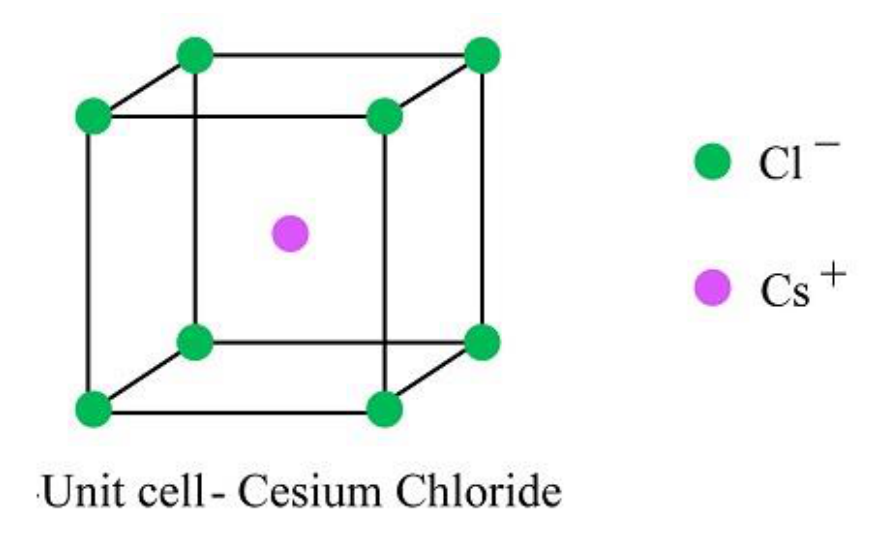
Answer and explanation
Answer: a)
Session 16, Slide 7: $\text{Cl}^-$ ions occupy the $8$ cube corners, contributing $8\times\frac{1}{8} = 1\ \text{Cl}^-$ per cell, and the single interior $\text{Cs}^+$ ion contributes $1\ \text{Cs}^+$ per cell; the central $\text{Cs}^+$ touches all $8$ corner $\text{Cl}^-$ ions, so $\text{C.I.} = 8$.
Why the other options are wrong:
- b) Miscounts the $8$ shared corner anions as $2$ ions instead of $8\times\frac{1}{8} = 1$.
- c) Assigns the octahedral coordination index ($\text{C.I.} = 6$) instead of cubic $8$-fold coordination.
- d) Counts every corner ion as $1$ whole ion rather than $1/8$ and uses the FCC metallic coordination ($12$).
Session 16, Slide 7.
Question 4 · Reading interstitial fraction and formula units in zinc blende
In the unit cell shown below, $\text{S}^{2-}$ ions occupy the FCC lattice points while $\text{Zn}^{2+}$ ions sit inside alternating sub-cubes. Which interstitial fraction and formula-unit count per cell does this arrangement give?
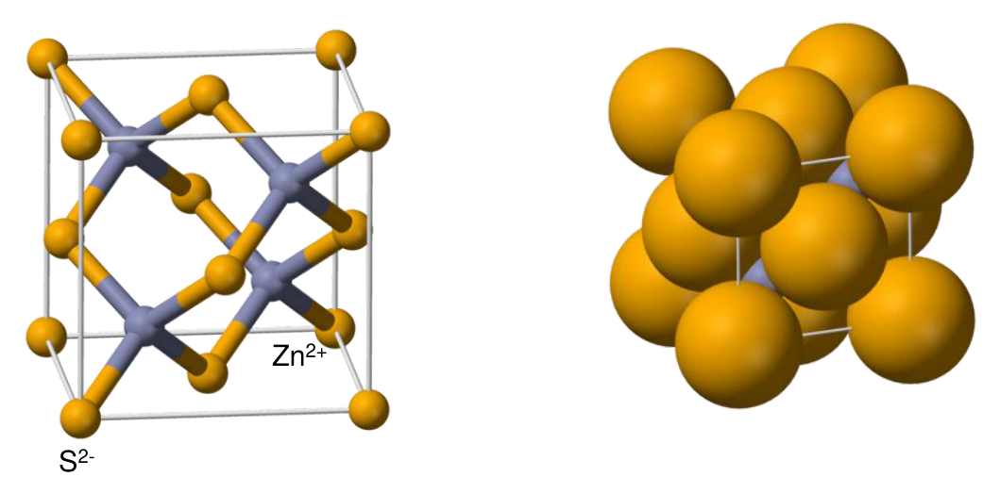
Answer and explanation
Answer: c)
Session 16, Slide 9: an FCC cell contains $8$ tetrahedral octants; $\text{Zn}^{2+}$ ions occupy $4$ of those $8$ tetrahedral sites ($1/2$ occupied), pairing with $8\times\frac{1}{8} + 6\times\frac{1}{2} = 4\ \text{S}^{2-}$ anions to yield $4\ \text{ZnS}$ formula units per unit cell.
Why the other options are wrong:
- a) Confuses the alternating interior tetrahedral sites with the edge-and-body octahedral sites of rock salt.
- b) Counts all $8$ octants as occupied, which would give $8\ \text{Zn}^{2+}$ and $4\ \text{S}^{2-}$ ($\text{Zn}_2\text{S}$).
- d) Confuses the $1/4$ octahedral occupancy of perovskite ($ABO_3$) with the $1/2$ tetrahedral occupancy of zinc blende.
Session 16, Slide 9.
Question 5 · Reading ion counts and coordination in fluorite
Inspect the unit cell below, where $\text{Ca}^{2+}$ occupies the corners and face centres and $\text{F}^-$ occupies all eight interior octants. Which ion counts per cell and coordination indices match this geometry?

Answer and explanation
Answer: b)
Session 16, Slide 10: $\text{Ca}^{2+}$ on FCC corners and faces contributes $8\times\frac{1}{8} + 6\times\frac{1}{2} = 4$ cations, and $8$ wholly interior $\text{F}^-$ ions contribute $8$ anions ($4\ \text{CaF}_2$ units). Each $\text{Ca}^{2+}$ is surrounded by $8\ \text{F}^-$ anions ($\text{C.I.} = 8$), and each $\text{F}^-$ inside its octant tetrahedron has $4\ \text{Ca}^{2+}$ neighbours ($\text{C.I.} = 4$).
Why the other options are wrong:
- a) Miscounts $8$ interior $\text{F}^-$ ions as $4$ and assigns rock-salt octahedral coordination.
- c) Reverses the ion counts to $8$ cations and $4$ anions (the anti-fluorite stoichiometry).
- d) Keeps the right cell counts ($4$ and $8$) but swaps the coordination indices of $\text{Ca}^{2+}$ and $\text{F}^-$.
Session 16, Slide 10.
Question 6 · Reading ion counts and coordination in perovskite
From the unit cell shown below ($\text{Ca}^{2+}$ at corners, $\text{O}^{2-}$ at face centres, $\text{Ti}^{4+}$ at body centre), how many ions of each kind belong to one cell and what is the coordination index of $\text{Ca}^{2+}$?
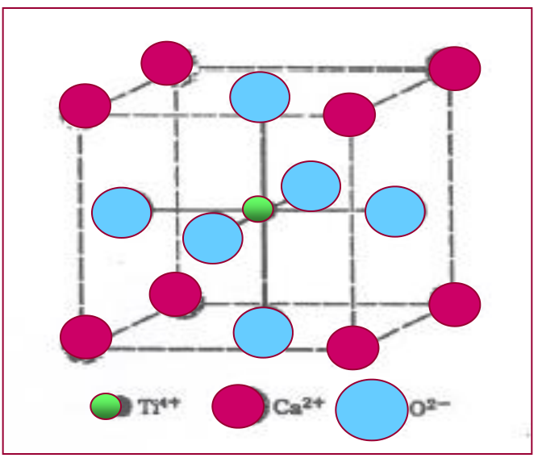
Answer and explanation
Answer: d)
Session 16, Slide 12: corners give $8\times\frac{1}{8} = 1\ \text{Ca}^{2+}$, face centres give $6\times\frac{1}{2} = 3\ \text{O}^{2-}$, and the body centre gives $1\ \text{Ti}^{4+}$, forming $\text{CaTiO}_3$. Since $\text{Ca}^{2+}$ and $\text{O}^{2-}$ together form an FCC packing, each corner $\text{Ca}^{2+}$ has $12$ nearest face-centre $\text{O}^{2-}$ neighbours ($\text{C.I.} = 12$), while $\text{Ti}^{4+}$ has $\text{C.I.} = 6$.
Why the other options are wrong:
- a) Forgets the $1/2$ sharing factor on the $6$ face-centre $\text{O}^{2-}$ ions and gives $\text{Ca}^{2+}$ a $\text{CsCl}$-like $\text{C.I.} = 8$.
- b) Miscounts corner $\text{Ca}^{2+}$ as $4$ instead of $8\times\frac{1}{8} = 1$ and attributes $\text{Ti}^{4+}$'s $\text{C.I.} = 6$ to $\text{Ca}^{2+}$.
- c) Counts the four possible octahedral sites of FCC instead of the $1$ occupied body-centre $\text{Ti}^{4+}$.
Session 16, Slide 12.
Question 7 · Identifying perovskite from (110) and (100) planes
The figure shows the $(110)$ and $(100)$ crystallographic planes of an $A_x B_y C_z$ unit cell with orthogonal axes. Identify its crystal system, stoichiometry, and structure type:

Answer and explanation
Answer: c)
Problems T8_CeramicMaterials.pdf, Problem 3 and Session 16, Slide 12: from $(100)$, $b = 0.387\text{ nm}$ and $c = 0.383\text{ nm}$; from $(110)$, $a = \sqrt{0.546^2 - 0.387^2} = 0.385\text{ nm} \neq b \neq c$, so the orthogonal cell is orthorhombic. $A$ sits at all $8$ corners ($1$), $C$ at the $(100)$ face centre and top/bottom face centres in $(110)$ ($6\times\frac{1}{2} = 3$), and $B$ at the body centre ($1$), giving $ABC_3$ perovskite.
Why the other options are wrong:
- a) Overlooks that $a = 0.385$, $b = 0.387$, and $c = 0.383\text{ nm}$ are three unequal edges (not cubic) and miscounts the $A$ corners.
- b) Assumes $a = b$ (tetragonal) without solving the base diagonal and miscounts the $C$ face-centre anions.
- d) Correctly reads the orthorhombic distortion but miscounts $B$ at the body centre ($1$, not $2$) and misidentifies the cubic-derived perovskite as HCP corundum.
Problems T8_CeramicMaterials.pdf, Problem 3; Session 16, Slide 12.
Question 8 · Lattice parameter a from orthogonal (110) and (100) planes
From the $(110)$ and $(100)$ planes of the orthogonal unit cell shown below ($b = 0.387\text{ nm}$, $c = 0.383\text{ nm}$, base face diagonal $= 0.546\text{ nm}$), calculate the lattice parameter $a$:
Answer and explanation
Answer: a)
Problems T8_CeramicMaterials.pdf, Problem 3: the $(110)$ plane is a vertical diagonal rectangle of height $c = 0.383\text{ nm}$ and base equal to the face diagonal $\sqrt{a^2 + b^2} = 0.546\text{ nm}$. By Pythagoras, $a = \sqrt{0.546^2 - 0.387^2} = \sqrt{0.29812 - 0.14977} = \sqrt{0.14835} = 0.385\text{ nm}$.
Why the other options are wrong:
- b) Reads the horizontal edge of the diagonal $(110)$ plane ($0.546\text{ nm}$) directly as $a$.
- c) Multiplies $0.546$ by $\sqrt{2}$ ($0.772\text{ nm}$) instead of solving $a^2 + b^2 = 0.546^2$.
- d) Subtracts linearly ($0.546 - 0.387 = 0.159\text{ nm}$) instead of subtracting squares under the square root.
Problems T8_CeramicMaterials.pdf, Problem 3.
Question 9 · Identifying rock salt from (020) and (100) planes
The figure shows the $(020)$ mid-plane (at $y = a/2$) and $(100)$ face of a cubic unit cell with ions $A$ (small black) and $B$ (large open). Which stoichiometry and structure type do these planes represent?

Answer and explanation
Answer: b)
Problems T8_CeramicMaterials.pdf, Problem 5 and Session 16, Slide 8: in $(100)$, $B$ occupies corners and the face centre (FCC lattice, $4$ ions), while $A$ occupies edge midpoints; in $(020)$, $A$ also sits at the centre $(\frac{1}{2},\frac{1}{2},\frac{1}{2})$, showing that $A$ fills all octahedral sites ($12\times\frac{1}{4} + 1 = 4$ ions). Thus the formula is $AB$ with the rock salt ($\text{NaCl}$) structure.
Why the other options are wrong:
- a) Fluorite ($AB_2$) places anions inside the octant tetrahedral sites visible on $(110)$, not at edge midpoints and body centre.
- c) $\text{CsCl}$ places only $B$ at corners and $A$ at the body centre, with empty face centres and empty edge midpoints.
- d) Zinc blende places $A$ ions inside four of the eight octants, leaving edge midpoints and the body centre empty.
Problems T8_CeramicMaterials.pdf, Problem 5; Session 16, Slide 8.
Question 10 · Stoichiometry and valence from octahedral occupancy
In a cubic oxide whose $\text{O}^{2-}$ anions occupy the FCC lattice sites, cations $M^{z+}$ fill all octahedral interstitial sites and leave all tetrahedral sites empty. Referring to the unit-cell stoichiometry and cation valence $z$, indicate which statement is TRUE:
Answer and explanation
Answer: c)
Session 16, Slides 6 and 8: an FCC cell contains $4$ lattice $\text{O}^{2-}$ anions ($8\times\frac{1}{8} + 6\times\frac{1}{2} = 4$) and $4$ octahedral sites ($12\times\frac{1}{4} + 1 = 4$). Filling all octahedral sites gives $4\ M$ and $4\ \text{O}$, so the formula is $MO$ and electroneutrality with $\text{O}^{2-}$ fixes $z = +2$.
Why the other options are wrong:
- a) Doubles the anion count ($8\ \text{O}$) instead of counting $4$ FCC lattice anions.
- b) Uses $8$ (the number of tetrahedral sites in FCC) instead of $4$ (the number of octahedral sites).
- d) Assumes only half of the octahedral sites are filled ($2\ M$), leaving a net negative deficiency if all sites are filled.
Session 16, Slides 6 and 8.
B67 — Covalent ceramics and carbon allotropes
Ten test questions on ceramic materials, written for this portal in the style of Part I of Assessment Test III. Each question has four options and only one is right. Answer all ten before opening any explanation.
Question 1 · Hardness of covalent versus ionic ceramics
Which one of the following statements comparing covalent and ionic ceramics is TRUE:
Answer and explanation
Answer: a)
MATERIALS_FINALEXAM_2017_ORD.pdf, p. 4 (Q7.2, Official Key: True) and Session 16, Slide 16: ceramics are very hard solids, and covalent ceramics such as diamond and $\text{SiC}$ exhibit higher hardness than ionic ceramics such as $\text{Al}_2\text{O}_3$ and $\text{ZrO}_2$.
Why the other options are wrong:
- b) Inverts the hardness ranking between covalent carbides/diamond and ionic oxides.
- c) Mischaracterizes covalent electron sharing, which produces strong, stiff, highly directional networks.
- d) Incorrectly predicts plastic yielding: rigid directional covalent bonds strongly resist dislocation glide, causing brittle fracture rather than yielding.
MATERIALS_FINALEXAM_2017_ORD.pdf, p. 4 (Q7.2); Session 16, Slide 16.
Official examQuestion 2 · Diamond cubic cell atom count and hybridization
The unit cell below shows the diamond cubic crystal structure ($100\%$ covalent carbon). How many carbon atoms belong to one unit cell, and what are the hybridization and coordination index of each carbon atom?
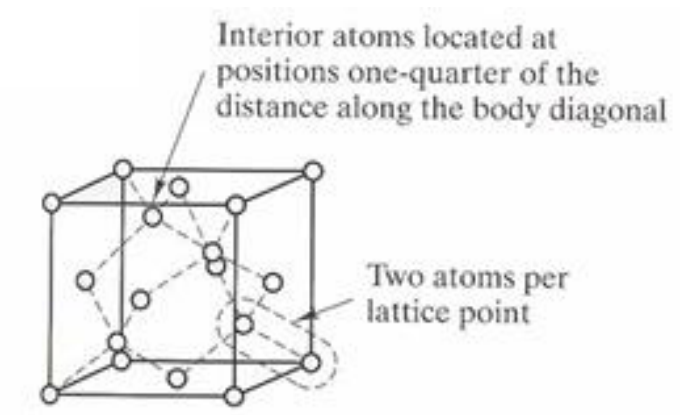
Answer and explanation
Answer: d)
Session 16, Slide 15: the diamond cell has the zinc-blende geometry with one element—two atoms per FCC lattice point ($4\times 2 = 8$ carbon atoms per cell: $4$ on FCC corners/faces plus $4$ at quarter body-diagonal sites)—and each carbon atom is $sp^3$-hybridized with tetrahedral $\text{C.I.} = 4$.
Why the other options are wrong:
- a) Uses the planar $sp^2$ geometry of graphite ($\text{C.I.} = 3$) and omits the four interior tetrahedral atoms.
- b) Correctly counts $8$ atoms per cell but misassigns planar $sp^2$ hybridization and octahedral coordination.
- c) Correctly identifies $sp^3$ tetrahedral coordination ($\text{C.I.} = 4$) but counts only the $4$ FCC lattice points, missing the second atom per lattice point.
Session 16, Slide 15.
Question 3 · Why directional orbitals control covalent coordination
Unlike predominantly ionic ceramics whose coordination follows the radius ratio $r_C/r_A$, covalent ceramics adopt open, low-coordination crystal structures because:
Answer and explanation
Answer: b)
Session 16, Slide 15: in covalent ceramics, atoms bond through localized hybrid orbitals ($sp^3$ tetrahedra at $109.5^\circ$ giving $\text{C.I.} = 4$, or $sp^2$ triangles at $120^\circ$ giving $\text{C.I.} = 3$), producing low-coordination, open structures rather than dense sphere packings.
Why the other options are wrong:
- a) Inverts packing density: low-coordination tetrahedral networks have low packing factors (open structures), far below $0.74$ or $0.85$.
- c) Attributes non-directional metallic/ionic sphere-packing behaviour to covalent bonds, which are strictly directional.
- d) Introduces free metallic electrons that are absent in insulating covalent networks.
Session 16, Slide 15; Session 2, Slides 17-19.
Question 4 · Silicon carbide bonding, structure and properties
Referring to silicon carbide ($\text{SiC}$) as a structural engineering ceramic, indicate which statement is TRUE:
Answer and explanation
Answer: c)
Session 16, Slides 5, 9, 15, and 16: with $\Delta X = 0.7$, Pauling's relation gives $11\%$ ionic and $89\%$ covalent character for $\text{SiC}$; it adopts the diamond/zinc-blende ($\text{C.I.} = 4$) structure and serves as an abrasive and structural ceramic thanks to its high hardness and chemical inertness.
Why the other options are wrong:
- a) Swaps percentage covalent ($89\%$) with percentage ionic ($11\%$) and assigns rock salt octahedral coordination instead of tetrahedral.
- b) Misidentifies both the crystal structure (zinc blende, not HCP corundum) and the mechanical hardness.
- d) Treats localized shared covalent electron pairs as free conduction electrons in a metallic sea.
Session 16, Slides 5, 9, 15, and 16.
Question 5 · Hybridization and structure of silicon nitride
With respect to silicon nitride ($\text{Si}_3\text{N}_4$), indicate which statement is FALSE:
Answer and explanation
Answer: a)
Session 16, Slides 4, 5, and 15 (and Session 18, Slide 39): in $\text{Si}_3\text{N}_4$, $\text{Si}$ is $sp^3$-hybridized ($\text{C.I.} = 4$, forming $\text{SiN}_4$ tetrahedra) while $\text{N}$ is $sp^2$-hybridized ($\text{C.I.} = 3$, bonded to three $\text{Si}$), creating an open $70\%$-covalent structure rather than a close-packed $sp^3$ lattice. Statement a) is false.
Why the other options are wrong:
- b) True (Session 16, Slide 15): explicitly states $\text{Si}\ (sp^3, \text{C.I.}=4)$ and $\text{N}\ (sp^2, \text{C.I.}=3)$.
- c) True (Session 16, Slides 5 and 15): $\Delta X = 1.2$ gives $30\%$ ionic and $70\%$ covalent character.
- d) True (Session 16, Slides 4 and 15; Session 18, Slide 39): cutting elements, blades, and gas-turbine rotors exploit $\text{Si}_3\text{N}_4$'s hardness and low density.
Session 16, Slides 4, 5, and 15; Session 18, Slide 39.
Question 6 · Diamond versus graphite bonding and anisotropy
Which one of the following statements comparing the carbon allotropes diamond and graphite is TRUE:
Answer and explanation
Answer: d)
Session 4, Slides 49-50, Session 13, Slide 21, and Session 16, Slide 15: diamond is a 3D covalent $sp^3$ network ($\text{C.I.} = 4$) that is hard, transparent, and an electrical insulator, whereas graphite stacks hexagonal $sp^2$ graphene sheets ($\text{C.I.} = 3$) with delocalized in-plane $\pi$ electrons (high in-plane conductivity) and weak secondary bonds between layers.
Why the other options are wrong:
- a) Confuses weak interlayer van der Waals forces in graphite with non-existent ionic bonds in pure carbon.
- b) Assigns tetrahedral $\text{C.I.} = 4$ to graphite instead of trigonal planar $\text{C.I.} = 3$.
- c) Inverts graphite's electrical anisotropy: delocalized $\pi$ electrons travel readily within the $sp^2$ layers, not across the interlayer van der Waals gap.
Session 4, Slides 49-50; Session 13, Slide 21; Session 16, Slide 15.
Question 7 · Shear deformation behaviour of graphite
When a shear force is applied parallel to the hexagonal basal planes of graphite, the crystal shears readily and acts as a solid lubricant because:
Answer and explanation
Answer: b)
Session 4, Slides 49-50: in graphite, strong in-plane $sp^2$ covalent bonds hold each hexagonal carbon layer together, while weak secondary (van der Waals) bonds link adjacent layers, allowing planes to slide past one another under small shear stresses.
Why the other options are wrong:
- a) Overlooks the strong primary covalent bonds inside each hexagonal carbon sheet.
- c) Invents room-temperature melting under shear; graphite has a very high sublimation temperature and slides as solid sheets.
- d) Applies close-packed metallic/ionic slip planes to a layered covalent-secondary solid.
Session 4, Slides 49-50.
Question 8 · Microscopic origin of higher hardness in covalent ceramics
Covalent ceramics such as diamond and $\text{SiC}$ are harder than ionic oxide ceramics such as $\text{Al}_2\text{O}_3$ and $\text{ZrO}_2$ primarily because:
Answer and explanation
Answer: c)
Session 16, Slides 15-16 and Session 2, Slides 17-19: localized, strongly directional covalent bonds fix specific interatomic angles ($109.5^\circ$ in $sp^3$) and severely resist the bond distortion and shear displacement needed for indentation or dislocation glide, making covalent networks harder than non-directional ionic oxides.
Why the other options are wrong:
- a) Reverses the packing trend: directional covalent networks have much lower packing factors than close-packed ionic oxides.
- b) Confuses covalent ceramics with metals; covalent solids have localized electron pairs rather than a free electron sea.
- d) Ignores that strong Coulomb attraction operates in ionic crystals at all temperatures, even though it is non-directional.
Session 16, Slides 15-16; Session 2, Slides 17-19.
Question 9 · Coordination of nitrogen in silicon nitride
In the crystal structure of silicon nitride ($\text{Si}_3\text{N}_4$), each silicon atom sits at the centre of a $\text{SiN}_4$ tetrahedron ($\text{C.I.} = 4$) while each nitrogen atom is coordinated to:
Answer and explanation
Answer: a)
Session 16, Slide 15: in $\text{Si}_3\text{N}_4$, silicon has $sp^3$ tetrahedral coordination ($\text{C.I.} = 4$), whereas nitrogen has $sp^2$ hybridization with $\text{C.I.} = 3$, meaning each nitrogen atom bonds to three silicon neighbours (matching the $3:4$ $\text{Si}:\text{N}$ stoichiometry: $3\times 4 = 4\times 3 = 12$ bonds).
Why the other options are wrong:
- b) Assumes $\text{N}$ shares the $sp^3$ $\text{C.I.} = 4$ geometry of $\text{Si}$, which would give a $1:1$ formula rather than $\text{Si}_3\text{N}_4$.
- c) Assigns octahedral coordination ($\text{C.I.} = 6$), incompatible with $sp^2$ covalent bonding and $\text{Si}_3\text{N}_4$ stoichiometry.
- d) Confuses $\text{N}$ in $\text{Si}_3\text{N}_4$ with corner-shared oxygen bridges ($\text{C.I.} = 2$) in silica ($\text{SiO}_2$).
Session 16, Slide 15.
Question 10 · Ordering covalent ceramics by ionic character
Rank the three structural covalent ceramics diamond ($\text{C}$), silicon carbide ($\text{SiC}$), and silicon nitride ($\text{Si}_3\text{N}_4$) in order of increasing percentage of ionic bond character:
Answer and explanation
Answer: d)
Session 16, Slides 5 and 15: diamond ($\text{C–C}$, $\Delta X = 0$) is $100\%$ covalent ($0\%$ ionic), $\text{SiC}$ ($\Delta X = 0.7$) is $89\%$ covalent ($11\%$ ionic), and $\text{Si}_3\text{N}_4$ ($\Delta X = 1.2$) is $70\%$ covalent ($30\%$ ionic), giving $0\% < 11\% < 30\%$ ionic character.
Why the other options are wrong:
- a) Reverses the ranking into increasing covalent (decreasing ionic) character.
- b) Misplaces $\text{SiC}$ ahead of pure elemental diamond ($\Delta X = 0$).
- c) Swaps $\text{Si}_3\text{N}_4$ ($30\%$ ionic) and $\text{SiC}$ ($11\%$ ionic) at the upper end.
Session 16, Slides 5 and 15.
B68 — Silicate structures and silica polymorphs
Ten test questions on ceramic materials, written for this portal in the style of Part I of Assessment Test III. Each question has four options and only one is right. Answer all ten before opening any explanation.
Question 1 · Bonding and geometry of the SiO4 tetrahedron
Referring to the $\text{SiO}_4^{4-}$ structural unit of silicate ceramics, indicate which statement is TRUE:
Answer and explanation
Answer: b)
Session 16, Slides 5 and 24: the $\text{Si–O}$ bond has roughly $50\%$ ionic–$50\%$ covalent character ($51\%$ ionic / $49\%$ covalent by Pauling), and $r_{\text{Si}^{4+}}/r_{\text{O}^{2-}} = 0.29$ falls in the $0.225\text{–}0.414$ tetrahedral range; tetrahedra unite at their corners to raise the packing factor and build diverse silicate structures.
Why the other options are wrong:
- a) Misstates both the bond character ($50/50$, not $100\%$ ionic) and the radius ratio ($0.29$ tetrahedral, not $0.62$ octahedral).
- c) Inverts tetrahedral linkage: sharing faces or edges brings highly charged $\text{Si}^{4+}$ ions too close together, so tetrahedra share corners only.
- d) Reverses the sign of the ion charge: $\text{Si}^{4+} + 4\text{O}^{2-}$ yields $-4$ ($\text{SiO}_4^{4-}$), which requires neutralizing cations, not anions.
Session 16, Slides 5 and 24.
Question 2 · Electroneutrality of 3D corner-sharing silica
In the silicate structural motif shown below (central $\text{Si}$ bonded to four corner $\text{O}$ atoms), why is zero extra balancing cation required only when every oxygen corner is shared between two tetrahedra?

Answer and explanation
Answer: c)
Session 16, Slides 24 and 26: an isolated $\text{SiO}_4^{4-}$ unit carries charge $+4 + 4(-2) = -4$. When all four corner oxygens are shared between two neighbouring tetrahedra, each oxygen counts as $1/2$ per silicon ($4\times\frac{1}{2} = 2$ oxygens per $\text{Si}$), producing the neutral formula $\text{SiO}_2$ (silica).
Why the other options are wrong:
- a) Multiplies oxygen count instead of dividing shared corner oxygens by $2$.
- b) Incorrectly alters silicon's oxidation state ($+4$) during polymerization of corners.
- d) Reverses formal charges: every oxygen ion in silicates is formally $\text{O}^{2-}$, and sharing splits that $-2$ charge equally between two tetrahedra.
Session 16, Slides 24 and 26.
Question 3 · Matching silicate dimensional classes to mineral examples
Which sequence matches, in order, an island (isolated) silicate, a single-chain silicate, a sheet silicate, and a 3D network silicate?
Answer and explanation
Answer: a)
Session 16, Slide 25: silicates are classified by tetrahedral ordering into islands (orthosilicates such as forsterite $\text{Mg}_2\text{SiO}_4$), rings (metasilicates such as wollastonite $\text{CaSiO}_3$), chains (enstatite $\text{MgSiO}_3$), sheets (kaolinite and talc), and 3D frameworks (quartz $\text{SiO}_2$).
Why the other options are wrong:
- b) Places the 3D framework (quartz) first and the island orthosilicate (forsterite) third.
- c) Starts with a sheet silicate (kaolinite) and ends with an island silicate (forsterite).
- d) Swaps the chain silicate (enstatite) and island silicate (forsterite) and reverses the sheet and 3D entries.
Session 16, Slide 25.
Question 4 · Effect of increasing shared tetrahedral corners
As silicate structures progress from isolated islands through chains and sheets to three-dimensional quartz, the number of shared oxygen corners per $\text{SiO}_4^{4-}$ tetrahedron rises from $0$ to $4$, causing:
Answer and explanation
Answer: d)
Session 16, Slides 24-26: sharing $0 \to 2 \to 3 \to 4$ oxygen corners per tetrahedron lowers the $\text{O}/\text{Si}$ ratio ($4 \to 3 \to 2.5 \to 2$) and reduces the net charge per $\text{Si}$ from $-4$ ($\text{SiO}_4^{4-}$) down to $0$ ($\text{SiO}_2$), eliminating the need for interstitial cations in pure silica.
Why the other options are wrong:
- a) Inverts the charge-sharing trend: sharing oxygens satisfies silicon's bonding without extra cations, reducing negative charge per $\text{Si}$.
- b) Reverses the $\text{O}/\text{Si}$ stoichiometric progression ($4:1$ belongs to islands, $2:1$ to 3D quartz).
- c) Incorrectly claims metallic bonding emerges as the covalent–ionic $\text{Si–O}$ network becomes 3D.
Session 16, Slides 24-26.
Question 5 · Sheet silicates, clays and talc
Regarding sheet (laminar) silicates such as kaolinite clay and talc, indicate which statement is FALSE:
Answer and explanation
Answer: b)
Session 16, Slides 4, 24-26, and Session 18, Slides 5 and 42: sheet silicates share three of the four oxygen corners in 2D hexagonal layers (leaving one apical oxygen unshared to bond to $\text{Al}_2(\text{OH})_4^{2+}$ or $\text{Mg}_3(\text{OH})_4^{2+}$ hydroxide layers); sharing all four corners creates 3D silica ($\text{SiO}_2$), not a sheet silicate. Statement b) is false.
Why the other options are wrong:
- a) True (Session 16, Slide 25): the laminar diagram shows a 2D hexagonal mesh sharing $3$ corners per tetrahedron.
- c) True (Session 16, Slide 25): laminar structures owe their softness and plasticity with water (clays) or lubricity (talc) to weak interlayer bonding.
- d) True (Session 16, Slide 4; Session 18, Slide 42): clay is the main raw material of traditional ceramics and electrical porcelain.
Session 16, Slides 4 and 24-26; Session 18, Slides 5 and 42.
Question 6 · Charge compensation in feldspars
Feldspars (such as $\text{K}_2\text{O}\cdot\text{Al}_2\text{O}_3\cdot 6\text{SiO}_2$) build a three-dimensional tetrahedral network like silica, except that replacing some $\text{Si}^{4+}$ with $\text{Al}^{3+}$ creates a negative lattice charge compensated by:
Answer and explanation
Answer: c)
Session 16, Slide 26: in feldspars, $\text{Al}^{3+}$ substitutes for $\text{Si}^{4+}$ in the 3D corner-sharing network, leaving a $-1$ charge deficit per substitution that is neutralized by incorporating large alkali or alkaline-earth cations ($\text{Na}^+$, $\text{K}^+$, $\text{Ca}^{2+}$, $\text{Ba}^{2+}$) in interstitial holes.
Why the other options are wrong:
- a) Removing $\text{O}^{2-}$ ions would compensate charge only by breaking the tetrahedral corner network, which is not how feldspars form.
- b) $\text{Si}^{4+}$ ions sit at tetrahedral centres rather than filling cubic face-centre interstitials.
- d) Feldspars are insulating alumino-silicate minerals with no metallic electron sea.
Session 16, Slide 26.
Question 7 · Silica polymorph sequence at 1 atm on the phase diagram
From the pressure–temperature phase diagram of silica ($\text{SiO}_2$) below, which sequence of equilibrium polymorphs forms when pure crystalline silica is heated at $1\text{ atm}$ until it melts?

Answer and explanation
Answer: a)
Session 16, Slide 26: following the dashed $1\text{ atm}$ horizontal line from low to high temperature crosses $\alpha$-quartz (up to $573\ ^\circ\text{C}$), $\beta$-quartz ($573\text{–}870\ ^\circ\text{C}$), $\beta$-tridymite ($870\text{–}1470\ ^\circ\text{C}$), $\beta$-cristobalite ($1470\text{–}1713\ ^\circ\text{C}$), and finally liquid above $1713\ ^\circ\text{C}$.
Why the other options are wrong:
- b) Reverses the temperature order of the crystalline polymorphs before melting.
- c) Swaps $\beta$-quartz and $\beta$-tridymite and omits the high-temperature $\beta$-cristobalite field below $1713\ ^\circ\text{C}$.
- d) Places the sublimation curve above $1\text{ atm}$; the vapour field lies below the $1\text{ atm}$ dashed line.
Session 16, Slide 26.
Question 8 · Crystalline silica polymorphs versus fused silica
With respect to crystalline silica polymorphs (such as quartz) compared with amorphous fused silica glass, indicate which statement is TRUE:
Answer and explanation
Answer: d)
Session 16, Slides 26-27 and 31: crystalline silica exhibits allotropy with sharp transitions (such as $\alpha \leftrightarrow \beta$-quartz at $573\ ^\circ\text{C}$) and a definite melting point ($1713\ ^\circ\text{C}$), whereas fused silica ($>99.5\%$ $\text{SiO}_2$) is an amorphous network with the disordered structure of a liquid, exhibiting a glass transition $T_g$ rather than a sharp $T_m$ and avoiding polymorphic volume jumps.
Why the other options are wrong:
- a) Incorrectly assigns a crystalline melting point and long-range order to amorphous fused silica.
- b) Attributes quartz's $573\ ^\circ\text{C}$ allotropic transition to fused silica and inverts their thermal expansions ($\alpha_{\text{fused silica}} = 0.5\times 10^{-6}\ ^\circ\text{C}^{-1}$ is ultra-low).
- c) Misrepresents the 3D corner-sharing tetrahedral connectivity present in both crystalline quartz and fused silica.
Session 16, Slides 26-27 and 31.
Question 9 · Thermal cycling across 573 °C in quartz versus fused silica
When a crystalline quartz refractory block and an amorphous fused silica block are repeatedly heated and cooled rapidly across $573\ ^\circ\text{C}$, what happens to the two components?
Answer and explanation
Answer: b)
Session 16, Slides 26 and 31 (and Session 15, Slide 37): crystalline quartz undergoes an abrupt $\alpha \leftrightarrow \beta$ allotropic transformation at $573\ ^\circ\text{C}$ accompanied by a sudden dimensional change that induces cracking on cycling, whereas amorphous fused silica has no allotropic transitions, an extremely low expansion coefficient ($\alpha = 0.5\times 10^{-6}\ ^\circ\text{C}^{-1}$), and thermal shock resistance up to $\sim 1600\ ^\circ\text{C}$.
Why the other options are wrong:
- a) Overlooks the $573\ ^\circ\text{C}$ $\alpha$-quartz to $\beta$-quartz transformation shown on the silica phase diagram.
- c) Inverts their behaviour: fused silica exhibits $T_g$ and has one of the highest thermal shock resistances among glasses.
- d) Confuses polymorphic transformation of pure $\text{SiO}_2$ with compositional addition of $\text{Na}_2\text{O}/\text{CaO}$ modifiers to make soda-lime glass.
Session 16, Slides 26 and 31; Session 15, Slide 37.
Question 10 · Silicate abundance, compositions and modifiers
Which one of the following statements about silicates as raw materials and glass formers in ceramic engineering is FALSE:
Answer and explanation
Answer: d)
Session 16, Slides 23 and 28-29: pure silica has the highest softening/transition temperature ($\sim 1600\ ^\circ\text{C}$), whereas adding glass modifiers ($\text{Na}_2\text{O}$, $\text{CaO}$) breaks $\text{Si–O–Si}$ bridges, reduces viscosity, and lowers $T_g$ from $1600\ ^\circ\text{C}$ down to $\sim 730\ ^\circ\text{C}$ in soda-lime glass. Statement d) is false.
Why the other options are wrong:
- a) True (Session 16, Slide 23): Earth's crust is roughly $50\%$ oxygen and $25\%$ silicon.
- b) True (Session 16, Slide 23): the silicate composition table lists these multi-oxide traditional ceramics and cements.
- c) True (Session 16, Slide 23): highlights construction and electrical/thermal insulation as primary engineering uses.
Session 16, Slides 23 and 28-29.
B69 — Ceramic point defects and ionic lattice energy
Ten test questions on ceramic materials, written for this portal in the style of Part I of Assessment Test III. Each question has four options and only one is right. Answer all ten before opening any explanation.
Question 1 · Schottky and Frenkel defects in ionic ceramics
Referring to intrinsic point defects (Schottky and Frenkel) in stoichiometric ionic ceramics, indicate which statement is TRUE:
Answer and explanation
Answer: c)
Session 4, Slides 17-18: to preserve electrical neutrality in an ionic crystal, intrinsic point defects appear as charge-balanced combinations—either a Schottky defect (one cationic vacancy plus one anionic vacancy) or a Frenkel defect (an ion displaced from its regular lattice site into an interstitial site, creating a vacancy–interstitial pair).
Why the other options are wrong:
- a) Removing a single ion leaves an uncompensated net electric charge, violating macroscopic electroneutrality.
- b) Swaps the two defect mechanisms: removing an ion pair to the surface defines a Schottky defect, not a Frenkel defect.
- d) In a given crystal, $\Delta H_S \neq \Delta H_F$, and the defect with the lower formation energy dominates exponentially.
Session 4, Slides 17-18.
Question 2 · Effect of Schottky versus Frenkel defects on density
When an ionic ceramic develops a high concentration of Schottky defects rather than Frenkel defects upon heating (assuming a constant unit-cell volume), what happens to its macroscopic mass density?
Answer and explanation
Answer: a)
Session 4, Slides 17-18: in a Schottky defect, equal charge equivalents of cations and anions are missing from interior lattice sites (effectively moved to the surface), reducing the mass per unit cell at nearly fixed lattice parameter and thus lowering density, whereas a Frenkel defect keeps every ion inside the crystal and conserves mass.
Why the other options are wrong:
- b) Incorrectly introduces extra interstitial mass that neither Schottky nor Frenkel defects add to a stoichiometric crystal.
- c) Describes mass conservation in a Frenkel defect (where an ion stays inside the crystal in an interstitial hole), not a Schottky defect.
- d) Misstates defect thermodynamics: $\Delta H_S > 0$, and equilibrium vacancy fractions remain small ($n_S/N \ll 1$).
Session 4, Slides 17-18.
Question 3 · Why cations dominate Frenkel defects
When Frenkel defects form in an ionic ceramic, they predominantly involve displaced cations rather than displaced anions because:
Answer and explanation
Answer: d)
Session 4, Slides 17-18 and Session 13, Slide 22 (Problems T6 and T7, Problem 3): in ionic crystals $r_{\text{cation}} < r_{\text{anion}}$, so displacing a small cation into an interstitial void requires much lower formation energy $\Delta H_F$ than forcing a bulky anion into a tight interstitial site.
Why the other options are wrong:
- a) Confuses geometric size mismatch with electrostatic sign; interstitial voids lie between anions and cations alike.
- b) Interstitial voids belong to the crystal lattice as a whole rather than separating into distinct cation vs anion void counts.
- c) Both cation and anion Frenkel pairs keep the displaced ion inside the crystal, so neither violates electroneutrality.
Session 4, Slides 17-18; Session 13, Slide 22; Problems T6 and T7, Problem 3.
Question 4 · Charge compensation of Ca2+ impurities in NaCl
When a small amount of $\text{CaCl}_2$ dissolves substitutionally in $\text{NaCl}$ so that $\text{Ca}^{2+}$ ions replace $\text{Na}^+$ ions on the cation sublattice, electrical neutrality is maintained by creating:
Answer and explanation
Answer: b)
Session 4, Slide 22 (electroneutrality in ionic solid solutions): each $\text{Ca}^{2+}$ replacing a $\text{Na}^+$ introduces an excess positive charge of $+1$. Neutrality is restored by leaving one $\text{Na}^+$ site vacant per $\text{Ca}^{2+}$ ion ($2\,\text{Na}^+ \leftrightarrow \text{Ca}^{2+} + 1\,V_{\text{Na}}$), keeping total cation charge $+2$ on both sides.
Why the other options are wrong:
- a) Anion vacancies remove negative charge and add another $+1$ charge deficit instead of cancelling the $+1$ excess from $\text{Ca}^{2+}$.
- c) Adding an extra $\text{Na}^+$ interstitial doubles the excess positive charge instead of compensating it.
- d) Two $\text{Cl}^-$ vacancies would create an even larger positive charge imbalance ($+3$ excess).
Session 4, Slide 22.
Question 5 · Oxygen vacancies from lower-valence dopants in ZrO2
Referring to zirconia ($\text{ZrO}_2$) doped with lower-valence oxides such as $\text{CaO}$ ($\text{Ca}^{2+}$) or $\text{Y}_2\text{O}_3$ ($\text{Y}^{3+}$) substituting for $\text{Zr}^{4+}$, indicate which statement is TRUE:
Answer and explanation
Answer: d)
Session 4, Slide 22, Session 13, Slide 22, Session 16, Slide 10, and Session 18, Slide 41: replacing $\text{Zr}^{4+}$ with lower-valence $\text{Ca}^{2+}$ (charge $-2$ relative to host) or two $\text{Y}^{3+}$ ($2\times(-1) = -2$) requires positive charge compensation, which forms one oxygen ($\text{O}^{2-}$) vacancy per $\text{Ca}^{2+}$ or per two $\text{Y}^{3+}$; these extrinsic oxygen vacancies stabilize cubic fluorite $\text{YSZ}$ and enable oxygen-ion conduction in solid oxide fuel cells and gas sensors.
Why the other options are wrong:
- a) Confuses lower-valence doping in $\text{ZrO}_2$ with higher-valence doping ($\text{Al}^{3+}$ in $\text{MgO}$); cation vacancies would worsen the positive-charge deficit.
- b) Inverts the valences of $\text{Y}^{3+}$ ($+3$) and $\text{Zr}^{4+}$ ($+4$) and proposes interstitial anions despite their large size.
- c) Inverts the effect of doping on ionic ceramics: extrinsic vacancies created by aliovalent doping dramatically increase high-temperature ionic conductivity.
Session 4, Slide 22; Session 13, Slide 22; Session 16, Slide 10; Session 18, Slide 41.
Question 6 · Cationic vacancy concentration in MgO doped with Al2O3
When $1.0\text{ mol}$ of $\text{Al}_2\text{O}_3$ is dissolved in $99\text{ mol}$ of $\text{MgO}$ ($3\,\text{Mg}^{2+} \leftrightarrow 2\,\text{Al}^{3+} + 1\,V_{\text{Mg}}$), determine the ratio of $\text{Mg}^{2+}$ vacancies generated per mole of $\text{MgO}$:
Answer and explanation
Answer: c)
Session 4, Slide 22 and Problems T2 defects, Problem 3a: each mole of $\text{Al}_2\text{O}_3$ supplies $2\text{ mol}$ of $\text{Al}^{3+}$ (charge $+6$), replacing $3\text{ mol}$ of $\text{Mg}^{2+}$ and leaving $1.0\text{ mol}$ of cationic vacancies $V_{\text{Mg}}$. Dividing by $99\text{ mol}$ of $\text{MgO}$ gives $1.0/99 = 0.0101\ \text{mol vacancies/mol MgO}$.
Why the other options are wrong:
- a) Generated one vacancy per $\text{Al}^{3+}$ ion ($2/99 = 0.0202$) instead of one vacancy per two $\text{Al}^{3+}$ ions.
- b) Reported all replaced $\text{Mg}^{2+}$ sites ($3/99 = 0.0303$) rather than the empty vacant sites ($1/99$).
- d) Halved the vacancy count again ($0.5/99 = 0.0051$), underestimating the charge deficit.
Session 4, Slide 22; Problems T2 defects, Problem 3a.
Question 7 · Parameters governing ionic lattice energy
Regarding the magnitude of the lattice energy $|U| = \dfrac{Z_1 Z_2 e^2 N_A A}{4\pi\varepsilon_0 a_0}\left(1 - \dfrac{1}{n}\right)$ of binary ionic solids, indicate which statement is FALSE:
Answer and explanation
Answer: b)
MATERIALS_FINALEXAM_2015_EXTRA.pdf, p. 8 (Q7a) and Session 2, Slides 9-13: lattice energy depends directly on ionic charges ($Z_1 Z_2$) and inversely on equilibrium interionic distance ($a_0 = r_C + r_A$). Increasing ionic radius increases $a_0$ and therefore decreases $|U|$, lowering $T_m$ and hardness. Statement b) is false.
Why the other options are wrong:
- a) True (Session 2, Slide 10): $+2/-2$ oxides such as $\text{MgO}$ ($940\text{ kcal/mol}$, $T_m = 2800\ ^\circ\text{C}$) far exceed $+1/-1$ halides such as $\text{NaCl}$ ($183\text{ kcal/mol}$, $801\ ^\circ\text{C}$).
- c) True (Session 2, Slides 10-11): $\text{NaCl}$ ($r_{\text{Na}^+} < r_{\text{K}^+}$) has higher $|U|$ and higher hardness than $\text{KCl}$, and $\text{MgO}$ exceeds $\text{BaO}$.
- d) True (Session 2, Slides 10-13): higher binding energy produces a deeper, steeper well with higher $T_m$, higher $E$, and lower $\alpha$.
MATERIALS_FINALEXAM_2015_EXTRA.pdf, p. 8 (Q7a); Session 2, Slides 9-13.
Official examQuestion 8 · Hardness trend across alkaline-earth oxides
Given that the cation radius increases down group IIA ($r_{\text{Be}^{2+}} < r_{\text{Mg}^{2+}} < r_{\text{Ca}^{2+}} < r_{\text{Ba}^{2+}}$), rank $\text{BeO}$, $\text{MgO}$, $\text{CaO}$, and $\text{BaO}$ in order of increasing Mohs hardness:
Answer and explanation
Answer: a)
Session 2, Slide 11: for divalent oxides with constant charge ($+2/-2$), smaller cation radius $r_{C^+}$ shortens $d = r_C + r_A$, increasing lattice energy $|U|$ and Mohs hardness ($\text{BaO}: d=2.77\text{ Å}, 3.3$; $\text{CaO}: d=2.40\text{ Å}, 4.5$; $\text{MgO}: d=2.10\text{ Å}, 6.5$; $\text{BeO}: d=1.65\text{ Å}, 9.0$).
Why the other options are wrong:
- b) Reverses the trend into decreasing hardness (increasing ionic radius) instead of increasing hardness.
- c) Swaps $\text{CaO}$ ($4.5$) and $\text{BaO}$ ($3.3$), mistaking the larger $\text{Ba}^{2+}$ ion for the harder oxide.
- d) Swaps $\text{MgO}$ ($6.5$) and $\text{CaO}$ ($4.5$) in the middle of the series.
Session 2, Slide 11.
Question 9 · Matching NaCl, KCl, MgO and BaO to U, Tm and hardness
Using the influence of ion valence and ionic radius ($r_{\text{Na}^+} < r_{\text{K}^+}$, $r_{\text{Mg}^{2+}} < r_{\text{Ba}^{2+}}$) on lattice energy, match $\text{MgO}$, $\text{BaO}$, $\text{NaCl}$, and $\text{KCl}$ to Rows 1 to 4 of the table below:
| Row | $ | U | $ (kcal/mol) | $T_m$ (°C) | Mohs hardness |
|---|---|---|---|---|---|
| 1 | 940 | 2800 | 6.5 | ||
| 2 | 747 | 1923 | 3.3 | ||
| 3 | 183 | 801 | 2.5 | ||
| 4 | 164 | 776 | 2.25 |
Answer and explanation
Answer: d)
MATERIALS_FINALEXAM_2015_EXTRA.pdf, p. 8 (Q7b) and Session 2, Slides 10-11: divalent oxides ($Z_1 Z_2 = 4$) have far higher $|U|$, $T_m$, and hardness than monovalent halides ($Z_1 Z_2 = 1$). Within each valence pair, the smaller cation gives higher $|U|$, $T_m$, and hardness: $\text{MgO} > \text{BaO}$ ($940 > 747\text{ kcal/mol}$) and $\text{NaCl} > \text{KCl}$ ($183 > 164\text{ kcal/mol}$).
Why the other options are wrong:
- a) Inverts the ionic radius trend within both pairs, placing larger $\text{Ba}^{2+}$ above $\text{Mg}^{2+}$ and larger $\text{K}^+$ above $\text{Na}^+$.
- b) Places monovalent $\text{NaCl}$ above divalent $\text{BaO}$, ignoring the dominant $Z_1 Z_2$ charge factor.
- c) Reverses the entire order from lowest lattice energy (Row 1) to highest (Row 4).
MATERIALS_FINALEXAM_2015_EXTRA.pdf, p. 8 (Q7b); Session 2, Slides 10-11.
Official examQuestion 10 · Schottky concentration in MgO versus NaCl
At $1000\text{ K}$, the equilibrium Schottky defect concentration in $\text{MgO}$ ($\Delta H_S = 10.57\times 10^{-19}\text{ J/defect}$) is roughly eleven orders of magnitude lower than in $\text{NaCl}$ ($\Delta H_S = 3.69\times 10^{-19}\text{ J/defect}$) because:
Answer and explanation
Answer: c)
Session 4, Slide 18: equilibrium Schottky concentration follows $n_S = N\exp(-\Delta H_S / 2k_B T)$. Because $\text{Mg}^{2+}$ and $\text{O}^{2-}$ carry double charges and bind much more strongly than $\text{Na}^+$ and $\text{Cl}^-$, $\Delta H_S(\text{MgO})$ is nearly three times $\Delta H_S(\text{NaCl})$, making Schottky vacancies far harder to form in $\text{MgO}$ ($1.39\times 10^{7}$ vs $9.38\times 10^{17}$ per mol at $1000\text{ K}$).
Why the other options are wrong:
- a) Misstates $\text{MgO}$'s crystal structure: $\text{MgO}$ has the rock salt ($\text{NaCl}$) structure, the same structure as $\text{NaCl}$.
- b) Ignores the exponential Arrhenius dependence on $-\Delta H_S / (2k_B T)$, which turns a factor of $2.9$ in $\Delta H_S$ into ten orders of magnitude in $n_S$.
- d) Contradicts the official data table showing $\text{NaCl}$ forming abundant Schottky vacancy pairs at $1000\text{ K}$.
Session 4, Slide 18.
B70 — Ceramic mechanical properties and porosity
Ten test questions on ceramic materials, written for this portal in the style of Part I of Assessment Test III. Each question has four options and only one is right. Answer all ten before opening any explanation.
Question 1 · General ceramic properties
Indicate which of the following statements is TRUE:
Answer and explanation
Answer: d)
Session 16, Slides 2-3 (and MATERIALS_THIRDPARTIAL_2020_V2.pdf, Paper B Q4): because valence electrons in ionic and covalent ceramic bonds are localized rather than forming a free-electron gas, ceramics have very low electrical and thermal conductivity and serve as good electrical and thermal insulators.
Why the other options are wrong:
- a) Inverts the mechanical behaviour of ceramics: compressive strength is much higher than tensile strength because cracks grow stably in compression and unstably in tension (Slide 18).
- b) Ceramics combine high elastic modulus $E$ with low thermal conductivity $k$, which lowers $TSR = \sigma_f k/(E\alpha_l)$ and gives low thermal shock resistance (Slides 3 and 21).
- c) Misclassifies $\text{SiO}_2$: silica is a glass former that builds the three-dimensional network, whereas oxides such as $\text{Na}_2\text{O}$ and $\text{CaO}$ act as glass modifiers (Slide 28).
MATERIALS_THIRDPARTIAL_2020_V2.pdf, p. 4 (Paper B, Q4); Session 16, Slides 2-3, 18, 21 and 28.
Official examQuestion 2 · Structural origin of hardness and brittleness
Which structural features explain why ceramic materials exhibit both very high hardness and brittle fracture at room temperature?
Answer and explanation
Answer: b)
MATERIALS_FINALEXAM_2012_EXTRA.pdf, Q7 (and Session 16, Slides 3 and 16-17): strong ionic and/or covalent bonds create a deep interatomic potential well and high lattice resistance, giving ceramics high hardness and stiffness; because dislocation motion is suppressed by directional covalent bonds or like-ion electrostatic repulsion, stress concentrations at flaws cannot blunt by plastic yielding, producing catastrophic brittle fracture ($\sigma_y = UTS = \sigma_{\text{fracture}}$).
Why the other options are wrong:
- a) Describes metallic bonding with easy dislocation glide, which produces ductility and lower hardness rather than ceramic brittleness.
- c) Attributes ceramic behaviour to secondary van der Waals bonding, which governs polymers rather than primary-bonded inorganic ceramics.
- d) Misstates the cause of brittleness: ceramics fracture before plastic flow because dislocations cannot move readily at room temperature, not because of metallic dislocation tangling.
MATERIALS_FINALEXAM_2012_EXTRA.pdf, p. 2 (Q7); Session 16, Slides 3 and 16-17.
Official examQuestion 3 · Hardness and specific modulus of ceramics
Referring to the hardness and elastic stiffness of ceramic materials, which one of the following statements is TRUE:
Answer and explanation
Answer: a)
Session 16, Slide 16: hardness is greater in covalent ceramics (diamond, $\text{SiC}$) than in ionic oxides ($\text{Al}_2\text{O}_3$, $\text{ZrO}_2$), ceramic elastic moduli exceed those of metals due to strong bonding, and low density gives high specific modulus $E/\rho$ (e.g. $100\ \text{GPa}/(\text{Mg/m}^3)$ for alumina vs. $27$ for steel), making ceramic fibres ideal composite reinforcements.
Why the other options are wrong:
- b) Inverts the hardness ranking between covalent carbides/diamond and ionic oxide ceramics (Slide 16).
- c) Wrongly attributes polymer viscoelastic time dependence to ceramics; Slide 16 explicitly states $E \neq f(\text{time the load is applied})$.
- d) Inverts the stiffness relation: $E_{\text{ceramics}} > E_{\text{metals}}$ because ionic and covalent bonds are stronger than metallic bonds.
Session 16, Slide 16.
Question 4 · Tension versus compression testing
Regarding uniaxial tension and compression testing of ceramic specimens, which one of the following statements is FALSE:
Answer and explanation
Answer: c)
Session 16, Slide 18: under tension, cracks perpendicular to the load open and the largest flaw runs unstably, producing low strength and high scatter; under compression, flaws experience smaller stress concentration and grow stably parallel to the applied axis, giving much higher compressive strength and smaller dispersion. Statement c) is false.
Why the other options are wrong:
- a) True: Slide 18 notes that gripping specimens by clamps generates cracks that propagate, making tensile tests difficult.
- b) True: the compression crack diagram on Slide 18 shows multiple cracks growing parallel to the compressive load rather than opening catastrophically.
- d) True: Slide 18 states that compression tests are simpler than tension tests, with smaller defect stress concentrations and lower dispersion.
Session 16, Slide 18.
Question 5 · Porosity effect on flexural strength
The curve below shows how the flexural strength of a ceramic varies with volume fraction porosity $P$. Based on the curve, increasing the porosity from $P = 0.05$ to $P = 0.40$ causes the average flexural strength to:

Answer and explanation
Answer: d)
Session 16, Slide 17: reading the plotted trend for alumina, at $P = 0.05$ the mean curve lies near $175\text{ MPa}$ and decays exponentially to roughly $45\text{ MPa}$ at $P = 0.40$. Pores both reduce the load-bearing cross-sectional area and act as stress concentrators in a brittle matrix incapable of plastic crack blunting.
Why the other options are wrong:
- a) Severely underestimates the strength loss visible on the vertical axis between $P = 0.05$ and $P = 0.40$.
- b) Misreads the exponential decay as a flat plateau; the steepest drop actually occurs at low porosity between $P = 0$ and $P = 0.20$.
- c) Inverts the direction of the curve and wrongly applies ductile crack-blunting behaviour to brittle ceramics.
Session 16, Slide 17.
Question 6 · Porosity effect on elastic modulus
When incomplete sintering leaves a rising volume fraction of pores $P$ inside an alumina part, what happens to its Young's modulus $E$ as $P$ increases from 0 toward 1?
Answer and explanation
Answer: b)
Session 16, Slide 17: the elastic modulus versus volume fraction porosity curve decreases smoothly and monotonically from the zero-porosity value $E_0$ (about $380\text{ GPa}$) down to zero as $P \to 1$, because void space carries no elastic load and reduces the effective solid cross-section.
Why the other options are wrong:
- a) Confuses continuous modulus reduction with a sharp percolation threshold.
- c) Inverts the stiffness trend: adding empty volume lowers macroscopic stiffness rather than stiffening atomic bonds.
- d) Treats pore gas stiffness as comparable to an ionic-covalent ceramic lattice, whereas pores act mechanically as zero-stiffness voids.
Session 16, Slide 17.
Question 7 · Stress distribution in three-point bending
In a three-point bending test of a ceramic bar loaded downward at mid-span:
Answer and explanation
Answer: a)
Session 16, Slide 19: under downward central loading, the upper face bends concavely in compression while the lower face is stretched in tension; because ceramics are far weaker in tension than in compression, brittle fracture starts at surface flaws along the bottom tensile face.
Why the other options are wrong:
- b) Inverts the bending stress state between the upper concave surface and the lower convex surface.
- c) Confuses normal bending stress (maximum at the outer fibres, zero at the neutral axis) with shear stress.
- d) Assumes ductile plastic yielding in a ceramic; room-temperature ceramics fracture elastically without plastic yield (Slide 17).
Session 16, Slides 17 and 19.
Question 8 · Modulus of rupture calculation
A ceramic bar of rectangular cross-section ($b = 8.0\ \text{mm}$, $d = 5.0\ \text{mm}$) is tested in three-point bending over a support span $L = 40\ \text{mm}$ and fractures at a central load $F_f = 1000\ \text{N}$. Calculate its flexural strength (modulus of rupture):
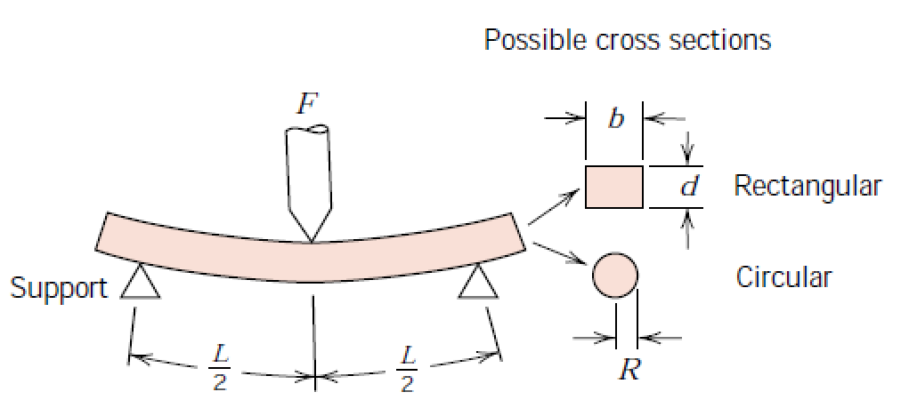
Answer and explanation
Answer: c)
Session 16, Slide 19: for a rectangular bar in three-point bending, the flexural strength (modulus of rupture) is $\sigma_{fs} = \dfrac{3 F_f L}{2 b d^2} = \dfrac{3 \times 1000\ \text{N} \times 40\ \text{mm}}{2 \times 8.0\ \text{mm} \times (5.0\ \text{mm})^2} = \dfrac{120\,000}{400} = 300\ \text{MPa}$.
Why the other options are wrong:
- a) Omits the $3/2$ prefactor, computing $F_f L / (b d^2) = 200\ \text{MPa}$.
- b) Omits the factor of $2$ in the denominator, computing $3 F_f L / (b d^2) = 600\ \text{MPa}$.
- d) Forgets to square the section depth $d$, computing $3 F_f L / (2 b d) = 1500$, which does not even have units of stress.
Session 16, Slide 19.
Question 9 · Stiffness ranking across material classes
Rank the following four materials in order of INCREASING elastic modulus $E$:
Answer and explanation
Answer: d)
MATERIALS_FINALEXAM_2014_EXTRA.pdf, Q4 (and Session 16, Slide 16): stiffness follows atomic bond strength. Low-density polyethylene has weak secondary van der Waals interchain bonds ($E < 1\ \text{GPa}$); epoxy resin is a densely crosslinked thermoset network ($E \approx 2\text{–}4\ \text{GPa}$); aluminium has metallic bonding ($E \approx 70\ \text{GPa}$); and aluminium oxide ($\text{Al}_2\text{O}_3$) has strong mixed ionic-covalent bonding ($E \approx 390\ \text{GPa}$).
Why the other options are wrong:
- a) Reverses the ranking into decreasing order of Young's modulus.
- b) Places metallic aluminium below crosslinked epoxy resin, ignoring the much higher stiffness of primary metallic bonds relative to a polymer network.
- c) Places a lightly branched thermoplastic (LDPE) above a rigid crosslinked thermoset (epoxy).
MATERIALS_FINALEXAM_2014_EXTRA.pdf, p. 6 (Q4); Session 16, Slides 3 and 16.
Official examQuestion 10 · Weibull modulus and strength scatter
Even under identical testing conditions, nominal fracture stress varies widely across ceramic specimens, and this statistical dispersion is described by the Weibull modulus $k$. Compared with a metal, a ceramic having a lower Weibull modulus $k$ exhibits:
Answer and explanation
Answer: b)
Session 16, Slide 20: the Weibull distribution models statistical strength scatter in brittle ceramics; a lower Weibull modulus $k$ corresponds to a broader distribution and greater variation in fracture strength from specimen to specimen, because each specimen fails when its worst random flaw reaches critical stress.
Why the other options are wrong:
- a) Inverts the meaning of $k$: a higher Weibull modulus produces a narrower distribution, whereas ceramics have low $k$ and wide scatter.
- c) Describes ductile metallic behaviour with reproducible yield stress, not flaw-sensitive brittle ceramics.
- d) Contradicts Slide 17 and Slide 20: pores act as stress concentrators that increase scatter rather than homogenizing stress.
Session 16, Slides 17 and 20.
B71 — Thermal shock and ferroelectric ceramics
Ten test questions on ceramic materials, written for this portal in the style of Part I of Assessment Test III. Each question has four options and only one is right. Answer all ten before opening any explanation.
Question 1 · Mechanism of thermal shock in ceramics
How does thermal shock fracture arise in a ceramic component subjected to sudden temperature changes?
Answer and explanation
Answer: a)
MATERIALS_FINALEXAM_2016_EXTRA_SOL.pdf, Q7a (and Session 16, Slide 21): thermal shock is partial or total fracture caused by rapid $\Delta T$ (creating temporary temperature gradients and residual thermal stresses) or by restriction of thermal expansion; because ceramics cannot yield plastically, fracture occurs once the induced tensile stress reaches $\sigma_f$.
Why the other options are wrong:
- b) Misapplies metallic dislocation plasticity to brittle ceramics, which lack mobile dislocations at normal temperatures.
- c) Invents a non-existent change of bond character from ionic to metallic upon cooling.
- d) Slow uniform heating avoids temperature gradients and therefore prevents thermal shock rather than causing it.
MATERIALS_FINALEXAM_2016_EXTRA_SOL.pdf, p. 4 (Q7a); Session 16, Slide 21.
Official examQuestion 2 · Surface cracking during rapid cooling
Which one of the following statements about rapid cooling versus rapid heating of a brittle ceramic plate is FALSE:
Answer and explanation
Answer: c)
Session 16, Slide 21 (and Session 15, Slide 47): during rapid heating, the hotter exterior tries to expand while restrained by the cooler core, placing the surface in compression and the interior in tension; surface tension occurs during rapid cooling (quenching), not rapid heating. Statement c) is false.
Why the other options are wrong:
- a) True: on quenching, the chilled outer layer tries to shrink while the hot core resists contraction, putting the surface under tension.
- b) True: surface flaws propagate readily in tension (quenching) but close under surface compression (rapid heating), making rapid cooling more damaging.
- d) True: brittle ceramics break as soon as surface tensile stress reaches $\sigma_f$ because dislocations cannot blunt crack tips.
Session 16, Slides 17-18 and 21; Session 15, Slide 47.
Question 3 · Critical cooling temperature for a constrained ceramic
A dense ceramic rod ($E = 300\ \text{GPa}$, $\alpha = 6.0\times 10^{-6}\ \text{°C}^{-1}$, tensile fracture stress $\sigma_f = 270\ \text{MPa}$) is rigidly clamped at zero stress at $T_0 = 250\ \text{°C}$ and cooled uniformly. At what temperature $T_f$ does the rod fracture in tension?
Answer and explanation
Answer: b)
Session 16, Slide 21: constrained cooling induces tensile stress $\sigma = E\alpha(T_0 - T_f)$. Setting $\sigma = \sigma_f = 270\ \text{MPa}$ with $E = 300\,000\ \text{MPa}$ gives $\Delta T_f = \dfrac{\sigma_f}{E\alpha} = \dfrac{270}{300\,000 \times 6.0\times 10^{-6}} = 150\ \text{°C}$, so fracture occurs at $T_f = 250 - 150 = 100\ \text{°C}$.
Why the other options are wrong:
- a) Reports the critical temperature drop $\Delta T_f = 150\ \text{°C}$ instead of subtracting it from $T_0 = 250\ \text{°C}$.
- c) Adds $\Delta T_f$ to $T_0$ ($250 + 150 = 400\ \text{°C}$), which corresponds to heating into compression rather than cooling into tension.
- d) Converts $\sigma_f$ to $0.27\ \text{GPa}$ while simultaneously converting $E$ to $300\,000\ \text{MPa}$, creating a factor-of-1000 unit mismatch.
Session 16, Slide 21.
Question 4 · Thermal shock resistance parameter TSR
Referring to the thermal shock resistance parameter $TSR = \sigma_f k / (E\alpha_l)$ of ceramic materials, which one of the following statements is TRUE:
Answer and explanation
Answer: d)
Session 16, Slides 3 and 21: thermal shock resistance $TSR = \sigma_f k/(E\alpha_l)$ is raised by high fracture strength $\sigma_f$ and thermal conductivity $k$, and lowered by high stiffness $E$ and thermal expansion $\alpha_l$. Ceramics typically have high $E$, low $k$, and low tensile fracture strength, giving low thermal shock resistance.
Why the other options are wrong:
- a) Inverts $E$ in the denominator: higher $E$ produces higher thermal stress $\sigma = E\alpha\Delta T$ for the same strain, lowering $TSR$.
- b) Inverts $\alpha_l$ in the denominator: higher $\alpha_l$ produces larger thermal strain per degree, lowering $TSR$.
- c) Misreads low $k$: low conductivity traps steep temperature gradients near the surface, increasing thermal stresses and reducing $TSR$.
Session 16, Slides 3 and 21.
Question 5 · Ordering glasses and glass-ceramics by thermal shock limit
Assuming a tensile fracture stress of $69\ \text{MPa}$ and comparable elastic moduli, order the four silicate materials below by INCREASING thermal shock temperature drop to failure:
| Material | $\alpha$ ($\text{°C}^{-1}$) |
|---|---|
| Fused silica | $0.5\times 10^{-6}$ |
| Soda-lime silicate | $10\times 10^{-6}$ |
| LAS glass-ceramic | $1.2\times 10^{-6}$ |
| Sodium borosilicate | $3\times 10^{-6}$ |
Answer and explanation
Answer: a)
Session 16, Slide 31: the survivable temperature jump increases inversely with $\alpha$, rising from $80\ \text{°C}$ for soda-lime silicate ($10\times 10^{-6}\ \text{°C}^{-1}$), to $270\ \text{°C}$ for sodium borosilicate ($3\times 10^{-6}$), to $670\ \text{°C}$ for the LAS glass-ceramic ($1.2\times 10^{-6}$), and to $1600\ \text{°C}$ for fused silica ($0.5\times 10^{-6}$).
Why the other options are wrong:
- b) Reverses the ranking into decreasing thermal shock resistance.
- c) Swaps LAS glass-ceramic and sodium borosilicate despite the 2.5-fold lower expansion of the LAS glass-ceramic.
- d) Misranks adjacent pairs by ignoring the inverse dependence of thermal stress on $\alpha$.
Session 16, Slide 31.
Question 6 · Why low-alpha ceramics resist thermal shock
Fused silica and lithium-aluminosilicate (LAS) glass-ceramics tolerate sudden temperature jumps above $600\ \text{°C}$ without cracking chiefly because:
Answer and explanation
Answer: c)
Session 16, Slides 21, 31 and 32: fused silica ($\alpha = 0.5\times 10^{-6}\ \text{°C}^{-1}$) and LAS glass-ceramics ($\alpha = 0.6\text{–}1.2\times 10^{-6}\ \text{°C}^{-1}$) have exceptionally low expansion coefficients, so even large temperature differences generate small thermal stresses $\sigma = E\alpha\Delta T$ and high $TSR$.
Why the other options are wrong:
- a) False carrier mechanism: fused silica has low thermal conductivity ($k \approx 1.4\ \text{W/(m}\cdot\text{K)}$), nowhere near metallic conduction.
- b) Diffusion is negligible at room temperature and cannot relax rapid thermal stresses in rigid glasses or ceramics.
- d) Glass-ceramics and fused silica fail at modest tensile stresses ($\sim 69\ \text{MPa}$ in the Slide 31 comparison), well below structural alloys.
Session 16, Slides 21 and 31-32.
Question 7 · Dielectric and ferroelectric ceramic behaviour
Which one of the following statements about the electrical properties of ceramic materials is TRUE:
Answer and explanation
Answer: b)
Session 16, Slides 12 and 22: because valence electrons are localized in ionic and covalent bonds, ceramics are usually insulators with high dielectric strength; perovskites such as $\text{BaTiO}_3$ and $\text{SrTiO}_3$ possess unit cells lacking a centre of symmetry and therefore display ferroelectricity.
Why the other options are wrong:
- a) Inverts electrical behaviour: ceramics lack free electrons and exhibit high dielectric strength and high resistivity.
- c) Wrong symmetry rule: centrosymmetric cubic and closed-packed cells have zero net dipole moment and are not ferroelectric.
- d) Alkali ions introduce modest ionic conduction in glasses at elevated temperature (Slide 31), never metallic conductivity.
Session 16, Slides 12, 22 and 31.
Question 8 · Origin of spontaneous dipole in BaTiO3
The diagram below depicts the room-temperature unit cell of ferroelectric $\text{BaTiO}_3$. Based on the atomic positions and dimensions shown, why does each unit cell carry a permanent electric dipole?
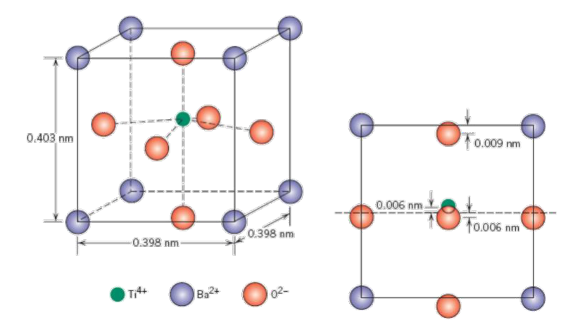
Answer and explanation
Answer: d)
Session 16, Slide 22: the room-temperature $\text{BaTiO}_3$ cell is slightly elongated along one axis ($0.403\ \text{nm}$ vs. $0.398\ \text{nm}$), with $\text{Ti}^{4+}$ shifted upward by $0.006\ \text{nm}$ from the centre and $\text{O}^{2-}$ shifted downward by $0.006\text{–}0.009\ \text{nm}$. This asymmetry separates the positive and negative charge centres, producing a net dipole in every unit cell.
Why the other options are wrong:
- a) Contradicts the labelled edge lengths ($0.403\ \text{nm}$ vs. $0.398\ \text{nm}$) and the asymmetric ion shifts shown on the right projection.
- b) Ceramics such as $\text{BaTiO}_3$ are insulators with no free conduction-electron cloud; the dipole comes from bound ion displacements.
- c) The diagram places $\text{Ba}^{2+}$ at the cube corners ($\text{C.I.} = 12$ in perovskite), not in tetrahedral interstitials.
Session 16, Slide 22.
Question 9 · Direct and reverse piezoelectric effects
Regarding ferroelectric and piezoelectric ceramics such as $\text{BaTiO}_3$ and $\text{PbZrO}_3$–$\text{PbTiO}_3$ (PZT), which one of the following statements is FALSE:
Answer and explanation
Answer: a)
Session 16, Slide 22: applying a voltage to produce a change in volume or shape is the reverse piezoelectric effect (not the direct effect), and piezoelectric ceramics require non-zero unit-cell dipoles. Statement a) is false.
Why the other options are wrong:
- b) True: non-centrosymmetric unit cells with permanent dipoles give ferroelectric compounds their piezoelectric coupling (Slide 22).
- c) True: compressive stress alters the distance between positive and negative charge centres and induces an electric potential difference (direct effect).
- d) True: an applied voltage acts on the charged ions and changes cell dimensions (reverse effect).
Session 16, Slides 12 and 22.
Question 10 · Transducer response under stress vs voltage
A piezoelectric $\text{BaTiO}_3$ ceramic disk is first squeezed axially by a mechanical force in an open circuit and is later connected to a DC power supply without external load. Respectively, what occurs in the two steps?
Answer and explanation
Answer: c)
Session 16, Slide 22: squeezing the piezoelectric crystal reduces the dipole spacing and produces a voltage (the direct effect used in sensors and spark igniters), whereas applying an electrical voltage displaces the charged ions and alters the crystal volume/dimensions (the reverse effect used in actuators and ultrasonic transducers).
Why the other options are wrong:
- a) Confuses electromechanical coupling with Joule heating and Curie depolarization.
- b) Swaps the direct and reverse piezoelectric responses between the mechanical and electrical inputs.
- d) Applies metallic dislocation slip and superconducting Meissner flux expulsion to a ceramic dielectric.
Session 16, Slide 22.
B72 — Glasses, formers, modifiers and glass-ceramics
Ten test questions on ceramic materials, written for this portal in the style of Part I of Assessment Test III. Each question has four options and only one is right. Answer all ten before opening any explanation.
Question 1 · Definition, constituents and flaws in glasses
Which of the following statements is TRUE:
Answer and explanation
Answer: d)
MATERIALS_THIRDPARTIAL_2020.pdf, Model B Q4 (and Session 16, Slides 17 and 31): glasses are brittle amorphous solids whose tensile and flexural strength depend strongly on surface flaws and imperfections (and whose Young's modulus varies with composition, surface imperfections, volume, and temperature), yielding low mechanical strength and a low Weibull modulus.
Why the other options are wrong:
- a) False bonding type: silicate glasses are built from $\text{Si}-\text{O}$ bonds that are roughly 50 % ionic and 50 % covalent (Slide 24), not purely ionic.
- b) Misclassifies $\text{Al}_2\text{O}_3$: $\text{SiO}_2$ is a glass former, whereas $\text{Al}_2\text{O}_3$ is a glass intermediate that cannot form a glass alone (Slide 28).
- c) Glasses harden continuously as viscosity rises on cooling without crystallization and therefore have no distinct melting or freezing point (Slide 27).
MATERIALS_THIRDPARTIAL_2020.pdf, p. 1 (Model B, Q4); Session 16, Slides 24 and 27-31.
Official examQuestion 2 · Structural and processing differences between ceramics and glasses
Referring to the structural and processing differences between crystalline ceramics and glasses, which one of the following statements is TRUE:
Answer and explanation
Answer: b)
MATERIALS_FINALEXAM_2012_ORD.pdf, Q8 (with Session 16, Slide 27 and Session 18, Slides 4-5, 25 and 30-31): crystalline ceramics have long-range periodic crystal structures and high melting points, so they are manufactured by conditioning and shaping powders followed by sintering below $T_m$; glasses are non-crystalline (amorphous) inorganic solids with a liquid-like network that are heated above $T_g$ into a viscous state and shaped by floating, blowing, pressing, or drawing.
Why the other options are wrong:
- a) Swaps both the atomic structure and the shaping method between crystalline ceramics and glasses.
- c) Wrongly assigns a sharp $T_m$ to glasses and plastic forging to brittle ceramics.
- d) Inverts the processing routes: powder sintering consolidates crystalline ceramics, whereas viscous melt shaping forms glasses.
MATERIALS_FINALEXAM_2012_ORD.pdf, p. 3 (Q8); Session 16, Slide 27; Session 18, Slides 4-5, 25 and 30-31.
Official examQuestion 3 · Specific volume versus temperature across Tg and Tm
The specific volume versus temperature plot below compares a crystalline solid and a glass cooled from the liquid state. What does the upper curve show as temperature drops through $T_g$?

Answer and explanation
Answer: c)
Session 16, Slide 27: while a crystalline solid undergoes a discontinuous volume drop at its melting/solidification temperature $T_m$, a glass-forming melt remains a supercooled liquid down to $T_g$, where its slope decreases smoothly as the disordered liquid structure freezes into a rigid glass ($T < T_g$) without crystallization.
Why the other options are wrong:
- a) Confuses the continuous glass transition at $T_g$ with the discontinuous crystallization step at $T_m$.
- b) Inverts the states on either side of $T_g$: the material is rigid/glassy below $T_g$ and rubbery/viscous liquid above $T_g$.
- d) Misreads the vertical line at $T_m$, which shows a sharp contraction upon crystallization rather than expansion.
Session 16, Slide 27.
Question 4 · Glass formers in silicate and borosilicate glasses
Which pair of oxides act as glass formers (building the continuous network through $50\text{–}99.5\ \%$ of the glass) and what are their respective basic structural units?
Answer and explanation
Answer: a)
Session 16, Slide 28: all silicate glasses contain at least $50\ \%$ silica ($\text{SiO}_2$), and the two glass formers are $\text{SiO}_2$ (built from corner-sharing $\text{SiO}_4^{4-}$ tetrahedra) and $\text{B}_2\text{O}_3$ (built from flat $\text{BO}_3^{3-}$ triangles), which show the rigid-liquid transition on their own.
Why the other options are wrong:
- b) $\text{Na}_2\text{O}$ and $\text{CaO}$ are glass modifiers that break the network and reside in interstitial sites rather than forming the network.
- c) $\text{Al}_2\text{O}_3$ and $\text{PbO}$ are glass intermediates that substitute into an existing silica network but do not form glasses alone.
- d) $\text{MgO}$ and $\text{K}_2\text{O}$ are glass modifiers, not glass formers.
Session 16, Slide 28.
Question 5 · Role of glass modifiers in silicate networks
Adding glass modifiers such as $\text{Na}_2\text{O}$ or $\text{CaO}$ ($3\text{–}20\ \%$) to fused silica breaks $\text{Si}-\text{O}-\text{Si}$ bridges and places cations in interstitial sites. As a result, the glass transition temperature $T_g$ and the molten viscosity $\eta$:
Answer and explanation
Answer: d)
Session 16, Slides 28-29: glass modifiers ($\text{Na}_2\text{O}$, $\text{K}_2\text{O}$, $\text{CaO}$, $\text{MgO}$) break the continuous silicate lattice, lowering both $T_g$ (for example from $1600\ \text{°C}$ to $730\ \text{°C}$ in soda-lime glass) and the viscosity $\eta$, which greatly facilitates melting, moulding, and workability.
Why the other options are wrong:
- a) Inverts the effect of breaking network bridges: a less connected network flows more easily at lower temperatures.
- b) Separates $T_g$ and $\eta$ into opposite directions; lowering network connectivity decreases both together.
- c) Ignores that non-bridging oxygens created by modifiers disrupt the three-dimensional silica network even though the cations sit interstitially.
Session 16, Slides 28-29.
Question 6 · Glass intermediates Al2O3 and PbO
Regarding glass intermediates such as $\text{Al}_2\text{O}_3$ and $\text{PbO}$ ($1\text{–}30\ \%$), which one of the following statements is FALSE:
Answer and explanation
Answer: b)
Session 16, Slide 28: glass intermediates ($\text{Al}_2\text{O}_3$, $\text{PbO}$) do not form glasses by themselves; they can only participate in the network alongside a glass former ($\ge 50\ \%\ \text{SiO}_2$) to impart special properties. Statement b) is false.
Why the other options are wrong:
- a) True: Slide 28 defines intermediates as oxides that do not form glasses alone but replace silica in the network.
- c) True: because $\text{Al}^{3+}$ replaces $\text{Si}^{4+}$, charge defects appear and aluminosilicate glasses gain high-temperature strength (Slide 28).
- d) True: $\text{PbO}$ modifies optical index, lowers fusion temperature for glass soldering, and provides radiation protection (Slides 28-29).
Session 16, Slides 28-29.
Question 7 · Comparing soda-lime, borosilicate and lead glasses
Accounting for roughly $90\ \%$ of commercial glass production, soda-lime glass differs from borosilicate glass (Pyrex) in that:
Answer and explanation
Answer: c)
Session 16, Slide 29: soda-lime glass ($60\text{–}75\ \%\ \text{SiO}_2$, $12\text{–}18\ \%$ soda, $5\text{–}12\ \%\ \text{CaO}$) uses modifiers to drop $T_g$ from $1600\ \text{°C}$ to $730\ \text{°C}$ for low-cost container and window forming, whereas borosilicate glass contains at least $5\ \%\ \text{B}_2\text{O}_3$ (a glass former) that keeps $T_g$ higher and thermal expansion low ($\sim 3\times 10^{-6}\ \text{°C}^{-1}$) for high-temperature laboratory and ovenware use.
Why the other options are wrong:
- a) Attributes the $\text{B}_2\text{O}_3$ content and ovenware role of borosilicate glass to soda-lime glass, and still overstates its $T_g$ relative to fused silica.
- b) Confuses borosilicate glass with lead glass ($\text{PbO}$ additions for soldering and radiation shielding) and forgets all glasses need $\ge 50\ \%\ \text{SiO}_2$.
- d) Inverts the thermal expansion comparison: soda-lime glass has $\alpha \approx 10^{-5}\ \text{°C}^{-1}$, more than triple that of borosilicate glass ($3\times 10^{-6}\ \text{°C}^{-1}$).
Session 16, Slides 28-29 and 31.
Question 8 · Optical and electrical properties of silicate glasses
Referring to the optical and electrical behaviour of silicate glasses, which one of the following statements is TRUE:
Answer and explanation
Answer: a)
Session 16, Slides 30-31: normal silicate glasses are transparent across the visible spectrum (with specific colours imparted by metal-ion modifiers such as $\text{Cr}^{3+}$, $\text{Cu}^{2+}$, $\text{Co}^{2+}$, or $\text{Fe}^{2+}$), are chemically resistant, and act as electrical insulators ($\sigma \approx 10^{-10}\text{ to }10^{-20}\ (\Omega\cdot\text{cm})^{-1}$) whose ionic conductivity increases with both temperature and modifier concentration.
Why the other options are wrong:
- b) Inverts transparency and colouring: base silicate glass is transparent, and dopant metal ions introduce selective absorption colours (Slide 30).
- c) Inverts the effect of modifiers on conductivity: loose modifier cations provide mobile ionic carriers, so raising modifier content increases conductivity (Slide 31).
- d) Assigns metallic conductivity and poor chemical durability to silicate glasses, whereas Slide 31 states high resistivity and strong chemical resistance.
Session 16, Slides 30-31.
Question 9 · Structure and fabrication of glass-ceramics
What is a glass-ceramic, and how is a commercial $\text{Li}_2\text{O}\cdot\text{Al}_2\text{O}_3\cdot n\text{SiO}_2$ (LAS) glass-ceramic produced?
Answer and explanation
Answer: d)
Session 16, Slide 32: glass-ceramics are polycrystalline materials produced through controlled crystallization (devitrification) of a base glass, generating a fine uniform dispersion of crystalline grains within residual glass; the commercial LAS ($\text{Li}_2\text{O}\cdot\text{Al}_2\text{O}_3\cdot n\text{SiO}_2$) system sustains repeated rapid temperature changes up to $800\text{–}1000\ \text{°C}$.
Why the other options are wrong:
- a) Confuses inorganic silicate glass-ceramics with polymer-matrix infiltration.
- b) Describes porous amorphous/bonded silica insulation rather than a dense devitrified polycrystalline glass-ceramic.
- c) Describes a coated single crystal rather than bulk controlled devitrification of a base glass.
Session 16, Slide 32.
Question 10 · Advantage of shaping then devitrifying LAS glass-ceramics
A cooktop panel is first formed in the viscous state as an LAS base glass and then subjected to a controlled crystallization heat treatment. What does this two-stage route achieve?
Answer and explanation
Answer: b)
Session 16, Slides 31-32: shaping the component first as a glass takes advantage of viscous glass forming (avoiding difficult powder pressing/machining), and controlled devitrification then precipitates fine uniform LAS crystals with ultra-low thermal expansion ($\alpha \approx 0.6\text{–}1.2\times 10^{-6}\ \text{°C}^{-1}$), giving high strength and thermomechanical durability up to $800\text{–}1000\ \text{°C}$.
Why the other options are wrong:
- a) Devitrification creates fine crystals rather than eliminating them.
- c) Inverts the thermal expansion trend: LAS crystallization lowers $\alpha$ sharply to resist thermal shock rather than raising it.
- d) Glass-ceramics are dense, pore-free polycrystalline solids, not $15\text{–}20\ \%$ porous bodies.
Session 16, Slides 31-32.
B73 — Ceramic powder preparation and pressing
Ten test questions on ceramic materials, written for this portal in the style of Part I of Assessment Test III. Each question has four options and only one is right. Answer all ten before opening any explanation.
Question 1 · Adapted ceramic processing routes and raw materials
Regarding the raw materials and overall manufacturing route of crystalline ceramics, which one of the following statements is FALSE:
Answer and explanation
Answer: b)
Session 18, Slides 4-5: traditional ceramics use abundant, low-cost natural minerals (clay, silica, feldspar), whereas advanced/technical ceramics require chemically synthesized powders with strict control over purity and particle size. Statement b) is false.
Why the other options are wrong:
- a) True: Slide 4 explains that high $T_m$, hardness, and brittleness force ceramics onto powder-based processing routes rather than casting or plastic deformation.
- c) True: Slide 5 and Slide 42 list clay, silica, and feldspar as the three raw minerals of traditional ceramics.
- d) True: Slide 5 displays the five-stage workflow: raw materials $\to$ powder conditioning $\to$ shaping $\to$ sintering $\to$ machining.
Session 18, Slides 4-5 and 42.
Question 2 · Acheson process for silicon carbide powder
Which chemical reaction and furnace conditions correspond to the industrial Acheson process for manufacturing $\text{SiC}$ powder?
Answer and explanation
Answer: a)
Session 18, Slide 6: the Acheson process reduces silica with carbon according to $\text{SiO}_2(s) + 3\text{C}(s) \to \text{SiC}(s) + 2\text{CO}$ ($\Delta H = +528\ \text{kJ/mol}$); because it is strongly endothermic, it requires an electric resistance furnace operating at $1600\text{–}2500\ \text{°C}$ for roughly $36\ \text{h}$.
Why the other options are wrong:
- b) Invents a methane gas-liquid silicon reaction at room temperature instead of solid carbothermal reduction.
- c) Neither balances the atoms nor matches the endothermic carbothermal reduction yielding $\text{CO}$.
- d) Uses silicon nitride and $\text{CO}_2$ at $400\ \text{°C}$, far below the $1600\text{–}2500\ \text{°C}$ range of the Acheson furnace.
Session 18, Slide 6.
Question 3 · Synthesis methods for advanced ceramic powders
Which one of the following statements about advanced ceramic powder synthesis is TRUE:
Answer and explanation
Answer: d)
Session 18, Slide 6: engineering ceramics use synthesized powders made by oxidation/reduction reactions (such as the Acheson process), thermal decomposition, liquid-solid reactions, solid-solid reactions, hydrothermal synthesis, and liquid-phase synthesis (precipitation, hydrolysis, and evaporation from solution).
Why the other options are wrong:
- a) Describes unprocessed natural minerals rather than high-purity synthesized technical ceramic powders.
- b) Contradicts Slide 6, which explicitly shows liquid-phase precipitation/hydrolysis/evaporation as major synthesis routes.
- c) Wrongly excludes solid-solid and thermal decomposition processes that are standard for technical ceramics.
Session 18, Slide 6.
Question 4 · Milling methods during powder conditioning
Before shaping, ceramic powders undergo mechanical milling (roll crushing, ball milling, or hammer milling) primarily in order to:
Answer and explanation
Answer: c)
Session 18, Slide 7 (and Slide 26): wet or dry milling (dry roll crushing, wet or dry ball milling, dry hammer milling) reduces ceramic powders to small, uniform particle sizes, increasing surface energy and accelerating densification during subsequent sintering.
Why the other options are wrong:
- a) Ceramics are neither melted into ingots nor shaped by float forming in powder conditioning.
- b) Milling reduces particle size rather than coarsening grains; finer particles enhance sintering driving force.
- d) Confuses powder conditioning prior to shaping with thermal debinding performed after shaping (and mixes up green vs. brown compact order).
Session 18, Slides 7 and 26.
Question 5 · Role of powder conditioning additives
Referring to the additives mixed with ceramic powders during conditioning, which one of the following statements is TRUE:
Answer and explanation
Answer: a)
Session 18, Slides 7 and 14: powder conditioning mixes ceramic particles with agglutinants/binders (cohesion and green strength), lubricants (reducing particle-particle and die-wall friction), wetting agents (liquid-powder wetting), plasticizers (formability), and deflocculants/dispersants (keeping colloidal particles repelled and stable in suspension).
Why the other options are wrong:
- b) Reverses the role of deflocculants: they prevent aggregation and sedimentation rather than causing settling.
- c) Plasticizers modify the deformability of the binder/paste system, not the ceramic crystal's melting point.
- d) Lubricants reduce mechanical friction during pressing without dissolving refractory oxide grains.
Session 18, Slides 7 and 14.
Question 6 · Spray-drying granulation of ceramic slurries
The schematic below shows a spray-drying unit used in ceramic powder conditioning. What product leaves the bottom of the chamber, and why is this step performed before dry die pressing?
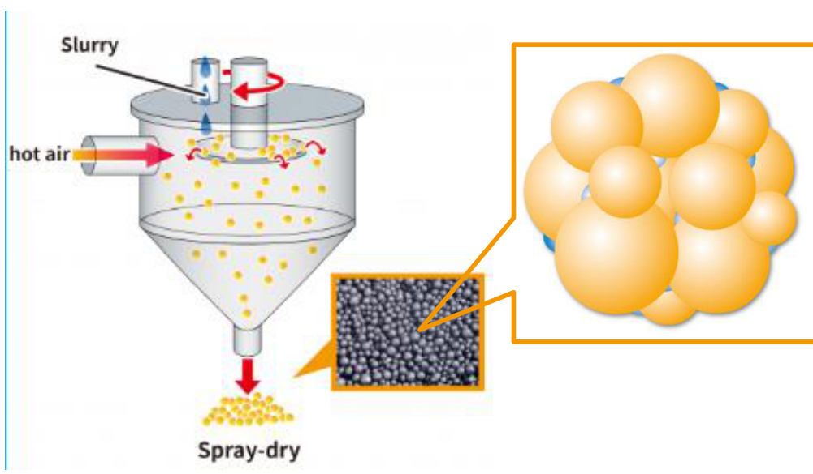
Answer and explanation
Answer: c)
Session 18, Slide 8: fine dry ceramic powders flow poorly; spray drying atomizes a $60\text{–}70\ \%$ solids suspension/slurry (containing water and binders/agglomerates) into droplets dried by hot gases, forming spherical "snowball" granulated pellets that pour cleanly and fill pressing dies uniformly.
Why the other options are wrong:
- a) Spray drying produces soft dry granules of conditioned powder, not a sintered solid billet.
- b) Confuses the input slurry with the output dry granules; the hot air evaporates the carrier water inside the tower.
- d) Granulation intentionally binds fine particles together into spherical agglomerates with additives, rather than stripping binders away.
Session 18, Slide 8.
Question 7 · Uniaxial dry pressing characteristics
Regarding uniaxial dry pressing of ceramic powders between upper and lower punches in a rigid die, which one of the following statements is FALSE:
Answer and explanation
Answer: d)
Session 18, Slides 10-13: transmitting hydrostatic pressure from all directions through a hydraulic fluid is the defining principle of cold isostatic pressing (CIP), not uniaxial rigid-die pressing (where punches press along one axis and die-wall friction/ejection can cause density gradients and ejection cracks). Statement d) is false.
Why the other options are wrong:
- a) True: Slide 10 explicitly highlights high production velocity and complicated small pieces such as ceramic nozzles and alumina electrical components.
- b) True: Slide 10 lists good filling, good compressibility, and coagulants/additives/agglomerates as the control variables.
- c) True: unidirectional punch compaction against rigid die walls creates friction-induced green-density gradients.
Session 18, Slides 10-13.
Question 8 · Wet-bag versus dry-bag cold isostatic pressing
Which option accurately distinguishes wet-bag cold isostatic pressing (CIP) from dry-bag CIP?
Answer and explanation
Answer: b)
Session 18, Slides 12-13: in wet-bag CIP, the pre-shaped powder compact is placed in a flexible mould (silicone or polyurethane), evacuated, and immersed directly in the hydraulic pressure fluid; in dry-bag CIP, powder is poured into a thick rubber bag integrated with a rigid support (isolated from the fluid), making automation easier (as used for spark-plug insulators).
Why the other options are wrong:
- a) Confuses wet-bag CIP with slip casting and hot-pressed/melted glass forming.
- c) Confuses CIP with uniaxial rigid-die pressing and spark plasma sintering (SPS).
- d) Confuses room-temperature wet-bag CIP with high-temperature hot isostatic pressing (HIP, Slide 27).
Session 18, Slides 12-13 and 27-28.
Question 9 · Advantages and drawbacks of cold isostatic pressing
Which one of the following statements about cold isostatic pressing (CIP) is FALSE:
Answer and explanation
Answer: c)
Session 18, Slide 13: CIP explicitly suffers from low dimensional accuracy, low surface finish, and a slow, discontinuous cycle because the flexible elastomer mould deforms slightly around the compact. Statement c) is false.
Why the other options are wrong:
- a) True: Slide 13 lists "no required granulated powders", "no lubricant addition", and "no ejection cracks" among CIP's advantages.
- b) True: Slide 13 highlights uniform components, uniform density and properties, low porosity, and high green strength allowing green-state machining.
- d) True: Slide 13 lists "slow and discontinuous process" under drawbacks.
Session 18, Slide 13.
Question 10 · Why CIP achieves uniform density without ejection cracks
Cold isostatic pressing produces green ceramic compacts with far more uniform density and fewer ejection cracks than rigid uniaxial die pressing because:
Answer and explanation
Answer: a)
Session 18, Slides 12-13: applying hydrostatic pressure uniformly from every direction through a flexible elastomer bag eliminates rigid die-wall friction (which causes density gradients in uniaxial pressing) and removes the need to push a fragile green compact past a steel die wall during ejection.
Why the other options are wrong:
- b) CIP is performed cold ("Cold Isostatic Pressing"), well below sintering or melting temperatures.
- c) CIP compacts dry powder using hydrostatic fluid pressure rather than ultrasonic surface treatment.
- d) Capillary water extraction through a porous mould is the mechanism of slip casting (Slide 15), not dry-powder CIP.
Session 18, Slides 12-15.
B74 — Colloidal shaping, slip, tape, extrusion and injection
Ten test questions on ceramic materials, written for this portal in the style of Part I of Assessment Test III. Each question has four options and only one is right. Answer all ten before opening any explanation.
Question 1 · Ceramic processing and injection moulding
Which of the following statements about ceramics is TRUE:
Answer and explanation
Answer: b)
MATERIALS_THIRDPARTIAL_2020.pdf, Model B Q3 (and Session 18, Slides 19 and 22): ceramic injection moulding begins by mixing ceramic powder with a polymeric binder or wax (plus additives) to form a flowable plastic feedstock.
Why the other options are wrong:
- a) Inverts the capability of slip casting: Slide 15 explicitly lists "low dimensional accuracy" under the drawbacks of slip casting.
- c) Inverts the thermal condition of sintering: sintering takes place below the melting point via diffusion processes (Slide 25).
- d) Misnames the stages: the "green part" (green compact) is the shaped compact before binder/water removal and sintering, not after sintering (Slides 22-23).
MATERIALS_THIRDPARTIAL_2020.pdf, p. 1 (Model B, Q3); Session 18, Slides 15, 19, 22-23 and 25.
Official examQuestion 2 · Requirements for a stable colloidal slip
Regarding colloidal ceramic suspensions (slips) used in wet shaping, which one of the following statements is FALSE:
Answer and explanation
Answer: d)
Session 18, Slide 14: a functional ceramic slip must be a stable (non-aggregating, non-sedimenting) suspension exhibiting optimum flowability (low viscosity), low-turbulence Newtonian flow, maximum solids density, mould detachment ability, and low shrinkage during drying. Statement d) is false.
Why the other options are wrong:
- a) True: Slide 14 defines a slip as a suspension of colloidal ceramic particles in an immiscible liquid, generally water.
- b) True: chemical inertness, low viscosity, and detachment ability are explicitly listed among slip characteristics on Slide 14.
- c) True: the colloid stability diagram on Slide 14 contrasts stable dispersed particles against unstable aggregation and sedimentation.
Session 18, Slide 14.
Question 3 · Capillary mechanism and drawbacks of slip casting
Conventional slip casting in porous plaster or alabaster moulds excels at producing large, complex hollow shapes with low-cost equipment, yet its wall thickness is normally limited to about $10\ \text{mm}$ and its production rate is low because:
Answer and explanation
Answer: c)
Session 18, Slides 15-16: in slip casting, the porous plaster mould extracts water by capillary action, depositing particles along the mould wall; as the deposited cake thickens, water flows through it much more slowly, limiting practical wall thickness to $\sim 10\ \text{mm}$ and slowing production (alongside low dimensional accuracy).
Why the other options are wrong:
- a) Confuses cold aqueous slip casting in porous plaster with high-temperature metal casting.
- b) Confuses wet slip casting with dry uniaxial die pressing.
- d) Confuses aqueous colloidal slip casting with plastic injection moulding debinding (Slide 22).
Session 18, Slides 15-16.
Question 4 · Pressure-assisted slip casting kinetics
The plot below shows cast wall thickness versus casting time for $\text{SiC}$ slip casting under four applied pressures ($1.7$, $3.4$, $6.8$, and $10.2\ \text{MPa}$). Based on the curves, raising the applied pressure from $1.7\ \text{MPa}$ to $10.2\ \text{MPa}$ causes the time needed to reach an $8\ \text{mm}$ cast thickness to:
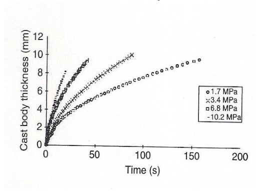
Answer and explanation
Answer: d)
Session 18, Slide 16: reading the four curves at a cast body thickness of $8\ \text{mm}$, the $1.7\ \text{MPa}$ curve reaches $8\ \text{mm}$ at roughly $110\text{–}120\ \text{s}$, the $3.4\ \text{MPa}$ curve near $65\ \text{s}$, the $6.8\ \text{MPa}$ curve near $32\ \text{s}$, and the $10.2\ \text{MPa}$ curve near $20\ \text{s}$. Applied pressure sharply reduces processing time and improves thickness reliability.
Why the other options are wrong:
- a) Inverts the effect of pressure and misreads the leftmost ($10.2\ \text{MPa}$) curve for the lowest pressure.
- b) Ignores the wide separation among the four pressure curves on the horizontal time axis.
- c) Underestimates the speed-up by reading the $1.7\ \text{MPa}$ curve at $9.5\ \text{mm}$ and reverses the reliability benefit stated on Slide 16.
Session 18, Slide 16.
Question 5 · Tape casting process definition
For fabrication of ceramic layers, _______ process involves casting the slurry onto a flat moving carrier surface.
Answer and explanation
Answer: a)
MATERIALS_THIRDPARTIAL_2020_V2.pdf, Paper B Q7 (and Session 18, Slide 18): in tape casting (doctor-blade process), a ceramic colloidal slip is cast onto a flat moving carrier film/belt beneath an adjustable blade to form thin continuous sheets or layers ($< 1.5\ \text{mm}$).
Why the other options are wrong:
- b) Slip casting pours an aqueous slip into a stationary porous plaster mould rather than onto a flat moving carrier belt (Slide 15).
- c) Ceramic injection moulding forces a wax/polymer-bound plastic feedstock into a closed die cavity (Slide 22).
- d) Extrusion forces a stiff plastic feedstock through a shaping die to produce uniform profiles or tubes (Slide 20).
MATERIALS_THIRDPARTIAL_2020_V2.pdf, p. 5 (Paper B, Q7); Session 18, Slides 15, 18, 20 and 22.
Official examQuestion 6 · Applications and thickness range of tape casting
Which ceramic component pair and thickness range are characteristic of continuous tape casting (doctor blade)?
Answer and explanation
Answer: c)
Session 18, Slide 18: tape casting is a continuous wet shaping route with acceptable dimensional accuracy for ceramic layers thinner than $1.5\ \text{mm}$, typically used for multilayer ceramic capacitors (co-sintered with $\text{Ag}$, $\text{Au}$, or $\text{Cu}$ conductors) and fuel-cell components.
Why the other options are wrong:
- a) Sanitary ware and plant pots belong to conventional slip casting in porous plaster moulds (Slide 15).
- b) Refractory tubes with smallest cross-section $> 15\ \text{mm}$ are produced by plastic extrusion (Slide 21).
- d) Spark-plug insulators formed inside rubber bags without binders belong to dry-bag cold isostatic pressing (Slide 13).
Session 18, Slides 13, 15, 18 and 21.
Question 7 · Ceramic extrusion capabilities and limitations
Which one of the following statements about ceramic extrusion is FALSE:
Answer and explanation
Answer: b)
Session 18, Slides 19-21: extrusion forces plastic feedstock continuously through a rigid die, so it is restricted to components with a constant transverse cross-section (such as tubes, bricks, and catalyst honeycombs); complex 3D net shapes with varying cross-sections require injection moulding or additive manufacturing. Statement b) is false.
Why the other options are wrong:
- a) True: Slide 19 and Slide 20 describe compounding ceramic powder with binder/additives into feedstock forced by a ram, screw, or piston.
- c) True: Slide 21 highlights high production rate, high reproducibility for constant sections, and hollow small-diameter capability.
- d) True: Slide 21 lists $\text{Al}_2\text{O}_3$, $\text{ZrO}_2$, $\text{Si}_3\text{N}_4$, and $\text{SiC}$ refractory tubes for thermocouples, furnaces, and catalysts.
Session 18, Slides 19-21.
Question 8 · Sequence of ceramic injection moulding
Which sequence lists the steps of ceramic injection moulding in the correct chronological order?
Answer and explanation
Answer: a)
Session 18, Slide 22: ceramic injection moulding proceeds in five steps: (1) mixing ceramic powder with binder/wax to make feedstock, (2) injecting feedstock into the die, (3) obtaining the moulded green part, (4) debinding by pyrolysis, thermal evaporation, or solvent washing to obtain the brown part, and (5) sintering to full density.
Why the other options are wrong:
- b) Places sintering before binder removal and moulding, which would fuse an unshaped mixture and trap pyrolysis gases.
- c) Swaps green and brown part terminology and inserts spray-drying granulation after die compaction.
- d) Places green-part ejection before feedstock preparation and places die injection after sintering.
Session 18, Slide 22.
Question 9 · Trade-offs and aerospace uses of ceramic injection moulding
Which one of the following statements about ceramic injection moulding (CIM) is TRUE:
Answer and explanation
Answer: c)
Session 18, Slide 22: ceramic injection moulding is expensive (due to tooling, feedstock compounding, and lengthy debinding), yet provides good dimensional accuracy for complex high-technology parts including turbocharger rotors and rocket engine components.
Why the other options are wrong:
- a) Confuses CIM (high accuracy, rich binder feedstock) with binder-free pressing or low-accuracy slip casting.
- b) Describes the geometric limits of plastic extrusion (Slide 21), not 3D cavity injection moulding.
- d) Ignores that the ejected component is a porous polymer-filled green part requiring debinding and sintering.
Session 18, Slides 21-22.
Question 10 · Ceramic additive manufacturing processes
Among ceramic free-form fabrication (additive manufacturing) routes, which process selectively cures a liquid photopolymer resin loaded with ceramic particles layer by layer using light or a laser?
Answer and explanation
Answer: d)
Session 18, Slides 9 and 29: the six free-form ceramic fabrication methods are material extrusion, material jetting, binder jetting, photopolymerization, powder bed fusion, and laminated object manufacturing; in photopolymerization, a UV laser or projected light cures a ceramic-filled photosensitive resin layer by layer.
Why the other options are wrong:
- a) Powder bed fusion melts or sinters dry powder particles directly in a powder bed with a high-power laser without a photocurable resin.
- b) Binder jetting selectively deposits droplets of liquid binding agent onto a ceramic powder bed rather than curing a liquid resin vat.
- c) Laminated object manufacturing stacks and laser-cuts pre-formed ceramic tape sheets rather than curing liquid resin.
Session 18, Slides 9 and 29.
B75 — Drying, debinding and sintering of ceramics
Ten test questions on ceramic materials, written for this portal in the style of Part I of Assessment Test III. Each question has four options and only one is right. Answer all ten before opening any explanation.
Question 1 · Ceramic shaping and thermal consolidation statements
Which one of the following statements about ceramic shaping and thermal processing is FALSE:
Answer and explanation
Answer: a)
MATERIALS_FINALEXAM_2017_ORD.pdf, Q7.3 (and Session 18, Slides 15 and 18): casting a ceramic slurry onto a flat moving carrier belt to form thin layers ($< 1.5\ \text{mm}$) is tape casting, whereas slip casting pours an aqueous slip into a stationary porous plaster mould. Statement a) is false.
Why the other options are wrong:
- b) True: Slide 24 notes $15\text{–}20\ \%$ shrinkage during drying/debinding and stresses slow heating with atmospheric control to avoid cracking or warping.
- c) True: Slide 23 and Slide 24 define the progression green part $\to$ drying/debinding $\to$ brown part $\to$ sintering.
- d) True: Slide 25 defines sintering as heating the compact below its melting point so interparticle diffusion builds strength and hardness.
MATERIALS_FINALEXAM_2017_ORD.pdf, p. 4 (Q7.3); Session 18, Slides 15, 18 and 23-25.
Official examQuestion 2 · Green compact, brown part, drying and debinding
In ceramic manufacturing, how are a "green part", a "brown part", and the transition between them defined?
Answer and explanation
Answer: b)
Session 18, Slides 23-24: right after shaping, the compact is called the green part. Wet-shaped parts undergo drying to remove water, while extruded or injection-moulded parts undergo debinding (typically solvent debinding followed by thermal debinding) to remove the polymeric binder, producing the brown part prior to sintering.
Why the other options are wrong:
- a) Misplaces both terms onto the wrong ends of the ceramic processing chain (sintered vs. raw ore).
- c) Reverses the sequence of green part and brown part and treats debinding as reversible water addition.
- d) Confuses powder ceramic processing with float-glass melting and thermal tempering (Slides 31 and 33).
Session 18, Slides 23-24, 31 and 33.
Question 3 · Why rapid drying or debinding causes cracking
Removing water or polymeric binder too rapidly from a green ceramic compact causes cracking, distortion, or warping because:
Answer and explanation
Answer: b)
Session 18, Slide 24: drying and debinding cause $15\text{–}20\ \%$ shrinkage as the spaces vacated by water or binder close; if heated too fast, the surface dries and contracts before the interior, so the rigid core restrains the skin and induces surface tension, cracking, and warping—requiring slow heating and controlled atmosphere.
Why the other options are wrong:
- a) Heating softens, evaporates, or pyrolyzes polymeric binders; it does not elevate their melting points above ceramic sintering temperatures.
- c) Inverts the direction of differential shrinkage: the exterior loses fluid/binder first and shrinks before the core, not the reverse.
- d) Debinding is performed on an unconfined green part after removal from the moulding die, not during die ejection.
Session 18, Slide 24.
Question 4 · Sintering temperature and driving force
Referring to the sintering of ceramic materials, which one of the following statements is FALSE:
Answer and explanation
Answer: c)
MATERIALS_FINALEXAM_2017_ORD.pdf, Q7.4 (and Session 18, Slide 25): sintering heats a compacted ceramic part to a high temperature below the melting point so solid-state (or minor liquid-phase) diffusion bonds particles together without melting the whole part. Statement c) is false.
Why the other options are wrong:
- a) True: Slide 25 identifies lowering surface energy—driven by particle curvature, external pressure, or chemical reaction—as the driving force of sintering.
- b) True: Slide 25 explains that diffusion bonds grains into necks, conferring strength, hardness, densification, and shrinkage.
- d) True: Slide 26 lists green density, uniformity of green density, particle size, and size distribution among the key factors controlling sintering.
MATERIALS_FINALEXAM_2017_ORD.pdf, p. 4 (Q7.4); Session 18, Slides 25-26.
Official examQuestion 5 · Densifying versus non-densifying sintering mechanisms
The diagram below shows the microstructural stages of sintering and six mass-transport paths (1 to 6) feeding the interparticle neck. Which set of mechanisms causes actual densification and macroscopic shrinkage?
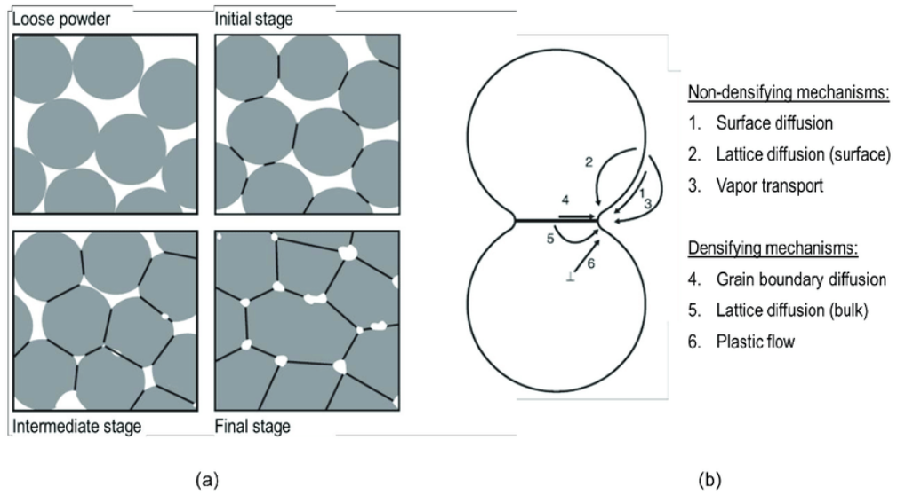
Answer and explanation
Answer: d)
Session 18, Slide 25: the diagram labels paths 1–3 (surface diffusion, surface lattice diffusion, and vapour transport) as non-densifying mechanisms, whereas paths 4–6 (grain-boundary diffusion, lattice diffusion from the grain boundary, and plastic flow from the bulk grain) are densifying mechanisms that remove atoms from between particle centres, pulling grains closer and shrinking pores.
Why the other options are wrong:
- a) Selects the three mechanisms explicitly grouped as non-densifying on the right side of the figure.
- b) Vapour transport moves material only from the free grain surface to the neck and cannot pull particle centres together.
- c) Mixes one non-densifying path (1) with one densifying path (4) while omitting bulk lattice diffusion (5) and plastic flow (6).
Session 18, Slide 25.
Question 6 · Why surface diffusion and vapour transport do not densify
During initial sintering, surface diffusion and vapour transport strengthen the compact by growing interparticle necks, yet they produce no shrinkage or pore elimination because:
Answer and explanation
Answer: a)
Session 18, Slide 25: non-densifying mechanisms (1–3) take atoms from the free convex surface of a grain and deposit them at the concave neck; while neck area and strength grow, no matter is removed from the contact boundary between particles, so particle centres do not approach and the bulk compact does not shrink.
Why the other options are wrong:
- b) Reverses the sink direction: grain-boundary matter moving to the neck (mechanism 4) does pull particle centres closer and densifies the part.
- c) Refers to liquid-phase sintering additives rather than solid-state surface diffusion and vapour transport.
- d) Solid-state surface diffusion and vapour transport act below the melting point and do not melt the ceramic.
Session 18, Slide 25.
Question 7 · Particle size and green density in sintering
If a coarse ceramic powder compact with uneven green density is replaced by a finely milled powder pressed uniformly to high green density, what happens during subsequent sintering?
Answer and explanation
Answer: b)
Session 18, Slides 7 and 25-26: sintering rate increases with higher surface energy per unit volume (smaller particle size), shorter interparticle diffusion paths, higher initial green density, and uniform green packing (preventing differential warping shrinkage).
Why the other options are wrong:
- a) Inverts the effect of particle size: smaller particles have greater curvature and surface area, accelerating diffusion and lowering the required temperature.
- c) Finer particles enhance grain-boundary and lattice diffusion paths as well, accelerating densification rather than blocking it.
- d) Higher, uniform green density starts with fewer pores to close and therefore gives higher sintered density and strength.
Session 18, Slides 7 and 25-26.
Question 8 · Liquid-phase sintering mechanism
Referring to liquid-phase sintering of ceramics, which one of the following statements is TRUE:
Answer and explanation
Answer: d)
Session 18, Slide 26: in liquid-phase sintering (permanent or transient, often $< 1\ \text{vol}\%$ liquid), a small amount of liquid phase forms at temperature, producing rapid initial particle rearrangement under capillary forces followed by solution-reprecipitation, where mass transport through the liquid is orders of magnitude faster than in the solid.
Why the other options are wrong:
- a) Describes full melting and casting, not sintering with a small liquid fraction while the primary ceramic grains remain solid.
- b) Inverts the kinetic effect: mass transport through a liquid medium is orders of magnitude faster than solid-state diffusion.
- c) Contradicts Slide 26, which specifies a small amount of liquid ($< 1\ \text{vol}\%$ shown on the chart) and relies directly on capillary forces.
Session 18, Slide 26.
Question 9 · Hot isostatic pressing (HIP)
Which pressure-assisted sintering route encapsulates ceramic powder in an evacuated metallic mould inside a high-pressure, high-temperature autoclave filled with inert gas to achieve very uniform properties and high hardness?
Answer and explanation
Answer: b)
Session 18, Slide 27: in hot isostatic pressing (HIP), ceramic powder is encapsulated in a metallic mould, evacuated, and placed in a high-pressure inert-gas autoclave (up to $2000\ \text{°C}$). It delivers uniform pressure distribution, uniform properties, versatile shapes, and high hardness, at the cost of high furnace expense, scarce dimensional accuracy, and slow discontinuous batches.
Why the other options are wrong:
- a) Uniaxial cold die pressing operates at room temperature in rigid dies and suffers from axial friction density gradients (Slide 10).
- c) Slip casting is a cold aqueous shaping process in plaster moulds, not high-temperature inert-gas consolidation (Slide 15).
- d) Tape casting forms thin sheets at ambient temperature on a carrier belt before firing (Slide 18).
Session 18, Slides 10, 15, 18 and 27.
Question 10 · Spark plasma sintering (SPS / FAST)
Which one of the following statements about spark plasma sintering (SPS / FAST) is TRUE:
Answer and explanation
Answer: a)
Session 18, Slide 28: in field-assisted sintering (FAST / SPS), powder in a graphite mould is pressed while a pulsed electric current heats the mould/sample directly via Joule heating. Advantages include heating rates up to $1000\ \text{K/min}$, cycle times of minutes, lower temperatures and pressures, uniform sintering, and low grain growth; drawbacks are simple symmetrical shapes only, discontinuous operation, and high cost.
Why the other options are wrong:
- b) Confuses fast Joule-heated SPS cycles (minutes) with slow Acheson resistance furnace heating ($36\ \text{h}$, Slide 6) and inverts grain growth.
- c) Contradicts Slide 28, which explicitly restricts SPS to simple symmetrical shapes under applied mould pressure in discontinuous batches.
- d) Inverts Slide 28, which states that SPS uses lower temperatures and shorter times than conventional sintering.
Session 18, Slides 6 and 28.
B76 — Glass processing, tempering and aerospace ceramics
Ten test questions on ceramic materials, written for this portal in the style of Part I of Assessment Test III. Each question has four options and only one is right. Answer all ten before opening any explanation.
Question 1 · Ordering glass viscosity reference points
Order the four glass viscosity reference points below by INCREASING temperature (corresponding to decreasing viscosity $\eta$):
Answer and explanation
Answer: c)
Session 18, Slide 30: as temperature rises, glass viscosity decreases monotonically. Ordering from lowest temperature (highest viscosity) to highest temperature (lowest viscosity) gives: strain point ($3\times 10^{14}\ \text{P}$) $<$ annealing point ($10^{13}\ \text{P}$) $<$ softening point ($4\times 10^{7}\ \text{P}$) $<$ working point ($10^{4}\ \text{P}$) ($<$ melting point, $100\ \text{P}$).
Why the other options are wrong:
- a) Reverses the temperature order into decreasing temperature (increasing viscosity).
- b) Swaps the strain point and annealing point at the high-viscosity, low-temperature end.
- d) Places the softening point below the annealing point, inverting the $4\times 10^{7}\ \text{P}$ and $10^{13}\ \text{P}$ viscosity order.
Session 18, Slide 30.
Question 2 · Reading glass viscosity versus temperature curves
The viscosity-temperature chart below compares soda-lime, borosilicate, $96\ \%$ silica, and fused silica glasses. Based on the curves, which statement accurately reads their shaping temperatures?
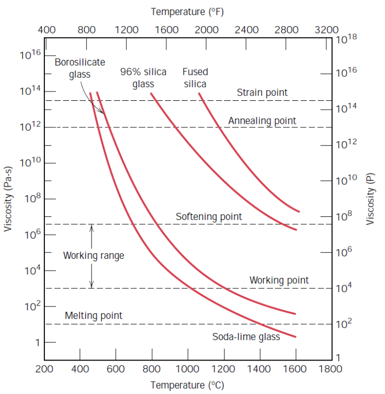
Answer and explanation
Answer: b)
Session 18, Slide 30: reading vertically at $1000\ \text{°C}$, the soda-lime curve crosses the working-point line ($10^{3}\ \text{Pa}\cdot\text{s} = 10^{4}\ \text{P}$), borosilicate lies near $4\times 10^{4}\ \text{Pa}\cdot\text{s}$, $96\ \%$ silica sits between its annealing and softening points, and fused silica does not even reach its strain/annealing region until $\sim 1080\text{–}1140\ \text{°C}$, explaining why pure silica is far harder to shape.
Why the other options are wrong:
- a) Misreads the leftmost soda-lime/borosilicate curves as fused silica; fused silica is the rightmost curve at highest temperatures.
- c) Ignores the wide horizontal spread across compositions: softening temperatures span roughly $700\ \text{°C}$ for soda-lime up to $> 1600\ \text{°C}$ for fused silica.
- d) Inverts the relative positions of the two leftmost curves: borosilicate consistently lies to the right (higher viscosity at fixed $T$) of soda-lime glass.
Session 18, Slide 30.
Question 3 · Effect of cooling rate on glass transition temperature Tg
Unlike the fixed equilibrium melting point $T_m$ of a crystal, the glass transition temperature $T_g$ of a silicate melt depends on thermal history. Cooling a molten glass much more slowly causes $T_g$ and the final specific volume to:
Answer and explanation
Answer: d)
Session 18, Slide 30: the volume-temperature plot explicitly labels $T_g = f(\text{cooling rate})$ and shows a dashed "slower cooling" path continuing further down the undercooled liquid line before bending at a lower $T_g$ (point g below point e), yielding a denser glass with smaller specific volume.
Why the other options are wrong:
- a) Inverts the effect of cooling rate: faster quenching freezes the liquid structure earlier at higher $T_g$ and larger volume.
- b) Confuses $T_g$ shifts with equilibrium crystallization down to the crystal volume line.
- c) Contradicts the explicit Slide 30 relation $T_g = f(\text{cooling rate})$ and thermal-history dependence of glass viscosity.
Session 18, Slide 30.
Question 4 · Float glass and glass forming routes
Referring to industrial glass forming processes above $T_g$, which one of the following statements is TRUE:
Answer and explanation
Answer: a)
Session 18, Slides 31 and 35: flat glass sheets are manufactured by the float process (molten glass floats on a perfectly flat bath of molten tin inside a controlled atmosphere before slow stress relief on rollers in a lehr), rods and tubing are drawn over a rotating mandrel, discrete bottles/headlights are blown or pressed in moulds, and glass wool insulation is spun centrifugally through rotating orifices.
Why the other options are wrong:
- b) Confuses molten float-glass sheet manufacture with dry-powder ceramic cold isostatic pressing / HIP.
- c) Confuses blowing/pressing of discrete bottles and headlights with mandrel drawing used for rods and tubing (Slide 31).
- d) Confuses centrifugal spinning of molten glass wool (Slide 35) with wet ceramic slip casting in plaster moulds (Slide 15).
Session 18, Slides 15, 31 and 35.
Question 5 · Residual stress profile in thermally tempered glass
The schematic below compares the through-thickness stress profile of a glass plate at high temperature and after rapid air quenching (thermal tempering). How does the final residual stress profile strengthen the glass?
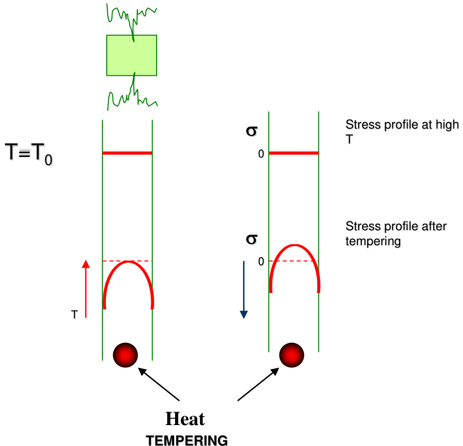
Answer and explanation
Answer: b)
Session 16, Slide 21 and Session 18, Slide 33: after tempering, the flat zero-stress profile at high temperature becomes parabolic—compressive ($\sigma < 0$) at both outer surfaces and tensile ($\sigma > 0$) in the core. Because brittle glass fails when surface cracks open in tension, residual surface compression must first be overcome by any external bending or tensile load, raising apparent strength.
Why the other options are wrong:
- a) Inverts the signs shown on the stress profile: uniform tension at the surface would weaken the glass drastically rather than strengthen it.
- c) Inverts the surface vs. interior stress signs and wrongly introduces bulk crystallization (devitrification) into tempered amorphous glass.
- d) Describes stress-relieved annealed glass (zero residual stress profile, like the upper line), not tempered glass.
Session 16, Slide 21; Session 18, Slide 33.
Question 6 · Thermal tempering temperature window and annealing contrast
Regarding thermal tempering and stress-relief annealing of silicate glass plates, which one of the following statements is FALSE:
Answer and explanation
Answer: c)
Session 18, Slides 30, 31 and 33: slow cooling from high temperature relieves thermal gradients and produces annealed (low-stress) glass rather than tempered glass; thermal tempering requires heating between $T_g$ and the softening point followed by rapid cooling so the rigid skin is pulled into compression by the later-contracting core (which ends in tension, not compression). Statement c) is false.
Why the other options are wrong:
- a) True: Slide 33 specifies heating above $T_g$ and below the softening point followed by rapid cooling.
- b) True: Slide 33 explains that the surface cools below $T_g$ first and the later-contracting interior draws the surface into compression.
- d) True: annealing at $\eta \approx 10^{13}\ \text{P}$ (Slide 30, float lehr Slide 31) removes internal stresses, opposite in goal to thermal tempering.
Session 18, Slides 30-31 and 33.
Question 7 · Core and cladding composition of optical glass fibres
In a silica optical glass fibre designed to guide light along its axis, the core is doped with $\text{GeO}_2$ and $\text{Al}_2\text{O}_3$ while the outer cladding is pure silica or silica doped with $\text{F}$ or $\text{B}$ in order to:
Answer and explanation
Answer: a)
Session 18, Slide 35: an optical fibre consists of a silica ($\text{SiO}_2$) core doped with $\text{GeO}_2$ and $\text{Al}_2\text{O}_3$ to increase the refractive index, surrounded by a cladding of pure $\text{SiO}_2$ or $\text{F}$/$\text{B}$-doped $\text{SiO}_2$ to decrease the refractive index so light remains trapped in the core by total internal reflection.
Why the other options are wrong:
- b) Inverts the refractive-index roles of core and cladding; $n_{\text{core}} < n_{\text{cladding}}$ would cause light to leak out of the core.
- c) Optical fibres guide electromagnetic light waves through dielectric silica glass, not electric currents.
- d) Confuses dense solid optical silica waveguides with porous spun glass wool insulation shown on the same slide.
Session 18, Slide 35.
Question 8 · Space Shuttle thermal protection materials by zone
On the Space Shuttle Thermal Protection System (TPS), which material protects the hottest nose cap and wing leading edges at temperatures up to $1650\ \text{°C}$?
Answer and explanation
Answer: d)
Session 18, Slides 36-37: the Space Shuttle nose cap and wing leading edges experience the highest re-entry temperatures (up to $1650\ \text{°C}$) and are protected by Reinforced Carbon-Carbon (RCC)—pyrolytic carbon reinforced with carbon fibres and coated with $\text{SiC}$ against oxidation.
Why the other options are wrong:
- a) FRSI aramid felt blankets protect cooler upper surfaces below $400\ \text{°C}$.
- b) White LRSI silica tiles cover intermediate upper fuselage and tail regions ($400\text{–}650\ \text{°C}$) to reflect solar heating.
- c) Black HRSI LI-900 silica tiles cover $70\ \%$ of the surface (orbiter underside and forward regions) in the $650\text{–}1260\ \text{°C}$ range.
Session 18, Slides 36-37.
Question 9 · Why Shuttle HRSI tiles are 90% porous silica with black coating
The Shuttle's High-temperature Reusable Surface Insulation (HRSI) tiles are fabricated from $90\ \%$ porous high-purity silica fibres sealed with a black $\text{SiB}_4$-doped borosilicate glass glaze. What happens during atmospheric re-entry ($650\text{–}1260\ \text{°C}$) because of this design?
Answer and explanation
Answer: c)
Session 18, Slide 37 (and Session 16, Slide 31): high-purity silica fibres give HRSI tiles an ultra-low $\alpha$ so they survive intense thermal shock without cracking, $90\ \%$ porosity cuts solid conduction paths so $k$ is tiny, and the thin black borosilicate + $\text{SiB}_4$ glass coating provides waterproofing/sealing and high radiative heat emission.
Why the other options are wrong:
- a) Inverts the thermal insulation function: the tiles' extremely low conductivity keeps the underlying aluminium airframe cool.
- b) Tiles are already sintered refractory fibres and operate below temperatures that would shrink them during re-entry.
- d) The impervious borosilicate glass glaze explicitly seals the outer surface rather than admitting hot plasma.
Session 18, Slide 37; Session 16, Slide 31.
Question 10 · Thermal barrier coatings and ceramics in gas turbines
Referring to engineering ceramics in modern gas-turbine engines, which one of the following statements is TRUE:
Answer and explanation
Answer: a)
Session 18, Slides 39-41 (and Session 16, Slide 10): gas turbines employ silicon nitride ($\text{Si}_3\text{N}_4$) rotors, ceramic bearings, and Thermal Barrier Coatings (TBC) of yttria-stabilized zirconia (YSZ, fluorite structure $\text{ZrO}_2$ stabilized with $\text{Y}_2\text{O}_3$); the thin, low-conductivity YSZ layer lowers the underlying superalloy blade temperature during combustion.
Why the other options are wrong:
- b) Soda-lime glass softens near $700\ \text{°C}$ and has poor thermal shock resistance; turbine rotors/bearings use engineering ceramics such as $\text{Si}_3\text{N}_4$, $\text{SiC}$, $\text{Al}_2\text{O}_3$, or $\text{ZrO}_2$.
- c) Nomex aramid felt is Shuttle FRSI limited to $400\ \text{°C}$ (Slide 37), far below hot turbine gas temperatures.
- d) Inverts the purpose of a thermal barrier coating: YSZ relies on low thermal conductivity to shield the metal blade from heat.
Session 18, Slides 37 and 39-41; Session 16, Slide 10.
Unit 9 · Polymers 14 blocks
B77 — Monomers, repeat units and polymerization
Ten test questions on polymers, written for this portal in the style of Part I of Assessment Test III. Each question has four options and only one is right. Answer all ten before opening any explanation.
Question 1 · Monomers, repeat units and macromolecules
Referring to monomers, repeat units, and macromolecules in polymer science, which one of the following statements is TRUE:
Answer and explanation
Answer: b)
Session 19, Slides 2–3 and 8: a polymer is an organic compound of high molecular weight whose macromolecules are built from many repetitive structural units joined together by covalent bonds ("poly" = many, "mers" = parts).
Why the other options are wrong:
- a) In condensation polymerization a small molecule (such as methanol or water) is eliminated, so the repeat unit has fewer atoms than the starting monomers, and in addition polymerization $\mathrm{C{=}C}$ double bonds become $\mathrm{C{-}C}$ single bonds.
- c) During addition polymerization of an alkene such as ethylene, the carbon-carbon double bond opens to form single covalent bonds linking adjacent repeat units (Slide 10).
- d) Macromolecules contain hundreds to thousands of repeat units joined by covalent bonds along the chain, not fewer than ten units held by van der Waals forces.
Session 19, Slides 2–3, 8 and 10.
Question 2 · Polymers compared with commercial plastics
Which of the following statements is FALSE:
Answer and explanation
Answer: c)
Session 19, Slides 3–4: a plastic is defined as a polymer plus additives ($\text{plastic} = \text{polymer} + \text{additives}$, such as fillers and lubricants), so all plastics are polymers, whereas not all polymers are plastics. Statement c is false.
Why the other options are wrong:
- a) True (Slide 3): plastics combine base polymer chains with functional additives like fillers and lubricants.
- b) True (Slide 3): plastics are a specific subset of polymers; natural polymers such as cellulose and wool are polymers without being plastics.
- d) True (Slide 4): natural polymers used since antiquity include leather, wool, cotton, natural rubber, cellulose, and starch.
Session 19, Slides 3–4.
Question 3 · Intra-chain and inter-chain bonding in linear polymers
Regarding the chemical bonds present within and between linear polymer chains, which one of the following statements is TRUE:
Answer and explanation
Answer: a)
Session 19, Slides 2, 22 and 26: a polymer macromolecule is formed by the covalent union of monomer units along the backbone, whereas adjacent linear or branched chains are held together by much weaker secondary bonds (van der Waals forces or hydrogen bonds in polar polyamides and polyesters).
Why the other options are wrong:
- b) Organic polymer backbones are bonded covalently, not through delocalized metallic electrons or ionic crystal lattices.
- c) Inverts the bond-strength hierarchy: intra-chain covalent bonds are roughly an order of magnitude stronger than secondary inter-chain van der Waals or hydrogen bonds.
- d) Contradicts Slide 26, which explicitly attributes the crystallinity of linear condensation polyamides and polyesters to polar groups forming hydrogen bonds.
Session 19, Slides 2, 22 and 26.
Question 4 · Effect of polyfunctional monomers on chain architecture
If a significant fraction of monomers with functionality $f \ge 3$ is added to a bifunctional ($f = 2$) polymerization mixture, the resulting polymer architecture changes from:
Answer and explanation
Answer: d)
Session 19, Slides 7 and 22 (and Session 20, Slide 12): monomeric functionality governs branching and crosslinking. Bifunctional monomers ($f = 2$) link end-to-end into linear chains, whereas adding monomers with three or more reactive sites ($f \ge 3$) creates branch points and interconnects chains into a three-dimensional crosslinked network (extension: $f$ denotes the number of covalent bonds a monomer can form).
Why the other options are wrong:
- a) Inverts the direction of architecture complexity: increasing functionality builds networks rather than breaking them down into dimers.
- b) Polyfunctional ($f \ge 3$) units create junctions out of the main chain rather than preserving an unbranched linear chain.
- c) Polymers form macromolecular chains or networks, never monoatomic crystals held by single atoms.
Session 19, Slides 7 and 22; Session 20, Slide 12.
Question 5 · Minimum monomer functionality to build polymer chains
What minimum monomer functionality $f$ is required for chemical reactions to build a continuous polymer chain rather than stopping after forming a single dimer?
Answer and explanation
Answer: a)
Session 19, Slides 7, 8 and 11 (extension): to propagate a covalent chain, each reacting monomer must have at least two reactive sites (functionality $f \ge 2$, such as an opening $\mathrm{C{=}C}$ double bond or two terminal functional groups like the two $-\mathrm{OH}$ groups of ethylene glycol).
Why the other options are wrong:
- b) A molecule with $f = 0$ has no reactive sites and cannot undergo covalent polymerization.
- c) Monofunctional molecules ($f = 1$) can react only once, capping an end or forming a dimer, so chain propagation stops immediately.
- d) Functionality $f = 4$ forms heavily crosslinked 3D networks, not the minimum condition for building a linear chain ($f = 2$).
Session 19, Slides 7, 8 and 11.
Question 6 · Addition versus condensation polymerization
Regarding addition (chain-reaction) and condensation (step-reaction) polymerization, which one of the following statements is FALSE:
Answer and explanation
Answer: b)
Session 19, Slides 8–11: in step-reaction (condensation) polymerization, monomers react everywhere at once to form dimers, trimers, and oligomers first, so full-length macromolecules appear only near 100 % conversion. Producing long chains early alongside unreacted monomer is the hallmark of chain-reaction (addition) polymerization (Slide 9). Statement b is false.
Why the other options are wrong:
- a) True (Slide 8): addition polymerization builds chains by adding monomers onto active sites with no small molecule condensed out.
- c) True (Slides 8 and 11): condensation polymerization typically eliminates a small molecule such as water or methyl alcohol.
- d) True (Slides 9 and 11): step-growth consumes monomer early into short oligomers that couple into long chains at the end.
Session 19, Slides 8–11.
Question 7 · Kinetic stages of free-radical addition polymerization
In free-radical addition polymerization of ethylene using benzoyl peroxide, the three reaction stages occur in the order:
Answer and explanation
Answer: a)
Session 19, Slide 10: free-radical chain-reaction polymerization begins with initiation (benzoyl peroxide generates a free radical that attaches to the first monomer), continues with propagation (additional repeat units attach sequentially), and concludes with termination (deactivation of active chain ends).
Why the other options are wrong:
- b) Places propagation before initiation: no monomer addition can occur until an initiator radical creates an active chain centre.
- c) Scrambles both the order and the mechanisms: double-bond opening occurs during initiation/propagation, not termination, and dimer condensation is step growth.
- d) Assigns condensation and elastomer curing terms (methanol elimination, oligomer coupling, vulcanization) to free-radical ethylene addition.
Session 19, Slide 10.
Question 8 · Termination in free-radical polyethylene addition
During free-radical addition polymerization of polyethylene, the termination stage stops chain growth when:
Answer and explanation
Answer: c)
Session 19, Slide 10: termination occurs by rearrangement of a hydrogen atom in the active ends of the chains and creation of a double covalent bond, eliminating the unpaired free-radical electrons so growth ceases.
Why the other options are wrong:
- a) Describes the initiation stage, which starts chain growth rather than stopping it (Slide 10).
- b) Describes condensation (step-reaction) polymerization rather than free-radical addition termination (Slide 11).
- d) Describes the oligomer buildup characteristic of step-growth conversion rather than chain-reaction termination (Slide 9).
Session 19, Slides 9–11.
Question 9 · Byproduct in step-reaction synthesis of PET
In the step-reaction condensation of dimethyl terephthalate with ethylene glycol to synthesize polyethylene terephthalate (PET), which small molecule is eliminated as the byproduct?
Answer and explanation
Answer: d)
Session 19, Slide 11: in the condensation of PET, the $-\mathrm{OCH_3}$ group from dimethyl terephthalate and a hydrogen atom from ethylene glycol are removed, permitting the monomers to join and producing methyl alcohol ($\mathrm{CH_3OH}$) as the byproduct.
Why the other options are wrong:
- a) Molecular hydrogen is not eliminated when an ester methoxy group reacts with an alcohol hydroxyl group.
- b) Carbon dioxide is not condensed out in this transesterification reaction; the ester carbonyls remain intact in the PET backbone.
- c) Hydrogen chloride appears only when acyl chlorides react with alcohols or amines, not when dimethyl terephthalate reacts with ethylene glycol.
Session 19, Slide 11.
Question 10 · Chain length at intermediate conversion
If a polymerization batch is halted at 50 % monomer conversion, how do the chain lengths in a chain-reaction (addition) system compare with those in a step-reaction (condensation) system?
Answer and explanation
Answer: b)
Session 19, Slide 9: the conversion grid at 25 % and 50 % clearly contrasts both mechanisms. Chain-reaction addition builds a full-length chain rapidly from active radicals while remaining monomer stays untouched; step-reaction condensation joins monomers broadly into dimers, trimers, and short oligomers until high conversion is reached.
Why the other options are wrong:
- a) Ignores rapid propagation in chain-reaction addition, which already produces long macromolecules well below 50 % conversion.
- c) Swaps the two conversion profiles: short oligomers characterize step-reaction polymerization at 50 % conversion, not chain-reaction addition.
- d) Neither system reaches its final molecular weight at 25 % conversion; step-growth molecular weight surges only near 100 % conversion.
Session 19, Slide 9.
B78 — Molecular weight averages and polydispersity
Ten test questions on polymers, written for this portal in the style of Part I of Assessment Test III. Each question has four options and only one is right. Answer all ten before opening any explanation.
Question 1 · Weight-average versus number-average position on a distribution curve
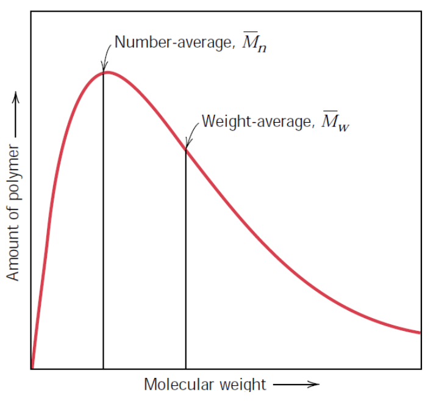
In the shown molecular weight distribution of a synthetic polymer, why does the weight-average molecular weight $\bar{M}_w$ lie to the right of the number-average molecular weight $\bar{M}_n$?
Answer and explanation
Answer: c)
Session 19, Slides 12–13: $\bar{M}_n = \sum x_i M_i$ counts every macromolecule equally regardless of size, whereas $\bar{M}_w = \sum w_i M_i = \sum N_i M_i^2 / \sum N_i M_i$ weights each chain by its mass. Because heavier chains carry a disproportionate share of the total mass, $\bar{M}_w \ge \bar{M}_n$, shifting $\bar{M}_w$ to the right on the distribution curve.
Why the other options are wrong:
- a) Inverts the definitions of the two averages: $\bar{M}_w$ uses the $M_i^2$ weighting in molecule counts, whereas $\bar{M}_n$ weights by $N_i$ directly.
- b) Physically false: a longer chain of higher molecular weight carries more mass per molecule than a shorter chain.
- d) Neither $\bar{M}_n$ nor $\bar{M}_w$ separates crystalline from amorphous regions; both average over all chains in the sample.
Session 19, Slides 12–15.
Question 2 · Formulas for number-average and weight-average molecular weight
Referring to the number-average ($M_n$) and weight-average ($M_w$) molecular weights of a polymer, which one of the following statements is FALSE:
Answer and explanation
Answer: a)
Session 19, Slides 12–13: $\sum w_i M_i$ defines the weight-average molecular weight $M_w$, whereas the number-average molecular weight is $M_n = \sum x_i M_i$, where $x_i = N_i / \sum N_i$ is the number fraction. Statement a is false.
Why the other options are wrong:
- b) True (Slide 13): dividing total sample mass $\sum N_i M_i$ by total number of molecules $\sum N_i$ gives $M_n$.
- c) True (Slide 13): substituting $W_i = N_i M_i$ into $\sum W_i M_i / \sum W_i$ yields $\sum N_i M_i^2 / \sum N_i M_i$.
- d) True (Slide 12): polymerization kinetics produce a statistical distribution of molecular weights rather than identical chains.
Session 19, Slides 12–13.
Question 3 · Polydispersity index bounds and monodisperse limit
Which of the following statements is TRUE:
Answer and explanation
Answer: d)
Session 19, Slide 13 (and Problem T9-01): the index of polydispersion $I = M_w / M_n$ measures the lack of homogeneity of molecular weights. By the Cauchy-Schwarz inequality, $M_w \ge M_n$ for every distribution, so $I \ge 1$, with $I = 1$ solely for a monodisperse polymer in which every chain shares the exact same molecular weight.
Why the other options are wrong:
- a) Inverts the bound: broader molecular weight distributions push $M_w$ further above $M_n$, raising $I$ above $1$, never below $1$.
- b) In a monodisperse polymer, $M_w = M_n = M$, so $I = M_w/M_n = 1$, not $2$.
- c) Inverts both the ratio and the inequality: $I = M_w / M_n$ (not $M_n / M_w$), and $M_w$ is greater than or equal to $M_n$.
Session 19, Slide 13; Problems T9_Polymers.pdf, Problem 1.
Question 4 · Degree of polymerization of poly(vinyl chloride)
A sample of poly(vinyl chloride) ($\mathrm{-[CH_2{-}CHCl]_n-}$) has a number-average molecular weight $M_n = 125\,000\ \text{g/mol}$. Using atomic weights $\text{C} = 12$, $\text{H} = 1$, and $\text{Cl} = 35.5\ \text{g/mol}$, calculate the number-average degree of polymerization $X_n$:
Answer and explanation
Answer: b)
Session 19, Slides 12 and 50 (Problem T9-01 style): first determine the molecular weight of one PVC repeat unit $\mathrm{C_2H_3Cl}$: $M_0 = 2(12) + 3(1) + 35.5 = 62.5\ \text{g/mol}$. Then $X_n = M_n / M_0 = 125\,000 / 62.5 = 2000$ repeat units (dimensionless).
Why the other options are wrong:
- a) Halved $X_n$ to $1000$ by erroneously assuming two repeat units per step instead of dividing $M_n$ directly by $M_0 = 62.5\ \text{g/mol}$.
- c) Used the polyethylene repeat-unit weight $M_0 = 28\ \text{g/mol}$ instead of PVC's $62.5\ \text{g/mol}$, giving $125\,000 / 28 = 4464$.
- d) Omitted one backbone carbon ($12\ \text{g/mol}$) when summing the PVC repeat unit, dividing $125\,000$ by $50.5$ to obtain $2475$.
Session 19, Slides 12 and 50; Problems T9_Polymers.pdf, Problem 1.
Question 5 · Influence of molecular weight on transition temperatures
As the molecular weight of a linear thermoplastic polymer increases from oligomers ($10^2\ \text{g/mol}$) toward high-polymer chains ($10^5$–$10^6\ \text{g/mol}$), its glass transition temperature $T_g$ and melting temperature $T_m$:
Answer and explanation
Answer: a)
Session 19, Slides 29–30: higher molecular weight reduces chain mobility ($\uparrow M \implies \downarrow \text{chain mobility} \implies \uparrow T_g$), and the molecular-weight map on Slide 30 plots both $T_g$ and $T_m$ rising steeply through $10^2$–$10^4\ \text{g/mol}$ before levelling off asymptotically at high $M$.
Why the other options are wrong:
- b) Inverts the effect of chain length: longer chains have lower mobility and fewer mobile chain ends, which raises rather than lowers $T_g$ and $T_m$.
- c) Contradicts Slide 30, where $T_m$ stays parallel above $T_g$ and both plateau rather than crossing or dropping at high $M$.
- d) Transition temperatures plateau only at very high $M$ ($10^5$–$10^7\ \text{g/mol}$), not across low and intermediate molecular weights.
Session 19, Slides 29–30.
Question 6 · Why molecular weight raises tensile strength and stiffness
Increasing the molecular weight of a thermoplastic polymer generally increases its tensile strength and high-temperature stiffness because:
Answer and explanation
Answer: c)
Session 19, Slides 43 and 45: long polymer chains form a high density of entanglements (physical knots) that inhibit chain sliding under stress, increasing tensile strength $\sigma$, elastic modulus $E$, and the rubbery plateau modulus above $T_g$.
Why the other options are wrong:
- a) Polymers do not strengthen via dislocation glide in extended metallic single crystals; entanglement of long chains is the primary mechanism here.
- b) Increasing chain length does not form covalent crosslinks between separate macromolecules; linear chains remain bonded to neighbours by secondary interactions.
- d) Very long chains actually entangle extensively and never reach 100 % crystallinity.
Session 19, Slides 43 and 45.
Question 7 · Effect of molecular weight on melt viscosity above Tm
When a polymer melt is heated above its melting temperature $T_m$, what happens to its flow behaviour and melt viscosity as the molecular weight increases from $10^2$ to $10^6\ \text{g/mol}$?
Answer and explanation
Answer: d)
Session 19, Slide 30 (and Slide 43): on the molecular-weight map above $T_m$, increasing $M$ moves the polymer across the dashed entanglement boundaries from a mobile liquid ($10^2$–$10^3\ \text{g/mol}$), through a viscous liquid ($10^3$–$10^4\ \text{g/mol}$), into a rubbery entangled state ($10^5$–$10^7\ \text{g/mol}$) with markedly higher melt viscosity (extension: higher entanglement density strongly resists viscous flow).
Why the other options are wrong:
- a) Inverts viscosity behaviour: longer chains entangle much more strongly, raising resistance to flow rather than lowering it.
- b) Reverses the low-$M$ and high-$M$ regions on Slide 30: mobile liquids occur at low $M$ ($10^2$–$10^3$), whereas rubbery behaviour occurs at high $M$.
- c) Entanglements persist in the melt above $T_m$ and dominate polymer melt viscosity.
Session 19, Slides 30 and 43.
Question 8 · Interpreting two polymer batches with equal Mn and different PDI
Two polyethylene batches share the same number-average molecular weight $M_n = 50\,000\ \text{g/mol}$, yet Batch X has $\text{PDI} = 1.1$ and Batch Y has $\text{PDI} = 4.5$. Which statement correctly describes Batch Y relative to Batch X?
Answer and explanation
Answer: b)
Session 19, Slide 13: since $I = \text{PDI} = M_w / M_n$, at fixed $M_n = 50\,000\ \text{g/mol}$, Batch X has $M_w = 55\,000\ \text{g/mol}$ while Batch Y has $M_w = 225\,000\ \text{g/mol}$. The much larger PDI signifies a broad distribution containing both very short and very long chains.
Why the other options are wrong:
- a) Confuses larger PDI with narrower spread: PDI closer to $1$ (Batch X) is narrower, whereas $\text{PDI} = 4.5$ is much broader.
- c) A strictly monodisperse polymer has $\text{PDI} = 1.0$; Batch X ($1.1$) is far closer to monodisperse than Batch Y ($4.5$).
- d) Long high-$M$ tail chains strongly elevate $M_w$ and melt viscosity even when $M_n$ is identical.
Session 19, Slide 13.
Question 9 · Physical states across the molecular-weight map
Referring to the physical states of a polymer as a function of molecular weight and temperature, which one of the following statements is TRUE:
Answer and explanation
Answer: d)
Session 19, Slide 30: at low molecular weights ($10^2$–$10^3\ \text{g/mol}$), chains are too short to entangle effectively, yielding crystalline waxes below $T_m$ and mobile liquids above $T_m$. Useful tough and partially crystalline structural plastics appear only at higher molecular weights ($\ge 10^4$–$10^5\ \text{g/mol}$).
Why the other options are wrong:
- a) Ultra-short chains below $500\ \text{g/mol}$ lack entanglements and behave as brittle waxes or mobile liquids, not tough plastics.
- b) Above $T_m$ at $M > 10^5\ \text{g/mol}$, Slide 30 places the polymer in the rubbery regime rather than the mobile liquid regime.
- c) Higher molecular weight increases entanglement density and strength rather than preventing entanglements.
Session 19, Slide 30.
Question 10 · Ranking repeat-unit weight and molecular weight averages
For a synthetic polydisperse polymer composed of chains averaging at least 100 repeat units ($X_n \ge 100$), rank the repeat-unit molecular weight $M_0$, the number-average molecular weight $M_n$, and the weight-average molecular weight $M_w$ in strictly increasing order:
Answer and explanation
Answer: c)
Session 19, Slides 12–13 (and Problems T9-07, T9-08): since $M_n = X_n M_0$ with $X_n \ge 100$, $M_n$ is at least one hundred times larger than $M_0$, and because the polymer is polydisperse ($I = M_w / M_n > 1$), $M_w$ strictly exceeds $M_n$. Therefore $M_0 < M_n < M_w$.
Why the other options are wrong:
- a) Places the single repeat-unit weight $M_0$ above the full macromolecular averages $M_n$ and $M_w$.
- b) Swaps $M_w$ and $M_n$: in any polydisperse distribution, the weight average is larger than the number average.
- d) Reverses the entire order, putting both $M_w < M_n$ and the macromolecular weights below $M_0$.
Session 19, Slides 12–13; Problems T9_Polymers.pdf, Problems 7 and 8.
B79 — Chain architecture, copolymers and isomerism
Ten test questions on polymers, written for this portal in the style of Part I of Assessment Test III. Each question has four options and only one is right. Answer all ten before opening any explanation.
Question 1 · Chain architectures held by secondary inter-chain bonds

In the four polymer molecular architectures illustrated below, which two structures hold neighbouring chains together strictly through secondary bonds and therefore soften and flow upon heating?
Answer and explanation
Answer: b)
Session 19, Slide 22 and Session 20, Slide 5: linear and branched polymers have secondary bonds (van der Waals or hydrogen bonds) between chains rather than covalent bridges, so heating overcomes those weak attractions and allows the chains to flow as thermoplastics.
Why the other options are wrong:
- a) Crosslinked and network polymers connect chains via strong covalent bonds in 2D or 3D, so they decompose chemically instead of melting.
- c) Crosslinked polymers contain covalent bridges between chains and cannot melt upon heating.
- d) Networked polymers form rigid 3D covalent networks (such as epoxy or phenolic thermosets) that do not flow when heated.
Session 19, Slide 22; Session 20, Slides 5–6.
Question 2 · Inter-chain bonding across linear, branched, crosslinked and network polymers
Regarding linear, branched, crosslinked, and three-dimensional network polymers, which one of the following statements is TRUE:
Answer and explanation
Answer: c)
Session 19, Slide 22 and Session 20, Slides 5–6: crosslinked polymers have covalent bonds between chains and network polymers form covalent bonds in three dimensions; because covalent crosslinks are far stronger than secondary van der Waals bonds, these materials do not melt when heated.
Why the other options are wrong:
- a) Branched polymers have side branches covalently attached to their own backbone, but only secondary bonds act between different molecules (Slide 22).
- b) Describes linear thermoplastics rather than three-dimensional covalent network polymers.
- d) Inverts packing behaviour: linear chains pack closely together, whereas side branches push chains apart (Slide 26).
Session 19, Slide 22; Session 20, Slides 5–6.
Question 3 · Effect of branching on packing efficiency and solid density
With an increase in side-chain branching along polyethylene molecules, how do chain packing efficiency and solid density change?
Answer and explanation
Answer: d)
Session 19, Slides 22, 24 and 26: protruding side branches prevent neighbouring chains from aligning closely in ordered crystalline lamellae, lowering packing efficiency, degree of crystallinity, and therefore bulk density (such as LDPE compared with linear HDPE).
Why the other options are wrong:
- a) Inverts steric hindrance: irregular branches obstruct rather than improve parallel chain packing.
- b) Branches are attached to a single macromolecule and do not link neighbouring chains into covalent networks.
- c) Adding branches reduces packing density per unit volume rather than keeping it fixed.
Session 19, Slides 22, 24 and 26.
Question 4 · Solvent response across polymer architectures
Which of the following statements is TRUE:
Answer and explanation
Answer: a)
Session 20, Slides 6, 11, 14 and 36: solvent molecules can separate linear or branched chains held only by weak van der Waals forces (soluble), whereas covalent crosslinks lock macromolecules together so thermosets are insoluble and lightly crosslinked elastomers swell without dissolving.
Why the other options are wrong:
- b) Covalent crosslinks are permanent chemical bonds that cannot be separated by ordinary solvents.
- c) Lightly crosslinked elastomers do not melt into liquids when heated; they degrade chemically instead (Slides 6 and 36).
- d) Swaps the solvent behaviour of linear thermoplastics (soluble) and crosslinked thermosets (insoluble).
Session 20, Slides 6, 11, 14 and 36.
Question 5 · Homopolymers versus copolymers
Which of the following statements is FALSE:
Answer and explanation
Answer: c)
Session 19, Slide 20: a homopolymer contains only one type of monomer, whereas a copolymer combines two different monomers polymerized together (for example, in random, alternating, block, or graft sequences). Statement c is false.
Why the other options are wrong:
- a) True (Slide 20): a homopolymer consists of a single monomer type repeated along the chain.
- b) True (Slide 20): polymerizing two monomers together into shared chains defines a copolymer.
- d) True (Slide 20): vinyl chloride and vinyl acetate copolymerize to form poly(vinyl chloride-vinyl acetate).
Session 19, Slide 20; MATERIALS_THIRDPARTIAL_2020.pdf, p. 2 (Model B, Q6 distractor d).
Question 6 · Identifying graft copolymer architecture
Which copolymer architecture consists of long homopolymer side chains of monomer B covalently attached at intervals along a continuous main backbone of monomer A?
Answer and explanation
Answer: b)
Session 19, Slide 20: in a graft copolymer, homopolymer branches composed of one monomer type are covalently grafted onto a main backbone chain made of the other monomer type.
Why the other options are wrong:
- a) In an alternating copolymer, single units of A and B alternate regularly along one linear backbone ($\mathrm{-A{-}B{-}A{-}B-}$).
- c) In a block copolymer, long blocks of A and long blocks of B follow each other along a single linear backbone rather than branching off as side chains.
- d) In a random copolymer, single units of A and B are distributed statistically along one unbranched chain.
Session 19, Slide 20.
Question 7 · Sequence regularity and crystallinity in copolymers
Referring to random, alternating, block, and graft copolymers, which one of the following statements is FALSE:
Answer and explanation
Answer: d)
Session 19, Slides 20 and 27: random and graft copolymers disrupt chain regularity and are amorphous, whereas alternating and block copolymers retain enough sequence regularity to exhibit some crystallinity (still generally less than a simple regular homopolymer). Statement d is false.
Why the other options are wrong:
- a) True (Slide 20): alternating copolymers repeat two distinct units strictly in sequence.
- b) True (Slide 20): block copolymers consist of long consecutive runs of each monomer type.
- c) True (Slide 20): random copolymers distribute the two comonomers irregularly along the chain.
Session 19, Slides 20 and 27.
Question 8 · Cis and trans geometric isomerism in polyisoprene
Regarding cis-polyisoprene (natural rubber) and trans-polyisoprene (gutta-percha), which one of the following statements is TRUE:
Answer and explanation
Answer: a)
Session 19, Slide 17 and Session 20, Slide 14: cis/trans isomerism occurs in repeat units containing a backbone $\mathrm{C{=}C}$ double bond that cannot rotate. cis-isoprene (natural rubber) has the $\mathrm{H}$ atom and $\mathrm{CH_3}$ group on the same side, producing a coiled elastomer, whereas trans-isoprene (gutta-percha) has them on opposite sides and is not an elastomer.
Why the other options are wrong:
- b) Single $\mathrm{C{-}C}$ bonds rotate readily; it is the $\mathrm{C{=}C}$ double bond that cannot rotate, and cis-isoprene is an amorphous elastomer rather than a crystalline solid.
- c) Swaps the two isomers: having $\mathrm{H}$ and $\mathrm{CH_3}$ on the same side defines cis, and Session 20 Slide 14 explicitly states gutta-percha (trans) is not an elastomer.
- d) Rotation around a $\mathrm{C{=}C}$ double bond requires breaking the $\pi$ bond, so cis and trans isomers cannot interconvert at room temperature.
Session 19, Slide 17; Session 20, Slide 14.
Question 9 · Rotational freedom and coiled chain conformation
A linear hydrocarbon polymer chain adopts a coiled three-dimensional conformation rather than remaining a rigid straight rod because:
Answer and explanation
Answer: c)
Session 19, Slide 16: polymer conformation is defined by the sequence of bonds and torsion angles; chains coil because segments rotate about adjacent $\mathrm{C{-}C}$ single-bond axes, changing the torsion angle $\varphi$ while keeping the tetrahedral bond angle $\theta$ fixed.
Why the other options are wrong:
- a) Tetrahedral $\mathrm{C{-}C{-}C}$ bond angles stay fixed near $109.5^\circ$ rather than flattening to $180^\circ$.
- b) Polyethylene contains single $\mathrm{C{-}C}$ bonds (not double bonds), and $\mathrm{C{=}C}$ double bonds cannot rotate freely.
- d) Hydrocarbons interact by covalent and weak dispersion forces, not ionic repulsions, and coils relax randomly rather than forming straight needles above $T_m$.
Session 19, Slide 16.
Question 10 · Copolymer elastomer example: styrene-butadiene rubber
Which synthetic elastomer is a copolymer formed by polymerizing styrene and butadiene together, where polystyrene domains act as physical crosslinks?
Answer and explanation
Answer: b)
Session 20, Slide 15 (and 2020 Model B Q5): styrene-butadiene rubber (SBR) is a styrene-butadiene (SB) copolymer in which hard polystyrene regions serve as physical crosslinks for the elastic polybutadiene chains.
Why the other options are wrong:
- a) Polybutadiene is a homopolymer synthesized from 1,3-butadiene alone, heavily used in tyres.
- c) Polychloroprene (neoprene) is a homopolymer polymerized from chloroprene monomers.
- d) Natural rubber is the cis-polyisoprene homopolymer obtained from rubber tree latex.
Session 20, Slides 14–15.
B80 — Stereoisomerism, tacticity and polymer repeat units
Ten test questions on polymers, written for this portal in the style of Part I of Assessment Test III. Each question has four options and only one is right. Answer all ten before opening any explanation.
Question 1 · Isotactic, syndiotactic and atactic arrangements
Referring to stereoisomerism (tacticity) in monosubstituted vinyl polymers $\mathrm{-[CH_2{-}CH(R)]_n-}$, which one of the following statements is FALSE:
Answer and explanation
Answer: c)
Session 19, Slide 18: in an atactic polymer, the pendant R groups are placed at random along the chain with no repeating pattern, preventing regular packing; placing all R groups on the same side defines the isotactic arrangement. Statement c is false.
Why the other options are wrong:
- a) True (Slide 18): isotactic configuration puts all R groups on the same side of the chain.
- b) True (Slide 18): syndiotactic configuration alternates R groups from side to side along the backbone.
- d) True (Slides 18 and 26): the asymmetric $\mathrm{-CH(R)-}$ carbon locks each substituent onto one side of the chain upon addition.
Session 19, Slides 18 and 26.
Question 2 · Which polymers can exhibit tacticity
Which of the following polymers CANNOT exhibit stereoisomeric tacticity (isotactic, syndiotactic, or atactic) because its repeat unit lacks an asymmetrically substituted backbone carbon?
Answer and explanation
Answer: d)
Problems T9, Problem 9(a) and Session 19, Slides 18 and 50: tacticity requires an asymmetric backbone carbon carrying two different substituent groups (such as $-\mathrm{H}$ and $-\mathrm{R}$ in vinyl monomers $\mathrm{-[CH_2{-}CH(R)]_n-}$). In polyethylene, every backbone carbon carries two identical hydrogen atoms, so no left/right side-group stereoisomers exist.
Why the other options are wrong:
- a) Polypropylene carries $-\mathrm{CH_3}$ and $-\mathrm{H}$ on every second carbon, so it exhibits isotactic, syndiotactic, and atactic forms (Problem T9-09a).
- b) Polystyrene carries a bulky phenyl ring ($-\mathrm{C_6H_5}$) and $-\mathrm{H}$ on every second carbon, exhibiting all three tacticities (Slide 19).
- c) Poly(vinyl chloride) carries $-\mathrm{Cl}$ and $-\mathrm{H}$ on every second carbon, so it can also present tacticity.
Problems T9_Polymers.pdf, Problem 9(a); Session 19, Slides 18–19 and 50.
Question 3 · Comparing tacticity eligibility across vinyl and symmetric repeat units
Which of the following statements is TRUE:
Answer and explanation
Answer: a)
Session 19, Slides 18–19 and 50; Problems T9, Problem 9(a): monosubstituted vinyl chains $\mathrm{-[CH_2{-}CHX]_n-}$ (PP with $\mathrm{X{=}CH_3}$, PVC with $\mathrm{X{=}Cl}$, PS with $\mathrm{X{=}C_6H_5}$) possess asymmetric $-\mathrm{CHX}-$ carbons and exhibit tacticity, whereas symmetric repeat units like PE ($\mathrm{-[CH_2{-}CH_2]_n-}$) and PTFE ($\mathrm{-[CF_2{-}CF_2]_n-}$) have identical substituents on each carbon and cannot.
Why the other options are wrong:
- b) Having two identical substituents on each carbon destroys stereochemical asymmetry and eliminates tacticity rather than creating it.
- c) Tacticity is a covalent configuration fixed during synthesis, not a conformational rotation state (Slides 16 and 18).
- d) In PVDF ($\mathrm{-[CH_2{-}CF_2]_n-}$), each backbone carbon carries two identical atoms (either two H or two F), so neither carbon is asymmetric.
Session 19, Slides 16, 18–19 and 50; Session 20, Slide 8; Problems T9_Polymers.pdf, Problem 9(a).
Question 4 · Physical behaviour of atactic versus isotactic polypropylene
When polypropylene is polymerized in the atactic configuration rather than the isotactic configuration, the resulting material:
Answer and explanation
Answer: b)
Session 19, Slides 19 and 26: irregular placement of $-\mathrm{CH_3}$ groups in atactic polypropylene prevents ordered chain packing, producing an amorphous wax-type material with very poor mechanical properties, whereas isotactic polypropylene crystallizes into a useful engineering and commodity plastic.
Why the other options are wrong:
- a) Describes isotactic (or syndiotactic) crystalline polypropylene rather than amorphous atactic polypropylene.
- c) Atactic polypropylene remains linear and uncrosslinked; changing tacticity does not create covalent crosslinks between chains.
- d) Methyl ($-\mathrm{CH_3}$) groups are non-polar hydrocarbon groups that cannot form hydrogen bonds in any tacticity.
Session 19, Slides 19 and 26.
Question 5 · Identifying the repeat unit of PMMA
Which repeat unit corresponds to poly(methyl methacrylate) (PMMA), the transparent amorphous polymer commonly used as a lightweight substitute for glass?
Answer and explanation
Answer: c)
Session 19, Slide 50 (and Problem T9-01): poly(methyl methacrylate) (PMMA) has the repeat unit $\mathrm{-[CH_2{-}C(CH_3)(COOCH_3)]_n-}$, carrying both a methyl group and a bulky methyl ester group on the same backbone carbon, which hinders crystallization and produces an optically transparent glass substitute.
Why the other options are wrong:
- a) $\mathrm{-[CH_2{-}CHCl]_n-}$ is the repeat unit of poly(vinyl chloride) (PVC).
- b) $\mathrm{-[CH_2{-}CF_2]_n-}$ is the repeat unit of poly(vinylidene fluoride) (PVDF).
- d) $\mathrm{-[CH_2{-}CH(C_6H_5)]_n-}$ is the repeat unit of polystyrene (PS).
Session 19, Slide 50; Problems T9_Polymers.pdf, Problem 1.
Question 6 · Identifying the repeat unit of Nylon 6,6
Which repeat unit characterizes Nylon 6,6, a linear condensation polyamide widely used for synthetic fibres and engineering components?
Answer and explanation
Answer: a)
Session 19, Slide 50, Session 20, Slide 9, and Problem T9-08: Nylon 6,6 is a polyamide formed from six-carbon diamine and six-carbon diacid blocks, containing amide linkages ($\mathrm{-CO{-}NH-}$), four $\mathrm{CH_2}$ units between carbonyls, and six $\mathrm{CH_2}$ units between nitrogen atoms: $\mathrm{-[CO{-}(CH_2)_4{-}CO{-}NH{-}(CH_2)_6{-}NH]_n-}$.
Why the other options are wrong:
- b) Contains the carbonate linkage $\mathrm{-O{-}CO{-}O-}$ and aromatic rings of polycarbonate (PC) (Session 20, Slide 9).
- c) Contains the ester linkage and benzene ring of polyethylene terephthalate (PET) (Session 19, Slide 11).
- d) $\mathrm{-[CH_2{-}CH(CN)]_n-}$ is polyacrylonitrile (PAN) (Session 19, Slide 29).
Session 19, Slides 11, 29 and 50; Session 20, Slide 9; Problems T9_Polymers.pdf, Problem 8.
Question 7 · Monomers forming polyethylene terephthalate (PET)
Polyethylene terephthalate (PET) is a condensation polyester whose repeat unit contains an aromatic ring linked by ester groups, synthesized by reacting ethylene glycol with:
Answer and explanation
Answer: d)
Session 19, Slide 11: PET is produced by step-reaction condensation between dimethyl terephthalate and ethylene glycol, removing methyl alcohol as a byproduct and joining the terephthalate aromatic unit with the glycol unit via ester linkages.
Why the other options are wrong:
- a) Vinyl acetate is a vinyl comonomer polymerized by addition (for example, with vinyl chloride, Slide 20), not for PET.
- b) Hexamethylenediamine is a diamine used to synthesize polyamides such as Nylon 6,6 rather than polyesters.
- c) 1,3-butadiene is the monomer used for polybutadiene and synthetic rubbers such as SBR (Session 20, Slide 15).
Session 19, Slides 11 and 20; Session 20, Slide 15.
Question 8 · Molar mass of the PMMA repeat unit
Given atomic weights $\text{C} = 12$, $\text{H} = 1$, and $\text{O} = 16\ \text{g/mol}$, determine the molecular weight $M_0$ of the repeat unit of poly(methyl methacrylate) (PMMA), $\mathrm{-[CH_2{-}C(CH_3)(COOCH_3)]_n-}$:
Answer and explanation
Answer: b)
Session 19, Slide 50 and Problem T9-01: counting atoms in $\mathrm{-[CH_2{-}C(CH_3)(COOCH_3)]_n-}$ gives $1 + 1 + 1 + 1 + 1 = 5$ carbons, $2 + 3 + 3 = 8$ hydrogens, and $2$ oxygens ($\mathrm{C_5H_8O_2}$). Thus $M_0 = 5(12) + 8(1) + 2(16) = 60 + 8 + 32 = 100\ \text{g/mol}$.
Why the other options are wrong:
- a) Overlooked one ester carbonyl group ($\mathrm{C{=}O}$), summing $\mathrm{C_4H_8O}$ to get $72\ \text{g/mol}$.
- c) Omitted one methyl group ($-\mathrm{CH_3}$), counting only $4\ \text{C}$, $5\ \text{H}$, and $2\ \text{O}$ to obtain $85\ \text{g/mol}$.
- d) Added an extra $-\mathrm{CH_2}-$ group ($14\ \text{g/mol}$) to the backbone, summing $\mathrm{C_6H_{10}O_2} = 114\ \text{g/mol}$.
Session 19, Slide 50; Problems T9_Polymers.pdf, Problem 1.
Question 9 · Repeat units and properties of common polymers
Regarding common synthetic polymer repeat units and characteristics, which one of the following statements is TRUE:
Answer and explanation
Answer: d)
Session 19, Slide 50: polypropylene has the repeat unit $\mathrm{-[CH_2{-}CH(CH_3)]_n-}$ and is widely used both as a moulded commodity plastic and as a drawn fibre.
Why the other options are wrong:
- a) Slide 50 explicitly characterizes PVDF as possessing high electric and fire resistance.
- b) The C-Cl bond in PVC is strongly polar, raising $T_g$ to $87\ ^\circ\text{C}$ compared with $-110\ ^\circ\text{C}$ for HDPE (Slide 29).
- c) The $-\mathrm{C_6H_5}$ side group on polystyrene is a bulky aromatic phenyl ring, not an aliphatic ethyl group.
Session 19, Slides 29 and 50.
Question 10 · Configuration versus conformation in stereoregular chains
Which of the following statements is FALSE:
Answer and explanation
Answer: c)
Session 19, Slides 16 and 18: tacticity is a fixed stereochemical configuration established during polymerization when covalent bonds attach the side group to one side of the asymmetric carbon. Single-bond rotation only alters chain conformation and can never convert an atactic chain into an isotactic chain. Statement c is false.
Why the other options are wrong:
- a) True (Slide 16): rotation about $\mathrm{C{-}C}$ single bonds changes torsion angles and conformation without breaking bonds.
- b) True (Slide 18): switching the handedness of R attachments requires breaking and reforming covalent bonds.
- d) True (Slide 16): bulky pendant groups sterically hinder backbone rotation and limit conformational states.
Session 19, Slides 16 and 18.
B81 — Semicrystalline structure, spherulites and lamellae
Ten test questions on polymers, written for this portal in the style of Part I of Assessment Test III. Each question has four options and only one is right. Answer all ten before opening any explanation.
Question 1 · Why polymers cannot be 100 percent crystalline
Which statement best explains why polymers cannot solidify into a 100 % crystalline state?
Answer and explanation
Answer: a)
MATERIALS_FINALEXAM_2016_EXTRA_SOL.pdf, p. 4 (Question 8b) and Session 19, Slides 24–26: long chains in a melt are heavily entangled, and during cooling chains fold into thin lamellae while loose fold loops, tie molecules, chain ends, and entangled defects remain trapped in disordered interlamellar amorphous regions before motion freezes below $T_g$.
Why the other options are wrong:
- b) Covalent backbone bonds do not break spontaneously during ordinary solidification; chain entanglement and kinetic constraints prevent full ordering.
- c) Typical structural polymers are electrical insulators without free metallic conduction electrons.
- d) Polymers do not undergo metallic-style allotropic crystal transformations at room temperature that revert crystals to amorphous coils.
MATERIALS_FINALEXAM_2016_EXTRA_SOL.pdf, p. 4 (Question 8b); Session 19, Slides 24–26.
Official examQuestion 2 · Chain-folded lamellar crystallites
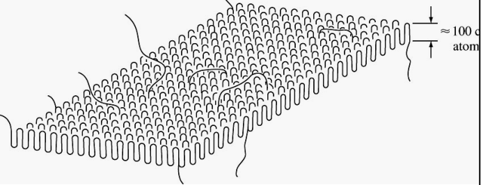
The figure illustrates the basic crystalline building block inside a semicrystalline polymer. Which description accurately characterizes this structure?
Answer and explanation
Answer: d)
Session 19, Slide 25: the ordered crystalline regions of a semicrystalline polymer are thin plates called lamellae (roughly 100 carbon atoms thick), built by individual chains folding back and forth across the thickness while leaving loose fold loops, chain ends, and tie strands on the surfaces.
Why the other options are wrong:
- a) Polymers are not metallic single crystals, and lamellae coexist intimately with amorphous interlamellar material.
- b) Thermosets are amorphous covalent networks that do not crystallize into folded lamellae (Session 20, Slide 36).
- c) The diagram explicitly shows chains folding sharply back and forth across a thin plate rather than stretching straight across the entire bulk part.
Session 19, Slide 25.
Question 3 · Role and position of amorphous tie chains
Inside a semicrystalline spherulite, tie molecules are polymer segments that:
Answer and explanation
Answer: b)
Session 19, Slides 25, 35 and 41: inside a spherulite, amorphous material separates radiating chain-folded lamellae, and tie molecules pass from one crystalline lamella through the amorphous layer into a neighbouring lamella, mechanically linking them and carrying the initial elastic stretch.
Why the other options are wrong:
- a) Tie chains are parts of long linear macromolecules rather than permanent covalent crosslinks introduced by thermoset curing.
- c) Tie chains pass directly between adjacent lamellae inside the spherulite rather than circling solely around its exterior boundary.
- d) Tie molecules are segments of full-length polymer chains anchored in two neighbouring lamellae, not unpolymerized monomer impurities.
Session 19, Slides 25, 35 and 41.
Question 4 · Nucleation, radial growth and impingement of spherulites
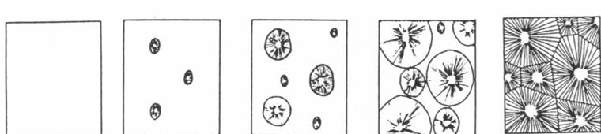
The sequential schematic shows crystallization from a polymer melt held below $T_m$. What microstructural entities nucleate, grow radially, and impinge against one another at boundaries in the final frame?
Answer and explanation
Answer: c)
Session 19, Slide 25: most polymers that crystallize from a melt form spherulites below $T_m$. Nuclei appear at scattered sites, grow radially as stacks of chain-folded lamellae separated by amorphous regions, and eventually impinge along polygonal interspherulitic boundaries.
Why the other options are wrong:
- a) Dislocation cells belong to cold-worked metals, whereas the frames show radial crystallization from an isotropic polymer melt.
- b) Crosslinked epoxy thermosets are amorphous and do not nucleate and grow spherulites from a melt.
- d) Silicate tetrahedra and glass modifiers describe inorganic ceramic glasses, not melt-crystallized polymers.
Session 19, Slide 25.
Question 5 · Optical micrograph appearance of spherulites
When a thin melt-crystallized polyethylene film is observed in an optical microscope under polarized light, spherulites characteristically appear as:
Answer and explanation
Answer: a)
Session 19, Slide 25: the polarized-light optical micrograph of polyethylene shows impinged polygonal spherulites with characteristic dark Maltese-cross extinction patterns radiating outward from each central nucleus.
Why the other options are wrong:
- b) Twin bands at fixed crystallographic angles characterize deformed or annealed metals, not polymer spherulites.
- c) Amorphous isotropic glasses appear uniformly dark between crossed polars, whereas birefringent semicrystalline spherulites produce bright quadrants and dark crosses.
- d) Melt-crystallized polyethylene is a continuous solid of impinged spherulites, not isolated ionic cubes suspended in liquid.
Session 19, Slide 25.
Question 6 · Semicrystalline versus completely amorphous thermal transitions
Regarding semicrystalline and completely amorphous polymers, which one of the following statements is FALSE:
Answer and explanation
Answer: c)
Session 19, Slides 23–24 and 28: $T_m$ belongs strictly to crystalline regions and $T_g$ belongs to amorphous regions. Therefore, completely amorphous polymers show only $T_g$ and lack any crystalline melting temperature $T_m$. Statement c is false.
Why the other options are wrong:
- a) True (Slide 24): a semicrystalline polymer is composed of ordered crystalline regions and disordered amorphous regions.
- b) True (Slides 23 and 28): because both phases coexist, semicrystalline polymers display both $T_g$ and $T_m$.
- d) True (Slide 24): crystalline packing reduces free volume, so $\rho_{\text{crystalline}} > \rho_{\text{amorphous}}$.
Session 19, Slides 23–24 and 28.
Question 7 · Calculating percent crystallinity from polymer density
A polypropylene sample has a measured density $\rho_s = 0.890\ \text{g/cm}^3$. Given $\rho_a = 0.830\ \text{g/cm}^3$ for completely amorphous polypropylene and $\rho_c = 0.947\ \text{g/cm}^3$ for completely crystalline polypropylene, calculate its percent crystallinity (by mass):
Answer and explanation
Answer: d)
Session 19, Slide 25 (Problems T9, Problem 6): applying the density-crystallinity formula gives $\% \text{ crystallinity} = \dfrac{\rho_c(\rho_s - \rho_a)}{\rho_s(\rho_c - \rho_a)}\times 100 = \dfrac{0.947(0.890 - 0.830)}{0.890(0.947 - 0.830)}\times 100 = \dfrac{0.05682}{0.10413}\times 100 = 54.6\ \%$.
Why the other options are wrong:
- a) Reported the amorphous mass fraction $100 - 54.6 = 45.4\ \%$ instead of the crystalline mass fraction.
- b) Substituted $\rho_a = 0.830\ \text{g/cm}^3$ instead of $\rho_c = 0.947\ \text{g/cm}^3$ in the leading numerator factor, giving $47.8\ \%$.
- c) Omitted the factor $\rho_c/\rho_s$, computing the volume fraction $(\rho_s - \rho_a)/(\rho_c - \rho_a)\times 100 = 51.3\ \%$ instead of the mass fraction.
Session 19, Slide 25; Problems T9_Polymers.pdf, Problems 6 and 9.
Question 8 · Mass-fraction basis of the density-crystallinity equation
Which of the following statements is TRUE:
Answer and explanation
Answer: a)
Session 19, Slide 25 (and Topic 9, Section 10.3 derivation): writing the total specific volume of $1\ \text{g}$ of sample as $1/\rho_s = X_c/\rho_c + (1 - X_c)/\rho_a$ and solving for the crystalline mass fraction $X_c$ yields $X_c = \rho_c(\rho_s - \rho_a)/[\rho_s(\rho_c - \rho_a)]$.
Why the other options are wrong:
- b) Swaps the symbols: $\rho_s$ is the actual measured sample density and $\rho_c$ is the density of the totally crystalline polymer (Slide 25).
- c) Inverts the density inequality: ordered lamellae pack tighter than coils, so $\rho_c > \rho_a$ (Slide 24).
- d) $(\rho_s - \rho_a)/(\rho_c - \rho_a)$ gives the volume fraction of crystallinity rather than the mass fraction defined by the course formula.
Session 19, Slides 24–25.
Question 9 · Crystallinity, chain packing and anisotropy
Regarding chain packing and directional anisotropy in semicrystalline polymers, which one of the following statements is TRUE:
Answer and explanation
Answer: b)
Session 19, Slides 23–24: higher crystallinity corresponds to greater chain alignment and tighter packing ($\uparrow \text{Crystallinity} \implies \uparrow \text{Amount of packing}$), and greater crystallization increases directional anisotropy ($\uparrow \text{Crystallization} \implies \uparrow \text{anisotropy}$) because covalent backbones behave differently along versus perpendicular to the chain axis.
Why the other options are wrong:
- a) Inverts both relationships: crystallization increases rather than decreases packing and anisotropy.
- c) Although bulk unoriented spherulites may average out macroscopically, aligned crystalline lamellae themselves are strongly anisotropic (Slide 23).
- d) Thermoplastics have few or no crosslinks yet show strong increases in packing and anisotropy as they crystallize.
Session 19, Slides 23–24.
Question 10 · Effect of undercooling on spherulite nucleation and size
When a crystallizable polymer melt is cooled below its melting temperature $T_m$ to a crystallization temperature $T_c < T_m$, what happens if the undercooling $\Delta T = T_m - T_c$ is made larger (faster cooling)?
Answer and explanation
Answer: d)
Session 19, Slides 25–26: spherulites form below $T_m$, and crystal number and size depend on undercooling $\Delta T = T_m - T_c$: increasing $\Delta T$ (or faster cooling) favours nucleation, yielding a higher number of smaller crystals ($\Delta T \uparrow \implies \uparrow n^\circ,\ \downarrow \text{size}$).
Why the other options are wrong:
- a) Greater undercooling increases nucleation rate rather than halting nucleation to leave a single crystal.
- b) Crystallization and spherulite growth occur strictly below $T_m$ ($T < T_m$), never above the melting point (Slide 25).
- c) Fewer, larger spherulites form at small undercooling (slow cooling near $T_m$), not at large $\Delta T$.
Session 19, Slides 25–26.
B82 — Factors governing polymer crystallinity
Ten test questions on polymers, written for this portal in the style of Part I of Assessment Test III. Each question has four options and only one is right. Answer all ten before opening any explanation.
Question 1 · Identifying the most likely crystalline polymer
Which of the following polymers is more likely to be crystalline?
Answer and explanation
Answer: a)
MATERIALS_THIRDPARTIAL_2020.pdf, p. 1 (Model B, Q5) and Session 19, Slide 27: polyethylene has a symmetric, simple repeat unit ($\mathrm{-[CH_2{-}CH_2]_n-}$) with no bulky or irregular side groups, giving it the highest tendency to pack regularly and crystallize among the four options.
Why the other options are wrong:
- b) Atactic polypropylene has randomly oriented $-\mathrm{CH_3}$ side groups and is amorphous (Session 19, Slides 19 and 26).
- c) Epoxy resin is a heavily crosslinked thermoset network and is amorphous (Session 19, Slide 27; Session 20, Slides 11 and 36).
- d) Styrene-butadiene (SB) copolymer combines dissimilar monomers in an irregular sequence and behaves as an amorphous elastomer (Session 19, Slide 27; Session 20, Slide 15).
MATERIALS_THIRDPARTIAL_2020.pdf, p. 1 (Model B, Q5); Session 19, Slides 19, 26–27; Session 20, Slides 11, 15 and 36.
Official examQuestion 2 · Comparing crystallization tendency across polymer pairs
Under identical cooling conditions, which polymer in each pair—(I) branched vs. linear polyethylene, (II) polyethylene homopolymer vs. polyethylene-polypropylene copolymer, and (III) isotactic vs. atactic polypropylene—crystallizes more easily?
Answer and explanation
Answer: c)
Problems T9, Problem 2 and Session 19, Slides 26–27: crystallinity is favoured by chain regularity. Linear chains pack better than branched chains (linear PE > branched PE); a simple homopolymer packs better than a copolymer carrying interrupting comonomers (PE > PE-PP copolymer); and stereoregular isotactic chains crystallize whereas atactic chains are amorphous (isotactic PP > atactic PP).
Why the other options are wrong:
- a) Inverts all three pairs: branching, comonomers, and atactic disorder each lower crystallinity (Slides 26–27).
- b) Gets pairs (II) and (III) right, yet wrongly picks branched PE over linear PE in pair (I) (Slide 26).
- d) Gets pair (I) right, yet wrongly prefers the copolymer and the amorphous atactic isomer in pairs (II) and (III).
Problems T9_Polymers.pdf, Problem 2; Session 19, Slides 19 and 26–27.
Question 3 · Structural and molecular conditions increasing crystallinity
Crystallinity of a polymer is higher:
Answer and explanation
Answer: c)
MATERIALS_THIRDPARTIAL_2020_V2.pdf, p. 4 (Paper B, Q2, verified with red grading tick) and Session 19, Slides 26–27 and 30 (plus Session 20, Slide 16): moving from low-molecular-weight liquids/waxes into the polymer regime yields a partially crystalline solid and fibres require relatively large molecular weight with linear crystallinity, while the remaining three options directly contradict the structural rules on Slides 26–27.
Why the other options are wrong:
- a) Contradicts Slide 26: atactic polypropylene is amorphous, whereas isotactic polypropylene is crystalline.
- b) Contradicts Slide 27: random copolymers are amorphous, whereas block copolymers retain some crystallinity.
- d) Contradicts Slide 26: complex monomeric structures reduce the degree of crystallinity relative to simple, symmetric monomers.
MATERIALS_THIRDPARTIAL_2020_V2.pdf, p. 4 (Paper B, Q2); Session 19, Slides 26–27 and 30; Session 20, Slide 16.
Official examQuestion 4 · Side-group bulkiness and monomer complexity
Replacing one hydrogen atom per repeat unit of polyethylene with an ethyl ($\mathrm{-CH_2CH_3}$) or phenyl ($\mathrm{-C_6H_5}$) pendant group causes the polymer's tendency to crystallize to:
Answer and explanation
Answer: b)
Problems T9, Problem 7(d) and Session 19, Slides 26–27: polyethylene ($\mathrm{-[CH_2{-}CH_2]_n-}$) has a simple, symmetric repeat unit that crystallizes easily. Adding a bulkier side group (ethyl in poly-1-butene or phenyl in polystyrene) creates a more complex monomeric structure and introduces an asymmetric carbon, lowering the degree of crystallinity relative to polyethylene.
Why the other options are wrong:
- a) Pendant groups along the chain disrupt lamellar packing rather than nucleating crystals.
- c) Non-polar ethyl or phenyl hydrocarbon substituents cannot form hydrogen bonds.
- d) Side-group size, symmetry, and regularity strongly govern whether chains can pack into crystalline lamellae.
Problems T9_Polymers.pdf, Problem 7(d); Session 19, Slides 26–27.
Question 5 · Role of polar groups and hydrogen bonds in linear condensation polymers
Referring to how chemical polarity and intermolecular interactions affect polymer crystallinity, which one of the following statements is FALSE:
Answer and explanation
Answer: d)
Session 19, Slides 26–27: polar groups usually increase crystallinity because they enhance intermolecular ordering; linear condensation polymers such as polyamides and polyesters crystallize specifically because their polar groups form inter-chain hydrogen bonds. Statement d is false.
Why the other options are wrong:
- a) True (Slide 27): polarity usually increases ordering and crystallinity.
- b) True (Slide 26): linear condensation polyamides and polyesters are crystalline due to hydrogen bonding between polar groups.
- c) True (Slides 26–27): complex and asymmetric pendant groups hinder close packing and lower crystallinity.
Session 19, Slides 26–27.
Question 6 · Ranking molecular architectures by crystallization likelihood
Rank the following polymer molecular structures from HIGHEST to LOWEST probability of crystallizing:
Answer and explanation
Answer: a)
Session 19, Slide 27: the molecular-structure crystallinity table ranks linear polymers as "most probable" to crystallize, branched polymers as "sometimes", and cross-linked polymers as "almost never".
Why the other options are wrong:
- b) Places branched above linear, ignoring that side branches keep main chains separated and reduce packing efficiency.
- c) Places crosslinked highest, whereas covalent crosslinks lock chains in disordered positions so crosslinked thermosets almost never crystallize.
- d) Places crosslinked above branched, whereas branched polyethylene (LDPE) still crystallizes partially while crosslinked thermosets are amorphous.
Session 19, Slides 26–27; Session 20, Slide 36.
Question 7 · Effect of copolymer sequence on crystallization
Which of the following statements is TRUE:
Answer and explanation
Answer: b)
Session 19, Slide 27: under copolymer sequence factors, random and graft copolymers disrupt repeating regularity and remain amorphous, whereas alternating and block copolymers possess periodic or segmented order and retain some crystallinity.
Why the other options are wrong:
- a) Graft copolymers have irregular branch junctions that prevent crystallization and are amorphous (Slide 27).
- c) Statistical random placement of two dissimilar units prevents regular lamellar packing, making random copolymers amorphous.
- d) Long uninterrupted runs in a block copolymer can phase-separate and fold into crystalline lamellae, giving some crystallinity.
Session 19, Slide 27.
Question 8 · Cooling rate and undercooling effects on crystal size
When a molten linear thermoplastic is cooled rapidly from above $T_m$ (high cooling rate and large undercooling $\Delta T = T_m - T_c$), what happens to the crystal size and degree of crystallinity compared with slow cooling?
Answer and explanation
Answer: d)
Session 19, Slide 26 (and Problem T9-03): faster cooling increases undercooling $\Delta T = T_m - T_c$, which favours nucleation over growth ($\uparrow n^\circ$ crystals, $\downarrow$ crystal size) and leaves chains with less time to disentangle and pack before freezing below $T_g$, yielding lower crystallinity than slow cooling.
Why the other options are wrong:
- a) Rapid cooling removes thermal energy quickly rather than supplying extra energy, reducing crystal size and crystallinity.
- b) Large undercooling increases the number of nuclei and decreases individual crystal size, the opposite of slow cooling near $T_m$.
- c) Below $T_g$, segmental chain motion is frozen (Slide 28), so fast quenching traps chains in an amorphous state.
Session 19, Slides 26 and 28; Problems T9_Polymers.pdf, Problem 3.
Question 9 · Monomer simplicity and symmetry: HDPE versus atactic PS
Why does linear polyethylene (HDPE) crystallize extensively whereas commercial polystyrene (PS) normally solidifies as an amorphous glass?
Answer and explanation
Answer: a)
Session 19, Slides 19 and 27: polyethylene is the textbook example of a simple, symmetric monomer with high crystallinity, whereas polystyrene carries a bulky phenyl ring on an asymmetric carbon (and commercial PS is atactic), producing a complex monomeric structure that hinders packing and yields an amorphous polymer.
Why the other options are wrong:
- b) Polyethylene ($\mathrm{-[CH_2{-}CH_2]_n-}$) contains no ester groups or polar atoms; both PE and PS are non-polar hydrocarbons.
- c) Standard polystyrene is a linear thermoplastic (not a heavily crosslinked thermoset), and HDPE is not vulcanized.
- d) Addition polymerization converts ethylene's $\mathrm{C{=}C}$ double bond into single $\mathrm{C{-}C}$ bonds, while PS's phenyl rings restrict rotation rather than increasing it.
Session 19, Slides 16, 19 and 27.
Question 10 · Tacticity prerequisite for crystallization of vinyl polymers
Among linear vinyl polymers carrying an asymmetric carbon in the repeat unit (such as polypropylene), crystallization from the melt occurs readily only when the chains possess:
Answer and explanation
Answer: b)
Session 19, Slides 18–19 and 26 (and Problem T9-04d): for polymers with asymmetric carbons, atactic chains are amorphous, whereas stereoregular isotactic and syndiotactic chains allow pendant groups to pack periodically into crystalline lamellae.
Why the other options are wrong:
- a) Atactic chains have random substituent placement and remain amorphous (Slide 26).
- c) Covalent crosslinks lock chains out of regular register and prevent crystallization (Slide 27).
- d) Random grafting introduces irregular branch points that produce an amorphous graft copolymer (Slide 27).
Session 19, Slides 18–19 and 26–27; Problems T9_Polymers.pdf, Problem 4(d).
B83 — Crystallinity effects on polymer properties
Ten test questions on polymers, written for this portal in the style of Part I of Assessment Test III. Each question has four options and only one is right. Answer all ten before opening any explanation.
Question 1 · How crystallinity affects density, tensile strength and Tm
When the degree of crystallinity in a linear thermoplastic polymer increases, how are (i) its density, (ii) its tensile strength, and (iii) its melting temperature $T_m$ affected?
Answer and explanation
Answer: b)
MATERIALS_FINALEXAM_2015_ORD.pdf, p. 6 (Question 3a) and Session 19, Slides 24, 27 and 43: higher crystallinity packs polymer chains more densely ($\rho_c > \rho_a$, raising bulk density), strengthens cumulative secondary intermolecular bonding between aligned chains (raising tensile strength and modulus), and requires higher thermal energy to melt the ordered crystallites (raising $T_m$).
Why the other options are wrong:
- a) Inverts all three property trends simultaneously.
- c) Higher crystallinity increases rather than decreases both tensile strength (Slide 43) and $T_m$ (Slide 27).
- d) $T_m$ is governed by the stability and packing of crystalline regions (Slide 28), not solely by $T_g$, and explicitly increases with crystallinity (Slide 27).
MATERIALS_FINALEXAM_2015_ORD.pdf, p. 6 (Question 3a); Session 19, Slides 24, 27–28 and 43.
Official examQuestion 2 · Effect of chain branching on crystallinity, strength and elongation in PE
What happens to (i) the amount of crystallinity, (ii) the tensile strength, and (iii) the elongation at fracture of polyethylene when chain branching increases (moving from linear HDPE toward branched LDPE)?
Answer and explanation
Answer: c)
MATERIALS_FINALEXAM_2013_EXTRA.pdf, p. 3 (Question 7a), Session 19, Slides 26–27 and 43, and Session 20, Slide 10: side branches prevent polyethylene backbones from packing closely into ordered lamellae, reducing crystallinity and weakening inter-chain van der Waals interactions (lowering tensile strength), while the larger amorphous fraction allows easier chain uncoiling and sliding (increasing flexibility and elongation to fracture).
Why the other options are wrong:
- a) Describes decreasing branching (moving toward linear HDPE) rather than increasing branching.
- b) Lower crystallinity and weaker inter-chain forces reduce tensile strength rather than raising it (Slide 43).
- d) Branching lowers crystallinity rather than raising it, and higher amorphous content increases elongation.
MATERIALS_FINALEXAM_2013_EXTRA.pdf, p. 3 (Question 7a); Session 19, Slides 26–27 and 43; Session 20, Slide 10.
Official examQuestion 3 · Reading yield point against percent crystallization
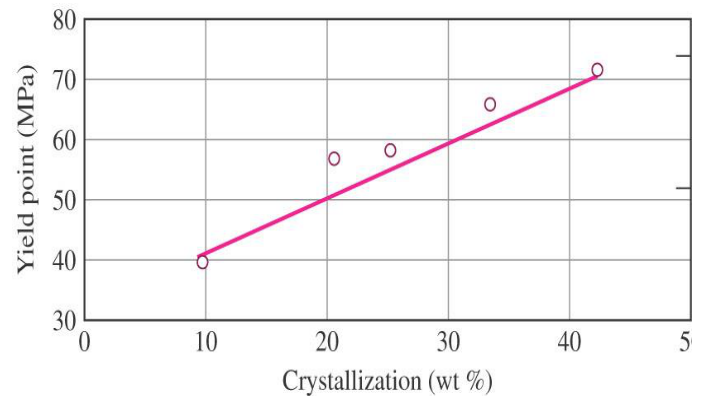
From the plotted experimental trend of yield point versus wt % crystallization for a thermoplastic polymer, how does the yield strength behave as crystallization rises from 10 wt % to 42 wt %?
Answer and explanation
Answer: d)
Session 19, Slide 43: the experimental plot of yield point (MPa) against crystallization (wt %) shows data points and a rising trendline climbing steadily from approximately 40 MPa at 10 wt % crystallization to about 71 MPa at 42 wt % crystallization ($\uparrow \%\text{ crystallinity} \implies \uparrow \sigma, E$).
Why the other options are wrong:
- a) Misreads the slope: the curve climbs upward rather than falling with higher crystallization.
- b) Only the 10 wt % datum sits at ~40 MPa; subsequent points rise well above 40 MPa, and polymer yielding breaks secondary inter-chain bonds rather than covalent backbones.
- c) The data continue rising monotonically through 25, 33, and 42 wt % instead of peaking at 20 wt %.
Session 19, Slide 43.
Question 4 · Effect of crystallinity on elastic modulus against temperature
Regarding the effect of crystallinity on the elastic modulus $E$ of a thermoplastic polymer, which one of the following statements is FALSE:
Answer and explanation
Answer: a)
Session 19, Slide 45 (and Problems T9, Problems 5c and 6): a 50 % semicrystalline polymer drops partially at $T_g$ when its amorphous segments become mobile, but the intact crystalline lamellae hold an intermediate modulus plateau between $T_g$ and $T_m$ instead of immediately melting into a liquid. Statement a is false.
Why the other options are wrong:
- b) True (Slide 43): higher percent crystallinity raises both strength $\sigma$ and elastic modulus $E$.
- c) True (Slide 45): the 50 % / 50 % curve exhibits an intermediate rubbery/crystalline plateau between $T_g$ and $T_m$.
- d) True (Slide 45): without amorphous regions, a 100 % crystalline polymer has no $T_g$ drop and remains stiff up to $T_m$.
Session 19, Slides 43 and 45; Problems T9_Polymers.pdf, Problems 5 and 6.
Question 5 · Optical transparency in amorphous versus semicrystalline polymers
Amorphous thermoplastics such as PMMA and polycarbonate are optically transparent, whereas highly crystalline grades of HDPE are typically translucent or opaque because:
Answer and explanation
Answer: c)
Session 20, Slides 10 and 35 (and Session 19, Slide 50; extension on optical scattering): amorphous plastics such as PMMA and PC have uniform density on the wavelength scale of visible light and appear transparent, whereas semicrystalline polymers like HDPE contain crystalline lamellae/spherulites ($\rho_c$) embedded in amorphous regions ($\rho_a$) with different refractive indices, scattering light at internal phase boundaries and producing translucency or opacity.
Why the other options are wrong:
- a) Polyethylene is an electrical insulator without free metallic conduction electrons.
- b) Amorphous thermoplastics possess strong covalent backbones just like semicrystalline polymers.
- d) Semicrystalline HDPE is solid below $T_m$ and owes its opacity to light scattering from crystallites rather than liquid monomer dyes.
Session 19, Slides 24 and 50; Session 20, Slides 10 and 35.
Question 6 · Crystallinity and chemical resistance
Which of the following statements is TRUE:
Answer and explanation
Answer: b)
Session 20, Slide 16 (and Session 19, Slide 24; extension on diffusion): high-crystallinity polymer fibres combine a high degree of crystallinity with high chemical stability because dense, closely packed crystalline lamellae present strong secondary bonding and far less free volume for solvent or reagent molecules to penetrate than loose amorphous coils.
Why the other options are wrong:
- a) Tight lamellar packing restricts solvent entry rather than accelerating swelling.
- c) Amorphous linear thermoplastics have open free volume and dissolve or swell much more readily than crystalline drawn fibres.
- d) Crystalline lamellae possess stronger cumulative secondary bonding than amorphous regions, making them harder—not faster—to dissolve.
Session 19, Slide 24; Session 20, Slides 16 and 36.
Question 7 · Cold rolling versus fast-cooled casting of a thermoplastic
When a thermoplastic specimen is deformed by cold drawing or rolling rather than solidified rapidly from a melt by fast-cooled casting, its axial tensile strength and stiffness increase primarily because:
Answer and explanation
Answer: d)
Problems T9, Problem 3 and Session 19, Slides 38–39 and 43: rolling (or cold drawing) unravels coiled chains and tilts/aligns crystalline segments parallel to the deformation axis; the oriented chains pack closer and interact far more effectively, whereas fast-cooled casting freezes random coils with smaller crystals and lower strength.
Why the other options are wrong:
- a) Fast cooling of a thermoplastic freezes physical coils without inducing covalent crosslinking reactions.
- b) Mechanical rolling aligns chains structurally without cleaving them into low-molecular-weight waxes.
- c) Fast-cooled casting freezes an isotropic tangle of chains rather than aligning extended fibres.
Problems T9_Polymers.pdf, Problem 3; Session 19, Slides 26, 38–39 and 43.
Question 8 · Structural requirements for high-strength polymer fibres
Which combination of molecular and structural features gives synthetic polymer fibres (length-to-diameter ratio $\ge 100:1$) their high tensile strength, high modulus, and chemical stability over a wide temperature range?
Answer and explanation
Answer: a)
Session 20, Slides 3 and 16: fibres are typically thermoplastic polymers whose macromolecular chains orient easily along the flow/drawing direction during processing; they require relatively large molecular weight, linear chains, and a high degree of crystallinity to achieve high tensile strength, high modulus, wear resistance, and chemical stability.
Why the other options are wrong:
- b) Short branched chains and amorphous isotropic glasses yield weak or brittle materials unsuitable for structural fibres.
- c) Atactic chains cannot crystallize and yield poor mechanical properties (Session 19, Slide 19).
- d) Graft copolymers and ultra-low molecular weights ($< 10^3\ \text{g/mol}$) remain amorphous waxes or liquids unable to sustain fibre loads.
Session 19, Slides 19 and 30; Session 20, Slides 3 and 16.
Question 9 · Ranking polymers by structural order and tensile strength
Rank the following polymer materials from LOWEST to HIGHEST degree of structural order (crystallinity and chain alignment) and axial tensile strength:
Answer and explanation
Answer: c)
Session 19, Slides 19, 26–27, 39 and 43; Session 20, Slide 16 (and Problems T9, Problems 2–4): atactic PP is completely amorphous and waxy (lowest order and strength); branched LDPE has partial crystallinity lowered by branches; linear HDPE packs more tightly with higher crystallinity; and cold-drawn HDPE fibres add axial chain orientation to high crystallinity for the highest axial tensile strength.
Why the other options are wrong:
- a) Swaps linear HDPE, branched LDPE, and amorphous atactic PP in the wrong order.
- b) Places linear HDPE below branched LDPE, contradicting Slide 26 (linear packs better than branched).
- d) Completely reverses the ranking from highest to lowest order and strength.
Session 19, Slides 19, 26–27, 39 and 43; Session 20, Slide 16; Problems T9_Polymers.pdf, Problems 2–4.
Question 10 · Mechanical anisotropy after cold rolling a semicrystalline film
Regarding a melt-cast isotropic polyethylene sheet that is cold-rolled (drawn) to orient its lamellae and tie chains along the rolling direction, which one of the following statements is TRUE:
Answer and explanation
Answer: b)
Session 19, Slides 23–24, 38–39 and 43 (and Problem T9-03): orientation and crystallization raise anisotropy; in a drawn sheet, strong covalent chain backbones align parallel to the rolling direction while weaker secondary van der Waals forces act transversely, making axial strength and stiffness substantially higher along the rolling direction than perpendicular to it.
Why the other options are wrong:
- a) Alignment of chains along one axis inherently creates directional anisotropy rather than preserving isotropy.
- c) Orientation strengthens the drawing axis (Slide 39: oriented polymer is significantly stronger along the stretch axis), not the transverse axis.
- d) Cold rolling aligns solid lamellae and tie chains via plastic flow rather than melting the polymer into a zero-strength liquid.
Session 19, Slides 23–24, 38–39 and 43; Problems T9_Polymers.pdf, Problem 3.
B84 — Glass transition and melting temperatures
Ten test questions on polymers, written for this portal in the style of Part I of Assessment Test III. Each question has four options and only one is right. Answer all ten before opening any explanation.
Question 1 · Physical origin of Tg and Tm
Referring to the glass transition temperature $T_g$ and the melting temperature $T_m$ in polymers, which one of the following statements is TRUE:
Answer and explanation
Answer: b)
Session 19, Slides 23 and 28: $T_g$ belongs to the amorphous regions (marking where frozen glassy chain segments acquire enough thermal energy to move), while $T_m$ belongs to the crystalline regions (marking the destruction of ordered lamellae so that both amorphous and crystalline segments move as a liquid).
Why the other options are wrong:
- a) Swaps the two transitions: $T_g$ belongs to the amorphous regions and $T_m$ belongs to the crystalline regions.
- c) Contradicts the definition of an amorphous polymer: with no crystalline fraction, it exhibits only $T_g$ and no $T_m$ (Slide 23).
- d) Inverts the temperature regimes: below $T_g$ the amorphous regions are a rigid glass with frozen segments, not a liquid.
Session 19, Slides 23 and 28.
Question 2 · Thermal transitions in amorphous and semicrystalline polymers
Which of the following statements about polymer thermal transitions is FALSE:
Answer and explanation
Answer: d)
Session 19, Slides 23 and 28: purely amorphous polymers lack ordered crystalline lamellae, so they show no melting transition $T_m$ and no discontinuous volume jump; instead, they soften gradually above $T_g$ from a glass into an undercooled liquid. Statement d is false.
Why the other options are wrong:
- a) True: semicrystalline polymers contain both ordered lamellae and disordered amorphous zones, so they show both $T_g$ and $T_m$ (Slide 23).
- b) True: below $T_g$, chain-segment mobility in amorphous zones is frozen in the glassy state (Slide 28).
- c) True: above $T_m$, crystalline order breaks down and all segments move in the molten liquid (Slide 28).
Session 19, Slides 23 and 28.
Question 3 · Specific volume against temperature curves
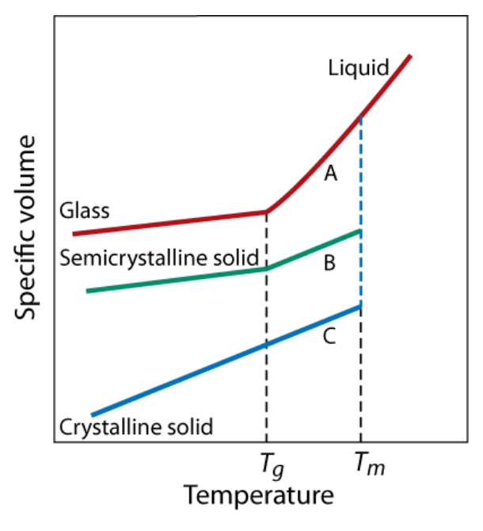
In the specific volume versus temperature plot, why do curves B and C exhibit a vertical jump at $T_m$ whereas curve A shows only a change in slope at $T_g$?
Answer and explanation
Answer: a)
Session 19, Slide 28: curve C (crystalline solid) and curve B (semicrystalline solid) contain ordered crystals that undergo a first-order melting transformation at $T_m$, causing an abrupt increase in specific volume. Curve A (amorphous glass) has no crystals to melt, so it only increases its thermal expansion slope at $T_g$.
Why the other options are wrong:
- b) Incorrect mechanism: heating across $T_g$ or $T_m$ involves physical chain-segment mobility, not covalent crosslinking reactions.
- c) All three curves represent polymeric solids (amorphous glass, semicrystalline polymer, and crystalline polymer), not ceramics.
- d) Inverts the density ranking: crystalline and semicrystalline solids pack tighter and have lower specific volume (higher density) than the amorphous glass.
Session 19, Slide 28.
Question 4 · Density versus temperature and the undercooled liquid

On the density versus temperature plot, what state does the bottom (amorphous) curve occupy between $T_g$ and $T_m$, and how do the densities of the three polymer structures compare at a temperature below $T_g$?
Answer and explanation
Answer: c)
Session 19, Slides 24 and 28: on the density plot, the amorphous curve passes from the glass below $T_g$ into the undercooled liquid between $T_g$ and $T_m$, joining the liquid above $T_m$. Because ordered chain folding packs chains more efficiently than a random tangle, $\rho_{\text{crystalline}} > \rho_{\text{semicrystalline}} > \rho_{\text{glass}}$ at every temperature below $T_m$.
Why the other options are wrong:
- a) Inverts the density ranking (glass is the least dense, not the most dense) and misnames the labelled undercooled liquid region.
- b) Places semicrystalline density above fully crystalline density and calls the region between $T_g$ and $T_m$ a molten fluid instead of an undercooled liquid.
- d) An amorphous polymer cannot become a crystalline solid between $T_g$ and $T_m$, and crystalline density strictly exceeds semicrystalline density.
Session 19, Slides 24 and 28.
Question 5 · Why Tg is always lower than Tm
For any semicrystalline polymer, the glass transition temperature $T_g$ is lower than the melting temperature $T_m$ because:
Answer and explanation
Answer: b)
Session 19, Slides 24 and 28: amorphous regions are disordered and less densely packed (more free volume, weaker net interchain attraction), so cooperative rotation of backbone segments begins at a lower temperature $T_g$. Breaking the tightly packed, ordered chain folds of crystalline lamellae demands significantly more thermal energy, so $T_m > T_g$.
Why the other options are wrong:
- a) Neither $T_g$ nor $T_m$ breaks covalent backbone bonds; both transitions overcome secondary interchain barriers and conformational barriers.
- c) Inverts the packing reality: crystalline regions are denser ($\rho_c > \rho_a$) and experience stronger net secondary interactions per unit volume than amorphous regions.
- d) Both $T_g$ and $T_m$ occur at well-defined thermal energy levels regardless of whether the transition is approached by heating or cooling (under equilibrium/quasi-static conditions).
Session 19, Slides 24 and 28.
Question 6 · Kelvin ratio Tg/Tm for PVC
Polyvinyl chloride (PVC) has a glass transition temperature $T_g = 87\,^\circ\text{C}$ and a melting temperature $T_m = 204\,^\circ\text{C}$. Using $0\,^\circ\text{C} = 273\text{ K}$, what is the ratio $T_g / T_m$ on the absolute kelvin scale?
Answer and explanation
Answer: a)
Converting both temperatures to kelvin gives $T_g = 87 + 273 = 360\text{ K}$ and $T_m = 204 + 273 = 477\text{ K}$, so $T_g / T_m = 360 / 477 = 0.755$, which lies inside the empirical rule of thumb $T_g \approx (0.5\text{–}0.8)\,T_m$ in kelvin.
Why the other options are wrong:
- b) Computed directly in Celsius ($87 / 204 = 0.426$) without converting to the absolute kelvin scale.
- c) Inverted ratio $T_m / T_g = 477 / 360 = 1.325$, which exceeds unity and violates $T_g < T_m$.
- d) Corresponds to polypropylene ($T_g = -20\,^\circ\text{C} = 253\text{ K}$, $T_m = 166\,^\circ\text{C} = 439\text{ K}$), not PVC.
Session 19, Slide 29; Session 20, Slide 8 (with standard kelvin conversion for the $T_g/T_m$ ratio).
Question 7 · Temperature scale in the Tg to Tm rule of thumb
The empirical relation $T_g \approx (0.5\text{–}0.8)\,T_m$ relating the glass transition and melting temperatures of semicrystalline polymers holds when both temperatures are expressed in:
Answer and explanation
Answer: d)
Both $T_g$ and $T_m$ measure the thermal energy required to activate chain-segment rotation and crystal melting, respectively, so their ratio is meaningful only on an absolute scale starting at zero thermal energy (kelvin). In Celsius, polymers like polyethylene ($T_g = -110\,^\circ\text{C}$) or polypropylene ($T_g = -20\,^\circ\text{C}$) give negative ratios that break the $0.5\text{–}0.8$ rule.
Why the other options are wrong:
- a) Fails immediately whenever $T_g < 0\,^\circ\text{C}$ (for example, PE and PP), which would produce a negative ratio.
- b) Degrees Fahrenheit is an arbitrary shifted scale whose zero does not correspond to zero thermal energy.
- c) Mixing Celsius and kelvin in a dimensionless ratio yields unit-inconsistent, physically meaningless numbers.
Session 19, Slides 28–29; Session 20, Slide 8.
Question 8 · Heating path across the molecular weight-temperature map
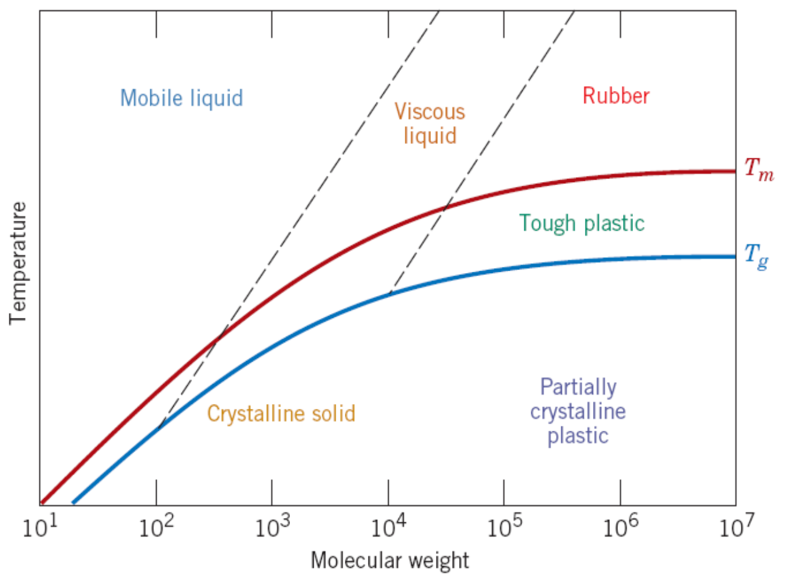
Following the vertical line at molecular weight $M = 10^5\text{ g/mol}$ on the molecular weight–temperature diagram from low temperature to high temperature, which sequence of regions does the polymer traverse?
Answer and explanation
Answer: c)
Session 19, Slide 30: at $M = 10^5\text{ g/mol}$, the vertical path lies below $T_g$ in the Partially crystalline plastic region, crosses $T_g$ into the Tough plastic region between $T_g$ and $T_m$, and crosses $T_m$ into the Rubber region at high temperature.
Why the other options are wrong:
- a) Describes a low molecular weight around $M \approx 10^3\text{ g/mol}$, not $M = 10^5\text{ g/mol}$.
- b) Places the mobile liquid between the solid and rubbery states, whereas
Mobile liquidlies at low $M$ and high $T$. - d) Reverses the lower two regions (tough plastic sits above $T_g$, not below it) and lands in
Viscous liquid($10^3\text{–}10^4\text{ g/mol}$ range) instead ofRubber.
Session 19, Slide 30.
Question 9 · Effect of molecular weight on Tg and Tm
As the molecular weight of a linear polymer increases from $10^2\text{ g/mol}$ to $10^6\text{ g/mol}$, what happens to its glass transition temperature $T_g$ and melting temperature $T_m$?
Answer and explanation
Answer: a)
Session 19, Slides 29 and 30: increasing molecular weight reduces the concentration of mobile chain ends and increases entanglements, lowering chain mobility so both $T_g$ and $T_m$ rise steeply at low $M$ and then approach asymptotic plateaus above roughly $10^5\text{ g/mol}$.
Why the other options are wrong:
- b) Inverts the effect: longer chains have fewer free chain ends per unit volume and higher entanglement density, reducing mobility and raising $T_g$ and $T_m$.
- c) Both $T_g$ and $T_m$ depend on molecular weight at low $M$ and both level off at high $M$; neither grows linearly forever.
- d) Absolute temperature cannot drop below $0\text{ K}$, and entanglements increase $T_g$ rather than lowering it.
Session 19, Slides 29–30.
Question 10 · Why low-molecular-weight polymers fail to form tough plastics
Why does a polymer with a very low molecular weight ($M \approx 10^2\text{–}10^3\text{ g/mol}$) fail to form a tough plastic or rubbery solid above its transition temperatures?
Answer and explanation
Answer: d)
Session 19, Slide 30: in the $10^2\text{–}10^3\text{ g/mol}$ regime, the chains behave like small molecules—too short to entangle and hold together between $T_g$ and $T_m$ or above $T_m$—so the Tough plastic and Rubber regimes vanish, leaving only Crystalline solid, Mobile liquid, and Viscous liquid.
Why the other options are wrong:
- a) Low-$M$ linear oligomers are short chains without crosslinks, not densely crosslinked networks.
- b) In the diagram, the $T_m$ curve remains above the $T_g$ curve across the full molecular-weight range.
- c) Transition from solid to mobile/viscous liquid at low $M$ is physical melting at low temperature, not chemical decomposition.
Session 19, Slide 30.
B85 — Structural factors controlling Tg and Tm
Ten test questions on polymers, written for this portal in the style of Part I of Assessment Test III. Each question has four options and only one is right. Answer all ten before opening any explanation.
Question 1 · Rising Tg across PE, PP and PVC
In the series polyethylene ($\mathrm{-CH_2{-}CH_2-}$, $T_g = -120\,^\circ\text{C}$), polypropylene ($\mathrm{-CH_2{-}CH(CH_3)-}$, $T_g = -15\,^\circ\text{C}$), and polyvinyl chloride ($\mathrm{-CH_2{-}CHCl-}$, $T_g = 90\,^\circ\text{C}$), the strong rise in $T_g$ is caused primarily by:
Answer and explanation
Answer: c)
January 2017 ordinary final exam, Q8(a) (and Session 19, Slide 29): replacing an $-\text{H}$ atom in PE with a larger $-\text{CH}_3$ pendant group in PP sterically hinders backbone C–C rotation (raising conformational energy and $T_g$), and introducing the polar $-\text{Cl}$ group in PVC adds strong dipolar intermolecular attractions and steric hindrance, pushing $T_g$ to $\approx 87\text{–}90\,^\circ\text{C}$.
Why the other options are wrong:
- a) Raising $T_g$ requires higher conformational energy barriers to rotation, not lower ones, and the backbone remains C–C single bonds.
- b) PE, PP, and PVC are linear/branched thermoplastics held together by secondary forces, not covalently crosslinked networks.
- d) Higher molecular weight raises $T_g$ rather than lower MW, and dipolar asymmetry raises $T_g$.
MATERIALS_FINALEXAM_2017_ORD.pdf, p. 5 Q8(a); Session 19, Slide 29.
Official examQuestion 2 · Why crosslinking raises Tg
Why does introducing covalent crosslinking between polymer chains increase the glass transition temperature $T_g$?
Answer and explanation
Answer: a)
2016 extraordinary final exam, Q8(a) (and Session 19, Slides 22, 29, 46): $T_g$ marks the onset of coordinated segmental motion in amorphous regions. Covalent crosslinks tie neighbouring chains together, directly opposing rotational and translational segment mobility and thus demanding a higher temperature ($T_g$) to activate movement.
Why the other options are wrong:
- b) Crosslinking actually prevents crystallization (crosslinked polymers are amorphous), so it cannot create crystalline lamellae.
- c) Crosslinking ties chains into a single larger network rather than cutting them into shorter molecules.
- d) Crosslinks add strong covalent bridges between chains rather than replacing backbone bonds with weak secondary forces.
MATERIALS_FINALEXAM_2016_EXTRA_SOL.pdf, p. 4 Q8(a); Session 19, Slides 22, 29 and 46.
Official examQuestion 3 · Ordering vinyl polymers by Tg
Order the following vinyl polymers $[\mathrm{-CH_2{-}CHX-}]_n$ from lowest to highest glass transition temperature $T_g$:
- Polystyrene (PS, $X = \mathrm{-C_6H_5}$)
- High-density polyethylene (HDPE, $X = \mathrm{-H}$)
- Polyacrylonitrile (PAN, $X = \mathrm{-C{\equiv}N}$)
- Polypropylene (PP, $X = \mathrm{-CH_3}$)
- Polyvinyl chloride (PVC, $X = \mathrm{-Cl}$)
Answer and explanation
Answer: d)
Session 19, Slide 29 gives the exact values: HDPE ($\mathrm{-H}$, $-110\,^\circ\text{C}$) $<$ PP ($\mathrm{-CH_3}$, $-20\,^\circ\text{C}$) $<$ PVC ($\mathrm{-Cl}$, $87\,^\circ\text{C}$) $<$ PS ($\mathrm{-C_6H_5}$, $100\,^\circ\text{C}$) $<$ PAN ($\mathrm{-C{\equiv}N}$, $150\,^\circ\text{C}$). Bulky phenyl rings and strongly polar nitrile groups raise rotational barriers and interchain attractions even further than chlorine.
Why the other options are wrong:
- a) Swaps PS ($100\,^\circ\text{C}$) and PVC ($87\,^\circ\text{C}$).
- b) Swaps HDPE ($-110\,^\circ\text{C}$) and PP ($-20\,^\circ\text{C}$).
- c) Reverses the low-$T_g$ polyolefin sequence and swaps PS with PAN.
Session 19, Slide 29.
Question 4 · Effect of very bulky pendant rings on Tg

Comparing the repeat units and glass transition temperatures shown in the diagram, why does polyvinylcarbazole (PVK) reach $T_g = 210\,^\circ\text{C}$ compared with $100\,^\circ\text{C}$ for polystyrene (PS) and $-120\,^\circ\text{C}$ for polyethylene (PE)?
Answer and explanation
Answer: b)
Session 19, Slides 16 and 29: conformational changes occur by rotation around C–C single bonds. Bulky pendant groups sterically obstruct this rotation, raising the conformational energy barrier. PVK's rigid tricyclic carbazole side group impedes backbone rotation far more severely than PS's single phenyl group or PE's tiny hydrogen atoms, elevating $T_g$ to $210\,^\circ\text{C}$.
Why the other options are wrong:
- a) Bulky irregular side groups reduce crystallinity rather than raising it; PVK's high $T_g$ is due to steric hindrance of amorphous segment rotation.
- c) The diagram explicitly shows the identical $\mathrm{-[CH_2{-}CH]-}$ carbon–carbon backbone in all four polymers.
- d) Higher flexibility and larger $\Delta S$ lower $T_g$ (Slide 29), whereas steric rigidity raises conformational energy and raises $T_g$.
Session 19, Slides 16 and 29.
Question 5 · Backbone stiffness and aromatic rings
Referring to backbone chain stiffness and molecular structure factors controlling $T_g$, which one of the following statements is TRUE:
Answer and explanation
Answer: c)
Session 19, Slide 29 and Session 20, Slide 9: rigid aromatic (phenylene) rings in the polymer backbone (as in polycarbonate and polysulfone) or bulky side groups stiffen the chain, impede segmental rotation, raise conformational energy, and therefore increase both $T_g$ and $T_m$.
Why the other options are wrong:
- a) Inverts the effect of aromatic rings: planar conjugated rings cannot rotate freely and stiffen the backbone, raising $T_g$.
- b) Ether $\mathrm{-O-}$ and methylene $\mathrm{-CH_2-}$ segments increase chain flexibility and mobility, which lowers $T_g$.
- d) Stronger intermolecular interactions raise the energy barrier to segment motion and increase $T_g$ (Slide 29).
Session 19, Slide 29; Session 20, Slide 9.
Question 6 · Symmetry, flexibility and intermolecular interactions
Regarding structural factors that govern the glass transition temperature $T_g$, which one of the following statements is FALSE:
Answer and explanation
Answer: d)
Session 19, Slide 29 explicitly lists: ↑ Symmetry => ↓ dipolar moment => ↓ Tg. Symmetric substitution (such as $\mathrm{-CF_2-}$ or $\mathrm{-C(CH_3)_2-}$ compared with asymmetric polar vinyl chains) reduces the net dipole moment per repeat unit and reduces $T_g$. Statement d is false.
Why the other options are wrong:
- a) True: Slide 29 states
↑ Mobility => ↓ conformational energy and ↑ ΔS => ↓ Tg. - b) True: Slide 29 states
↑ M => ↓ Chain Mobility => ↑ Tg(and Slide 30 plots the rise). - c) True: Slide 29 states
↑ Interactions => ↑ conformational energy => ↑ Tg.
Session 19, Slides 29–30.
Question 7 · Hydrogen bonding and stiff linkages in nylon and engineering plastics
Nylon 6,6 ($T_m \approx 250\text{–}266\,^\circ\text{C}$) and polysulfone ($T_m \approx 315\,^\circ\text{C}$) possess substantially higher melting temperatures than polyethylene ($T_m \approx 110\text{–}137\,^\circ\text{C}$) because:
Answer and explanation
Answer: a)
Session 19, Slide 26 and Session 20, Slides 8–9: nylon 6,6 is a linear polyamide whose polar amide ($\mathrm{-CO{-}NH-}$) groups form strong hydrogen bonds between neighbouring chains, raising crystallinity and $T_m$ to $250\text{–}266\,^\circ\text{C}$. Polysulfone combines rigid phenylene rings with polar sulfone ($\mathrm{-SO_2-}$) linkages, pushing $T_m$ to $315\,^\circ\text{C}$.
Why the other options are wrong:
- b) Incorrect chemistry: PE is the non-polar $\mathrm{-CH_2-}$ polymer, whereas nylon and polysulfone carry polar heteroatom linkages.
- c) Nylon 6,6 and polysulfone are engineering thermoplastics with reversible melting temperatures, not thermosets.
- d) Both repeat units are much larger and heavier than ethylene, and stronger—not weaker—attractions raise $T_m$.
Session 19, Slide 26; Session 20, Slides 8–9.
Question 8 · Effect of branching and density on melting temperature
Which of the following statements comparing the melting temperatures $T_m$ of polymer pairs at fixed molecular weight is TRUE:
Answer and explanation
Answer: b)
Session 19, Slides 24–27 and Problems T9 Q4(a)–(b): for the same polymer at fixed molecular weight, higher density directly implies a higher degree of crystallinity ($\rho_c > \rho_a$), and greater crystallinity raises $T_m$ because more thermal energy is required to melt well-packed crystalline lamellae.
Why the other options are wrong:
- a) Inverts
Problems T9 Q4(a): branches hinder tight chain packing, lowering crystallinity and lowering $T_m$ (linear PE $>$ branched PE). - c) Inverts Slide 27 (
↑ Crystallinity => Tm ↑): better-packed crystals require more thermal energy to melt. - d) Contradicts
Problems T9 Q4(d): atactic PP is amorphous and lacks a melting temperature $T_m$, whereas syndiotactic PP crystallizes and melts cleanly.
Problems T9_Polymers.pdf, Problem 4; Session 19, Slides 24–27.
Question 9 · Ranking Tm across tacticity, polarity and molecular weight
Consider two pairs of polymers: (I) linear syndiotactic PP ($\langle M_w\rangle = 750\,000\text{ g/mol}$) vs. linear atactic PP ($\langle M_w\rangle = 500\,000\text{ g/mol}$); and (II) syndiotactic PVC ($\langle M_n\rangle = 500\,000\text{ g/mol}$) vs. linear PE ($\langle M_n\rangle = 225\,000\text{ g/mol}$). Which polymer exhibits the higher melting temperature $T_m$ in each pair?
Answer and explanation
Answer: c)
Problems T9 Q4(c)–(d) and Session 20, Slide 8: in Pair I, syndiotactic PP crystallizes regularly (whereas atactic PP is amorphous and shows no $T_m$), and also has higher $M_w$. In Pair II, syndiotactic PVC carries polar $\mathrm{-Cl}$ groups creating stronger interchain forces (and has higher $M_n$), giving $T_m \approx 204\,^\circ\text{C}$ vs. $110\text{–}137\,^\circ\text{C}$ for PE.
Why the other options are wrong:
- a) Inverts both pairs: atactic PP cannot crystallize and non-polar PE melts well below polar PVC.
- b) Correctly picks syndiotactic PP in Pair I, but wrongly predicts non-polar PE melts higher than polar PVC.
- d) Wrongly picks amorphous atactic PP as having the higher $T_m$ in Pair I.
Problems T9_Polymers.pdf, Problem 4(c)–(d); Session 19, Slides 26–27; Session 20, Slide 8.
Question 10 · Matching PE, PVC and epoxy to their Tg values
Order the three polymers polyethylene (PE), polyvinyl chloride (PVC), and cured epoxy resin from lowest to highest glass transition temperature $T_g$, matching the approximate values $-110\,^\circ\text{C}$, $80\,^\circ\text{C}$, and $140\,^\circ\text{C}$:
Answer and explanation
Answer: b)
2014 extraordinary final exam, Q5(a) (and Session 19, Slide 29; Session 20, Slide 11): PE has a simple flexible $\mathrm{-CH_2-CH_2-}$ backbone with weak dispersion forces ($T_g \approx -110\,^\circ\text{C}$); PVC adds polar $\mathrm{-Cl}$ side groups raising interchain forces ($T_g \approx 80\text{–}87\,^\circ\text{C}$); and epoxy resin is a heavily crosslinked 3D covalent network with aromatic rings restricting segmental motion ($T_g \approx 140\,^\circ\text{C}$).
Why the other options are wrong:
- a) Swaps PE and PVC, overlooking the stiffening and polar attraction of the chlorine substituent in PVC.
- c) Places linear thermoplastic PVC above a densely crosslinked epoxy network.
- d) Assigns $-110\,^\circ\text{C}$ to a rigid crosslinked thermoset, which works below $T_g$ at room temperature.
MATERIALS_FINALEXAM_2014_EXTRA.pdf, p. 6 Q5(a); Session 19, Slide 29; Session 20, Slide 11.
B86 — Stress-strain curves and deformation of polymers
Ten test questions on polymers, written for this portal in the style of Part I of Assessment Test III. Each question has four options and only one is right. Answer all ten before opening any explanation.
Question 1 · Polymer deformation, structure and monomer types
Which of the following statements is TRUE:
Answer and explanation
Answer: c)
2020 Assessment Test III, Model B Q6 (and Session 19, Slides 39 and 43): deforming a thermoplastic polymer orients its macromolecular chains parallel to the stretching axis, leading to more effective secondary interactions between them and increasing both strength and stiffness.
Why the other options are wrong:
- a) False: thermosets are densely crosslinked 3D covalent networks and are amorphous (Session 20, Slides 6 and 36).
- b) False: thermoplastics have linear or branched chains held by weak van der Waals bonds, so they soften and flow when reheated (Session 20, Slides 5 and 7).
- d) False: a homopolymer contains only one type of monomer, whereas a copolymer combines two or more monomer types (Session 19, Slide 20).
MATERIALS_THIRDPARTIAL_2020.pdf, p. 2 Q6; Session 19, Slides 20, 39 and 43; Session 20, Slides 5–7 and 36.
Official examQuestion 2 · Where plastic deformation starts and effect of crystallinity
Referring to the plastic deformation and properties of a semicrystalline polymer, which one of the following statements is TRUE:
Answer and explanation
Answer: b)
January 2014 ordinary final exam, Q6 (official UC3M key) and Session 19, Slides 27, 41 and 43: plastic deformation of a semicrystalline polymer starts in the softer amorphous regions with elongation of amorphous tie chains, followed by lamellar tilting, crystalline block separation, and alignment. Higher crystallinity increases chain packing and intermolecular bonding, raising both mechanical strength and melting temperature $T_m$.
Why the other options are wrong:
- a) Inverts the sequence: tie chains in the disordered amorphous layers deform before the stiff crystalline lamellae tilt and break into blocks.
- c) Inverts the trend: higher crystallinity increases packing density and intermolecular bonding, thereby increasing strength and $E$ (Slide 43).
- d) Confuses semicrystalline and amorphous polymers: crystalline regions are what produce $T_m$ (Slides 23 and 28).
MATERIALS_FINALEXAM_COMPILATION_2013-2017.pdf, p. 16 (2014 ORD Q6 official key); Session 19, Slides 27, 41 and 43.
Official examQuestion 3 · Classifying polymer stress-strain curves

Which polymer categories correspond respectively to the green curve (Brittle Plastic), the red curve (Hard & Tough Plastic ending with Strain Hardening), and the blue curve (Elastomer)?
Answer and explanation
Answer: d)
Session 19, Slides 32, 34–40, and 44: the steep linear green curve fractures at small strain without yielding (typical of a brittle thermoset or a glassy thermoplastic well below $T_g$). The red curve yields, drops into neck propagation (cold drawing plateau), and strain-hardens as chains align (typical of a ductile semicrystalline thermoplastic like 6,6-nylon). The blue curve reaches very large, mostly reversible strains at low stress (an elastomer).
Why the other options are wrong:
- a) Completely scrambles the three classes, putting soft rubber on the steepest brittle curve and glassy PS on the high-strain elastomer curve.
- b) Assigns ductile nylon to the brittle curve and rigid vulcanized thermoset to the soft elastomer curve.
- c) Assigns rigid phenolic resin (a brittle thermoset) to the elastomer curve and ductile LDPE to the brittle curve.
Session 19, Slides 32, 34–40 and 44.
Question 4 · Mechanical behaviour of polymers compared with metals
Regarding the tensile properties of polymers compared with metals, which one of the following statements is FALSE:
Answer and explanation
Answer: c)
Session 19, Slides 32–33 and 36: for polymers, Tensile strength: stress at which fracture occurs (Slide 33), which may lie either above or below the yield peak $\sigma_y$ depending on whether strain hardening occurs before failure. Statement c is false.
Why the other options are wrong:
- a) True: Slide 32 lists $E = 0.007\text{–}4\text{ GPa}$ for polymers against $48\text{–}410\text{ GPa}$ for metals.
- b) True: Slide 36 explicitly contrasts polymer yielding at $5\text{–}10\%$ strain with metallic yielding below $0.1\%$ strain.
- d) True: Slide 32 lists $\%\varepsilon_m > 1000\%$ possible for polymers against $< 100\%$ for metals.
Session 19, Slides 32, 33 and 36.
Question 5 · Microscopic sequence of plastic deformation in semicrystalline polymers
Arrange the four irreversible stages that follow elastic deformation when a semicrystalline polymer is stretched to high strain in tension:
- Separation of crystalline block segments and initial alignment with the tensile axis
- Orientation of both crystalline block segments and tie chains parallel to the tensile axis
- Elongation of amorphous tie chains between lamellae
- Tilting of lamellar chain folds toward the loading direction
Answer and explanation
Answer: c)
Session 19, Slide 41 and 2014 ORD Q6 official key: following initial elastic stretching, plastic deformation begins with (3) elongation of the amorphous tie chains, then (4) tilting of the lamellar chain folds, followed by (1) separation of crystalline block segments and alignment with the tensile axis, and finally (2) full orientation of both block segments and tie chains along the tensile axis.
Why the other options are wrong:
- a) Places block-segment separation before lamellar chain-fold tilting.
- b) Places lamellar tilting before tie-chain elongation in the amorphous layers.
- d) Incorrectly starts plastic deformation by breaking crystalline blocks apart before deforming the amorphous tie chains.
Session 19, Slide 41; MATERIALS_FINALEXAM_COMPILATION_2013-2017.pdf, p. 16 (2014 ORD Q6).
Question 6 · Why necking propagates along a polymer specimen
After a ductile thermoplastic passes its yield peak and forms a local neck, why does the neck propagate along the specimen length at nearly constant stress instead of narrowing locally until prompt fracture?
Answer and explanation
Answer: d)
Session 19, Slides 34, 37 and 38: as the neck forms, polymer chains unravel and align parallel to the tensile axis. Because oriented chains interact far more strongly, the necked zone becomes stronger and harder to stretch than the unnecked shoulders, so the neck propagates steadily across the gauge length (cold drawing) rather than sharpening to premature failure.
Why the other options are wrong:
- a) Polymers do not deform by metallic crystal dislocation slip at grain boundaries.
- b) Cold drawing proceeds below $T_m$ by solid-state chain unravelling, not local melting.
- c) Unoriented thermoplastic shoulders contain no crosslinks; they deform progressively because they are weaker than the aligned neck.
Session 19, Slides 34, 37 and 38.
Question 7 · Strain hardening after cold drawing
Once cold drawing has propagated a neck along the entire gauge length of a thermoplastic specimen, the stress rises sharply until fracture because:
Answer and explanation
Answer: b)
Session 19, Slides 39–40: once the whole gauge section is necked, further extension stretches a fully oriented structure whose chains lie parallel to the applied load. An oriented polymer is substantially stronger and stiffer than an isotropic one, producing strain hardening until no further alignment is possible and failure occurs.
Why the other options are wrong:
- a) Mechanical stretching at room temperature does not drive polymerization or increase molecular weight.
- c) Drawing destroys spherical spherulites and replaces them with an anisotropic fibrillar alignment, increasing—not softening—strength.
- d) Viscous flow above $T_g$ lowers stress rather than producing a steep upward strain-hardening tail.
Session 19, Slides 39–40.
Question 8 · Rolling versus fast-cooled casting for polymer strength
When the same thermoplastic polymer is shaped either by rolling (mechanical deformation) or by casting with fast cooling, which method produces higher strength in the working direction and why?
Answer and explanation
Answer: a)
Problems T9 Q3 and Session 19, Slides 26, 38–39 and 43: rolling deforms the solid polymer and orients the macromolecular chains parallel to the rolling direction, creating stronger secondary interactions and higher strength (like cold drawing). Fast-cooled casting freezes the random coils from the melt into smaller crystals and larger amorphous regions with weaker isotropic properties.
Why the other options are wrong:
- b) Inverts Slide 26: faster cooling gives smaller crystals and less time for ordering, not maximum crystal growth.
- c) Cooling a thermoplastic does not create covalent crosslinks between chains.
- d) Ignores microstructure and chain orientation: oriented and crystalline thermoplastics are dramatically stronger than quenched isotropic ones.
Problems T9_Polymers.pdf, Problem 3; Session 19, Slides 26, 38–39 and 43.
Question 9 · Nonlinear elastic deformation of elastomers
In a tensile test of an elastomer, virtually all deformation is elastic, yet the modulus of elasticity (slope) increases markedly at large strains because:
Answer and explanation
Answer: d)
Session 19, Slide 44: an elastomer's stress–strain curve is nonlinear despite being almost completely elastic. At low strain, kinked chains between sparse crosslinks uncoil easily with little force (low slope); once straightened at several hundred percent strain, further extension must stretch primary covalent bonds along the chain, causing the modulus to rise steeply.
Why the other options are wrong:
- a) Elastomers are amorphous networks, not spherulitic semicrystalline plastics.
- b) Dislocation glide and tangling govern crystalline metals, not rubber networks.
- c) Tensile elongation reduces cross-sectional area and sparse crosslinks prevent permanent viscous flow.
Session 19, Slide 44.
Question 10 · Initial elastic modulus from linear polymer stress-strain data
In the initial linear elastic region of a tensile test, a rigid thermoplastic specimen sustains a tensile stress of $24\text{ MPa}$ at a reversible strain of $\varepsilon = 0.012$. What is its modulus of elasticity $E$?
Answer and explanation
Answer: a)
Session 19, Slides 32 and 35: in the linear elastic region where Hooke's law holds, $E = \sigma / \varepsilon = 24\text{ MPa} / 0.012 = 2000\text{ MPa} = 2.0\text{ GPa}$, which falls squarely inside the $0.007\text{–}4\text{ GPa}$ range typical of polymers.
Why the other options are wrong:
- b) Multiplied stress by strain ($24\text{ MPa} \times 0.012 = 0.288\text{ MPa}$, misread as $\text{GPa}$) instead of dividing $\sigma / \varepsilon$.
- c) Misplaced a factor of 10 in converting $2000\text{ MPa}$ to $\text{GPa}$ ($2000\text{ MPa} = 2.0\text{ GPa}$, not $20.0\text{ GPa}$).
- d) Inverted Hooke's law as $\varepsilon / \sigma$ ($0.012 / 24 = 5.0\times 10^{-4}\text{ MPa}^{-1}$, scaled by 100).
Session 19, Slides 32 and 35.
B87 — Temperature, strain rate and viscoelasticity
Ten test questions on polymers, written for this portal in the style of Part I of Assessment Test III. Each question has four options and only one is right. Answer all ten before opening any explanation.
Question 1 · Effect of temperature and strain rate on thermoplastics
For a thermoplastic polymer tested in uniaxial tension, how do decreasing the temperature or increasing the strain rate alter its mechanical response?
Answer and explanation
Answer: a)
January 2012 ordinary final exam, Q9; 2012 extraordinary final exam, Q8; and Session 19, Slide 42: lowering temperature or raising strain rate restricts molecular mobility and prevents chains from unravelling during deformation. Consequently, Young's modulus $E$ and strength rise while percent elongation at fracture drops, shifting the response from ductile toward brittle.
Why the other options are wrong:
- b) Incorrect ductility trend: stiffening the polymer by cooling or faster loading makes chain disentanglement harder and reduces strain at fracture.
- c) Describes the effect of increasing temperature or decreasing strain rate, not cooling or faster stretching.
- d) Unlike room-temperature metals, polymer mechanical properties depend strongly on temperature and deformation rate (Slide 32: $\text{properties} = f(T, v_{\text{def}}, \text{environment})$).
MATERIALS_FINALEXAM_2012_ORD.pdf, p. 3 Q9; MATERIALS_FINALEXAM_2012_EXTRA.pdf, p. 2 Q8; Session 19, Slides 32 and 42.
Official examQuestion 2 · Temperature dependence of PMMA tensile curves

In the tensile stress–strain curves of PMMA ($T_g$ in the $86\text{–}104\,^\circ\text{C}$ range), what transition occurs as the test temperature rises above $104\,^\circ\text{C}$?
Answer and explanation
Answer: c)
Session 19, Slide 42: below $T_g$ ($-40\,^\circ\text{C}$ to $86\,^\circ\text{C}$), PMMA has frozen amorphous segments, so it displays a steep initial slope, high strength, and brittle fracture at low strain. Above $T_g$ ($104\,^\circ\text{C}$ to $140\,^\circ\text{C}$), chain segments move freely, lowering $E$ and yield stress while allowing extensive plastic deformation and necking.
Why the other options are wrong:
- a) Inverts the direction of the transition: heating above $T_g$ softens a glass rather than turning an elastomer into a glass.
- b) Above $T_g$ PMMA becomes more ductile (huge elongation at $140\,^\circ\text{C}$), not instantaneously brittle at zero strain.
- d) Heating above $T_g$ never creates a rigid crystal with higher strength; strength and modulus both decrease as $T$ rises.
Session 19, Slide 42.
Question 3 · Strain-rate dependence of PVC tensile curves

Why does PVC tested at $1\text{ mm/s}$ fail shortly after the stress peak, whereas at $0.05\text{ mm/s}$ it draws out to a large fracture strain?
Answer and explanation
Answer: a)
Session 19, Slide 42: at the higher strain rate ($1\text{ mm/s}$), chain disentanglement is restricted because the chains do not have enough time to uncoil and slide past one another, raising initial stiffness/peak stress and causing brittle failure soon after the peak.
Why the other options are wrong:
- b) Stretching a thermoplastic slowly does not induce covalent crosslinking reactions.
- c) Rapid testing causes brittle fracture near the yield peak rather than melting before the elastic limit.
- d) Mechanical testing at $0.05\text{ mm/s}$ does not break covalent C–Cl chemical bonds.
Session 19, Slide 42.
Question 4 · Time-temperature equivalence in viscoelasticity
In viscoelastic polymers, increasing the rate at which stress or strain is applied produces the same qualitative change in modulus and ductility as:
Answer and explanation
Answer: b)
Session 19, Slides 42 and 48 verbatim: An increase of this rate exerts the same effect of a decrease of temperature. Faster loading gives chain segments less time to rearrange and relax, mimicking the reduced thermal mobility of a lower temperature.
Why the other options are wrong:
- a) Raising temperature above $T_m$ increases mobility and causes melting, the exact opposite of faster loading.
- c) Reducing crystallinity increases amorphous mobility and lowers modulus above $T_g$, opposite to raising strain rate.
- d) Adding plasticizer lowers $T_g$ and softens the polymer (analogous to heating), opposite to raising strain rate.
Session 19, Slides 42 and 48.
Question 5 · Creep compliance versus relaxation modulus
Referring to viscoelastic creep and stress relaxation in polymers, which one of the following statements is TRUE:
Answer and explanation
Answer: d)
Session 19, Slides 47–48: under a constant step stress $\sigma(t) = \sigma_0 H(t)$, a viscoelastic polymer exhibits time-dependent strain growth characterized by creep compliance $J(t) = \varepsilon(t)/\sigma_0$ (in $\text{Pa}^{-1}$). Under a constant step strain $\varepsilon(t) = \varepsilon_0 H(t)$, stress decays gradually as characterized by the relaxation modulus $E_r(t) = \sigma(t)/\varepsilon_0$ (in $\text{Pa}$).
Why the other options are wrong:
- a) Confuses creep with stress relaxation and puts stress in the numerator of $J(t)$.
- b) Confuses stress relaxation with creep: stress relaxation holds strain constant while stress decreases.
- c) Neither quantity is dimensionless ($[J] = \text{Pa}^{-1}$, $[E_r] = \text{Pa}$) and both depend strongly on time and temperature.
Session 19, Slides 47–48.
Question 6 · Creep and recovery response of viscoelastic polymers

When the constant applied stress $\sigma_0$ is suddenly removed during a creep-recovery test, how does the viscoelastic strain curve behave compared with purely elastic and purely viscous solids?
Answer and explanation
Answer: a)
Session 19, Slide 47: a viscoelastic polymer combines elastic-solid and viscous-liquid behaviour. Upon unloading, the purely elastic fraction recovers instantaneously, a time-dependent viscoelastic fraction relaxes gradually, and the permanent viscous flow fraction remains unrecovered as residual strain.
Why the other options are wrong:
- b) Describes the purely elastic dotted reference line, ignoring the viscous and delayed viscoelastic terms.
- c) Describes the purely viscous dotted curve, ignoring the instantaneous and delayed elastic recovery clearly drawn on the figure.
- d) Strain cannot keep growing under zero applied stress during recovery.
Session 19, Slide 47.
Question 7 · Regimes of relaxation modulus Er(10) versus temperature
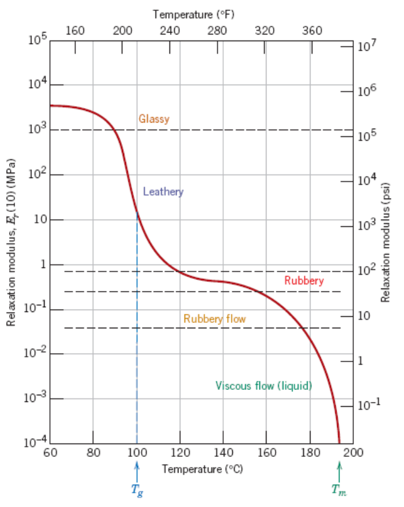
For atactic polystyrene shown in the plot of $E_r(10)$ versus temperature ($T_g = 100\,^\circ\text{C}$), which regime spans the sharp three-decade modulus drop around $T_g$ (from $\sim 10^3\text{ MPa}$ down toward $\sim 1\text{ MPa}$), and which regime forms the flat region around $120\text{–}150\,^\circ\text{C}$?
Answer and explanation
Answer: c)
Session 19, Slide 49: as temperature rises across $T_g = 100\,^\circ\text{C}$, the amorphous polymer leaves the Glassy plateau ($> 10^3\text{ MPa}$), plunges roughly three orders of magnitude through the Leathery transition region, settles onto a temporary Rubbery plateau near $0.3\text{–}0.7\text{ MPa}$ ($120\text{–}150\,^\circ\text{C}$), and then enters Rubbery flow and Viscous flow (liquid) as chains slip completely.
Why the other options are wrong:
- a) Mislabels the transition around $T_g$ as glassy (glassy lies below the drop) and the plateau as viscous flow (viscous flow drops sharply at the right).
- b) Completely inverts the temperature order of viscous flow and glassy states.
- d) Swaps the
Leatherytransition region with theRubberyplateau.
Session 19, Slide 49.
Question 8 · Identifying curves A, B and C on log Er(10) vs T
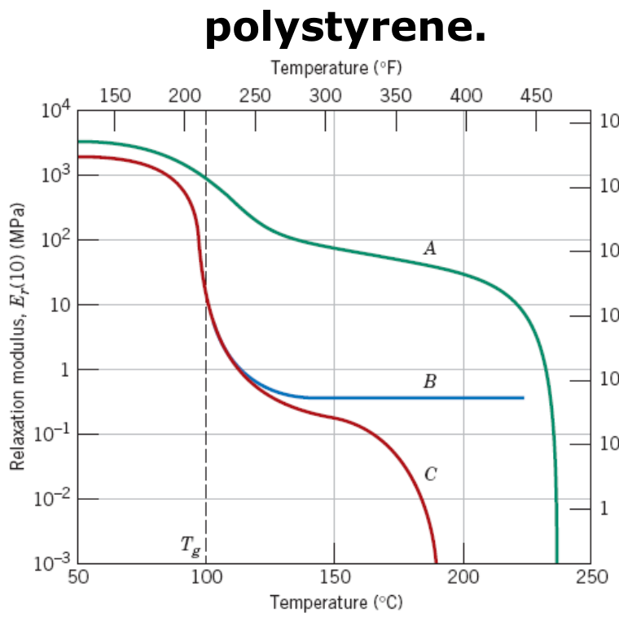
For polystyrene in the plot of $E_r(10)$ against temperature, which microstructures correspond to curves A (green), B (blue), and C (red)?
Answer and explanation
Answer: b)
Session 19, Slides 45–46 and 49 (and Problems T9 Q5–Q6): curve A stays stiff ($10^2\text{–}10^3\text{ MPa}$) above $T_g$ because crystalline isotactic regions hold the structure rigid until they melt at $T_m \approx 240\,^\circ\text{C}$. Curve B drops at $T_g$ like an amorphous polymer, but covalent crosslinks keep it on a flat rubbery plateau with no viscous flow (lightly crosslinked atactic). Curve C plunges at $T_g$ and proceeds to viscous flow (linear amorphous polystyrene).
Why the other options are wrong:
- a) Swaps crystalline isotactic (which resists softening up to $T_m$) with amorphous atactic (which drops three decades at $T_g$ and flows).
- c) Swaps the high-modulus semicrystalline curve A with the soft rubbery-plateau curve B.
- d) Completely reverses curves A and C.
Session 19, Slides 45–46 and 49; Problems T9_Polymers.pdf, Problems 5 and 6.
Question 9 · How MW, crosslinking and crystallinity shift log E vs T

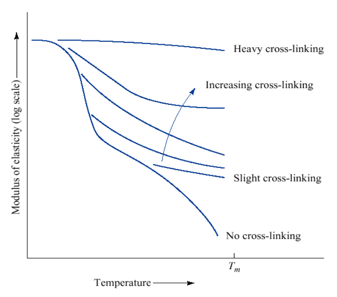
Referring to how molecular weight, crosslinking, and crystallinity shift the $\log E$ versus temperature curve of an amorphous polymer, which one of the following statements is FALSE:
Answer and explanation
Answer: d)
Problems T9 Q5 and Session 19, Slides 45–46: raising molecular weight increases chain entanglements, which extends the rubbery plateau to higher temperatures and delays the onset of viscous flow; however, below $T_g$ the glassy modulus hardly changes, and without covalent crosslinks the polymer still enters viscous flow at sufficiently high temperatures. Statement d is false.
Why the other options are wrong:
- a) True: Slide 45 and
Problems T9 Q5(c)/Q6show that crystalline lamellae reduce the drop at $T_g$ and prop up modulus until $T_m$. - b) True: Slide 46 and
Problems T9 Q5(b)show crosslinks block chain slippage, eliminating viscous flow and raising the rubbery plateau. - c) True: the top curve in Slide 46 (
Heavy cross-linking) stays nearly flat at the glassy level across temperature until thermal degradation.
Problems T9_Polymers.pdf, Problems 5 and 6; Session 19, Slides 45–46.
Question 10 · Calculating relaxed stress from Er(10)
A viscoelastic polystyrene rod is held at a constant tensile strain $\varepsilon_0 = 0.015$ at a temperature in the transition zone where its $10\text{ s}$ relaxation modulus is $E_r(10) = 400\text{ MPa}$. What is the tensile stress $\sigma(10)$ sustained by the rod at $t = 10\text{ s}$?
Answer and explanation
Answer: b)
Session 19, Slide 48 defines the relaxation modulus as $E_r(t) = \sigma(t)/\varepsilon_0$. Solving for the stress at $t = 10\text{ s}$ gives $\sigma(10) = E_r(10)\,\varepsilon_0 = 400\text{ MPa} \times 0.015 = 6.0\text{ MPa}$.
Why the other options are wrong:
- a) Misplaced decimal factor of 10 ($\sigma = 400 \times 0.0015$ instead of $0.015$).
- c) Treated strain $\varepsilon_0 = 0.015$ as $15\%$ ($0.15$) instead of $1.5\%$ ($0.015$).
- d) Divided $400\text{ MPa}$ by $15$ instead of multiplying by $\varepsilon_0 = 0.015$.
Session 19, Slide 48.
B88 — Thermoplastics, thermosets and elastomers
Ten test questions on polymers, written for this portal in the style of Part I of Assessment Test III. Each question has four options and only one is right. Answer all ten before opening any explanation.
Question 1 · Thermoplastic properties and crosslinking
Indicate which one of the following statements related to thermoplastic properties is FALSE:
Answer and explanation
Answer: a)
2020 Assessment Test III, Paper B Q1 (and Session 20, Slides 5–6, 10, 36): thermoplastics consist of linear or branched chains held together only by weak van der Waals forces with few or no crosslinks, and their shaping proceeds without chemical crosslinking reactions. Statement a is false (crosslinking describes thermosets and elastomers).
Why the other options are wrong:
- b) True: because thermoplastics melt reversibly without chemical decomposition, scrap parts can be remelted, recycled, and reused (Slides 5 and 8).
- c) True: thermoplastics flow when heated and harden again when cooled (Slides 5 and 7).
- d) True: PET (code 1) and HDPE (code 2) thermoplastics are standard materials for beverage and bleach bottles (Slide 10).
MATERIALS_THIRDPARTIAL_2020_V2.pdf, p. 4 Paper B Q1; Session 20, Slides 5–8, 10 and 36.
Official examQuestion 2 · Bonding, thermal response and solubility across polymer families
Referring to the structure, thermal stability, and solvent behaviour of thermoplastics, thermosets, and elastomers, which one of the following statements is TRUE:
Answer and explanation
Answer: c)
Session 20, Slides 5–7, 36 (and 2015 ORD Q3(b)): thermoplastics have linear or branched chains linked by weak van der Waals interactions, making them soluble, recyclable, and meltable. Thermosets have dense 3D covalent crosslinks (crosslinking >> van der Waals), so they remain amorphous, insoluble, non-meltable, and chemically degrade upon excessive heating.
Why the other options are wrong:
- a) Assigns thermoset covalent crosslinking and thermal decomposition to thermoplastics.
- b) Assigns thermoplastic linearity, crystallinity, and solubility to thermosets.
- d) Even light covalent crosslinking prevents chains from sliding freely, so elastomers do not melt and are insoluble (they swell in solvents, Slides 6 and 14).
MATERIALS_FINALEXAM_2015_ORD.pdf, p. 6 Q3(b); Session 20, Slides 5–7, 14 and 36.
Question 3 · Interchain bonding versus strain capacity in polymer classes

Comparing the three chain architectures shown, why do both thermosets and elastomers resist melting and dissolution, yet thermosets fracture at $\varepsilon \approx 4\%$ with $E \approx 10^4\text{ MPa}$ while elastomers stretch elastically to $\varepsilon > 200\%$ with very low $E$?
Answer and explanation
Answer: b)
Session 20, Slides 5–6, 14 and 36: both thermosets and elastomers have covalent crosslinks preventing chain separation, so neither melts or dissolves. However, heavy crosslinking in thermosets creates a tight 3D network ($E \approx 10^4\text{ MPa}$, $\varepsilon \approx 4\%$), whereas sparse crosslinks in elastomers leave long flexible coiled segments free to uncoil (> $200\%$ elastic strain) and swell in solvents.
Why the other options are wrong:
- a) Thermosets are amorphous (not crystalline), and elastomers possess strong covalent C–C/C=C bonds along their backbone.
- c) As explicitly labelled on the diagram, elastomers have light covalent crosslinking (
~ Crosslinking), not merely van der Waals forces, and do not melt. - d) Crosslinked thermosets form macroscopic 3D networks of essentially infinite molecular weight; low failure strain arises from dense network rigidity, not short chains.
Session 20, Slides 5–6, 14 and 36.
Question 4 · Commodity thermoplastic recycling codes and uses
Which set correctly matches the resin recycling identification codes 1 through 6 with their commodity thermoplastics and typical consumer uses?
Answer and explanation
Answer: d)
Session 20, Slide 10 establishes the standard commodity thermoplastic codes: 1 – PET (transparent, flexible; carbonated beverage bottles), 2 – HDPE (rigid; bleach bottles), 3 – PVC (pipes, bath curtains), 4 – LDPE (very flexible; plastic bags), 5 – PP (caps, plugs, syringes), and 6 – PS (brittle, shiny; food packaging).
Why the other options are wrong:
- a) Scrambles all six recycling codes (1 is PET, 2 is HDPE, 3 is PVC, 4 is LDPE, 5 is PP, 6 is PS).
- b) Swaps codes 2 (HDPE), 4 (LDPE), and 5 (PP).
- c) Swaps codes 1 (PET), 3 (PVC), and 6 (PS).
Session 20, Slide 10.
Question 5 · Engineering thermoplastics and thermal capability

Polysulfone ($T_m = 315\,^\circ\text{C}$), polycarbonate ($T_m = 270\,^\circ\text{C}$), and nylon 6,6 ($T_m = 250\text{–}266\,^\circ\text{C}$) qualify as engineering thermoplastics with good properties between $0$ and $100\,^\circ\text{C}$ because their chemical structures contain:
Answer and explanation
Answer: a)
Session 20, Slides 3 and 9: the repeat units show phenylene (aromatic) rings in polysulfone and polycarbonate plus strongly polar sulfone ($\mathrm{-SO_2-}$), carbonate ($\mathrm{-O{-}CO{-}O-}$), and hydrogen-bonding amide ($\mathrm{-CO{-}NH-}$) groups. These structural features stiffen the backbone and increase intermolecular forces, driving melting points into the $250\text{–}315\,^\circ\text{C}$ engineering range.
Why the other options are wrong:
- b) Describes vulcanized elastomers/polyethylene rather than uncrosslinked engineering thermoplastics containing heteroatoms and benzene rings.
- c) Random branching and non-polar side groups lower crystallinity and $T_m$ instead of producing high-melting engineering plastics.
- d) Melting points of $250\text{–}315\,^\circ\text{C}$ are far above $100\,^\circ\text{C}$, and engineering thermoplastics require high molecular weight.
Session 20, Slides 3 and 9.
Question 6 · Curing chemistry of epoxy and unsaturated polyester thermosets
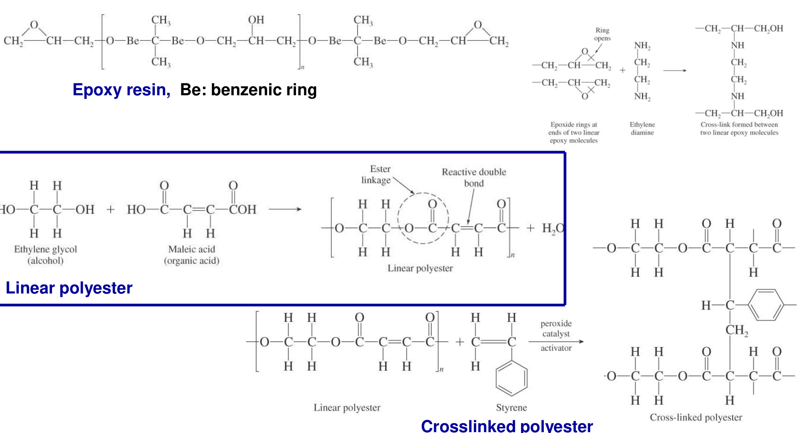
Referring to the curing chemistry of epoxy and unsaturated polyester thermosets shown, which statement is TRUE:
Answer and explanation
Answer: b)
Session 20, Slide 12: linear epoxy molecules carrying epoxide rings at each end react with ethylene diamine, opening the rings to form covalent bridges between chains. In unsaturated polyesters, ethylene glycol and maleic acid condense into a linear polyester retaining reactive $\mathrm{C{=}C}$ double bonds, which styrene and a peroxide catalyst then crosslink into a 3D network.
Why the other options are wrong:
- a) Describes physical crystallization of a thermoplastic, not chemical crosslinking of thermosets.
- c) Thermoset curing is an irreversible chemical reaction creating covalent crosslinks, not reversible van der Waals bonding.
- d) Sulfur plus lead carbonate is the vulcanization process for unsaturated natural rubber (Slide 14), not epoxy or polyester curing.
Session 20, Slides 12 and 14.
Question 7 · Engineering properties of thermosetting polymers
Which of the following statements about thermosetting polymers (such as epoxies, phenolics, and polyurethanes) is FALSE:
Answer and explanation
Answer: c)
Session 20, Slides 11 and 13: thermosets exhibit resistance to thermal creep and deformation under low loads because their dense covalent network prevents viscous chain slippage, and because they do not melt and are insoluble, they cannot be recycled by remelting. Statement c is false.
Why the other options are wrong:
- a) True: Slide 11 explicitly lists high thermal stability, high stiffness, and high dimensional stability as advantages of thermosets.
- b) True: Slide 13 lists composites matrices, adhesives, coatings, electrical moldings, and foams across phenolics, polyesters, epoxies, and urethanes.
- d) True: Slide 11 explicitly lists light weight and high electrical and thermal insulation among thermoset advantages.
Session 20, Slides 11 and 13.
Question 8 · Effect of vulcanization on natural rubber

When natural rubber (cis-polyisoprene) is vulcanized using sulfur and lead carbonate, what happens to its chain structure and tensile stress–strain behaviour?
Answer and explanation
Answer: d)
Session 20, Slide 14: vulcanization introduces light sulfur crosslinks across chains of natural rubber, preventing permanent chain slippage without destroying coiled-chain elasticity. As shown on the stress–strain curves, vulcanized natural rubber rises steeply in stiffness and strength (reaching roughly $3000\text{ psi} \approx 21\text{ MPa}$ near $600\%$ strain) compared with unvulcanized rubber ($\sim 1900\text{ psi} \approx 13\text{ MPa}$ near $800\%$ strain).
Why the other options are wrong:
- a) Crosslinking ties chains together into an insoluble, non-melting network, never a thermoplastic liquid.
- b) Sulfur bridges connect chains laterally rather than creating uncrosslinked linear crystallites; rubber remains amorphous.
- c) Inverts the two curves on the plot: vulcanization increases strength (from $\sim 13\text{ MPa}$ to $> 20\text{ MPa}$) and reduces strain from $\sim 800\%$ to $\sim 600\%$.
Session 20, Slide 14.
Question 9 · Cis versus trans polyisoprene and synthetic elastomers
Natural rubber (cis-polyisoprene) and synthetic rubbers such as SBR, NBR, and polychloroprene (neoprene) behave as elastomers above $T_g$, whereas gutta-percha (trans-polyisoprene) does not because:
Answer and explanation
Answer: b)
Session 19, Slide 17 and Session 20, Slides 14–15: in cis-isoprene, the $\mathrm{-H}$ and $\mathrm{-CH_3}$ groups sit on the same side of the rigid $\mathrm{C{=}C}$ double bond, producing kinked irregular chains that stay amorphous and springy. In trans-isoprene (gutta-percha), opposite-side placement produces straighter chains that pack regularly and crystallize, destroying elastomeric extensibility.
Why the other options are wrong:
- a) Isoprene repeat units contain no aromatic benzene rings in either cis or trans isomers.
- c) Ethylene glycol plus maleic acid forms unsaturated polyester (Slide 12), whereas gutta-percha is trans-polyisoprene.
- d) Double $\mathrm{C{=}C}$ bonds forbid rotation in both cis and trans isomers; trans-polyisoprene is a rigid crystalline solid, not a viscous liquid.
Session 19, Slide 17; Session 20, Slides 14–15.
Question 10 · Structural requirements and properties of polymeric fibres
Which combination of structural features characterizes polymeric fibres (threads with length-to-diameter ratio $\ge 100:1$ used in textiles and composites) and gives them high tensile strength, high modulus, and chemical stability?
Answer and explanation
Answer: c)
Session 20, Slides 3 and 16: polymeric fibres are generally thermoplastic polymers whose linear chains and relatively high molecular weight pack into a high degree of crystallinity and orient along the viscous-flow drawing direction, yielding high tensile strength over a wide $\Delta T$, high elastic modulus $E$, wear resistance, and chemical stability.
Why the other options are wrong:
- a) Describes rigid thermoset resins, which cannot be drawn into thermoplastic threads with oriented crystallites.
- b) Describes vulcanized elastomers, which have low modulus and amorphous networks rather than high-modulus crystalline fibres.
- d) Atactic random copolymers are amorphous with poor mechanical properties (Session 19, Slides 19 and 27), unsuitable for high-strength fibres.
Session 20, Slides 3 and 16; Session 19, Slides 19 and 27.
B89 — Polymer processing for thermoplastics
Ten test questions on polymers, written for this portal in the style of Part I of Assessment Test III. Each question has four options and only one is right. Answer all ten before opening any explanation.
Question 1 · Shaping a thermoplastic sheet with high quality
The most suitable process for manufacturing a thermoplastic sheet of a certain shape with a high quality and good durability is:
Answer and explanation
Answer: d)
2020 Assessment Test III, Paper B Q3 (and Session 20, Slide 27): thermoforming clamps a pre-made thermoplastic sheet, heats it above $T_g$, and forces it against a mold surface using vacuum, air pressure, or mechanical assist—making it the specific forming route for shaped thermoplastic sheets (signs, trays, shower panels).
Why the other options are wrong:
- a) Injection molding forces molten pellets into a closed 3D cavity rather than shaping an existing flat sheet (Slides 20 and 34).
- b) Blow molding expands a hollow tubular parison outward inside a bottle cavity rather than forming a flat sheet (Slides 23 and 34).
- c) Extrusion forces melt continuously through a die to make long uniform cross-sections (pipes, rods, flat sheet stock), not post-shaped sheet parts (Slides 18 and 34).
MATERIALS_THIRDPARTIAL_2020_V2.pdf, p. 4 Paper B Q3; Session 20, Slides 18, 20, 23, 27 and 34.
Official examQuestion 2 · Steps of thermoplastic extrusion
Referring to the polymer extrusion process for thermoplastics, which one of the following statements is TRUE:
Answer and explanation
Answer: a)
January 2016 ordinary final exam, Q9(b) and Session 20, Slide 18: in extrusion, thermoplastic pellets, granules, or powder are fed from a hopper into a heated barrel where a rotating screw blends and melts the polymer by viscous shearing and external heating, builds pressure, and forces the melt continuously through a shaped die.
Why the other options are wrong:
- b) Describes compression molding of thermosets, not extrusion (Slide 28).
- c) Describes thermoforming of thermoplastic sheets, not extrusion (Slide 27).
- d) Describes rotational molding, not extrusion (Slide 25).
MATERIALS_FINALEXAM_2016_ORD_SOL.pdf, p. 5 Q9(b); Session 20, Slides 18, 25, 27 and 28.
Official examQuestion 3 · Functional zones and hardware in a screw extruder

In the thermoplastic screw extruder schematic, what sequence of zones converts solid pellets into a steady continuous profile, and what is the role of the screen pack and breaker plate just upstream of the die?
Answer and explanation
Answer: c)
Session 20, Slide 18: moving left to right from the hopper throat, the screw conveys solid pellets through the Feed zone, melts them by barrel heating and viscous shear in the Melting zone, and meters pressurized homogeneous melt through the Melt-pumping zone. The Filter screen and Breaker plate screen out solid contaminants and build back-pressure while straightening spiral flow into the adapter and die.
Why the other options are wrong:
- a) Reverses the three zones along the barrel and wrongly injects crosslinking peroxides into a thermoplastic extruder.
- b) Swaps the melting and pumping zones and confuses extrusion with blow-pin air injection.
- d) Invents thermoset curing/ejection zones and confuses continuous extrusion with discrete sprue-and-runner injection molding.
Session 20, Slide 18.
Question 4 · Characteristics of thermoplastic injection molding
Regarding injection molding of thermoplastics, which one of the following statements is FALSE:
Answer and explanation
Answer: c)
Session 20, Slides 20–21 and 33–34: because injection molding involves high equipment capital cost and costly precision tooling, it becomes economical only at high production volumes ($10^4\text{–}10^7$ parts), where high production rates amortize mold cost. Statement c is false.
Why the other options are wrong:
- a) True: Slide 20 shows both
(a) a plungerand(b) a rotating screwinjection systems feeding into a closed mold. - b) True: Slide 34 explicitly characterizes injection molding by complex shapes, elimination of assembly, high production rates, and good dimensional accuracy.
- d) True: Slide 21 shows a multi-cavity shot with sprues, runners, and gates, and Slide 20 labels the
Ejectorspushing out the solidified part.
Session 20, Slides 20–21 and 33–34.
Question 5 · Why conventional injection molding suits thermoplastics over thermosets
Why is conventional thermoplastic screw injection molding well suited for high-speed production of complex thermoplastic components, whereas it is generally unsuitable for thermosetting resins?
Answer and explanation
Answer: d)
Session 20, Slides 17, 20 and 38 (Q4): in screw injection molding, material stays hot inside the heated barrel/cylinder across cycles. Thermoplastics tolerate residence in the melt and solidify reversibly in the cooled mold, whereas a thermoset heated in the barrel would undergo irreversible crosslinking reaction and clog the machine.
Why the other options are wrong:
- a) Thermoplastics do not crosslink at all; crosslinking inside a screw barrel would freeze the machine solid.
- b) Irrelevant and incorrect: mold solidification occurs by cooling below $T_m$ or $T_g$, not below $0\,^\circ\text{C}$.
- c) Uncured thermoset precursors are flowable liquids or fusible molding powders before crosslinking (hence they are processed by compression or transfer molding).
Session 20, Slides 17, 20 and 38.
Question 6 · Extrusion blow molding and injection blow molding
High-rate manufacturing of thin-walled hollow containers such as plastic beverage bottles by blow molding operates by:
Answer and explanation
Answer: b)
Session 20, Slides 23 and 34: blow molding produces thin-walled hollow parts at high rates and low container cost by either extruding a tubular parison (extrusion blow molding) or injection molding a preform (injection blow molding), clamping it inside a larger split bottle mold, and injecting air through a blow pin so the hot thermoplastic expands against the cooled cavity walls.
Why the other options are wrong:
- a) Describes rotational molding, which uses no internal pressure and runs at low production rates (Slides 25 and 34).
- c) Describes thermoforming, which shapes flat sheet stock rather than hollow closed bottles (Slide 27).
- d) Describes compression molding for thermosets, not hollow thermoplastic bottle blowing (Slide 28).
Session 20, Slides 23, 25, 27, 28 and 34.
Question 7 · Selecting thermoplastic processes by part geometry
Match each thermoplastic product with the most appropriate manufacturing process: (I) continuous lengths of rigid PVC pipe; (II) high-volume hollow PET beverage bottles; (III) intricate 3D housings requiring tight dimensional tolerances.
Answer and explanation
Answer: a)
Session 20, Slides 18, 20, 23, 34 and 38 (Q3, Q5, Q7): extrusion produces continuous uniform solid or hollow profiles (pipes, rods, tubing); blow molding expands a parison into high-volume hollow thin-walled bottles; and injection molding yields complex 3D components with tight dimensional accuracy and smooth finish at high speed.
Why the other options are wrong:
- b) Extrusion alone makes open constant-section tubes, not closed-neck bottles, and thermoforming makes sheet trays/panels rather than intricate 3D housings.
- c) Injection molding is discrete rather than continuous for infinite pipe lengths, and rotational molding is too slow for high-volume beverage bottles.
- d) Compression molding is a thermoset process, and thermoforming forms flat sheets rather than continuous pipes.
Session 20, Slides 18, 20, 23, 34 and 38.
Question 8 · Heating temperature and polymer family in thermoforming

In the thermoforming variants shown (straight vacuum, drape, force above sheet, and plug-and-ring forming), why is a thermoplastic sheet clamped and heated above $T_g$ (rather than heated above $T_m$ or made of a thermoset)?
Answer and explanation
Answer: b)
Session 20, Slides 27 and 38 (Q6): thermoforming clamps a thermoplastic sheet and heats it above $T_g$ into its rubbery/softened solid state (still below $T_m$) so vacuum or air pressure stretches it uniformly into the mold without sagging or dripping like a liquid. Crosslinked thermosets cannot soften reversibly upon reheating, so they cannot be thermoformed.
Why the other options are wrong:
- a) Inverts both families: thermoplastics melt rather than crosslinking above $T_m$, and thermosets never melt above $T_g$.
- c) Thermoplastics melt above $T_m$ rather than immediately degrading; heating only above $T_g$ prevents loss of sheet integrity.
- d) Below $T_g$ a thermoplastic sheet is a rigid, stiff glass that would crack rather than draw smoothly under vacuum.
Session 20, Slides 27 and 38.
Question 9 · Rotational molding process and applications
Which thermoplastic forming process places polymer powder into a closed heated mold rotated simultaneously around two perpendicular axes so the powder fuses against the walls, making large hollow objects (such as tanks, trash cans, and buckets) with low tooling cost?
Answer and explanation
Answer: c)
Session 20, Slides 25 and 34: in rotational molding, dry plastic powder is loaded into a mold, heated while rotating about two principal axes so gravity and rotation distribute and fuse the powder against the inner wall, and cooled to eject large, relatively simple hollow shapes with low tooling cost and low production rates.
Why the other options are wrong:
- a) Extrusion blow molding inflates a molten tube with internal air pressure inside a stationary mold, rather than fusing powder via biaxial rotation.
- b) Plug-and-ring thermoforming stretches a clamped heated sheet using a mechanical plug, not dry powder inside a rotating closed mold.
- d) Structural foam molding injects foaming polymer into a stationary cavity to make thick-walled stiff parts, not hollow rotating tanks.
Session 20, Slides 25 and 34.
Question 10 · Comparing blow molding and rotational molding
Which of the following statements comparing blow molding and rotational molding for hollow thermoplastic parts is TRUE:
Answer and explanation
Answer: a)
Session 20, Slides 23, 25, 33 and 34: blow molding runs at medium-to-high production rates ($10^3\text{–}10^6$ parts) with medium tooling cost for thin-walled hollow containers, whereas rotational molding uses inexpensive molds (low capital and tooling cost) at low production rates ($10^2\text{–}10^3$ parts) to manufacture large simple hollow shapes.
Why the other options are wrong:
- b) Swaps the two mechanisms and wrongly places rotational molding at room temperature (rotational molding uses a heated mold).
- c) Inverts the typical production volumes shown on Slide 33: blow molding covers $10^3\text{–}10^6$ parts, while rotational molding fits $10^2\text{–}10^3$ parts.
- d) Injection molding has both much higher production rate and much tighter dimensional accuracy than rotational molding (Slide 34).
Session 20, Slides 23, 25, 33 and 34.
B90 — Thermoset processing and polymer selection
Ten test questions on polymers, written for this portal in the style of Part I of Assessment Test III. Each question has four options and only one is right. Answer all ten before opening any explanation.
Question 1 · Processing method for thermosetting polymers
Which of the following processing method is more appropriate for thermosetting polymers:
Answer and explanation
Answer: b)
2020 Assessment Test III, Model B Q7 (and Session 20, Slides 17 and 31): transfer molding melts the thermoset resin in a heated transfer pot and forces it into a closed mold cavity where curing and crosslinking occur—making it one of the two typical forming processes for thermosets alongside compression molding.
Why the other options are wrong:
- a) Thermoforming clamps and stretches a heated thermoplastic sheet above $T_g$, which cannot be done with thermosets (Slides 17 and 27).
- c) Extrusion forces melted thermoplastics continuously through a die without chemical curing (Slides 17 and 18).
- d) Blow molding inflates a molten thermoplastic parison into hollow containers, unsuitable for crosslinking thermosets (Slides 17 and 23).
MATERIALS_THIRDPARTIAL_2020.pdf, p. 2 Q7; Session 20, Slides 17, 18, 23, 27 and 31.
Official examQuestion 2 · Comparing polymer pairs for higher tensile strength
When deciding which polymer in a given pair has the higher tensile strength, which one of the following statements is TRUE:
Answer and explanation
Answer: a)
2015 extraordinary final exam, Q1(a)–(c) and Session 19, Slides 24–26, 43: both syndiotactic and isotactic PS are regular crystallizable stereoisomers at high molecular weight ($500\,000\text{–}600\,000\text{ g/mol}$, on the strength plateau), so without knowing their processing history, density, or crystallinity, one cannot decide which is stronger. By contrast, when density (higher crystallinity) or crosslinking and molecular weight are both higher, the comparison is decisive.
Why the other options are wrong:
- b) Inverts
2015 EXTRA Q1(b): higher crosslinking ($15\% > 10\%$) and higher $\langle M_n\rangle$ ($120\,000 > 100\,000\text{ g/mol}$) both raise tensile strength (Slide 43). - c) Inverts
2015 EXTRA Q1(c): higher density ($1.12 > 1.10\text{ g/cm}^3$) implies higher crystallinity, and combined with higher $\langle M_w\rangle$ ($150\,000 > 125\,000\text{ g/mol}$), the isotactic sample is stronger. - d) Contradicts Slide 43: crystallinity (measured via density), crosslinking, chain orientation, and molecular weight strongly control tensile strength.
MATERIALS_FINALEXAM_2015_EXTRA.pdf, p. 2 Q1; Session 19, Slides 24–26 and 43.
Official examQuestion 3 · Compression molding of thermosets
Referring to compression molding in polymer manufacturing, which one of the following statements is TRUE:
Answer and explanation
Answer: d)
Session 20, Slides 28, 34 and 38 (Q2): analogous to impression-die forging and usually applied to thermosets, compression molding places a pre-measured charge (powder or viscous resin–filler mixture) directly into a heated mold cavity ($\sim 200\,^\circ\text{C}$), where plunger pressure forces it to fill the cavity while heat completes crosslinking.
Why the other options are wrong:
- a) Describes continuous extrusion of thermoplastics, not compression molding (Slide 18).
- b) Describes open casting in flexible molds at very low production rates, not high-pressure heated compression molding (Slide 34).
- c) Describes vacuum thermoforming of thermoplastic sheets (Slide 27).
Session 20, Slides 18, 27, 28, 34 and 38.
Question 4 · Transfer molding versus compression molding
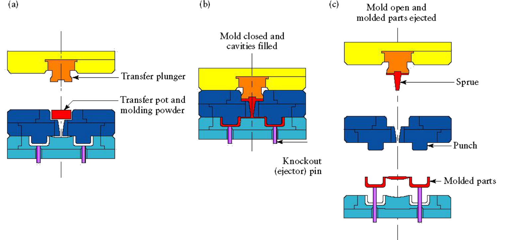
Based on the transfer molding sequence shown, why is transfer molding preferred over compression molding for intricate thermoset parts with varying wall thicknesses?
Answer and explanation
Answer: c)
Session 20, Slides 31 and 34: in transfer molding, the thermosetting compound is placed in a heated transfer pot, melted, and driven by a transfer plunger through a sprue into a closed mold cavity before final crosslinking and ejection. Flowing as a pressurized liquid into a closed mold allows intricate geometries and varying wall thicknesses at higher production rates than compression molding, though the cured sprue introduces some scrap loss.
Why the other options are wrong:
- a) Both transfer pot and mold are heated thermally so setting and crosslinking occur; UV light at $25\,^\circ\text{C}$ is not used here.
- b) As shown in steps (a) and (b), a transfer plunger forces molten resin into the cavity under high pressure.
- d) Slide 34 explicitly notes
some scrap loss(the cured sprue visible attached to the plunger in panel (c)) and medium-to-high tooling cost.
Session 20, Slides 31 and 34.
Question 5 · Casting and structural foam molding
Regarding polymer casting and structural foam molding, which one of the following statements is FALSE:
Answer and explanation
Answer: b)
Session 20, Slides 33–34: structural foam molding is explicitly characterized by Large parts with high stiffness-to-weight ratio; less expensive tooling than in injection molding; low production rates. Claiming costlier tooling and low stiffness-to-weight ratio inverts both attributes. Statement b is false.
Why the other options are wrong:
- a) True: Slide 33 lists low capital, low tooling cost, and very low production rate ($10\text{–}10^2$ parts), and Slide 34 specifies simple or intricate shapes in flexible molds.
- c) True: verbatim attributes of structural foam molding on Slide 34.
- d) True: thermoset casting/reaction processes cure inside the mold without melting, typically at lower rates than thermoplastic injection molding.
Session 20, Slides 33–34.
Question 6 · Selecting processes for small-to-medium production runs

An engineer must manufacture $500$ large plastic housings per year while keeping both equipment capital cost and tooling cost as low as possible. According to the cost–volume chart, which processes match these criteria?
Answer and explanation
Answer: d)
Session 20, Slide 33: for a production volume of $500$ parts (inside the $10^2\text{–}10^3$ band), both Thermoforming and Rotational molding combine Low equipment capital cost, Low tooling cost, and bars spanning $10^2\text{–}10^3$ parts.
Why the other options are wrong:
- a) Injection molding and foam molding have
Highequipment capital cost and target massive runs of $10^4\text{–}10^7$ parts. - b) Compression molding and transfer molding have
Highequipment capital cost,Hightooling cost, and target $10^3\text{–}10^6$ parts. - c) Extrusion is a continuous profile process (
*) unsuitable for discrete closed housings, and blow molding carriesMediumcapital and tooling costs for $10^3\text{–}10^6$ parts.
Session 20, Slide 33.
Question 7 · Economic trade-off behind injection molding volume
Why does injection molding typically require production volumes of $10^4$ to $10^7$ parts to be cost-effective compared with thermoforming or casting?
Answer and explanation
Answer: a)
Session 20, Slides 33–34: injection molding pairs High equipment capital cost and High tooling cost with a High production rate. Spreading that large fixed tooling investment across $10^4\text{–}10^7$ parts drops the per-part cost below low-rate processes.
Why the other options are wrong:
- b) Inverts Slide 33: injection molding has a high production rate, whereas casting is
Very low. - c) Injection molding primarily processes thermoplastics, whose sprues and runners can be reground and recycled (Slides 8 and 21).
- d) Inverts Slide 33: thermoforming and casting have low equipment capital cost and low tooling cost, making them ideal for small batches ($10\text{–}10^3$ parts).
Session 20, Slides 8, 21 and 33–34.
Question 8 · Selecting polymers for transparent functional components
Based on standard plastic selection recommendations, which group of polymers is specifically suited for functional and transparent products such as lenses, goggles, safety glazing, and laboratory hardware?
Answer and explanation
Answer: c)
Session 20, Slide 35 (and Session 19, Slide 50): under Functional and transparent applications (lenses, goggles, safety glazing, signs, food-processing equipment, laboratory hardware), the recommended plastics are Acrylic, polycarbonate, polystyrene, polysulfone.
Why the other options are wrong:
- a) Crosslinked thermosets and filled rubbers are generally not selected as optical glazing thermoplastics (SBR/NR are opaque or translucent elastomers).
- b) Acetal, phenolic, polyurethane, and UHMWPE belong to the
Wear resistanceandMechanical strengthcategories (gears, bearings, liners), not transparent lenses. - d) Phenolic Bakelite, chloroprene, and tire polybutadiene are opaque/dark structural or elastomeric materials rather than optical glazing plastics.
Session 20, Slide 35; Session 19, Slide 50.
Question 9 · Selecting polymers for mechanical strength and wear resistance
For engineering parts demanding high mechanical strength and wear resistance—such as gears, cams, bearings, bushings, and wear strips—recommended plastics include:
Answer and explanation
Answer: d)
Session 20, Slide 35: under Mechanical strength (gears, cams, rollers, valves, impellers) and Wear resistance (gears, wear strips, bearings, bushings), the table explicitly recommends acetal, nylon, phenolic, polycarbonate and acetal, nylon, phenolic, polyimide, polyurethane, ultrahigh molecular weight polyethylene.
Why the other options are wrong:
- a) PS foam and LDPE film have low strength and low wear resistance, suited for packaging and bags (Session 19 Slide 50; Session 20 Slide 10).
- b) Unvulcanized rubber creeps easily and flexible plasticized PVC is soft and low-modulus.
- c) Atactic PP is a weak wax-type material (
very bad mechanical properties, Session 19 Slide 19), and silicone sealant is an elastomeric gasket material.
Session 20, Slide 35; Session 19, Slide 19.
Question 10 · Tensile strength ranking with crosslink density, density and MW
When comparing two polymers from the same family, why does a sample possessing both higher density (or higher crosslink percentage) and higher molecular weight consistently exhibit higher tensile strength?
Answer and explanation
Answer: b)
2015 extraordinary final exam, Q1(b)–(c) and Session 19, Slides 24–25 and 43: higher density in a semicrystalline polymer signifies a higher crystalline fraction and tighter chain packing; higher crosslink density restricts relative chain motion via covalent bridges; and higher molecular weight raises the density of chain entanglements. All three mechanisms independently raise tensile strength.
Why the other options are wrong:
- a) Covalent backbone bonds remain intact; tighter packing and crosslinks impede chain sliding rather than letting chains glide freely.
- c) Higher MW does not convert covalent crosslinks into weak secondary bonds, nor does it destroy crystallinity in this comparison.
- d) Higher crosslinking and stronger packing raise $T_g$ and $T_m$, rather than lowering $T_g$ below room temperature.
MATERIALS_FINALEXAM_2015_EXTRA.pdf, p. 2 Q1(b)–(c); Session 19, Slides 24–25 and 43.
Unit 10 · Composite materials 14 blocks
B91 — Composite concept and classification
Ten test questions on composite materials, written for this portal in the style of Part I of Assessment Test III. Each question has four options and only one is right. Answer all ten before opening any explanation.
Question 1 · Definition of a composite material
Referring to the definition of a composite material, which one of the following statements is TRUE:
Answer and explanation
Answer: b)
Session 21, Slide 2: a composite material is a mixture of two or more distinct materials with significantly different physical or chemical properties that remain separate across one clear interface and retain their chemical identity.
Why the other options are wrong:
- a) Describes a solid-solution alloy rather than a composite, because atomic dissolution eliminates the clear interface and distinct phase identities.
- c) Describes a chemical reaction forming a new single compound, which violates the requirement that constituents retain their chemical identity.
- d) Restricts composites to thermoset/ceramic-fibre systems, ignoring particulate, metallic-matrix, ceramic-matrix and natural composites (Slides 3–6).
Session 21, Slides 2–6.
Question 2 · Synergism in composite materials
In composite materials science, a synergistic effect means that:
Answer and explanation
Answer: d)
Session 21, Slide 2: synergism means the overall performance of the composite is better than that of the separate components for a particular application, and its properties vary continuously over a range as phase proportions change.
Why the other options are wrong:
- a) Contradicts composite load-sharing: the dispersed reinforcement contributes strongly to stiffness, strength or wear resistance rather than staying inactive.
- b) Confuses synergistic property combinations (such as high toughness plus high stiffness) with an unimproved simple average that offers no functional advantage.
- c) Repeats the solid-solution misconception: dissolving the reinforcement destroys the composite interface and phase identity.
Session 21, Slide 2.
Question 3 · Natural composites
Regarding natural composites such as abalone shell and wood, which one of the following statements is FALSE:
Answer and explanation
Answer: a)
Session 21, Slide 3: abalone shell consists predominantly of mineral calcium carbonate ($\text{CaCO}_3$) bonded with only about 3 % organic material, arranged in a brick-and-mortar microstructure that is over 3000 times stronger than monolithic calcite. Statement a) inverts both the composition and the mechanical effect.
Why the other options are wrong:
- b) True (Slide 3): $\text{CaCO}_3$ + 3 % organic material is reported as $>3000\times$ stronger than calcite.
- c) True (Slide 3): wood pairs reinforcing cellulose filaments with a lignin and hemicellulose matrix.
- d) True (Slide 3): concentric growth rings act as a layered structure while radial rays supply perpendicular stiffening.
Session 21, Slide 3.
Question 4 · Composite constituent terms
Which term defines the continuous phase of a composite material that surrounds the other constituents and binds them together?
Answer and explanation
Answer: c)
Session 21, Slide 4: the matrix is defined as the continuous phase that surrounds the other constituents and binds them into a composite material.
Why the other options are wrong:
- a) The interface is the planar boundary region separating two components, not the bulk continuous phase.
- b) The dispersed phase (reinforcement) is the discontinuous, discrete phase embedded inside the matrix, such as particles or fibres.
- d) A preform is a dry fibre assembly shaped close to the final part geometry before resin infusion (Slide 33), not the continuous binding phase.
Session 21, Slide 4.
Question 5 · Design considerations by matrix family
Which of the following statements about constituent properties and composite design is FALSE:
Answer and explanation
Answer: b)
Session 21, Slides 4–5: when designing with metallic components creep is a key concern, for ceramic components fracture toughness is critical, and for polymer components engineers must specifically consider the absorption and transmission of water alongside physical and mechanical properties. Statement b) swaps polymers and ceramics.
Why the other options are wrong:
- a) True (Slide 4): either phase—fibre or matrix—can be a polymer, metal or ceramic.
- c) True (Slide 5): metallic components require considering creep alongside thermal, electrical, optical and mechanical properties ($E$, $R_m$, fracture toughness).
- d) True (Slide 4): constituent properties, relative amounts and dispersed-phase geometry govern composite performance.
Session 21, Slides 4–5.
Question 6 · Classification by matrix material
In the matrix-based composite classification shown below, which statement accurately contrasts the three composite classes?
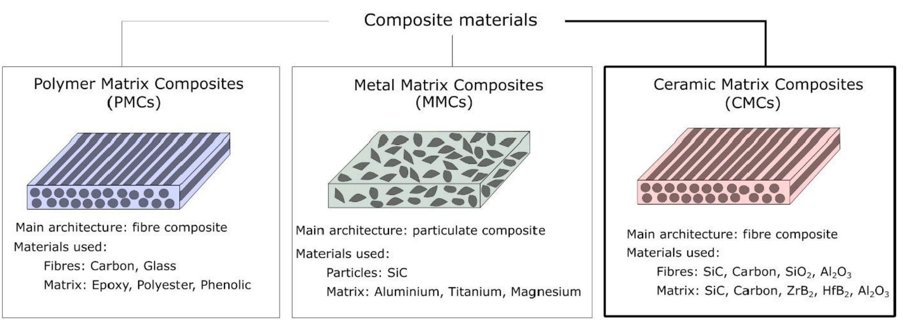
Answer and explanation
Answer: a)
Session 21, Slide 6: the diagram contrasts PMCs (main architecture: fibre composite with carbon or glass fibres in epoxy, polyester or phenolic), MMCs (main architecture: particulate composite with SiC particles in Al, Ti or Mg) and CMCs (main architecture: fibre composite with SiC, carbon, $\text{SiO}_2$ or $\text{Al}_2\text{O}_3$ fibres in SiC, carbon, $\text{ZrB}_2$, $\text{HfB}_2$ or $\text{Al}_2\text{O}_3$).
Why the other options are wrong:
- b) Misreads the diagram boxes: epoxy and phenolic belong to PMCs, while $\text{ZrB}_2$ and $\text{HfB}_2$ ceramic matrices appear under CMCs.
- c) Swaps CMC matrix compounds ($\text{SiC}$, $\text{HfB}_2$) into the PMC box and invents metal powder reinforcement.
- d) Ignores the middle panel of the figure, which explicitly shows particulate SiC as the main MMC architecture.
Session 21, Slide 6.
Question 7 · Classification by reinforcement architecture
In the classification of composite materials according to reinforcement architecture, which pair belongs strictly to the structural composites branch?
Answer and explanation
Answer: d)
Session 21, Slide 7: classifying composites by reinforcement splits into three main branches—particle-reinforced (large-particle, dispersion-strengthened, nanoparticles), fibre-reinforced (continuous aligned, discontinuous aligned/randomly oriented, woven fabric) and structural (laminates and sandwich panels).
Why the other options are wrong:
- a) Both belong to the particle-reinforced branch, not the structural branch.
- b) Both belong to the fibre-reinforced branch.
- c) Mixes the particle-reinforced branch (nanoparticles) with the fibre-reinforced branch (woven fabric).
Session 21, Slide 7.
Question 8 · Geometric factors governing directional anisotropy
Among the five geometric factors of a dispersed reinforcement phase (concentration, size, shape, distribution and orientation), which pair directly governs whether a composite exhibits isotropic or strongly directional properties?
Answer and explanation
Answer: c)
Session 21, Slides 8 and 14: while concentration and size determine load-sharing capacity and interaction scale, how uniformly the phase is distributed and how its axes are oriented determine whether properties are uniform in all directions (isotropic) or vary with direction (anisotropic).
Why the other options are wrong:
- a) Particle mass and concentration affect density and rule-of-mixtures magnitude, not directional symmetry when fibres are aligned or random.
- b) Matrix chemistry and cure schedule are processing/constituent parameters rather than dispersed-phase geometry.
- d) Volume fraction and bulk thickness set global load capacity and cross-sectional area, not directional anisotropy.
Session 21, Slides 8 and 14.
Question 9 · Matrix families ordered by temperature capability
Order the three composite classes by increasing high-temperature structural and chemical stability of the matrix family:
Answer and explanation
Answer: b)
Session 21, Slides 5–6 (and Session 23, Slides 30 and 38): organic/polymer matrices operate at the lowest temperatures (around ambient to a few hundred degrees Celsius), metallic matrices (Al, Mg, Ti, Ni) raise service temperature capability above PMCs, and ceramic matrices (SiC, C, $\text{Al}_2\text{O}_3$, $\text{ZrB}_2$, $\text{HfB}_2$) provide the highest chemical and thermal resistance at extreme temperatures.
Why the other options are wrong:
- a) Reverses the entire temperature hierarchy from highest to lowest.
- c) Places polymer matrices above metallic matrices, ignoring thermal softening and degradation of polymers at lower temperatures than Al, Ti or Ni.
- d) Places metallic matrices above ceramic matrices, whereas refractory ceramics tolerate much higher operating temperatures than light metals.
Session 21, Slides 5–6; Session 23, Slides 30 and 38.
Question 10 · Composite density from volume fractions
A polymer-matrix composite contains $70\text{ vol\%}$ carbon fibres ($\rho_f = 1.80\text{ g/cm}^3$) and $30\text{ vol\%}$ epoxy matrix ($\rho_m = 1.20\text{ g/cm}^3$). Using the rule of mixtures $\rho_c = f_f\rho_f + f_m\rho_m$, determine the density of the composite:
Answer and explanation
Answer: d)
Session 21, Slide 4 and Session 22, Slide 27: by volume additivity, the general rule of mixtures gives $\rho_c = f_f\rho_f + f_m\rho_m = 0.70(1.80) + 0.30(1.20) = 1.26 + 0.36 = 1.62\text{ g/cm}^3$. Dimensional check: dimensionless volume fractions multiplied by $\text{g/cm}^3$ yield $\text{g/cm}^3$, lying between $1.20$ and $1.80\text{ g/cm}^3$.
Why the other options are wrong:
- a) Swaps the two volume fractions: $0.30(1.80) + 0.70(1.20) = 0.54 + 0.84 = 1.38\text{ g/cm}^3$.
- b) Uses an unweighted 50/50 average $(1.80 + 1.20)/2 = 1.50\text{ g/cm}^3$, ignoring the 70 vol% fibre concentration.
- c) Overcounts the fibre fraction ($0.85 \times 1.80 + 0.15 \times 1.20 = 1.71\text{ g/cm}^3$), mismatching the stated composition.
Session 21, Slide 4; Session 22, Slide 27.
B92 — Particle and dispersion-strengthened composites
Ten test questions on composite materials, written for this portal in the style of Part I of Assessment Test III. Each question has four options and only one is right. Answer all ten before opening any explanation.
Question 1 · General features of particle-reinforced composites
Referring to particle-reinforced composites, which one of the following statements is TRUE:
Answer and explanation
Answer: c)
Session 21, Slide 9: particle-reinforced composites offer low cost, high stiffness and strength (especially with inorganic particles), wear resistance and ease of processing; Al, Mg, Ti and Ni are widely used metallic matrices, while polymer matrices use particles/nanoparticles to raise mechanical strength, abrasion resistance and electrical conductivity.
Why the other options are wrong:
- a) False (Slide 9): Al, Mg, Ti and Ni are explicitly the most used metallic matrices for particle reinforcement.
- b) False (Slide 9): nanoparticles are added to polymers precisely to enhance electrical conductivity alongside abrasion resistance and strength.
- d) Inverts the stiffness gain: inorganic ceramic particles are stiffer than the metal matrix and raise composite stiffness.
Session 21, Slide 9.
Question 2 · Strengthening mechanism in large-particle composites
Regarding large-particle composites (particle size $1\text{–}50\ \mu\text{m}$, $15\text{–}40\text{ vol\%}$), which one of the following statements is FALSE:
Answer and explanation
Answer: a)
Session 21, Slide 10: in large-particle composites ($1\text{–}50\ \mu\text{m}$), matrix–reinforcement interaction is treated at the macro-meso scale; the matrix transfers applied stress to the harder and stiffer particles, which directly bear or help bear the load. Statement a) misattributes the fine-particle (<$0.1\ \mu\text{m}$) dislocation-pinning mechanism to large particles.
Why the other options are wrong:
- b) True (Slide 10): large-particle mechanics is analysed at the macro-meso continuum scale.
- c) True (Slide 10): load transfer from matrix to stiffer particles is the basis of large-particle strengthening.
- d) True (Slide 10): effective load transfer requires a strong matrix–particle interfacial bond.
Session 21, Slide 10.
Question 3 · Particulate fillers in plastics
Which group of particulate additives is compounded into plastics primarily as inert fillers to lower cost or adjust density rather than as abrasive-resistant carbon black or metallic cutting carbides?
Answer and explanation
Answer: d)
Session 21, Slide 10: plastics incorporate particulate fillers either to improve functional properties (such as carbon black or elastomers) or to reduce cost and density using inert fillers like $\text{CaCO}_3$, clays and hollow glass spheres.
Why the other options are wrong:
- a) $\text{WC}$ and $\text{TiC}$ in Co or Ni form cemented carbides (cermets) for cutting tools on hardened steels (Slide 11).
- b) Carbon black and sulphur curatives reinforce vulcanized synthetic/natural rubber for automobile tyres (Slide 11).
- c) Sub-$0.1\ \mu\text{m}$ $\text{ThO}_2$ and $\text{Al}_2\text{O}_3$ are dispersion-strengthening oxides used in nickel and aluminium (Slides 12–13).
Session 21, Slides 10–13.
Question 4 · Structure and role of cermets
Cemented carbides (cermets) such as $\text{WC–Co}$ achieve the combination of extreme wear resistance and toughness needed for hardened-steel cutting tools because they consist of:
Answer and explanation
Answer: b)
Session 21, Slide 11: cemented carbides (cermets) combine strong, brittle ceramic particles (such as $\text{WC}$ or $\text{TiC}$) with a soft, ductile metal matrix ($\text{Co}$ or $\text{Ni}$) that surrounds the angular carbide grains and prevents brittle catastrophic fracture.
Why the other options are wrong:
- a) Inverts the matrix and dispersed phase: $\text{WC}$ is the discrete particulate ceramic phase and $\text{Co}$ is the continuous metallic binder.
- c) Confuses cermet macro-meso particulate architecture ($1\text{–}50\ \mu\text{m}$ scale) with fine precipitation or dispersion strengthening.
- d) Describes a continuous-fibre polymer-matrix composite rather than a particulate ceramic–metal cermet.
Session 21, Slide 11.
Question 5 · Concrete and carbon-black reinforced rubber
Which of the following statements about everyday large-particle composites is TRUE:
Answer and explanation
Answer: c)
Session 21, Slides 11 and 42: concrete relies on crushed stone and sand aggregate ($E = 34\text{–}69\text{ GPa}$), with compressive strength ($69\text{–}340\text{ MPa}$) far higher than its tensile strength ($1.4\text{–}14\text{ MPa}$).
Why the other options are wrong:
- a) Inverts the role of carbon black: carbon black is mixed into vulcanized rubber specifically to strengthen and stiffen auto tyres (Slide 11).
- b) Inverts tensile and compressive behaviour: concrete and its aggregate perform strongly in compression ($69\text{–}340\text{ MPa}$) and poorly in tension ($1.4\text{–}14\text{ MPa}$).
- d) Contradicts Slide 11: carbon-black reinforced rubber is used in tyres precisely for its high abrasion resistance and stiffness.
Session 21, Slides 11 and 42.
Question 6 · Dislocation pinning in dispersion-strengthened composites
Uniformly dispersing hard, inert oxide or carbide particles smaller than $0.1\ \mu\text{m}$ inside a metallic matrix increases hardness, elastic modulus and strength primarily because:
Answer and explanation
Answer: d)
Session 21, Slide 12 (with Orowan bowing from Session 12, Slide 12 as extension): uniformly dispersed fine, hard, inert particles ($<0.1\ \mu\text{m}$) obstruct dislocation motion, raising hardness, $E$ and strength, while the continuous metallic matrix continues to bear the applied load.
Why the other options are wrong:
- a) Oxide/carbide dispersoids are thermally stable and inert; they do not melt under mechanical loading.
- b) Reverses the load-bearing role: on Slide 12, the continuous matrix carries the load in dispersion-strengthened systems, unlike large-particle or continuous-fibre composites.
- c) Inert dispersoids remain discrete insoluble precipitates rather than dissolving into solid solution.
Session 21, Slide 12; Session 12, Slide 12 (dislocation bowing extension).
Question 7 · Dispersoid shape for maximum strengthening
Among round, disc-shaped and needle-shaped inert dispersoids of size below $0.1\ \mu\text{m}$ in a dispersion-strengthened metal, which particle geometry provides the maximum strengthening effect?
Answer and explanation
Answer: a)
Session 21, Slide 12: fine dispersoids (usually carbides, oxides or borides) can be round, disc or needle shaped, and needle-shaped dispersoids deliver the maximum strengthening effect against dislocation motion.
Why the other options are wrong:
- b) Spherical particles offer smaller effective barrier cross-sections along slip planes than elongated needle dispersoids at equal volume fraction.
- c) Disc shapes lie intermediate in barrier geometry, whereas Slide 12 explicitly marks needle shape as maximum strength.
- d) Pores act as stress concentrators that weaken rather than strengthen a structural material.
Session 21, Slide 12.
Question 8 · SAP and TD-Nickel examples
Which of the following statements about dispersion-strengthened alloys is FALSE:
Answer and explanation
Answer: b)
Session 21, Slide 13: TD-Nickel (thoria-dispersed nickel) is made by powder metallurgy—metallic Th and Ni powders are ball-milled, compacted and sintered in air so Th reacts with oxygen to form fine inert $\text{ThO}_2$ particles (shown around $300\text{ nm}$ in the micrograph). It is not formed by liquid-melt dissolution and precipitation ageing.
Why the other options are wrong:
- a) True (Slide 13): SAP disperses fine $\text{Al}_2\text{O}_3$ oxide particles inside a pure aluminium matrix.
- c) True (Slide 13): accurately states the ball-milling, compaction and air-sintering synthesis route of TD-Ni.
- d) True (Slide 12 & Topic 10 extension): inert oxides remain stable against coarsening or dissolution at temperatures where conventional precipitates dissolve.
Session 21, Slides 12–13.
Question 9 · Contrasting large-particle and nanosize-dispersed microstructures
Compare the two schematic particle-reinforced microstructures shown below. Which statement correctly distinguishes how microstructure (a) and microstructure (b) strengthen a metallic matrix?

Answer and explanation
Answer: c)
Session 21, Slides 9–12: schematic (a) represents large-particle reinforcement ($1\text{–}50\ \mu\text{m}$), treated at the macro-meso continuum scale where the matrix transfers load to stiffer particles; schematic (b) represents fine/nanosize dispersion strengthening ($<0.1\ \mu\text{m}$), where fine inert dispersoids impede dislocation glide while the matrix carries the load.
Why the other options are wrong:
- a) Swaps the strengthening mechanisms between (a) and (b) and turns particles soft.
- b) Swaps the characteristic particle size ranges of large-particle and dispersion-strengthened composites.
- d) Misstates load sharing: in (b) the continuous matrix carries the load, and even in (a) both phases share load rather than forming a 100 %-loaded ceramic skeleton.
Session 21, Slides 9–12.
Question 10 · Characteristic reinforcement scale ordering
Order the following composite reinforcements from smallest to largest characteristic particle size:
Answer and explanation
Answer: a)
Session 21, Slides 10–13 and 42: fine dispersoids in dispersion-strengthened composites such as SAP are below $0.1\ \mu\text{m}$ ($<100\text{ nm}$); large-particle reinforcements such as $\text{WC}$ in $\text{WC–Co}$ cermets are $1\text{–}50\ \mu\text{m}$; and crushed-stone concrete aggregates are millimetre-to-centimetre scale macro-particles.
Why the other options are wrong:
- b) Places micrometre-scale $\text{WC}$ cermet grains below sub-$0.1\ \mu\text{m}$ SAP dispersoids.
- c) Reverses the entire size hierarchy from largest to smallest.
- d) Places millimetre-scale concrete stone aggregate below $1\text{–}50\ \mu\text{m}$ $\text{WC}$ particles.
Session 21, Slides 10–13 and 42.
B93 — Fibre-matrix roles and glass fibres
Ten test questions on composite materials, written for this portal in the style of Part I of Assessment Test III. Each question has four options and only one is right. Answer all ten before opening any explanation.
Question 1 · Non-function of the matrix in a fibre composite
Indicate which of the following is NOT the function of the matrix in a fiber reinforced composite:
Answer and explanation
Answer: d)
MATERIALS_THIRDPARTIAL_2020.pdf, p. 2 (Assessment Test III, Model B Q8) and Session 21, Slide 16: supporting the major part of the applied load is the primary function of the fibres ($\sigma_{1f} \gg \sigma_{1m}$), not of the matrix.
Why the other options are wrong:
- a) True matrix function (Session 21, Slide 16; Session 22, Slide 6): transfers external loads into and out of the fibres.
- b) True matrix function (Session 21, Slide 16): protects the fibres from environmental, chemical and abrasive degradation.
- c) True matrix function (Session 21, Slide 16): maintains fibre alignment and component shape.
MATERIALS_THIRDPARTIAL_2020.pdf, p. 2 (Model B Q8); Session 21, Slide 16; Session 22, Slide 6.
Official examQuestion 2 · Primary roles of matrix and fibres
Regarding the primary roles of the matrix and the fibres in a continuous-fibre reinforced composite, indicate which statement is TRUE:
Answer and explanation
Answer: b)
MATERIALS_FINALEXAM_2014_ORD.pdf, p. 5 (Q3a) and Official Key (COMPILATION p. 14), matching Session 21, Slide 16: the strong, stiff, brittle fibres carry most of the applied load, whereas the soft, ductile matrix shapes the part, transfers load into and out of the fibres, separates fibres to arrest crack propagation, protects them from environmental degradation, maintains orientation and provides ductility and toughness.
Why the other options are wrong:
- a) Inverts the structural division of labour between fibres and matrix.
- c) Confuses isostrain ($\varepsilon_f = \varepsilon_m$) with equal stress: because $E_f \gg E_m$, the fibres operate at much higher axial stress ($\sigma_f \gg \sigma_m$).
- d) Invents local melting of high-melting fibres and reverses the toughness contribution of the ductile matrix.
MATERIALS_FINALEXAM_2014_ORD.pdf, p. 5 (Q3a); Official Key COMPILATION p. 14; Session 21, Slide 16.
Official examQuestion 3 · Stress redistribution at a broken fibre
The schematic below shows a longitudinal section of a fibre-reinforced composite in which the central fibre has fractured at $z = 0$. Which mechanism prevents that single fibre break from causing immediate failure of the adjacent intact fibres?
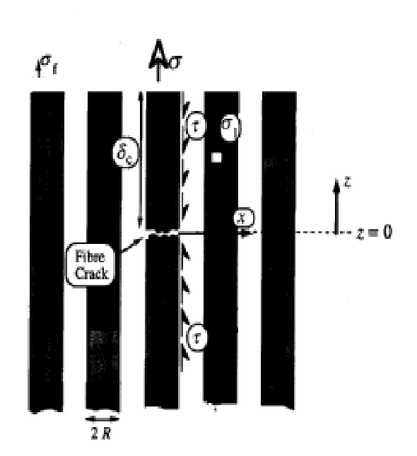
Answer and explanation
Answer: c)
Session 22, Slide 6 and Session 21, Slide 16: at a fibre crack ($z = 0$), the axial stress in the broken filament drops to zero; the surrounding matrix separates the fibres and transfers load via interfacial shear stress $\tau$ to neighbouring filaments and back into the broken fibre over a transfer distance $\delta_c$, stopping crack propagation.
Why the other options are wrong:
- a) Brittle fibres cannot cold-weld under tension inside a polymer or ceramic matrix.
- b) Contradicts the diagram arrows labelled $\tau$, which explicitly depict shear stress along the fibre–matrix interface.
- d) Describes catastrophic failure of an unbonded bundle rather than matrix-mediated crack arrest.
Session 22, Slide 6; Session 21, Slide 16.
Question 4 · Primary limitations of fibre-reinforced composites
Which of the following statements about high-performance fibre-reinforced composites is FALSE:
Answer and explanation
Answer: a)
Session 21, Slides 15–16: the absence of plasticity in fibre-reinforced composites is critical in mechanical joints because the material cannot yield locally at bolt holes to relieve stress concentrations, and low damage tolerance means minor impacts can cause delaminations that degrade strength.
Why the other options are wrong:
- b) True (Slide 15): absence of plasticity and low damage tolerance are the two primary limiting factors listed.
- c) True (Slide 15): small accidental impacts induce delaminations leading to a loss of mechanical resistance ($R_{\text{mechanical}}$).
- d) True (Slide 16): combining stiff brittle fibres and a ductile matrix yields high specific strength, specific modulus and fatigue performance.
Session 21, Slides 15–16.
Question 5 · Composition and general properties of glass fibres
Regarding glass fibres used to reinforce polymer matrices, which one of the following statements is FALSE:
Answer and explanation
Answer: d)
Session 21, Slide 17: compared with carbon and aramid fibres, glass fibres exhibit lower elastic modulus (with higher elongation to failure) and higher density ($\sim 2.5\text{–}2.6\text{ g/cm}^3$ vs $\sim 1.44\text{ g/cm}^3$ for aramid and $\sim 1.8\text{ g/cm}^3$ for carbon), although they retain high tensile strength and low cost.
Why the other options are wrong:
- a) True (Slide 17): silica-based ($50\text{–}70\%\ \text{SiO}_2$) with Ca, Al, B, Na, Mg and K oxides.
- b) True (Slide 17): glass fibres are amorphous, isotropic, non-combustible and insulating (low thermal conductivity $k$, low thermal expansion $\alpha$).
- c) True (Slide 17): low cost and processing versatility explain their dominant commercial share in GFRP.
Session 21, Slide 17.
Question 6 · Aerospace selection among glass fibre grades
Which type of glass fibre is a boron-free magnesium aluminosilicate ($\sigma_t \approx 4590\text{ MPa}$, $E = 86.0\text{ GPa}$, $T_m = 1454\ ^\circ\text{C}$) selected specifically for aerospace and aeronautical structures requiring high tensile strength and thermal stability?
Answer and explanation
Answer: c)
Session 21, Slide 18: S-glass is a boron-free magnesium aluminosilicate with the lowest density ($2.48$), highest tensile strength ($4590\text{ MPa}$), highest modulus ($86.0\text{ GPa}$) and highest softening/melting temperature ($1454\ ^\circ\text{C}$), specified for aerospace and aeronautic applications.
Why the other options are wrong:
- a) A-glass is alkali-rich with the lowest strength ($3040\text{ MPa}$) and modulus ($69.0\text{ GPa}$), used for basic chemical resistance.
- b) E-glass is a Ca aluminoborosilicate ($3450\text{ MPa}$, $72.5\text{ GPa}$), the cheapest grade used for electrical properties and circuit boards.
- d) ECR-glass ($3625\text{ MPa}$, $72.5\text{ GPa}$) targets combined electrical and chemical resistance rather than peak aerospace strength.
Session 21, Slide 18.
Question 7 · Role of sizing and coupling agents on glass fibres
Referring to the surface sizing applied to glass fibres immediately after drawing, which one of the following statements is TRUE:
Answer and explanation
Answer: a)
Session 21, Slide 19 and Session 22, Slide 18: glass-fibre strength is governed by surface processing damage and water adsorption; sizing—comprising a film-forming polymer (such as polyvinyl acetate) and a coupling agent (organosilane, titanate or chromate)—binds filaments together, lubricates against abrasion, gives anti-static properties and introduces chemical functionalities to boost interfacial bond strength.
Why the other options are wrong:
- b) Inverts moisture sensitivity: water adsorption and surface scratches degrade glass-fibre strength by introducing surface flaws.
- c) Misidentifies the chemical composition of sizing (polymer film former plus organosilane/titanate/chromate coupling agent) and ignores glass insulation.
- d) Reverses the purpose of coupling agents: organosilanes form covalent $\text{M–O–Si}$ bonds with glass and diffuse into the polymer to strengthen the interface.
Session 21, Slide 19; Session 22, Slide 18.
Question 8 · Critical fibre length calculation
Effective reinforcement in a discontinuous-fibre composite requires fibre length $l$ to exceed the critical length $l_c = \dfrac{\sigma_f^* d}{2\tau_c}$, where $\sigma_f^*$ is fibre tensile strength, $d$ is fibre diameter and $\tau_c$ is interfacial shear strength (or matrix shear yield strength). For an E-glass fibre with $\sigma_f^* = 3450\text{ MPa}$ and $d = 12\ \mu\text{m}$ in an epoxy matrix with $\tau_c = 23\text{ MPa}$, calculate $l_c$:
Answer and explanation
Answer: b)
Using the critical fibre-length formula (Callister extension of the shear load-transfer distance $\delta_c$ shown in Session 22, Slide 6, with E-glass strength and filament size from Session 21, Slides 18 and 28): converting $d = 12\ \mu\text{m} = 0.012\text{ mm}$, $l_c = \dfrac{3450\text{ MPa} \times 0.012\text{ mm}}{2 \times 23\text{ MPa}} = \dfrac{41.4}{46} = 0.90\text{ mm}$. Units: $\text{MPa}$ cancels in numerator and denominator, leaving $\text{mm}$.
Why the other options are wrong:
- a) Substituted the fibre radius ($d/2 = 6\ \mu\text{m}$) into the diameter formula, halving $l_c$ to $0.45\text{ mm}$.
- c) Omitted the factor of $2$ in the denominator, giving $3450 \times 0.012 / 23 = 1.80\text{ mm}$.
- d) Misconverted $12\ \mu\text{m}$ as $0.12\text{ mm}$, inflating the answer tenfold to $9.00\text{ mm}$.
Session 21, Slides 18 and 28; Session 22, Slide 6 (load-transfer distance $\delta_c$, with explicit $l_c = \sigma_f^* d/(2\tau_c)$ extension).
Question 9 · Effect of degraded interfacial shear strength on critical fibre length
In a short-fibre glass/epoxy composite governed by the critical length $l_c = \dfrac{\sigma_f^* d}{2\tau_c}$, what happens to $l_c$ and load transfer if moisture attack at the interface cuts the shear bond strength $\tau_c$ in half?
Answer and explanation
Answer: d)
Since $l_c = \dfrac{\sigma_f^* d}{2\tau_c}$ is inversely proportional to $\tau_c$ (extension of shear load transfer in Session 22, Slide 6, combined with glass moisture degradation on Session 21, Slide 19), halving $\tau_c$ doubles $l_c$. Longer interface distances are then required to build up $\sigma_f^*$ in the fibre, so formerly effective short fibres slip and pull out prematurely.
Why the other options are wrong:
- a) Inverts the inverse dependence on $\tau_c$: weaker bonding needs a longer transfer length, not a shorter one.
- b) Ignores $\tau_c$ in the denominator and substitutes modulus for strength and interfacial shear.
- c) Misrepresents moisture attack: adsorbed water degrades interfacial adhesion and surface strength rather than transferring stress.
Session 21, Slide 19; Session 22, Slide 6 (critical-length scaling extension).
Question 10 · Glass fibre grades ordered by tensile strength
Order the three glass-fibre grades in increasing tensile strength (and elastic modulus):
Answer and explanation
Answer: c)
Session 21, Slide 42 (and Slide 18): tensile strengths and moduli increase in the sequence C-glass ($3100\text{ MPa}$, $69\text{ GPa}$) $<$ E-glass ($3400\text{–}3450\text{ MPa}$, $72.4\text{–}72.5\text{ GPa}$) $<$ S-glass ($4590\text{–}4800\text{ MPa}$, $85.5\text{–}86.0\text{ GPa}$).
Why the other options are wrong:
- a) Reverses the ranking from highest to lowest strength.
- b) Swaps the electrical/general grade E-glass below chemical-resistant C-glass.
- d) Places aerospace high-strength S-glass below E-glass.
Session 21, Slides 18 and 42.
B94 — Carbon, aramid and ceramic fibres
Ten test questions on composite materials, written for this portal in the style of Part I of Assessment Test III. Each question has four options and only one is right. Answer all ten before opening any explanation.
Question 1 · Identification of Kevlar 29 fibre family
Which type of fiber is the Kevlar 29?
Answer and explanation
Answer: b)
MATERIALS_THIRDPARTIAL_2020_V2.pdf, p. 5 (Paper B Q8) and Session 21, Slide 30: Kevlar 29 is an aromatic polyamide (aramid) fibre commercialised by Du Pont for high-toughness applications such as bulletproof jackets ($E = 83\text{ GPa}$, $\varepsilon = 4.0\%$).
Why the other options are wrong:
- a) Carbon fibres are inorganic graphitic filaments derived from PAN or pitch precursors (Slide 23).
- c) Glass fibres are amorphous silica-based inorganic fibres (Slide 17).
- d) Boron fibres are ceramic/metalloid filaments used mainly in metal or specialised aerospace matrices (Slides 34 and 42).
MATERIALS_THIRDPARTIAL_2020_V2.pdf, p. 5 (Paper B Q8); Session 21, Slide 30.
Official examQuestion 2 · Most common fibre reinforcements in PMCs
Which group lists the three most common families of fibre reinforcements used in polymer-matrix composites (PMCs)?
Answer and explanation
Answer: c)
MATERIALS_FINALEXAM_2013_ORD.pdf, p. 1 (Q3a) and Session 21, Slide 15: glass (GFRP), carbon (CFRP) and aramid (AFRP) are the three primary fibre families used to reinforce polymer matrices.
Why the other options are wrong:
- a) Boron and silicon nitride belong to ceramic/high-temperature fibres, while tungsten carbide is a large-particle cermet carbide.
- b) Thoria is a fine oxide dispersoid for TD-Nickel, and alumina whiskers are costly specialised ceramic reinforcements.
- d) Steel wire and silicon carbide are specialist metallic/ceramic reinforcements rather than the dominant PMC trio.
MATERIALS_FINALEXAM_2013_ORD.pdf, p. 1 (Q3a); Session 21, Slide 15.
Official examQuestion 3 · Processing sequence for PAN-based carbon fibres
Order the manufacturing stages of high-modulus carbon fibres starting from a polyacrylonitrile (PAN) precursor:
Answer and explanation
Answer: d)
Session 21, Slide 23: PAN or pitch precursor is first spun into acrylic/pitch filament, then stretched and oxidised in air at $200\text{–}300\ ^\circ\text{C}$ (stabilization, creating a non-melting fibrillar network), then carbonised at $1000\text{–}1500\ ^\circ\text{C}$ in an inert atmosphere under tension to drive off O, H and N, and finally graphitised above $1800\ ^\circ\text{C}$ in an inert atmosphere to align hexagonal carbon planes.
Why the other options are wrong:
- a) Places oxidation stabilization before spinning the precursor into fibre form.
- b) Attempts high-temperature graphitization before stabilizing the thermoplastic PAN against melting and before removing heteroatoms.
- c) Attempts inert carbonization before spinning the acrylic precursor and before oxidative stabilization.
Session 21, Slide 23.
Question 4 · Structure and thermal expansion of carbon fibres
Referring to the structure and physical properties of carbon fibres in aerospace composites, which one of the following statements is TRUE:
Answer and explanation
Answer: a)
Session 21, Slides 21, 23 and 25: carbon fibres consist of hexagonal graphite-like planes oriented parallel to the fibre axis; they exhibit high specific strength and stiffness, high thermal and electrical conductivity and a low CTE that offsets positive polymer-matrix CTE to yield $\text{CTE} \approx 0$ composites and minimise thermal fatigue.
Why the other options are wrong:
- b) Confuses carbon fibres with amorphous, insulating glass fibres (Slide 17).
- c) Inverts tow economics (Slide 25): larger tows (larger $K$, e.g., 24K or 48K–80K) reduce manufacturing cost ($\uparrow K \downarrow\text{cost}$), while standard conventional tows share $E \approx 230\text{ GPa}$ (Slide 28).
- d) Contradicts Slide 23: carbon fibres are manufactured from both PAN and oil/coal pitch precursors.
Session 21, Slides 21, 23, 25 and 28.
Question 5 · IUPAC classification of carbon fibres
Using the IUPAC mechanical-property chart for carbon fibres shown below, which class achieves the highest tensile strength ceiling (up to $7.0\text{ GPa}$) at an elastic modulus between $280$ and $350\text{ GPa}$?

Answer and explanation
Answer: c)
Session 21, Slide 22: on the IUPAC property boxes, the intermediate elastic modulus type (IM) spans $E = 280\text{–}350\text{ GPa}$ and reaches tensile strengths from $3.5\text{ GPa}$ ($3500\text{ MPa}$) up to $7.0\text{ GPa}$, exceeding the upper strength bounds of HT, HM and UHM fibres.
Why the other options are wrong:
- a) UHM sits at the highest modulus ($>600\text{ GPa}$) but its tensile strength box caps at $4.0\text{ GPa}$.
- b) HT spans $200\text{–}280\text{ GPa}$ with a tensile strength ceiling of $5.0\text{ GPa}$, below IM.
- d) HM spans $350\text{–}600\text{ GPa}$ with a tensile strength ceiling of $5.0\text{ GPa}$, illustrating the stiffness–strength trade-off.
Session 21, Slide 22.
Question 6 · Carbon fibre types by heat-treatment temperature
During carbon-fibre production, applying a final heat-treatment temperature above $2000\ ^\circ\text{C}$ yields Type I (HTT) fibres characterised by:
Answer and explanation
Answer: b)
Session 21, Slide 24: Type I (high-temperature heat treatment, HTT $> 2000\ ^\circ\text{C}$) produces a high degree of crystallographic orientation along the fibre axis, yielding high-modulus fibres; Type II (ITT $\approx 1500\ ^\circ\text{C}$) gives less orientation but high strength; Type III (LTT $< 1000\ ^\circ\text{C}$) retains random orientation with low strength and modulus.
Why the other options are wrong:
- a) Describes Type III (LTT, $<1000\ ^\circ\text{C}$), not Type I.
- c) O, H and N are already expelled during carbonization ($1000\text{–}1500\ ^\circ\text{C}$), well below $2000\ ^\circ\text{C}$ (Slide 23).
- d) Inverts the modulus ranking: Type I ($>2000\ ^\circ\text{C}$) has far higher modulus than Type III ($<1000\ ^\circ\text{C}$).
Session 21, Slides 23–24.
Question 7 · Compressive weakness and properties of aramid composites
Regarding aramid fibres (such as Kevlar and Nomex) and their polymer-matrix composites, which one of the following statements is FALSE:
Answer and explanation
Answer: d)
Session 21, Slides 30 and 41: while unidirectional Kevlar 49/epoxy reaches $\text{UTS}(0^\circ) = 1379\text{ MPa}$ in tension, its longitudinal compressive strength $\text{UCS}(0^\circ)$ drops sharply to $276\text{ MPa}$—roughly one-fifth of its tensile strength—because fibrillar aramid chains buckle readily under axial compression.
Why the other options are wrong:
- a) True (Slide 30): aromatic rings confer thermal stability and flow-aligned rigid domains yield high axial tensile $E$.
- b) True (Slide 30): aramid is an electrical and thermal insulator with low $\alpha$ and superior impact toughness.
- c) True (Slide 30 table): Kevlar 29 ($83\text{ GPa}, 4.0\%$), Kevlar 49 ($131\text{ GPa}, 2.8\%$) and Kevlar 149 ($186\text{ GPa}, 2.0\%$) follow the inverse stiffness–ductility trend.
Session 21, Slides 30 and 41.
Question 8 · Structural vs ballistic aramid grades
Which statement correctly matches an aramid fibre family or grade to its chemical name and primary engineering role?
Answer and explanation
Answer: a)
Session 21, Slide 30: Kevlar is poly(para-phenylene terephthalamide) (Nomex is poly(meta-phenylene isophthalamide)); Kevlar 49 ($E = 131\text{ GPa}$, $\sigma_t = 3.6\text{–}4.1\text{ GPa}$) is the standard structural-composite grade, Kevlar 29 ($E = 83\text{ GPa}$, $\varepsilon = 4.0\%$) is used for high-toughness impact/ballistic protection, and Kevlar 149 ($E = 186\text{ GPa}$) approaches the theoretical modulus.
Why the other options are wrong:
- b) Misassigns the chemical name of Kevlar to Nomex and contradicts Slide 40, where Nomex sits far below Kevlar 49 and graphite in modulus.
- c) Swaps Kevlar 29 ($83\text{ GPa}, 4.0\%$) with Kevlar 149 ($186\text{ GPa}, 2.0\%$).
- d) Assigns E-glass density ($2.58\text{ g/cm}^3$) to Kevlar ($1.44\text{ g/cm}^3$) and reverses aramid's electrically insulating behaviour.
Session 21, Slides 30 and 40.
Question 9 · Ceramic fibres: matrices, temperature capability and cost limit
Which of the following statements about ceramic fibres (such as boron, $\text{Al}_2\text{O}_3$, $\text{Si}_3\text{N}_4$ and $\text{SiC}$) is TRUE:
Answer and explanation
Answer: c)
Session 21, Slide 34: ceramic fibres (boron, $\text{Al}_2\text{O}_3$, $\text{Si}_3\text{N}_4$, $\text{SiC}$) are typically used with Al or Ti matrices (illustrated by carbon-coated $\text{SiC}$ fibres in a $\text{Ti}_3\text{Al}$ MMC), withstand $T > 1300\ ^\circ\text{C}$ and thermal shocks as thermal insulators, and are limited by high cost (~5 times that of carbon fibre).
Why the other options are wrong:
- a) Inverts cost: ceramic fibres cost ~5 times more than carbon fibre, which itself costs far more than E-glass.
- b) Underestimates ceramic temperature stability by more than $800\ ^\circ\text{C}$ and swaps Al/Ti matrices for epoxy.
- d) Directly contradicts the Slide 34 micrograph showing intact carbon-coated $\text{SiC}$ fibres inside a $\text{Ti}_3\text{Al}$ matrix.
Session 21, Slide 34.
Question 10 · Exceptional tensile strength of ceramic whiskers
Why do single-crystal $\text{Al}_2\text{O}_3$ ceramic whiskers reach a tensile strength near $21\,000\text{ MPa}$ ($21\text{ GPa}$) while conventional polycrystalline bulk alumina fractures in tension at roughly two orders of magnitude lower stress?
Answer and explanation
Answer: b)
Session 21, Slide 42 (Table 10.11) and Topic 8 ceramic fracture mechanics: $\text{Al}_2\text{O}_3$ whiskers combine $E = 430\text{ GPa}$ with $21\,000\text{ MPa}$ tensile strength because their tiny single-crystal diameter leaves virtually no cracks or flaws to trigger brittle fracture, bringing strength close to the theoretical bond limit.
Why the other options are wrong:
- a) Alumina whiskers are crystalline single crystals with strong ionic/covalent bonding, not amorphous metallic glasses.
- c) Confuses single-crystal ceramic whiskers with $\text{WC–Co}$ cermets (Slide 11).
- d) Contradicts Table 10.11: $\text{Al}_2\text{O}_3$ whiskers have $E = 430\text{ GPa}$, equal to $\text{SiC}$ fibre and far stiffer than polymers.
Session 21, Slide 42 (Table 10.11); Session 16, Slide 17.
B95 — Textiles, laminates, sandwich panels and GLARE
Ten test questions on composite materials, written for this portal in the style of Part I of Assessment Test III. Each question has four options and only one is right. Answer all ten before opening any explanation.
Question 1 · Unidirectional (UND) vs bidirectional (BID) woven fabrics
Referring to woven fibre fabrics used in high-performance polymer-matrix composites, which one of the following statements is TRUE:
Answer and explanation
Answer: a)
Session 21, Slide 31: UND cloth weaves 95 % of fibres parallel to the selvage (exceptional strength along that axis, very little perpendicular), whereas BID cloth puts half the fibres parallel to the selvage and half at right angles to give equal strength in both orthogonal directions.
Why the other options are wrong:
- b) Attributes BID properties to UND cloth.
- c) Swaps warp and weft: warp runs along the roll (parallel to the selvage) and weft runs transversely across it.
- d) Contradicts Slide 31: carbon, glass, aramid and other multi-filament fibres are all produced in woven fabric forms.
Session 21, Slide 31.
Question 2 · Non-crimp fabrics (NCFs)
Non-crimp fabrics (NCFs) improve mechanical efficiency compared with conventional interlaced woven fabrics because they consist of:
Answer and explanation
Answer: c)
Session 21, Slide 32: non-crimp fabrics (NCFs) are stitch-bonded materials with zero elongation made of unbent (straight) fibre systems (such as $0^\circ$, $+45^\circ$, $90^\circ$ and $-45^\circ$ layers held by stitching threads), avoiding the waviness (crimp) of interlaced weaves.
Why the other options are wrong:
- a) Describes chopped strand mat (CSM) or spray lay-up rather than continuous unbent NCF plies.
- b) Describes standard plain-weave fabrics, which exhibit the highest crimp rather than eliminating it.
- d) Describes ceramic-metal cermets rather than textile polymer-composite reinforcements.
Session 21, Slide 32.
Question 3 · Dry near-net-shape fibre preforms
Which textile composite intermediate consists of a dry assembly of fibres (such as a 3D braid) formed nearly to the final geometry of the structural part before resin injection or infusion?
Answer and explanation
Answer: b)
Session 21, Slide 33: preforms are sets of dry fibre shaped very nearly to the final geometry of the part to be produced, prepared manually or automatically via textile technologies such as 3D braiding before liquid resin moulding.
Why the other options are wrong:
- a) SMC is already impregnated with resin paste and chopped short fibres (Session 23, Slide 7), not a dry 3D textile assembly.
- c) A honeycomb core is a cellular structural spacer inside a sandwich panel (Slide 38).
- d) A B-stage prepreg is already pre-impregnated with partially cured resin (Session 23, Slides 3–5), not a dry fibre preform.
Session 21, Slide 33; Session 23, Slides 3–7.
Question 4 · Weave pattern geometry and crimp
Comparing the four woven fabric architectures and cross-sections shown below, which weave pattern produces the greatest fibre undulation (crimp) per unit length because warp and weft yarns cross over and under at every single intersection?
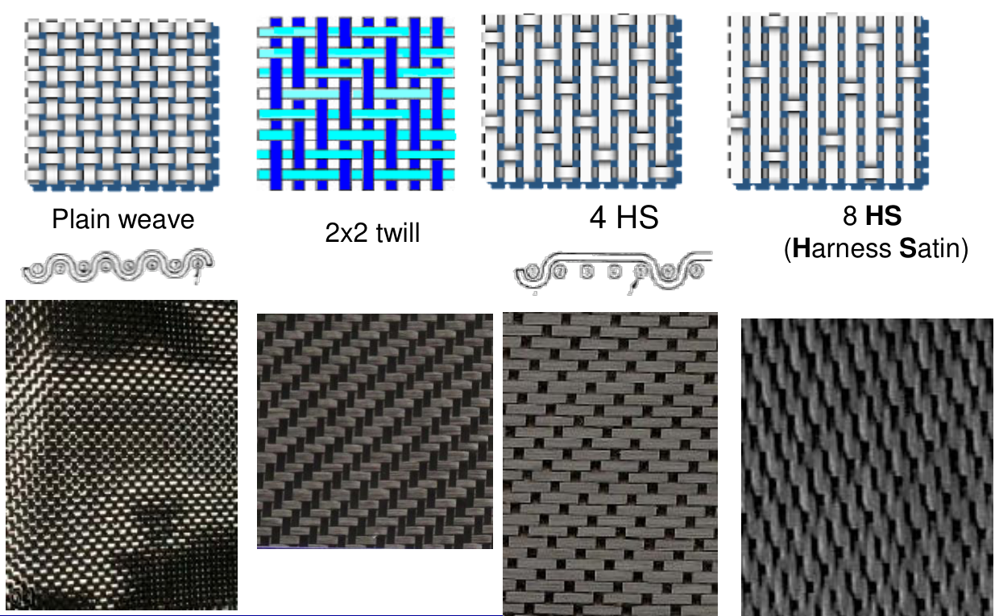
Answer and explanation
Answer: d)
Session 21, Slide 31: the left-hand schematic and cross-section show plain weave alternating over-and-under at every consecutive perpendicular tow, producing the highest crimp frequency and tightest interlacing; $2\times2$ twill, 4 HS and 8 HS allow yarns to float straight across multiple orthogonal tows between intersections, lowering crimp and improving drapeability.
Why the other options are wrong:
- a) 8 HS floats a yarn over seven orthogonal tows before passing under one, giving the lowest crimp of the four.
- b) 4 HS floats over three tows before crossing under one (shown in the middle cross-section), producing far less crimp than plain weave.
- c) $2\times2$ twill crosses over two and under two yarns, giving intermediate undulation below plain weave.
Session 21, Slide 31.
Question 5 · Symmetric and balanced laminate design rule
Why must structural continuous-fibre laminates always be stacked symmetrically with respect to their mid-plane and in balanced ply orientations?
Answer and explanation
Answer: a)
Session 21, Slide 37: laminates must always be symmetric with respect to their mid-plane and balanced in orientation to avoid anomalous distortions of the structure (thermal curing shrinkage or axial loading of an unsymmetric lay-up induces twisting and bending distortion).
Why the other options are wrong:
- b) Directly contradicts Slide 37: a stack of dry fabrics without a connecting matrix has no structural use.
- c) Plies at $0^\circ$, $90^\circ$ and $\pm45^\circ$ carry different axial stresses according to their orientation relative to the load.
- d) Lay-up symmetry is a geometric stacking condition and does not change a thermoset polymer into a thermoplastic.
Session 21, Slide 37.
Question 6 · Quasi-isotropic vs unidirectional laminate stacking
Compare the two eight-ply laminates shown below. What mechanical advantage does the right-hand $[0^\circ/90^\circ/+45^\circ/-45^\circ]_s$ stacking sequence provide that the left-hand $[0^\circ]_8$ stack lacks?

Answer and explanation
Answer: d)
Session 21, Slide 37: unidirectional $[0^\circ]_8$ composites are never used alone in real structures because transverse strength and stiffness drop dramatically; combining $0^\circ$, $90^\circ$ and $\pm45^\circ$ plies in the symmetric cross-plied sequence achieves plane isotropy (strength and stiffness in every in-plane direction) while avoiding mid-plane distortion.
Why the other options are wrong:
- a) Replacing $0^\circ$ plies with $90^\circ$ and $\pm45^\circ$ plies lowers the $0^\circ$ modulus relative to a pure $[0^\circ]_8$ laminate in exchange for multi-directional capability.
- b) A matrix is always required, and low impact damage tolerance remains a limitation of laminated PMCs (Slides 15 and 37).
- c) Fibres lie only within the $x\text{–}y$ plane, so out-of-plane through-thickness ($z$) properties remain matrix-dominated.
Session 21, Slide 37.
Question 7 · Sandwich panel face sheets and core functions
Regarding the structural roles of the components in a composite sandwich panel, which one of the following statements is FALSE:
Answer and explanation
Answer: c)
Session 21, Slide 38: in a sandwich panel, the stiff external face sheets carry almost all in-plane loads and bending stresses, whereas the lightweight core keeps the faces separated, resists deformation perpendicular to the faces and carries transverse shear stresses. Statement c) swaps the structural functions of the faces and the core.
Why the other options are wrong:
- a) True (Slide 38): lists both the exact mechanical role and the face-sheet materials.
- b) True (Slide 38): lists all five core materials/architectures taught in the lecture.
- d) True (Slide 38): accurately describes the three mechanical functions of the sandwich core.
Session 21, Slide 38.
Question 8 · GLARE composition and aerospace applications
Which statement accurately describes the constituents and aerospace applications of GLARE?
Answer and explanation
Answer: b)
MATERIALS_FINALEXAM_2015_ORD.pdf, p. 6 (Q4a–b), Session 21, Slide 39 and Session 23, Slides 48 and 51: GLARE ("GLAss-REinforced" Fibre Metal Laminate, FML) consists of very thin sheets of aluminium alternated with unidirectional fibreglass/epoxy prepreg layers oriented as required; it is used in aviation fuselage panels (forming ~3 % of the Airbus A380 airframe) and leading edges of tail surfaces.
Why the other options are wrong:
- a) Describes a metallic/aramid honeycomb sandwich or high-temperature CMC engine seal rather than GLARE.
- c) Describes a particulate or short-fibre metal-matrix composite, not a glass-reinforced FML.
- d) Describes a ceramic-matrix composite ($\text{SiC/SiC}$) for extreme thermal applications (Session 23, Slides 38–41).
MATERIALS_FINALEXAM_2015_ORD.pdf, p. 6 (Q4a–b); Session 21, Slide 39; Session 23, Slides 48 and 51.
Official examQuestion 9 · Material substituted by GLARE and its main advantages
Regarding the conventional structural alloy replaced by GLARE in civil aircraft fuselages and the main advantages obtained, indicate which statement is TRUE:
Answer and explanation
Answer: a)
MATERIALS_FINALEXAM_2015_ORD.pdf, p. 6 (Q4c) and Session 21, Slide 39 (with topic extension on crack bridging): GLARE replaces monolithic fuselage aluminium alloys (such as Al 2024); combining thin Al sheets with glass/epoxy prepreg layers delivers much slower fatigue crack growth (improved damage tolerance), lower density/weight savings, better corrosion barrier performance and improved fire resistance.
Why the other options are wrong:
- b) Inverts the comparison: GLARE competes against monolithic Al alloys in fuselage skins to save weight and enhance damage tolerance, not against carbon/epoxy to increase mass.
- c) Confuses fuselage skin laminates with hot-section superalloys + ceramic TBCs (Session 18, Slide 41).
- d) Misstates GLARE construction: it is a multi-layer bonded FML using epoxy matrix/adhesive rather than a core substitute.
MATERIALS_FINALEXAM_2015_ORD.pdf, p. 6 (Q4c); Session 21, Slide 39.
Official examQuestion 10 · Why sandwich geometry raises bending stiffness-to-weight
Separating two thin, strong face sheets with a thicker low-density honeycomb or foam core produces a sandwich panel with exceptionally high bending stiffness for its weight primarily because:
Answer and explanation
Answer: d)
Session 21, Slide 38 (with beam-mechanics extension noted in Topic 10): like the flanges and web of an I-beam, moving stiff face sheets away from the neutral axis multiplies flexural rigidity (scaling with core separation squared) at very low core mass, while the core carries transverse shear and maintains face separation.
Why the other options are wrong:
- a) Intrinsic Young's modulus of the face-sheet material does not change; the geometric second moment of area increases instead.
- b) Core foams and honeycomb cells remain separate from the face sheets and lower bulk panel density rather than densifying the faces.
- c) Bending normal stress is zero at the mid-plane (neutral axis) and peaks in the outer face sheets, while the adhesive bonds faces to core.
Session 21, Slide 38.
B96 — Polymer matrices: thermosets vs thermoplastics
Ten test questions on composite materials, written for this portal in the style of Part I of Assessment Test III. Each question has four options and only one is right. Answer all ten before opening any explanation.
Question 1 · Advantages and disadvantages of polymer-matrix composites
Regarding the advantages and disadvantages of advanced polymer-matrix composites (PMCs) in aerospace structures, which one of the following statements is FALSE:
Answer and explanation
Answer: c)
Session 22, Slides 2–3: polymer-matrix composites have low thermal conductivity and low electrical conductivity relative to aluminium skins, so aircraft composite structures explicitly require additional protection against lightning strikes as well as against erosion.
Why the other options are wrong:
- a) True (Slide 2): lists core PMC advantages including specific performance, fatigue resistance, no corrosion and part integration.
- b) True (Slide 3): lists key PMC limitations including high capital/material cost, sandwich water ingress, low impact tolerance and poor recyclability.
- d) True (Slide 3): costly evaluation/certification programmes and added erosion protection are explicit PMC disadvantages.
Session 22, Slides 2–3.
Question 2 · Building-block certification pyramid
The qualification and certification pyramid for aerospace composite structures is shown below. How does this building-block hierarchy explain the high evaluation cost of PMCs?

Answer and explanation
Answer: b)
Session 22, Slide 3: the certification pyramid starts at the broad base with material qualification (coupons and details) and narrows upward through aircraft certification (elements, sub-components and full-scale structural components), requiring large numbers of tests at multiple scales and driving high qualification cost.
Why the other options are wrong:
- a) Contradicts the diagram base: thousands of coupons and structural details must be qualified before building up to elements and components.
- c) Reverses the temporal sequence: material qualification precedes aircraft certification.
- d) Misstates what coupons test: the coupon sketches show tensile, shear, bolted-joint and bending mechanical tests, not aerodynamics.
Session 22, Slide 3.
Question 3 · Thermosetting vs thermoplastic polymer matrices
Referring to the fundamental contrast between thermosetting and thermoplastic composite matrices, which one of the following statements is TRUE:
Answer and explanation
Answer: a)
Session 22, Slides 4–5: thermosets are cross-linked polymers whose processing is irreversible and cured via chemical reaction (1–2 h), giving low pre-cure viscosity and good fibre wetting; thermoplastics are uncrosslinked, non-reacting and reversibly consolidated by heat and pressure ($300\text{–}400\ ^\circ\text{C}$), with very high melt viscosities.
Why the other options are wrong:
- b) Attributes thermoset crosslinking and irreversibility to thermoplastics.
- c) Inverts shelf life (Slide 4–5): thermosets have low/restricted storage life (requiring refrigeration for prepregs), while thermoplastics have unlimited shelf life at room temperature.
- d) Inverts viscosity (Slide 4): thermoplastics have very high melt viscosities requiring high pressure and shear forces that risk reinforcement damage.
Session 22, Slides 4–5.
Question 4 · Epoxy as the dominant structural thermoset matrix
Which thermosetting resin family dominates structural aerospace composites because it combines low curing shrinkage, a wide viscosity window for fibre wetting, good mechanical properties up to $60\text{–}150\ ^\circ\text{C}$ and excellent adhesion to most fibres?
Answer and explanation
Answer: d)
Session 22, Slides 8, 10 and 11: epoxy resins (such as Hexcel 920 or Hercules 3501, cured at $120\ ^\circ\text{C}$ or $180\ ^\circ\text{C}$) are the most widely used matrices in structural aerospace composites thanks to low shrinkage, good fibre adhesion, easy wetting and balanced mechanical properties.
Why the other options are wrong:
- a) Polyesters show lower modulus ($1.3\text{–}4.5\text{ GPa}$), higher thermal expansion ($100\text{–}200 \times 10^{-6}\text{ K}^{-1}$) and lower aerospace structural share than epoxies (Slide 11).
- b) Phenolics are primarily selected for FST/interior fire-retardant uses rather than primary structural matrices.
- c) Condensation polyimides (PMR-15) are far more expensive and difficult to process, reserved for extended high-temperature service up to $\sim 230\text{–}320\ ^\circ\text{C}$ (Slides 8 and 10).
Session 22, Slides 8, 10 and 11.
Question 5 · Bismaleimides (BMI) and polyimides (PI)
Which of the following statements about high-temperature thermosetting matrices—bismaleimides (BMIs) and polyimides (PIs)—is FALSE:
Answer and explanation
Answer: b)
Session 22, Slides 9–10: BMIs are explicitly even less tough than epoxies, undergo curing shrinkage, and are prone to microcracking during prolonged exposure to high temperatures or thermal cycling (while toughened BMI Cytec 5250-4 improves damage resistance at the expense of lowering max wet capability from $230$ to $180\ ^\circ\text{C}$).
Why the other options are wrong:
- a) True (Slides 9–10): BMIs have $T_g = 275\text{–}300\ ^\circ\text{C}$, operate around $230\text{–}250\ ^\circ\text{C}$ and need post-cure for optimum properties.
- c) True (Slides 8 and 10): PMR-15 condensation polyimide reaches $320\ ^\circ\text{C}$ max capability with oxidation resistance, low toughness and difficult processing.
- d) True (Slides 8 and 11): PIs are more expensive and exhibit higher water absorption ($4\text{–}4.5\%$) and lower stiffness than many epoxies.
Session 22, Slides 8–11.
Question 6 · Glass transition temperature ranking of thermosets
Order the three aerospace thermosetting matrix families by increasing glass transition temperature ($T_g$):
Answer and explanation
Answer: c)
Session 22, Slide 11: the property table reports $T_g = 120\text{–}190\ ^\circ\text{C}$ for epoxies, $275\text{–}300\ ^\circ\text{C}$ for bismaleimides and $300\text{–}350\ ^\circ\text{C}$ for polyimides, matching their progressive use at higher service temperatures.
Why the other options are wrong:
- a) Reverses the ranking from highest to lowest $T_g$.
- b) Swaps epoxies above bismaleimides, ignoring BMI's higher aromatic/imide crosslink density.
- d) Swaps polyimides below bismaleimides ($300\text{–}350\ ^\circ\text{C}$ vs $275\text{–}300\ ^\circ\text{C}$).
Session 22, Slide 11.
Question 7 · Toughening agents in thermosetting resins
Which type of resin additive precipitates during curing as fine particles—via either a dispersed thermoplastic polymer such as polyethersulphone (PES) or an in-situ CTBN rubber dispersion—to modify crack propagation in brittle thermosets?
Answer and explanation
Answer: a)
Session 22, Slide 12: toughening agents precipitate from the reacting resin during curing as fine dispersed particles that alter crack propagation and improve toughness, achieved via either pre-formulated thermoplastic dispersions (such as polyethersulphone, PES) or in-situ rubber dispersions (carboxyl- or amine-terminated CTBN rubbers).
Why the other options are wrong:
- b) Solvents are added strictly to reduce pre-cure resin viscosity for handling and fibre wet-out, then evaporated before full cure.
- c) Inert fillers (including hollow spheres) modify density, resin flow, cost and effective modulus without acting via CTBN/PES precipitation toughening.
- d) Plasticizers lower elastic modulus and raise elongation to failure by spacing chains rather than precipitating discrete CTBN or PES particles.
Session 22, Slide 12.
Question 8 · Roles of solvents, plasticizers and inert fillers
In thermosetting matrix formulation, adding inert fillers (such as hollow glass spheres) instead of volatile solvents or plasticizers primarily alters:
Answer and explanation
Answer: d)
Session 22, Slide 12: inert fillers (including hollow spheres) are added to alter composite density, resin flow, manufacturing cost and effective modulus, whereas solvents reduce viscosity before curing and plasticizers reduce elastic modulus while increasing elongation to failure.
Why the other options are wrong:
- a) Describes volatile solvents used to lower viscosity prior to curing, not permanent inert fillers.
- b) Inert fillers do not participate chemically in stoichiometric crosslinking.
- c) Matrix fillers reside in the polymer resin and do not chemically etch reinforcing carbon filaments.
Session 22, Slide 12.
Question 9 · Advantages and limitations of thermoplastic matrices
Regarding thermoplastic matrices (such as PEEK, PPS and PEI) used to substitute thermosets in aerospace composites, which one of the following statements is FALSE:
Answer and explanation
Answer: b)
Session 22, Slides 4–5 and 13: thermoplastic matrices undergo no curing reaction, so they have unlimited shelf life at room temperature (no $-18\ ^\circ\text{C}$ storage needed) and much higher toughness and strain at fracture ($30\text{–}100\%$) than brittle thermosets.
Why the other options are wrong:
- a) True (Slide 13): lists room-temperature storage, unlimited shelf life, $30\text{–}100\%$ fracture strain, good FST behaviour and reprocessability.
- c) True (Slides 5, 13 and 15): process temperatures of $340\text{–}400\ ^\circ\text{C}$ and high pressure drive up manufacturing cost.
- d) True (Slide 5): thermoplastic disadvantages explicitly include lower resistance to organic solvents in some cases and creep proneness.
Session 22, Slides 4–5, 13 and 15.
Question 10 · Amorphous vs semicrystalline thermoplastic matrices
Which of the following statements contrasting amorphous and semicrystalline thermoplastic matrices is TRUE:
Answer and explanation
Answer: c)
Session 22, Slides 14–15: semicrystalline thermoplastics (PEEK, PPS) possess high molecular order and very good resistance to aggressive fluids, but have a critical processing window—especially cooling rate, which determines crystallinity and mechanical behaviour; amorphous thermoplastics (such as PEI) rely on entanglements, have a wide processing window and show low resistance to aggressive fluids.
Why the other options are wrong:
- a) Inverts fluid resistance: semicrystalline PEEK and PPS resist aggressive fluids much better than amorphous PEI (Slide 14).
- b) Misclassifies PEEK and PPS as amorphous (they are semicrystalline) and ignores their $340\text{–}400\ ^\circ\text{C}$ processing temperatures (Slide 15).
- d) Misclassifies PSF and PES (listed under thermoplastic matrix materials on Slides 14–15) as thermosets.
Session 22, Slides 14–15.
B97 — Composite interface and fibre alignment
Ten test questions on composite materials, written for this portal in the style of Part I of Assessment Test III. Each question has four options and only one is right. Answer all ten before opening any explanation.
Question 1 · Interface vs interphase and ideal bonding
Referring to the interface region between matrix and reinforcement in a composite material, which one of the following statements is TRUE:
Answer and explanation
Answer: a)
Session 22, Slides 16–17: the interface is the planar region separating two components, whereas the newer concept of an interphase denotes a spatial region possessing volume and property gradients between fibre and matrix; while analytical models assume a "perfect bond" (no debonding, cracking or sliding), matrix plastic deformation near the interface affects real failure.
Why the other options are wrong:
- b) Reverses Slide 17: "perfect bond" is only an idealised modelling assumption, whereas in practice plastic deformation of the matrix near the interface influences failure.
- c) Contradicts the definition of a "perfect bond" on Slide 17, which explicitly means no debonding, cracking or sliding.
- d) Contradicts Slide 16: the final properties of a fibre-reinforced PMC depend directly on interfacial adherence.
Session 22, Slides 16–17.
Question 2 · Mechanisms of interfacial bond formation
Which of the following statements about the mechanisms that form interfacial bonds between matrix and fibres is FALSE:
Answer and explanation
Answer: d)
Session 22, Slide 17: the four interfacial bond-formation mechanisms are (1) adsorption and wetting, (2) interdiffusion and chemical reaction, (3) electrostatic attraction and (4) mechanical keying. Polymer matrices and glass/carbon/aramid fibres do not bond via magnetic domain alignment or dislocation pile-ups.
Why the other options are wrong:
- a) True (Slide 17): adsorption and wetting are listed as a primary interfacial bonding mechanism.
- b) True (Slide 17): interdiffusion and chemical reaction form the chemical/diffused bridge at the interface.
- c) True (Slide 17): electrostatic attraction and mechanical keying are explicitly included among the four bonding mechanisms.
Session 22, Slide 17.
Question 3 · Coupling agent bonding across the glass–polymer interphase
The schematic below models the molecular action of a silane coupling agent between a glass fibre and a polymer matrix. How does this sizing bridge improve interfacial bond strength?
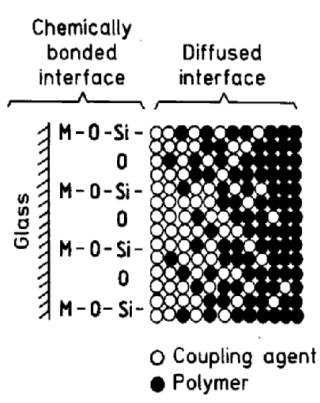
Answer and explanation
Answer: b)
Session 22, Slide 18: the left half of the schematic shows the chemically bonded interface ($\text{M–O–Si}$ covalent linkages anchored to the glass), and the right half shows the coupling agent interdiffusing into the polymer matrix to create a continuous, graded interphase rather than weak physical contact.
Why the other options are wrong:
- a) Contradicts the diagram label "Diffused interface" and the open/filled molecule mixing shown on the right.
- c) Confuses glass-fibre organosilane coupling with metallic aluminium anodising (used for adhesive bonding of metals in Topic 11).
- d) Glass fibres retain their distinct solid identity across the bonded interface rather than dissolving away.
Session 22, Slide 18.
Question 4 · SEM evidence of poor interfacial adherence
Examine the SEM fractograph of a fibre-reinforced polymer composite below. Which microstructural evidence directly indicates ineffective interfacial load transfer on this fracture surface?

Answer and explanation
Answer: c)
Session 22, Slide 16: the left SEM micrograph (poor adherence matrix–fibres) shows bare, smooth cylindrical filaments separated from the surrounding fractured matrix by clear gaps, demonstrating interfacial debonding and clean pull-out with minimal resin adhesion.
Why the other options are wrong:
- a) Describes the opposite micrograph (good adherence), where matrix fragments coat the fibres rather than leaving bare surfaces.
- b) Describes ceramic-matrix toughening mechanisms (Session 23, Slide 38), not clean pull-out of bare fibres in a PMC.
- d) Describes dispersion-strengthened MMCs such as TD-Nickel (Session 21, Slides 12–13), unrelated to this PMC fractograph.
Session 22, Slide 16.
Question 5 · SEM evidence of good interfacial adherence
Inspect the SEM fracture surface of a fibre-reinforced polymer composite below. What microstructural feature demonstrates that fracture propagated through the matrix rather than cleanly debonding along the interface?
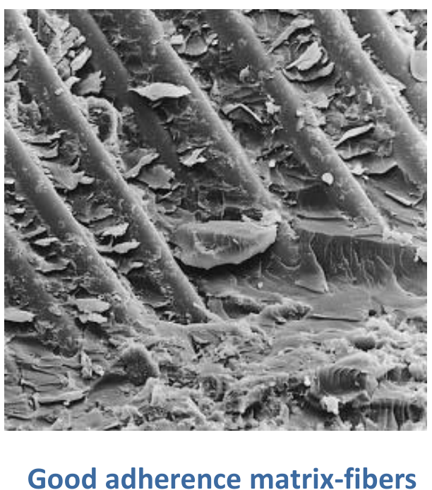
Answer and explanation
Answer: a)
Session 22, Slide 16: in the good-adherence SEM micrograph, fractured polymer matrix debris clings tightly to the fibre surfaces all along their length, proving that the interfacial bond was strong enough to force failure into the surrounding resin rather than cleanly debonding at the fibre wall.
Why the other options are wrong:
- b) Describes the poor-adherence micrograph with clean debonded fibres, the exact opposite of what is shown here.
- c) The micrograph displays parallel aligned continuous fibres coated with fractured matrix, not unbonded random chopped fibres.
- d) Describes FML (GLARE) delamination rather than single-filament polymer-matrix adhesion.
Session 22, Slide 16.
Question 6 · Interfacial diffusion and reaction barrier coatings
Beyond coupling agents that strengthen adhesion, coatings applied to fibres in high-temperature metal-matrix composites (such as carbon-coated $\text{SiC}$ fibres in titanium aluminide) often serve as:
Answer and explanation
Answer: b)
Session 22, Slide 18 (with Session 21, Slide 34 and Session 23, Slide 30): interfacial bond control relies on coupling agents, toughness-reducing coatings and interfacial chemical reaction and diffusion barrier coatings; in MMCs processed at elevated temperature, metals react chemically with fibres unless a barrier coating (such as carbon on $\text{SiC}$) protects the fibre.
Why the other options are wrong:
- a) Volatile solvents belong to pre-cure thermoset resin handling (Session 22, Slide 12), not high-temperature MMC fibre coatings.
- c) Elastomeric plasticizers are added to bulk thermoset polymers, not as ceramic-fibre coatings inside titanium alloys.
- d) PVAc/organosilane sizings target room-temperature glass-fibre handling and PMC interfaces, whereas high-temperature MMCs require diffusion barriers.
Session 22, Slide 18; Session 21, Slide 34; Session 23, Slide 30.
Question 7 · Directional anisotropy across UD, 0/90, $\pm 45^\circ$ and CSM laminates
Which of the following statements comparing the directional properties of continuous and chopped-strand epoxy/polyester composites is FALSE:
Answer and explanation
Answer: d)
Session 21, Slide 41: going from a $0/90$ woven carbon/epoxy laminate ($50\text{ vol\%}$) to a $\pm45^\circ$ woven carbon/epoxy laminate ($50\text{ vol\%}$), the $0^\circ$ tensile modulus drops sharply from $70\text{ GPa}$ to $18\text{ GPa}$ ($\text{UTS } 0^\circ$ drops from $625$ to $240\text{ MPa}$), while the in-plane shear modulus $G$ rises over fivefold from $5\text{ GPa}$ to $27\text{ GPa}$.
Why the other options are wrong:
- a) True (Slide 41): UD carbon/epoxy shows extreme $0^\circ/90^\circ$ anisotropy ($134$ vs $11\text{ GPa}$; $2040$ vs $90\text{ MPa}$).
- b) True (Slide 41): $0/90$ woven carbon/epoxy balances $0^\circ$ and $90^\circ$ properties at $70\text{ GPa}$ and $625\text{ MPa}$.
- c) True (Slide 41): randomly oriented CSM E-glass/polyester is in-plane isotropic ($8\text{ GPa}$, $108\text{ MPa}$ in both $0^\circ$ and $90^\circ$).
Session 21, Slide 41.
Question 8 · High shear modulus of $\pm45^\circ$ laminates
Why does a $\pm45^\circ$ woven carbon/epoxy laminate ($50\text{ vol\%}$) reach a shear modulus $G = 27\text{ GPa}$, compared with only $5\text{ GPa}$ for both unidirectional ($0^\circ$) and $0/90$ woven carbon/epoxy?
Answer and explanation
Answer: c)
Session 21, Slide 41 (and mechanics-of-materials explanation in Topic 10): under pure in-plane $0^\circ/90^\circ$ shear, the principal normal stresses (tension and compression) act at $\pm45^\circ$; placing carbon fibres at $\pm45^\circ$ aligns the stiff fibres directly with those principal stresses instead of shearing the compliant epoxy matrix between $0^\circ/90^\circ$ plies.
Why the other options are wrong:
- a) Carbon filaments are chemically inert during ply orientation and do not crosslink directly with adjacent filaments.
- b) The epoxy matrix remains the same thermosetting polymer ($G$ of pure epoxy is $<3\text{ GPa}$); fibre orientation drives the jump in $G$.
- d) Both $0/90$ and $\pm45^\circ$ woven carbon/epoxy entries on Slide 41 share the same $50\text{ vol\%}$ fibre fraction.
Session 21, Slide 41.
Question 9 · Longitudinal specific modulus of UD carbon/epoxy
A unidirectional carbon/epoxy composite ($57\text{ vol\%}$ fibres) has a longitudinal elastic modulus $E(0^\circ) = 134\text{ GPa}$ and a density $\rho = 1.57\text{ g/cm}^3$. Calculate its longitudinal specific tensile modulus $E/\rho$ in $\text{MJ/kg}$:
Answer and explanation
Answer: b)
Session 21, Slides 41 and 43: converting units, $1\ \text{GPa}/(\text{g/cm}^3) = \dfrac{10^9\ \text{N/m}^2}{10^3\ \text{kg/m}^3} = 10^6\ \text{N}\cdot\text{m/kg} = 1\ \text{MJ/kg}$. Therefore, $E/\rho = \dfrac{134}{1.57} = 85.35 \approx 85.4\text{ MJ/kg}$.
Why the other options are wrong:
- a) Used the transverse modulus $E(90^\circ) = 11\text{ GPa}$ instead of longitudinal $E(0^\circ)$: $11 / 1.57 = 7.01\text{ MJ/kg}$.
- c) Multiplied modulus by density ($134 \times 1.57 = 210.4$) instead of dividing $E$ by $\rho$.
- d) Used the $0/90$ woven laminate modulus ($70\text{ GPa} / 1.53\text{ g/cm}^3 = 45.75 \approx 45.8\text{ MJ/kg}$) instead of the unidirectional laminate data.
Session 21, Slides 41 and 43.
Question 10 · Unidirectional composites ordered by specific modulus
Order the following unidirectional epoxy-matrix composites from lowest to highest longitudinal specific modulus ($E/\rho$):
Answer and explanation
Answer: a)
Session 21, Slides 41 and 43: from the specific-property comparison in an epoxy matrix, longitudinal specific modulus ($E/\rho$) increases strictly in the order E-glass/epoxy ($\sim 20\text{–}22\text{ MJ/kg}$) $<$ Kevlar 49/epoxy ($\sim 55\text{–}58\text{ MJ/kg}$) $<$ high-strength carbon/epoxy ($\sim 85\text{–}90\text{ MJ/kg}$) $<$ high-modulus graphite/epoxy ($\sim 178\text{ MJ/kg}$).
Why the other options are wrong:
- b) Swaps Kevlar 49 below E-glass, ignoring Kevlar's much lower density ($1.38$ vs $1.92\text{ g/cm}^3$) and higher modulus ($76$ vs $39\text{ GPa}$ in epoxy).
- c) Reverses the entire order from highest to lowest specific modulus.
- d) Places high-modulus graphite ahead of only E-glass instead of at the top of the stiffness-to-weight chart (Slide 43).
Session 21, Slides 41 and 43.
B98 — Longitudinal isostrain micromechanics
Ten test questions on composite materials, written for this portal in the style of Part I of Assessment Test III. Each question has four options and only one is right. Answer all ten before opening any explanation.
Question 1 · Isostrain assumptions along continuous fibres
Referring to the mechanics-of-materials model for a unidirectional composite loaded parallel to continuous aligned fibres, which one of the following statements is TRUE:
Answer and explanation
Answer: b)
Session 22, Slides 20-22: under longitudinal loading with good fibre-matrix bonding, the composite obeys isostrain ($\varepsilon_C = \varepsilon_f = \varepsilon_m$). Force equilibrium $F_C = F_f + F_m$ with equal lengths $L_C = L_f = L_m$ turns area fractions into volume fractions ($A_f/A_C = V_f$), yielding $\sigma_{1C} = V_f\sigma_{1f} + V_m\sigma_{1m}$ and $E_{1C} = V_f E_f + V_m E_m$.
Why the other options are wrong:
- a) Confuses longitudinal isostrain with transverse isostress: equal stress ($\sigma_f = \sigma_m$) holds only when loading is perpendicular to the fibres (Slide 23).
- c) Violates the geometric premise of continuous aligned fibres spanning the whole specimen, where $L_C = L_f = L_m$ (Slide 21).
- d) Applies the transverse isostress harmonic-mean formula (Eq. 2, Slide 24) instead of the longitudinal rule of mixtures (Eq. 1, Slide 22).
Session 22, Slides 20-24.
Question 2 · Phase carrying the majority of longitudinal load
A continuous and aligned composite containing 30 vol% silicon carbide fibres ($E_f = 400$ GPa) in 70 vol% polycarbonate matrix ($E_m = 2.4$ GPa) is loaded along the fibre axis. Which phase supports the vast majority of the applied load, and why?
Answer and explanation
Answer: d)
June 2017 extraordinary final exam, Q9b (and Session 22, Slides 21-22): under longitudinal isostrain ($\varepsilon_f = \varepsilon_m$), Hooke's law gives $\sigma_f/\sigma_m = E_f/E_m = 400/2.4 = 166.7$. Multiplying by the area ratio $A_f/A_m = V_f/V_m = 0.30/0.70$ gives the fibre-to-matrix load ratio $F_f/F_m = (E_f V_f)/(E_m V_m) = (400 \times 0.30)/(2.4 \times 0.70) = 71.4$, so the fibres carry roughly 98.6 % of the load.
Why the other options are wrong:
- a) Looks only at volume fraction $V_m = 0.70$ and ignores the 167-fold stiffness advantage of SiC fibres over polycarbonate.
- b) Confuses isostrain ($\varepsilon_f = \varepsilon_m$) with isostress ($\sigma_f = \sigma_m$); even with equal stress, unequal areas would not split the load equally.
- c) Violates strain compatibility: in longitudinal isostrain, the matrix cannot deform more than the bonded fibres ($\varepsilon_m = \varepsilon_f$).
MATERIALS_FINALEXAM_2017_EXTRA.pdf, pp. 5-6 Q9b; Session 22, Slides 21-22.
Official examQuestion 3 · Longitudinal modulus of an E-glass/polyester composite
A unidirectional continuous E-glass/polyester composite contains 40 vol% aligned fibres ($E_f = 72.0$ GPa) in a polyester matrix ($E_m = 3.4$ GPa). Under longitudinal isostrain conditions, what is its longitudinal elastic modulus $E_{1C}$?
Answer and explanation
Answer: a)
Session 22, Slide 22 (and Problems T10, Q5a): by the longitudinal rule of mixtures, $E_{1C} = V_f E_f + (1 - V_f)E_m = 0.40(72.0\text{ GPa}) + 0.60(3.4\text{ GPa}) = 28.80 + 2.04 = 30.84\text{ GPa} \approx 30.8\text{ GPa}$.
Why the other options are wrong:
- b) Applies the transverse isostress equation $E_{2C} = [0.40/72.0 + 0.60/3.4]^{-1} = 5.49\text{ GPa}$ instead of the longitudinal isostrain rule.
- c) Swaps the volume fractions, computing $0.60(72.0) + 0.40(3.4) = 44.56\text{ GPa}$ as if the composite contained 60 vol% fibres.
- d) Neglects the matrix contribution $V_m E_m = 2.04\text{ GPa}$ by using the rough approximation $E_1 \approx V_f E_f = 28.8\text{ GPa}$, which underestimates $E_{1C}$ at $V_f = 40\%$.
Problems T10_CompositeMaterials.pdf, Q5; Session 22, Slide 22.
Question 4 · Fibre load ratio and matrix contribution
When a continuous aligned composite with $V_f = 55\%$ and $E_f \gg E_m$ is loaded longitudinally in the elastic regime, the matrix contribution $(1 - V_f)E_m$ to $E_{1C}$ is small, so:
Answer and explanation
Answer: c)
Session 22, Slide 22: when $E_f \gg E_m$ at typical fibre contents ($V_f = 50\text{–}60\%$), the matrix term $(1 - V_f)E_m$ is negligible relative to $V_f E_f$, giving $E_1 \approx E_f V_f$. Consequently, the fraction of longitudinal force carried by the fibres is $F_f/F_C = V_f E_f / E_{1C} \approx 1$.
Why the other options are wrong:
- a) Overstates the small matrix term: because $E_f \gg E_m$, raising $V_f$ dominates $E_{1C}$ far more than modest changes in $E_m$.
- b) Prints the transverse approximation $E_2 \approx E_m/V_m$ (Slide 24), which applies perpendicular to the fibres rather than along them.
- d) Inverts the stress ratio: under isostrain, $\sigma_f/\sigma_m = E_f/E_m \gg 1$, so the fibres carry much higher stress than the matrix.
Session 22, Slides 22 and 24; Problems T10_CompositeMaterials.pdf, Q4, Q6.
Question 5 · Critical and minimum fibre volume fractions
Regarding the longitudinal tensile strength $\sigma_{cu}$ of a unidirectional composite with brittle fibres ($\sigma_{fu}$) in a ductile matrix ($\sigma_{mu}$) as a function of fibre volume fraction $V_f$, which one of the following statements is FALSE:
Answer and explanation
Answer: b)
Session 22, Slide 26: when $V_f < V_{\text{crit}}$, the composite tensile strength actually falls below that of the unreinforced matrix $\sigma_{mu}$; in particular, for $0 < V_f < V_{\min}$, fractured fibres leave voids so only the matrix fraction $(1 - V_f)$ carries load, giving $\sigma_{cu} = \sigma_{mu}(1 - V_f) < \sigma_{mu}$. Statement b is false.
Why the other options are wrong:
- a) True: Slide 26 explicitly prints $\sigma_C = \sigma_m(1 - V_f)$ for the post-fibre-fracture regime governing low $V_f$.
- c) True: above $V_{\text{crit}}$, the rule-of-mixtures branch $\sigma_{fu}V_f + \sigma'_m(1 - V_f)$ surpasses $\sigma_{mu}$ (Slide 26).
- d) True: with $\sigma_{fu}$ orders of magnitude above $\sigma_{mu}$, $V_{\min}$ and $V_{\text{crit}}$ are small compared with typical 50-60 vol% aerospace laminates.
Session 22, Slide 26.
Question 6 · Candidate fibre selection at capped volume fraction
An epoxy matrix ($E_m = 3.1$ GPa, $\sigma_m = 69$ MPa) is reinforced with continuous aligned fibres at $V_f \le 40\%$. Minimum requirements are $E_{1C} \ge 55$ GPa and $\sigma_{1C} \ge 1200$ MPa. Using glass ($E = 72$ GPa, $\sigma = 2000$ MPa), aramid ($E = 124$ GPa, $\sigma = 3500$ MPa), or carbon ($E = 350$ GPa, $\sigma = 3500$ MPa), which reinforcement satisfies both criteria?
Answer and explanation
Answer: c)
Problems T10, Q2 (and Jan 2012 ordinary final, Q5): at the upper limit $V_f = 0.40$, $E_{1C} = 0.40 E_f + 0.60(3.1)$. Glass gives $E_{1C} = 30.7$ GPa (and $\sigma_{1C} = 841$ MPa), failing both targets; aramid gives $\sigma_{1C} = 1441$ MPa (passes strength) but $E_{1C} = 51.5\text{ GPa} < 55$ GPa (fails stiffness); only carbon reaches both $E_{1C} = 141.9$ GPa and $\sigma_{1C} = 1441$ MPa.
Why the other options are wrong:
- a) Glass fails both minimum targets at $V_f = 40\%$, reaching roughly half the required modulus and 70 % of the required strength.
- b) Checks only strength and overlooks that aramid ($E_f = 124$ GPa) reaches at most 51.5 GPa in epoxy at $V_f = 40\%$, below 55 GPa.
- d) Exceeding $V_{\text{crit}}$ ensures the composite outperforms pure epoxy, not that it meets arbitrary stiffness and strength design thresholds.
Problems T10_CompositeMaterials.pdf, Q2; MATERIALS_FINALEXAM_2012_ORD.pdf, p. 3 Q5.
Question 7 · Reading the specific strength vs specific modulus chart
From the plot of specific tensile strength against specific modulus for epoxy-matrix composites, which pair lists, in order, the unidirectional composite with the highest specific tensile strength and the one with the highest specific modulus?

Answer and explanation
Answer: a)
Session 21, Slide 43: on the specific-properties map (in MJ/kg = m²/s²), unidirectional Kevlar 49/epoxy sits at the top of the vertical axis (around 1.45 MJ/kg, just ahead of high-strength graphite), while unidirectional high-modulus graphite/epoxy sits farthest right along the horizontal axis (around 178 MJ/kg).
Why the other options are wrong:
- b) S-glass reaches roughly 1.0 MJ/kg in specific strength (below Kevlar 49 and HS graphite), and Kevlar 49 sits near 58 MJ/kg in specific modulus rather than at the right extreme.
- c) E-glass has the lowest specific strength among the fibres (~0.52 MJ/kg), and boron fibre (~98 MJ/kg) lies well left of high-modulus graphite.
- d) Bulk steel sits near the bottom-left origin (~0.24 MJ/kg specific strength), together with bulk titanium and aluminium alloys.
Session 21, Slide 43.
Question 8 · Stress-strain behaviour of reinforcing fibres
Which statement accurately interprets the tensile stress-strain curves shown for common reinforcing fibres?

Answer and explanation
Answer: d)
Session 21, Slide 40: each reinforcing fibre deforms elastically along a straight line straight to brittle fracture without yielding. High-modulus graphite ($E_T = 414$ GPa) and boron ($379$ GPa) break below 1 % strain, whereas more compliant E-glass ($68.9$ GPa) and S-glass ($82.7$ GPa) sustain 2.5 % to over 3.5 % strain.
Why the other options are wrong:
- a) Attributes ductile yielding to brittle HM graphite yarn, which fractures below 0.6 % strain in a purely linear trace.
- b) Inverts the slopes: E-glass has $E_T = 68.9$ GPa, nearly four times lower than Type HT graphite ($E_T = 262$ GPa).
- c) Misreads the bottom curve: Nomex lies far below every structural reinforcement on both slope and fracture stress.
Session 21, Slide 40.
Question 9 · Unidirectional vs woven and cross-plied epoxy laminates
Which of the following statements is TRUE regarding unidirectional (UD) and multi-directional carbon/epoxy laminates:
Answer and explanation
Answer: b)
Session 21, Slides 37 and 41: UD carbon/epoxy reaches $E_{0^\circ} = 134$ GPa and $\text{UTS}_{0^\circ} = 2040$ MPa along the fibres, but drops to $E_{90^\circ} = 11$ GPa and $\text{UTS}_{90^\circ} = 90$ MPa transversely. A 0/90 woven laminate shares stiffness equally at $70$ GPa in both 0° and 90°, while a $\pm 45^\circ$ carbon laminate raises the shear modulus $G$ to 27 GPa (versus 5 GPa for UD).
Why the other options are wrong:
- a) Contradicts UD anisotropy: UD carbon/epoxy drops more than tenfold in modulus and more than twentyfold in strength from 0° to 90° (Slide 41).
- c) Inverts 0/90 and $\pm 45^\circ$ tensile stiffness: in the table on Slide 41, 0/90 woven carbon/epoxy has $E_{0^\circ} = 70$ GPa whereas $\pm 45^\circ$ has $E_{0^\circ} = 18$ GPa.
- d) Inverts Kevlar's tension-compression asymmetry: UD Kevlar 49/epoxy has $\text{UTS}_{0^\circ} = 1379$ MPa against only $\text{UCS}_{0^\circ} = 276$ MPa (Slide 41).
Session 21, Slides 37 and 41.
Question 10 · Ranking aerospace structural materials by specific modulus
Three aerospace structural candidates are sized to match a longitudinal elastic modulus of $E = 110$ GPa: a monolithic Ti alloy ($E/\rho = 24\,406$ kN·m/kg), a unidirectional boron/aluminium composite ($E/\rho = 41\,431$ kN·m/kg), and a unidirectional carbon/polyester composite ($E/\rho = 78\,314$ kN·m/kg). In order of INCREASING specific modulus (and thus DECREASING part mass for fixed stiffness), they rank as:
Answer and explanation
Answer: c)
Problems T10, Q11 (and Session 21, Slide 43): specific modulus is $E/\rho$. For a fixed part geometry and target longitudinal stiffness $E = 110$ GPa, higher $E/\rho$ directly translates into lower density and lower structural mass (450 kg Ti alloy $\to$ 265 kg B-Al $\to$ 140.3 kg C-PE). Thus increasing specific modulus runs Ti alloy ($24\,406$) < boron/aluminium ($41\,431$) < carbon/polyester ($78\,314$ kN·m/kg).
Why the other options are wrong:
- a) Reverses the ranking, ordering the three candidates by decreasing specific modulus (increasing mass).
- b) Places boron/aluminium below Ti alloy despite its lower density and nearly 70 % higher specific modulus.
- d) Swaps boron/aluminium and carbon/polyester, overlooking the much lower density of a polymer matrix compared with aluminium.
Problems T10_CompositeMaterials.pdf, Q11; Session 21, Slide 43.
B99 — Transverse isostress and fracture curves
Ten test questions on composite materials, written for this portal in the style of Part I of Assessment Test III. Each question has four options and only one is right. Answer all ten before opening any explanation.
Question 1 · Transverse loading of continuous-fibre composites
When stress is applied perpendicular to fibers in a continuous fibers reinforced composite:
Answer and explanation
Answer: b)
Assessment Test III, Paper B Q9 (MATERIALS_THIRDPARTIAL_2020_V2.pdf, p. 5) and Session 22, Slides 23-24: loading perpendicular to continuous fibres places the matrix and fibres in series (isostress), so $\sigma_{2C} = \sigma_f = \sigma_m$. Because $\varepsilon_f = \sigma_2/E'_f$ and $\varepsilon_m = \sigma_2/E_m$ with $E'_f \gg E_m$, the compliant matrix undergoes much higher strain ($\varepsilon_m > \varepsilon_f$).
Why the other options are wrong:
- a) Reverses the stiffness effect: the much stiffer fibres stretch far less than the matrix under equal transverse stress.
- c) Violates series equilibrium in isostress loading, where both phases carry the same transverse stress $\sigma_2$.
- d) Likewise contradicts isostress equilibrium by claiming the matrix carries higher stress than the fibres.
MATERIALS_THIRDPARTIAL_2020_V2.pdf, p. 5 Q9; Session 22, Slides 23-24.
Official examQuestion 2 · Transverse isostress model assumptions and relations
Which of the following statements regarding transverse (isostress) loading of a unidirectional continuous-fibre composite is FALSE:
Answer and explanation
Answer: d)
Session 22, Slides 23-24: transverse loading corresponds to isostress ($\sigma_{2C} = \sigma_f = \sigma_m$), not isostrain. Because the phases act in series, their stresses are equal while their strains differ inversely with modulus ($\varepsilon_m \gg \varepsilon_f$). Statement d describes longitudinal isostrain behaviour and is false for transverse loading.
Why the other options are wrong:
- a) True: along the transverse loading path, displacements add in series ($\Delta L_C = \Delta L_m + \Delta L_f$, Slide 23).
- b) True: dividing $\Delta L_C$ by $L_C$ with $L_f = V_f L_C$ and $L_m = V_m L_C$ yields $\varepsilon_{2C} = V_f\varepsilon_{2f} + V_m\varepsilon_{2m}$ (Slide 23).
- c) True: Slide 23 explicitly states the assumption of unchanged cross-sectional area after the transverse stress is applied.
Session 22, Slides 23-24.
Question 3 · Calculating the transverse modulus E2C
A unidirectional composite contains 25 vol% continuous carbon fibres ($E_f = 390$ GPa) in an epoxy matrix ($E_m = 3.0$ GPa). Assuming isotropic fibre properties ($E'_f = E_f$), what is its transverse elastic modulus $E_{2C}$?
Answer and explanation
Answer: c)
Session 22, Slide 24 (and June 2014 extraordinary final, Q2a): under transverse isostress, $1/E_{2C} = V_f/E'_f + V_m/E_m = 0.25/390.0 + 0.75/3.0 = 0.000641 + 0.250000 = 0.250641\text{ GPa}^{-1}$, so $E_{2C} = 3.99\text{ GPa}$.
Why the other options are wrong:
- a) Applies the longitudinal isostrain rule of mixtures $E_{1C} = 0.25(390) + 0.75(3.0) = 99.75\text{ GPa}$ instead of the transverse harmonic mean.
- b) Swaps the volume fractions in the harmonic formula, computing $[0.75/390.0 + 0.25/3.0]^{-1} = 11.7\text{ GPa}$.
- d) Multiplies $E_m V_m = 3.0 \times 0.75 = 2.25\text{ GPa}$ instead of dividing by $V_m$ in the matrix-controlled approximation $E_2 \approx E_m/V_m = 4.00\text{ GPa}$.
Session 22, Slide 24; MATERIALS_FINALEXAM_2014_EXTRA.pdf, p. 3 Q2a.
Question 4 · Matrix dominance in transverse stiffness
For typical structural fibre-polymer composites with $V_f = 50\text{–}60\%$ and $E_f \gg E_m$, the transverse modulus $E_{2C}$ stays close to $E_m/V_m$ (only about twice $E_m$) because:
Answer and explanation
Answer: a)
Session 22, Slide 24: when $E'_f \gg E_m$, $V_f/E'_f \ll V_m/E_m$ in $1/E_{2C} = V_f/E'_f + V_m/E_m$, so $1/E_{2C} \approx V_m/E_m$ and $E_2 \approx E_m/V_m$. Consequently, at $V_f = 50\text{–}60\%$ ($V_m = 0.40\text{–}0.50$), the transverse modulus is only roughly 2 to 2.5 times $E_m$ because the soft matrix dominates series compliance.
Why the other options are wrong:
- b) Invents a shear-halving argument; the factor of $\sim 2$ comes purely from $1/V_m = 1/0.50 = 2$ in the series compliance sum.
- c) Wrongly assumes instant zero-stress plasticity; the micromechanical formula is derived in the linear elastic regime.
- d) Confuses elastic micromechanics (assuming a perfect interface) with post-yield failure processes.
Session 22, Slide 24; Session 21, Slide 37.
Question 5 · Reading the isostrain vs isostress modulus curves
The plot compares longitudinal (isostrain) and transverse (isostress) elastic moduli for an E-glass/epoxy composite ($E_f = 72.4\times 10^3$ MPa, $E_m = 6.9\times 10^3$ MPa) versus fibre volume fraction $v_f$. At $v_f = 0.5$, how does the isostrain modulus compare with the isostress modulus?
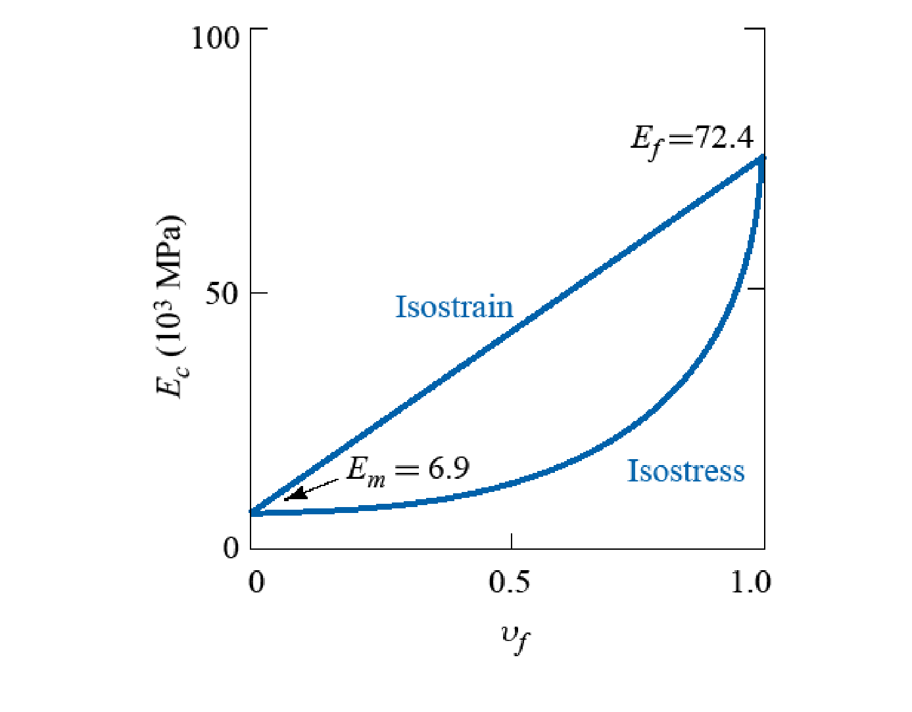
Answer and explanation
Answer: d)
Session 22, Slide 25: the straight upper line (isostrain) gives $E_1(0.5) = 0.5(72.4) + 0.5(6.9) = 39.65\times 10^3$ MPa, whereas the concave lower curve (isostress) rises very gently near $E_m$ at low-to-moderate $v_f$, giving $E_2(0.5) = [0.5/72.4 + 0.5/6.9]^{-1} = 12.60\times 10^3$ MPa (less than a third of $E_1$).
Why the other options are wrong:
- a) The two curves agree only at the pure-phase endpoints $v_f = 0$ and $v_f = 1$, diverging widest near mid-fractions.
- b) Reverses the upper and lower curves: the straight isostrain line is strictly above the isostress curve for all $0 < v_f < 1$.
- c) Swaps the numerical values of the isostrain and isostress curves at $v_f = 0.5$.
Session 22, Slide 25.
Question 6 · Upper and lower bounds for particulate composites
Referring to the power-law approximation $E_C^{\,n} = v_l E_l^{\,n} + v_h E_h^{\,n}$ for composites with uniformly dispersed particles ($l$: lower-modulus phase, $h$: higher-modulus phase), which one of the following statements is TRUE:
Answer and explanation
Answer: c)
Session 22, Slides 27-28: in $E_C^{\,n} = v_l E_l^{\,n} + v_h E_h^{\,n}$, $n = 1$ recovers the linear arithmetic average (isostrain upper bound $E_l v_l + E_h v_h$), and $n = -1$ recovers the harmonic average (isostress lower bound $E_h E_l / (v_h E_l + v_l E_h)$). Semi-empirical models such as Halpin-Tsai (extension) and experimental particulate moduli fall between these bounds.
Why the other options are wrong:
- a) Inverts the signs of $n$: $n = +1$ is the stiffest (isostrain) upper bound, whereas $n = -1$ is the softest (isostress) lower bound.
- b) Spherical/equiaxed particles do not carry continuous load in parallel like fibres, so measured moduli lie between the bounds rather than on $n = 1$.
- d) Density follows the exact linear volume average $\rho_c = \sum f_i\rho_i$, while elastic moduli cannot exceed the Voigt upper bound $n = 1$.
Session 22, Slides 27-28.
Question 7 · Tungsten-reinforced copper modulus bounds
The plot shows the experimental elastic modulus of a copper matrix reinforced with tungsten particles alongside the upper and lower theoretical curves. At 60 vol% tungsten, where do the measured data lie?

Answer and explanation
Answer: a)
Session 22, Slide 28: reading the plot at 60 vol% W ($E_{Cu} \approx 115$ GPa, $E_W \approx 345$ GPa), the blue lower bound lies near 200 GPa (192-203 GPa) and the red upper bound lies near 253 GPa. The green experimental data points sit within this bracket, mostly between about 225 and 255 GPa.
Why the other options are wrong:
- b) Misreads the vertical axis: no data point at 60 vol% W falls below the blue lower-bound curve near 150 GPa.
- c) Misreads the upper bound: 320 GPa is only reached above 85 vol% W, whereas at 60 vol% W the points stay at or below ~255 GPa.
- d) Ignores the clear upward slope of both bounds and experimental points from pure Cu (~115 GPa) to pure W (~345 GPa).
Session 22, Slide 28.
Question 8 · Identifying fibre, composite, and matrix curves
Three tensile stress-strain curves A, B, and C are recorded for a unidirectional continuous-fibre polymer composite and its two separate constituents:
- Curve A rises steeply and linearly to brittle fracture at low strain.
- Curve B rises with an intermediate slope, drops abruptly at the fracture strain of A, and continues along a low plateau before fracturing at the failure strain of C.
- Curve C has the lowest initial slope, yields at low stress, and reaches a higher final fracture stress than the tail of B.
Which option identifies curves A, B, and C, in that order?
Answer and explanation
Answer: b)
June 2016 extraordinary final exam, Q9a (and Session 22, Slide 26): brittle reinforcing fibres have the highest modulus and strength with linear-elastic behaviour to failure (curve A); the unreinforced ductile matrix has the lowest modulus, yields early, and stretches to high strain (curve C); the composite displays an intermediate slope $E_{1C}$, drops sharply when the fibres break, and finishes on a matrix-carried residual tail (curve B).
Why the other options are wrong:
- a) Swaps the steep brittle fibre line (A) with the composite curve showing the two-stage drop (B).
- c) Completely reverses the stiffness and ductility order of fibres (A) and matrix (C).
- d) Swaps the two-stage composite curve (B) with the smooth yielding curve of the unreinforced polymer matrix (C).
MATERIALS_FINALEXAM_2016_EXTRA_SOL.pdf, pp. 4-5 Q9a; Session 22, Slide 26.
Official examQuestion 9 · Residual composite fracture stress vs matrix strength
In the longitudinal tensile stress-strain diagram shown for a unidirectional fibre composite and its constituents, why is the final fracture stress of the unreinforced matrix curve higher than the final fracture stress of the composite tail after all fibres have broken?
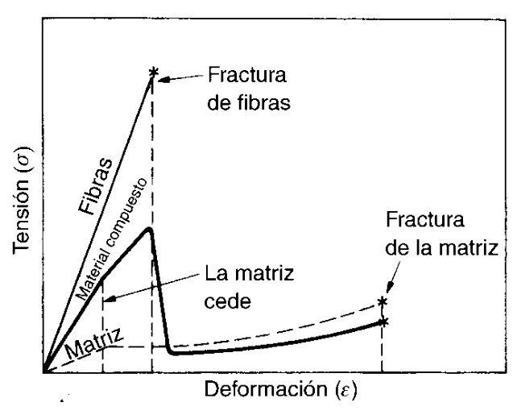
Answer and explanation
Answer: d)
June 2016 extraordinary final exam, Q9b (and Session 22, Slide 26): once the brittle fibres fracture at their failure strain, they cease carrying tensile load across the fracture plane and behave like empty holes. Only the matrix cross-sectional fraction $V_m = (1 - V_f)$ remains active, so the composite fails at $\sigma_C = \sigma_m(1 - V_f)$, which is lower than the unreinforced matrix strength $\sigma_m$.
Why the other options are wrong:
- a) Attributes the drop to compressive thermal stress rather than loss of load-bearing fibre cross-section.
- b) Inverts the effective area change: broken fibres reduce the active load-bearing area to $(1 - V_f)A_C$, not $(1 + V_f)A_C$.
- c) Wrongly claims matrix yielding raises stiffness, which cannot explain why the composite fails at a lower stress than pure matrix.
MATERIALS_FINALEXAM_2016_EXTRA_SOL.pdf, pp. 4-5 Q9b; Session 22, Slide 26.
Official examQuestion 10 · Effect of rotating load from 0° to 90°
Rotating the applied tensile load on a continuous aligned carbon/epoxy ply from parallel (0°) to perpendicular (90°) to the fibres causes both stiffness and strength to drop sharply because:
Answer and explanation
Answer: a)
January 2013 ordinary final exam, Q3b (and Session 21, Slide 41; Session 22, Slides 22-24): at 0° the stiff fibres work in parallel (isostrain) and carry over 95 % of the load, whereas at 90° fibres and matrix act in series (isostress), so the low-modulus matrix governs stiffness ($E_{2C} \approx E_m/V_m$) and transverse tensile failure occurs easily along the matrix or fibre-matrix interface.
Why the other options are wrong:
- b) Treats volume fraction $V_f$ as direction-dependent; $V_f$ is a fixed material composition independent of loading angle.
- c) Carbon fibres are brittle and do not yield plastically; transverse drop stems from matrix compliance and weak transverse load paths.
- d) Matrix chemical crosslinks do not break or convert into thermoplastic chains merely by changing loading direction.
MATERIALS_FINALEXAM_2013_ORD.pdf, p. 1 Q3b; Session 21, Slide 41; Session 22, Slides 22-24.
B100 — Prepregs, laminates and autoclave cure
Ten test questions on composite materials, written for this portal in the style of Part I of Assessment Test III. Each question has four options and only one is right. Answer all ten before opening any explanation.
Question 1 · Prepregs and laminated composite structures
Which of the following statements is FALSE:
Answer and explanation
Answer: a)
Assessment Test III, Model B Q9 (MATERIALS_THIRDPARTIAL_2020.pdf, p. 2) and Session 23, Slides 4-5, 8: prepreg tape is specifically assembled into laminated structures by stacking oriented plies (hand lay-up, ATL, or AFP) before curing. Statement a is false.
Why the other options are wrong:
- b) True: Slide 4 defines prepregs verbatim as resin-impregnated fibre forms (tape or fabric) produced with a controlled amount of resin.
- c) True: Session 21, Slide 37 defines laminates as piled laminae stacked with changing fibre orientation across layers.
- d) True: Slide 5 states that thermosetting prepregs stored in the B-stage have a limited shelf life and require cold storage at $-18\,^\circ\text{C}$.
MATERIALS_THIRDPARTIAL_2020.pdf, p. 2 Q9; Session 23, Slides 4-5 and 8; Session 21, Slide 37.
Official examQuestion 2 · Prepreg manufacturing sequence
Which option lists the four steps in the manufacture of thermosetting prepreg tape in the correct chronological order?
Answer and explanation
Answer: c)
January 2014 ordinary final exam, Q3b official key (COMPILATION, p. 14) and Session 23, Slide 6: continuous fibres are first aligned and surface treated, then dipped in a resin/solvent bath and metered through rollers for exact resin content, dried to evaporate solvent and partially cured over heated cylinders, and finally protected with backing paper and stored cold.
Why the other options are wrong:
- a) Puts resin impregnation before fibre alignment and surface treatment, and places backing-paper protection before solvent drying.
- b) Attempts to dry solvent and partially cure before the fibres have even entered the resin bath.
- d) Places backing paper before fibre alignment and incorrectly performs full autoclave curing during prepreg tape production.
MATERIALS_FINALEXAM_2014_ORD.pdf, p. 5 Q3b; MATERIALS_FINALEXAM_COMPILATION_2013-2017.pdf, p. 14; Session 23, Slide 6.
Official examQuestion 3 · B-stage partial cure and cold storage of prepregs
Regarding B-stage thermosetting epoxy prepregs used for aircraft structures, which one of the following statements is TRUE:
Answer and explanation
Answer: b)
Session 23, Slides 3 and 5: B-stage epoxy prepregs are partially cured (~15 % of full cure for hand lay-up and ~25 % for automated lay-up) so the resin does not flow at room temperature yet remains capable of fusing and completing crosslinking during cure. Because slow curing continues at ambient temperature, they must be stored around $-18\,^\circ\text{C}$ and have a limited shelf life.
Why the other options are wrong:
- a) Confuses B-stage (partially cured intermediate) with a fully cured laminate (C-stage); full cure happens later in the autoclave.
- c) Assigns the room-temperature shelf stability of thermoplastic prepregs (Session 22, Slide 13) to reactive thermoset prepregs.
- d) Inverts the purpose of partial curing: Slide 3 explicitly states that the resin does not flow at room temperature because it is partially cured.
Session 23, Slides 3 and 5; Session 22, Slide 13.
Question 4 · Prepreg forms and impregnation technologies
Which combination correctly states the most common prepreg product form in aeronautics, the impregnation technologies used to make prepregs, and their primary quality advantage?
Answer and explanation
Answer: b)
Session 23, Slide 4: prepregs are the most common composite material form in aerospace, with unidirectional tape (all fibres parallel) as the most common geometry. They are manufactured by solvent, hot-melt, or powder-impregnation methods to deliver a tightly controlled fibre/resin ratio and complete fibre wet-out.
Why the other options are wrong:
- a) Describes non-aeronautical chopped mat and bulk thermoplastic forming rather than aerospace prepregs.
- c) Confuses short-fibre compression-moulding compounds (SMC/BMC) with continuous-fibre prepregs.
- d) Dry preforms are non-impregnated textiles used in RTM/RFI (Slides 13-15), not prepregs, and require subsequent resin infusion.
Session 23, Slides 4 and 13-15.
Question 5 · Hand lay-up, ATL, and AFP compared
Regarding hand lay-up, automatic tape laying (ATL), and automatic fibre placement (AFP), which one of the following statements is FALSE:
Answer and explanation
Answer: c)
Session 23, Slides 10 and 19-22: AFP combines features of filament winding and ATL by depositing multiple narrow tows or slit tapes (3 to 6 mm wide) without tension onto complex concave, convex, open, or closed tools, at a lower deposition rate than ATL. Claiming AFP uses wide 300 mm tapes at higher rate and cannot follow concave moulds swaps ATL and AFP and is false.
Why the other options are wrong:
- a) True: manual lay-up (Slides 9-10) is inexpensive in tooling but depends on operator skill.
- b) True: Slide 19 specifies 75, 150, and 300 mm unidirectional tapes, backing-paper removal, and flat/slightly curved tools for ATL.
- d) True: Slide 21 specifies 3-6 mm narrow tows/tapes deposited tension-free on concave and convex open or closed surfaces.
Session 23, Slides 10 and 19-22.
Question 6 · Vacuum-bag lay-up assembly layers
In the vacuum-bagging lay-up schematic shown, which auxiliary layer lies above the peel ply and perforated release film to provide an airflow path for the vacuum and absorb excess squeezed-out resin?

Answer and explanation
Answer: b)
Session 23, Slide 12: moving upward from the mould surface, the vacuum-bag stack comprises release agent, composite laminates, peel ply (textured removable surface layer), perforated release film (lets air and excess resin pass), and the porous breather cloth underneath the vacuum bag and vacuum port.
Why the other options are wrong:
- a) The release agent sits directly between the mould tool and the bottom ply of the laminate to prevent sticking.
- c) The sealing tape forms the airtight perimeter seal joining the edges of the vacuum bag to the mould.
- d) The toughened glass mould is the rigid base tool supporting the entire laminate stack.
Session 23, Slide 12.
Question 7 · Why autoclave pressure exceeds 1 atm over the vacuum bag
For complex structural aerospace laminates, thermoset prepregs are cured inside a pressurized autoclave above 1 atm rather than under a vacuum bag in an atmospheric oven primarily because:
Answer and explanation
Answer: d)
Session 23, Slides 12 and 25-26: under vacuum-bag moulding alone, consolidation pressure cannot exceed ambient atmospheric pressure (~1 atm). Placing the vacuum-bagged lay-up inside an internally heated pressurized autoclave adds external gas pressure (> 1 atm) onto the bag while the vacuum line removes air and volatiles, squeezing out bubbles and minimizing porosity.
Why the other options are wrong:
- a) Vacuum does not reverse cure chemistry; pressure is mechanical consolidation to suppress void growth and compact plies.
- b) Vacuum inside the bag actually presses the bag onto the laminate via external atmospheric pressure, though limited to ~1 atm.
- c) Autoclaves are heated pressure vessels reaching 120-180 °C for cure (Slides 25-26), not cryogenic chambers.
Session 23, Slides 12 and 25-26.
Question 8 · Reading the two-stage autoclave cure cycle
On the typical autoclave temperature-time curve shown for a thermoset epoxy composite, what occurs during the 1 h intermediate hold at $135\,^\circ\text{C}$ before ramping to $180\,^\circ\text{C}$?

Answer and explanation
Answer: a)
Session 23, Slide 26: a typical autoclave cure uses two stages—first heating (here at $3\,^\circ\text{C/min}$ to $135\,^\circ\text{C}$ for 1 h) to reduce resin viscosity, consolidate the plies under pressure, and eliminate voids and air bubbles; then raising temperature to the cure plateau ($180\,^\circ\text{C}$ for 2 h) to complete crosslinking, followed by slow cooling ($1\,^\circ\text{C/min}$) to limit residual thermal stresses.
Why the other options are wrong:
- b) Full cure takes place on the second, higher plateau ($180\,^\circ\text{C}$ for 2 h), after which slow cooling occurs.
- c) Backing paper is always stripped off during lay-up (Slide 19), never melted into structural aerospace laminates.
- d) Consolidation without chemical reaction describes thermoplastics (Session 22, Slide 4), whereas epoxy undergoes irreversible curing.
Session 23, Slides 19 and 26; Session 22, Slide 4.
Question 9 · Co-curing, bonding, and co-bonding defined
When a previously cured carbon/epoxy wing skin is assembled with uncured T-stringers and structural adhesive, and the assembly is vacuum-bagged and heated in an autoclave so the stringer resin and adhesive polymerise together, the integration process is called:
Answer and explanation
Answer: c)
Session 23, Slides 27-29: co-bonding joins pre-cured subcomponents (the cured skin) to uncured ("wet") subcomponents (the T-stringers) using adhesive so that resin curing and adhesive polymerisation occur simultaneously. By contrast, co-curing cures multiple uncured parts together without already-cured elements, and bonding adhesively joins parts that are all already cured.
Why the other options are wrong:
- a) Co-curing joins uncured parts together in a single cure cycle without any pre-cured component (Slide 27).
- b) Bonding (secondary bonding) joins parts that are all already cured using an adhesive (Slide 27).
- d) Solvent prepregging is the fibre-impregnation step producing raw prepreg tape (Slide 6), not structural integration.
Session 23, Slides 6 and 27-29.
Question 10 · Aircraft laminating workflow and integration trade-off
In the production of aircraft-grade laminated components, structural integration methods such as co-curing and co-bonding are pursued primarily to cut assembly and fastener costs, even though higher integration levels generally lead to:
Answer and explanation
Answer: b)
Session 23, Slides 2 and 27: the standard aircraft laminating chain runs prepreg production $\to$ transport/storage $\to$ cutting/kitting $\to$ lay-up $\to$ bagging $\to$ autoclave curing. Integrating parts via co-curing or co-bonding eliminates downstream fasteners and assembly operations, but Slide 27 notes that higher integration demands more complex, costly tooling, so engineers balance simpler parts (flexible tooling) against integrated assemblies.
Why the other options are wrong:
- a) Both co-curing and co-bonding rely on vacuum bagging and autoclave consolidation (Slides 27-28).
- c) Cutting and kitting remain essential steps before lay-up regardless of whether parts are cured singly or co-cured (Slides 2 and 28).
- d) Curing a thermoset in an integrated assembly produces a permanently crosslinked network, not a reprocessable thermoplastic.
Session 23, Slides 2 and 27-28.
B101 — PMC closed mold and continuous processes
Ten test questions on composite materials, written for this portal in the style of Part I of Assessment Test III. Each question has four options and only one is right. Answer all ten before opening any explanation.
Question 1 · Filament winding fundamentals and aerospace uses
Referring to filament winding of polymer matrix composites, which one of the following statements is TRUE:
Answer and explanation
Answer: d)
Session 23, Slides 17-18 and 54: filament winding—the first automated composite process—passes continuous filaments, rovings, or tapes through a resin bath (or uses narrow prepregs), winds them onto a rotating mandrel via a traversing carriage, and cures the part. It produces hollow closed and open shells or tubes such as pressure vessels, rocket motor casings, radomes, drive shafts, and the Boeing 767 slide-raft inflation vessels.
Why the other options are wrong:
- a) Describes compression moulding of Sheet/Bulk Moulding Compound (Slides 7 and 11), not filament winding.
- b) Confuses filament winding with flat ATL lamination and hot forming of spars/ribs (Slide 20).
- c) In filament winding, fibres are either resin-impregnated in a bath right before wrapping or supplied as narrow prepregs, and cured on the mandrel.
Session 23, Slides 17-18 and 54.
Question 2 · Winding patterns and fibre angle control
In CNC filament winding on a cylindrical mandrel, what controls the winding angle $\theta$ of the fibres, and which winding pattern is required to wrap over the dome ends of a closed pressure vessel?
Answer and explanation
Answer: a)
Session 23, Slide 17: the fibre orientation angle depends on the ratio between the linear carriage feed speed and the angular speed of the rotating mandrel. Circumferential (hoop) winding places fibres nearly perpendicular to the cylinder axis to carry hoop stress, whereas helical and polar patterns (following non-slip geodesic paths in advanced winding, extension) traverse end-to-end to cover the domes and carry axial loads.
Why the other options are wrong:
- b) Bath temperature affects resin viscosity rather than winding geometry, and hoop winding near $90^\circ$ cannot wrap across polar end domes.
- c) Filament winding is typically oven-cured on the mandrel rather than shaped by autoclave pressure, and spray lay-up is a separate manual process.
- d) Tow count sets band thickness and cost (Session 21, Slide 25), not angle, and $90^\circ$ hoop plies alone carry almost no axial load.
Session 23, Slide 17.
Question 3 · Reading the continuous pultrusion schematic
In the continuous pultrusion process shown, what is the role of the preforming die located immediately upstream of the heated curing die?
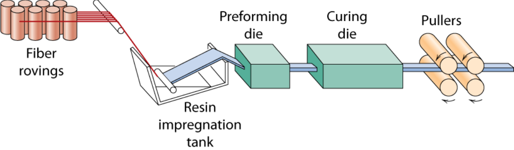
Answer and explanation
Answer: b)
Session 23, Slide 23: in pultrusion, continuous fibre rovings (glass, carbon, or aramid) are drawn through a resin impregnation tank (polyester, vinyl ester, or epoxy), pulled through a preforming die that shapes the cross-section and removes excess resin to fix the fibre/matrix ratio, and then cured inside a heated die before exiting through the pullers.
Why the other options are wrong:
- a) Describes SMC line fabrication (Slide 7), whereas pultrusion uses continuous aligned rovings throughout.
- c) Describes gas pressure infiltration for metal matrix composites (Slide 35), not polymer pultrusion.
- d) Backing paper removal belongs to prepreg tape laying (ATL, Slide 19), whereas pultrusion impregnates raw rovings in a liquid resin bath.
Session 23, Slides 7, 19, 23 and 35.
Question 4 · Shapes and mechanics of pultrusion vs extrusion
Which statement correctly identifies the parts produced by pultrusion and how the process operates?
Answer and explanation
Answer: c)
Session 23, Slides 23 and 54: pultrusion pulls continuous rovings impregnated with thermoset resin (polyester, vinyl ester, or epoxy) through a preforming die and heated curing die to manufacture constant cross-section profiles—such as rods, tubes, floor beams, stringers, spars, ribs, and longerons. Unlike polymer extrusion (which pushes melt through a die), pultrusion pulls continuous fibres under tension.
Why the other options are wrong:
- a) Spherical or closed dome vessels require filament winding (Slide 17), and pultrusion pulls rather than pushes.
- b) Curved aerospace skin shells are made by ATL/AFP, hand lay-up, or RFI/RTM, not constant-section pultrusion.
- d) Random chopped-fibre open-mould panels correspond to spray lay-up (Slide 10).
Session 23, Slides 10, 17, 23 and 54.
Question 5 · Resin Transfer Molding (RTM) principles
Regarding Resin Transfer Molding (RTM), also known as Resin Injection Molding (RIM), which one of the following statements is FALSE:
Answer and explanation
Answer: a)
Session 23, Slides 13-14: RTM places dry (non-impregnated) fabric or discontinuous preforms inside a closed matched mould and forces liquid resin into the cavity under injection pressure (often assisted by vacuum). Using B-stage prepreg on an open mould describes hand lay-up or vacuum-bag prepreg moulding, not RTM. Statement a is false.
Why the other options are wrong:
- b) True: Slide 13 defines RTM as placing dry preform/fabric in a closed mould and forcing resin in under pressure before cure.
- c) True: Slide 13 explicitly notes that the closed mould is often under vacuum during injection (a principle shared by one-sided vacuum-assisted infusion, VARTM, extension).
- d) True: Slide 14 lists epoxy and polyester as the main RTM resins and notes that thermoplastic matrices can also be used.
Session 23, Slides 13-14.
Question 6 · Closed-mould features in the RTM section
In the Resin Transfer Molding (RTM) closed-mould cross-section shown, what is the purpose of the perimeter seal and the central air-sucking vent?
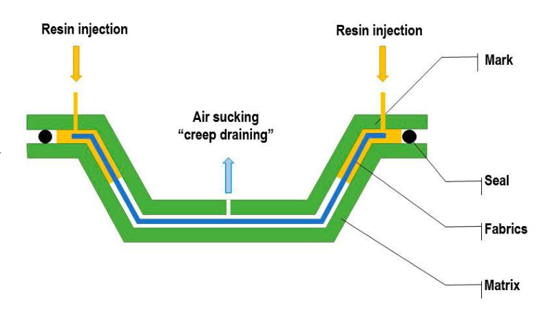
Answer and explanation
Answer: d)
Session 23, Slides 13-14: in the closed RTM mould section, the perimeter seal keeps the cavity airtight while the central air-sucking port ("creep draining" / vent) draws out trapped air under vacuum as liquid resin enters from the side injection ports, ensuring full impregnation of the dry fabric preform without air pockets.
Why the other options are wrong:
- a) RTM is a batch closed-mould process for discrete preforms, not a continuous open-ended pulling die.
- b) Carbon fibres do not melt or soften at polymer processing temperatures, and RTM does not use spray guns.
- c) Evacuation removes air ahead of the resin front to eliminate voids; pressurizing the centre port would push resin away and block wet-out.
Session 23, Slides 13-14.
Question 7 · Resin Film Infusion (RFI) vs liquid injection
In Resin Film Infusion (RFI), dry fibre reinforcement is stacked with a solid or semi-solid film-shaped resin in the mould, so that when heat and pressure are applied:
Answer and explanation
Answer: b)
Session 23, Slide 15: RFI places resin in film form together with dry fibre layers inside either a closed mould or an open mould with a vacuum bag. Applying heat and pressure (in an autoclave or with vacuum and heat) causes the resin film to liquefy and flow through the dry fibre thickness, achieving complete wet-out.
Why the other options are wrong:
- a) RFI impregnates stacked dry fabrics in place; no dissolution of fibres or spraying takes place.
- c) Unlike a disposable peel ply (Slide 12), the resin film becomes the structural polymer matrix of the cured composite.
- d) Pumping liquid resin horizontally from an external tank characterizes RTM (Slides 13-14), whereas RFI melts a pre-placed resin film through the thickness.
Session 23, Slides 12-15.
Question 8 · Sheet Molding Compound (SMC) and compression molding
Which of the following statements is TRUE regarding Sheet Molding Compound (SMC) and compression molding of PMCs:
Answer and explanation
Answer: c)
Session 23, Slides 7 and 11: SMC is manufactured by chopping continuous fibres into short lengths, depositing them randomly over a layer of resin paste, adding a top resin layer, and rolling into a viscous sheet (less widely used in aerospace than prepregs). Compression molding then places SMC or a bulk-forming compound (BMC: viscous mixture of polymer, chopped fibres, and additives) between two matched moulds (at room temperature or heated) and applies pressure.
Why the other options are wrong:
- a) Continuous unidirectional aerospace tapes are prepregs (Slides 4-6), whereas SMC uses chopped short random fibres (Slide 7).
- b) Placing dry fabric in an open mould under a vacuum bag describes RFI or vacuum-bag moulding, whereas compression moulding uses two matched mould halves on pre-mixed SMC/BMC.
- d) Compression moulding routinely handles BMC between moulds at room or elevated temperature, never cryogenic temperatures (Slide 11).
Session 23, Slides 4-7 and 11.
Question 9 · Fibre architecture constraint in spray lay-up
When a composite part is manufactured by manual spray lay-up (spraying a mixture of fibres, resin, and curing agent onto an open mould), what reinforcement architecture results?
Answer and explanation
Answer: d)
Session 23, Slide 10: spray lay-up directs chopped glass fibres together with resin and curing agent from a spray gun onto an open mould. Slide 10 explicitly states that spray lay-up cannot use continuous fibres—only short, randomly aligned fibres—giving lower mechanical performance than hand-laid continuous prepregs.
Why the other options are wrong:
- a) High-volume-fraction continuous UD composites require prepregs, filament winding, or pultrusion, not a chopper spray gun.
- b) 3D braided preforms are dry textile structures (Session 21, Slide 33) infused by RTM or RFI.
- c) Multi-angle laminates ($0/\pm 45/90$) require continuous plies or NCFs (Session 21, Slides 32 and 37), impossible to control with random spray deposition.
Session 23, Slide 10; Session 21, Slides 32-33 and 37.
Question 10 · Selecting the closed-mold or continuous PMC process
An automotive or aerospace supplier needs a smooth surface finish on both sides of a complex, three-dimensional hollow bracket with ribs, starting from a dry braided carbon preform and liquid epoxy resin without using B-stage prepregs or an autoclave. Which process is best suited?
Answer and explanation
Answer: b)
Session 23, Slides 9-15 and 23: RTM uses a dry fibre preform placed inside a two-sided closed matched mould—producing controlled thickness and smooth tool surfaces on both sides—and injects liquid epoxy under pressure (often with vacuum assistance) before curing without an autoclave.
Why the other options are wrong:
- a) Pultrusion only produces straight, constant cross-section profiles (rods, beams, stringers), not complex 3D bracket shapes (Slide 23).
- c) Spray lay-up deposits random chopped fibres on a single open mould, yielding low strength and only one smooth tool-side face (Slide 10).
- d) Hand lay-up of prepreg uses pre-impregnated plies rather than a dry braided preform and leaves the bag side rougher than a matched closed mould.
Session 23, Slides 9-15 and 23.
B102 — Metal matrix composites and processing
Ten test questions on composite materials, written for this portal in the style of Part I of Assessment Test III. Each question has four options and only one is right. Answer all ten before opening any explanation.
Question 1 · Two-phase MMC spray co-deposition
Select the method for processing of composites in which reinforcement is introduced into spray of melt droplets:
Answer and explanation
Answer: c)
Assessment Test III, Paper B Q10 (MATERIALS_THIRDPARTIAL_2020_V2.pdf, p. 5) and Session 23, Slide 37: in spray co-deposition (a two-phase liquid-solid MMC processing route), the molten metal is atomized by an inert gas jet, reinforcing particles are injected into the spray of melt droplets, and both co-deposit onto a collector substrate.
Why the other options are wrong:
- a) Rheocasting stirs reinforcements into a semi-solid mushy alloy inside a crucible or die rather than atomizing droplets (Slide 36).
- b) Melt stirring mixes particles directly into a bulk liquid metal bath prior to casting (Slide 33).
- d) Squeeze casting mechanically forces molten metal under piston pressure into a porous preform held inside a die (Slide 34).
MATERIALS_THIRDPARTIAL_2020_V2.pdf, p. 5 Q10; Session 23, Slides 33-37.
Official examQuestion 2 · MMC matrices, reinforcements, and advantages
Regarding metal matrix composites (MMCs), which one of the following statements is TRUE:
Answer and explanation
Answer: a)
Session 21, Slides 5-6 and Session 23, Slide 30: aerospace MMCs commonly use light metal matrices (Al, Mg, Ti) reinforced with SiC, $\text{Al}_2\text{O}_3$, Borsic (SiC-coated boron fibres), or carbon (in Al/Mg). Compared with PMCs, MMCs offer higher service temperatures, higher specific strength and stiffness, greater wear resistance, and electric conduction / thermal stability.
Why the other options are wrong:
- b) Inverts cost and complexity: Slide 30 lists costly, complex, and limited fabrication techniques as a primary disadvantage of MMCs.
- c) Contradicts Slide 30: metals frequently react chemically with fibres during processing or high-temperature service, weakening them.
- d) Polymeric fibres would decompose instantly in molten or hot-pressed Ti; high-temperature MMCs require ceramic or carbon reinforcements.
Session 21, Slides 5-6; Session 23, Slide 30.
Question 3 · Protective coatings on ceramic fibres in MMCs
In titanium and aluminium metal matrix composites, boron fibres are coated with silicon carbide (Borsic) and SiC fibres are carbon-coated primarily to:
Answer and explanation
Answer: d)
Session 21, Slide 34, Session 22, Slide 18, and Session 23, Slide 30: reactive hot metals (especially Ti and Al) tend to react chemically with unprotected ceramic fibres during high-temperature consolidation or service, creating brittle reaction zones and surface flaws that degrade fibre strength. Protective SiC (Borsic) or carbon barrier coatings suppress interfacial reaction and diffusion.
Why the other options are wrong:
- a) Metallic matrices remain crystalline metals and never convert into polymers.
- b) MMCs rely on metallic electrical/thermal conductivity rather than mimicking insulating polymers; coatings target interfacial reactivity.
- c) Ceramic fibres are meant to stay solid and intact; melting the fibre core would destroy composite reinforcement.
Session 21, Slide 34; Session 22, Slide 18; Session 23, Slide 30.
Question 4 · Classification of MMC processing by matrix state
Which of the following statements about MMC processing categories is FALSE:
Answer and explanation
Answer: b)
Session 23, Slides 31-32: MMC fabrication is classified by matrix state into solid-state (diffusion bonding, powder metallurgy), liquid-phase (melt stirring, liquid infiltration by squeeze casting or gas pressure infiltration), and two-phase liquid-solid (rheocasting/compocasting, spray co-deposition). Claiming diffusion bonding and powder metallurgy melt the entire matrix in a two-phase route is false.
Why the other options are wrong:
- a) True: Slide 31 explicitly places diffusion bonding and powder metallurgy under solid-state processing.
- c) True: Slides 31 and 33-35 group melt stirring and both liquid-infiltration routes under liquid-phase processing.
- d) True: Slides 31 and 36-37 place rheocasting and spray co-deposition under two-phase (liquid-solid) processing.
Session 23, Slides 31-37.
Question 5 · Solid-state MMC routes: diffusion bonding vs powder metallurgy
Comparing the two solid-state MMC manufacturing methods, diffusion bonding sandwiches continuous fibre mats between metal foils and hot-presses stacked plies under vacuum for simple shapes, whereas powder metallurgy:
Answer and explanation
Answer: c)
Session 23, Slide 32: in solid-state powder metallurgy, metallic matrix powder and discontinuous reinforcement (short fibres, whiskers, or particles) are mixed, compacted, and sintered via the conventional powder-metallurgy route. By contrast, diffusion bonding foils continuous fibre mats between metal foils, stacks cut plies, and hot-presses them (expensive and restricted to simple geometries).
Why the other options are wrong:
- a) Describes spray co-deposition, a two-phase liquid-solid route (Slide 37).
- b) Describes gas pressure infiltration, a liquid-phase infiltration route (Slide 35).
- d) Mixes up PMC pultrusion (Slide 23) with solid-state MMC powder metallurgy.
Session 23, Slides 23, 32, 35 and 37.
Question 6 · Melt stirring density segregation vs rheocasting
When ceramic particles are stirred into a fully molten metal bath (melt stirring), mixing is often poor because density differences make particles float or sink. How does rheocasting (compocasting) overcome this problem?
Answer and explanation
Answer: a)
Session 23, Slides 33 and 36: conventional melt stirring suffers from particle flotation or sedimentation due to density mismatch in low-viscosity liquid metal. Rheocasting (compocasting) modifies melt stirring by mixing reinforcement when the alloy is partially solidified in the mushy liquid-solid zone, whose higher viscosity traps particles evenly before semi-solid forming/hot extrusion (limited to casting alloys with a wide solidification range).
Why the other options are wrong:
- b) Describes solid-state diffusion bonding (Slide 32), not two-phase rheocasting.
- c) Instant freezing prior to mixing prevents uniform internal dispersion throughout the billet.
- d) Switches to PMC resin-film infusion/autoclave processing rather than metallic semi-solid processing.
Session 23, Slides 32, 33 and 36.
Question 7 · Identifying the gas pressure infiltration schematic
Which schematic represents gas pressure infiltration, in which a chamber holding molten metal and a closed die with a porous preform is evacuated and then pressurized with gas to force the liquid metal into the preform?
- a)

- b)
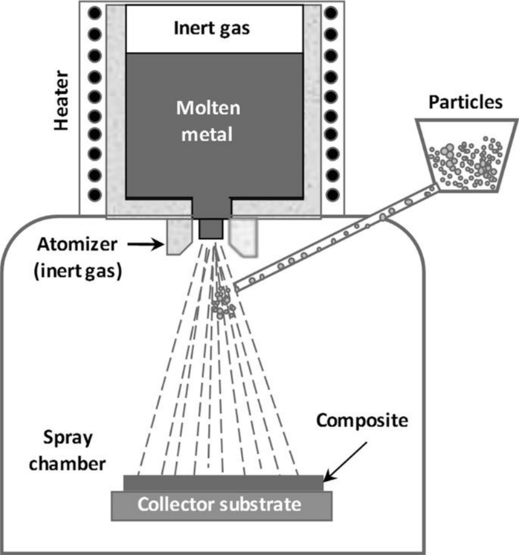
- c)

- d)

Answer and explanation
Answer: d)
Session 23, Slide 35: schematic d illustrates the three stages of gas pressure infiltration: inserting the porous preform in the closed die, pulling vacuum on the molten-metal chamber, and applying pressurized gas to push molten metal upward into the preform until solidification completes.
Why the other options are wrong:
- a) Shows mechanical stirring in a semi-solid alloy followed by hot-extrusion forming (rheocasting / compocasting, Slide 36).
- b) Shows gas atomization of molten metal combined with particle injection onto a collector substrate (spray co-deposition, Slide 37).
- c) Shows a mechanical ram pressing molten metal directly into a preform inside a heated die (squeeze casting, Slide 34).
Session 23, Slides 34-37.
Question 8 · Squeeze casting vs gas pressure infiltration
Which of the following statements is TRUE regarding liquid-infiltration MMC manufacturing routes:
Answer and explanation
Answer: b)
Session 23, Slides 34-35: in squeeze casting, molten metal is poured onto a porous preform in a die and pressurized mechanically until solidification ends, making it well suited for small near-net-shape products. Gas pressure infiltration evacuates a chamber containing the preform and molten metal and applies pressurized gas during solidification, making it suitable for larger components.
Why the other options are wrong:
- a) Squeeze casting explicitly applies mechanical piston pressure, and it targets small near-net-shape parts rather than massive discs.
- c) Both routes are liquid-phase infiltration processes using fully molten metal (Slides 31 and 33-35), not cold powder pressing.
- d) Both Slides 34 and 35 explicitly state that pressure is maintained until solidification is complete to prevent shrinkage porosity.
Session 23, Slides 31 and 33-35.
Question 9 · Density of a silver-infiltrated porous tungsten composite
A sintered tungsten preform containing 20 vol% interconnected open porosity ($\rho_{\text{W}} = 19.25\text{ g/cm}^3$) is completely infiltrated with liquid silver ($\rho_{\text{Ag}} = 10.49\text{ g/cm}^3$). Assuming zero residual voids after solidification, what is the density of the W-Ag composite?
Answer and explanation
Answer: a)
Problems T10, Q12 (and Session 22, Slide 27; Session 23, Slide 35): after complete infiltration, the 20 % open pores are filled by silver ($V_{\text{Ag}} = 0.20$) while tungsten occupies $V_{\text{W}} = 0.80$. By the exact rule of mixtures for density, $\rho_c = V_{\text{W}}\rho_{\text{W}} + V_{\text{Ag}}\rho_{\text{Ag}} = 0.80(19.25) + 0.20(10.49) = 15.40 + 2.098 = 17.498\text{ g/cm}^3 \approx 17.5\text{ g/cm}^3$.
Why the other options are wrong:
- b) Computes only the density of the porous tungsten skeleton before silver infiltration ($0.80 \times 19.25 = 15.4\text{ g/cm}^3$).
- c) Swaps the volume fractions, evaluating $0.20(19.25) + 0.80(10.49) = 12.24\text{ g/cm}^3$.
- d) Takes an unweighted 50/50 arithmetic average $(19.25 + 10.49)/2 = 14.87\text{ g/cm}^3$, ignoring the 80/20 phase fractions.
Problems T10_CompositeMaterials.pdf, Q12; Session 22, Slide 27; Session 23, Slide 35.
Question 10 · Aerospace and engineering applications of MMCs
Which pairing correctly matches a metal matrix composite system with its typical aerospace or engineering application?
Answer and explanation
Answer: c)
Session 23, Slide 65: boron fibres in titanium are used for jet-engine fan blades, and boron/aluminium serves in compressor blades and structural supports; graphite/Al or Mg is used for satellite, missile, and helicopter structures; $\text{Al}_2\text{O}_3/\text{Mg}$ is used in helicopter transmissions; and SiC or Mo/W in superalloys targets high-temperature engine components.
Why the other options are wrong:
- a) Graphite/epoxy is a PMC limited to roughly $100\text{–}180\,^\circ\text{C}$ (Session 22, Slide 10), far below $1600\,^\circ\text{C}$ where CMCs operate.
- b) Alumina/lead is used for storage-battery plates (Slide 65), not low-density rotating fan blades.
- d) SiC/Al is a rigid, high-temperature structural MMC (Slide 65), not a compliant elastomeric seal.
Session 23, Slide 65; Session 22, Slide 10.
B103 — Ceramic matrix composites and toughening
Ten test questions on composite materials, written for this portal in the style of Part I of Assessment Test III. Each question has four options and only one is right. Answer all ten before opening any explanation.
Question 1 · Typical matrices and advantages of CMCs
Referring to ceramic matrix composites (CMCs), which one of the following statements is TRUE:
Answer and explanation
Answer: b)
June 2015 extraordinary final exam, Q5a-b (and Session 23, Slides 38-41): common CMC matrices are silica-based glass, silicon carbide (SiC), silicon nitride ($\text{Si}_3\text{N}_4$), alumina ($\text{Al}_2\text{O}_3$), carbon, and ultra-high-temperature borides ($\text{ZrB}_2$, $\text{HfB}_2$). Their key advantages are high fracture toughness (crack resistance), low density, high specific strength and stiffness, oxidation stability at high temperature, wear resistance, and survival under extreme thermal conditions (above Ni superalloys).
Why the other options are wrong:
- a) Epoxy and BMI are thermosetting polymer matrices (Session 22, Slide 7), not ceramic matrices.
- c) Inverts both properties: CMCs are much lighter than Ni superalloys and operate around $1200\text{–}2000\,^\circ\text{C}+$, far above Al alloys and superalloys (Slide 41).
- d) Contradicts Slide 38: costly, complex, and limited fabrication techniques are the primary disadvantage of CMCs.
MATERIALS_FINALEXAM_2015_EXTRA.pdf, p. 7 Q5a-b; Session 23, Slides 38-41.
Official examQuestion 2 · Purpose of fibres in CMCs vs PMCs
Unlike polymer matrix composites—where fibres mainly stiffen and strengthen a soft, ductile matrix—why are continuous ceramic or carbon fibres introduced into a ceramic matrix?
Answer and explanation
Answer: d)
June 2015 extraordinary final exam, Q5c (and Session 23, Slide 38; Session 22, Slide 29): monolithic ceramics already possess high stiffness and compressive strength, but fail catastrophically from low fracture toughness $K_{IC}$. Reinforcements in CMCs raise $K_{IC}$ by absorbing energy as an advancing crack debonds and deflects along the fibre-matrix interface, leaves intact fibres bridging the crack wake (crack bridging), and pulls broken fibres out against friction (fibre pull-out).
Why the other options are wrong:
- a) Ceramic fibres do not impart elastomeric compliance or metal-like dislocation plasticity to a ceramic matrix.
- b) Composite phases stay chemically distinct across an interface (Session 21, Slide 2) and never turn ceramic bonds metallic.
- c) Refractory capability is an essential virtue of CMCs; fibres do not depress matrix melting temperatures to $200\,^\circ\text{C}$.
MATERIALS_FINALEXAM_2015_EXTRA.pdf, p. 7 Q5c; Session 23, Slide 38; Session 22, Slide 29.
Official examQuestion 3 · Fracture toughness gain shown on the K_IC bar chart
From the bar chart comparing plane-strain fracture toughness $K_{IC}$ of unreinforced ceramics and ceramic matrix composites, approximately how much higher is $K_{IC}$ in SiC/SiC than in monolithic SiC?
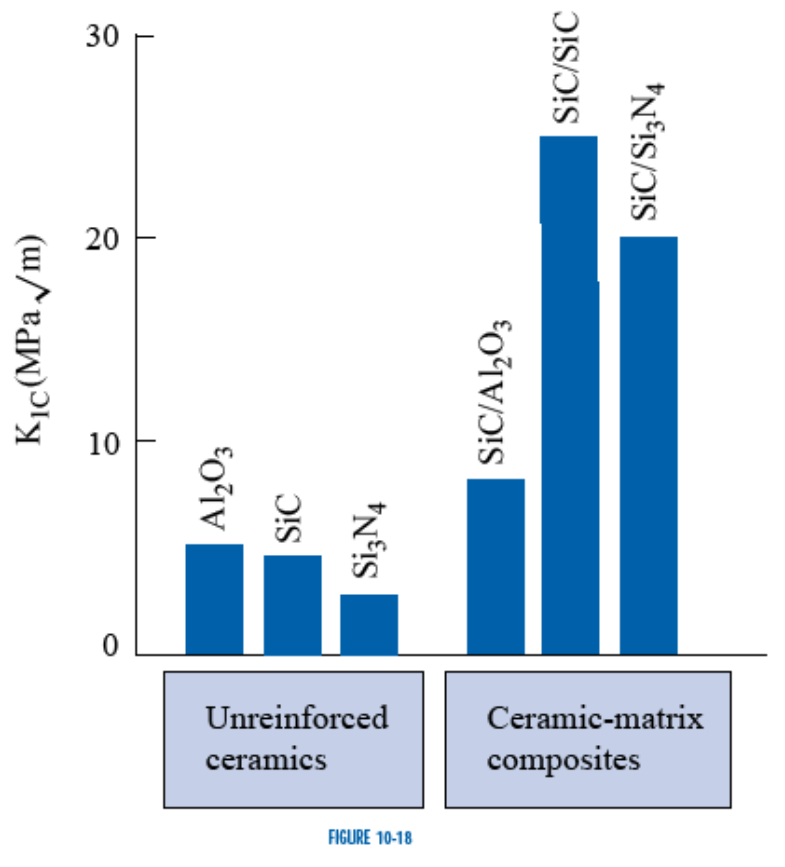
Answer and explanation
Answer: a)
Session 22, Slide 29: reading the bar chart, unreinforced $\text{Al}_2\text{O}_3$, SiC, and $\text{Si}_3\text{N}_4$ sit between roughly $3$ and $5\text{ MPa}\sqrt{\text{m}}$, whereas $\text{SiC}/\text{Al}_2\text{O}_3$ reaches $\sim 8\text{ MPa}\sqrt{\text{m}}$, $\text{SiC}/\text{Si}_3\text{N}_4$ reaches $\sim 20\text{ MPa}\sqrt{\text{m}}$, and $\text{SiC}/\text{SiC}$ reaches $\sim 25\text{ MPa}\sqrt{\text{m}}$—a five- to six-fold increase over unreinforced SiC.
Why the other options are wrong:
- b) Inverts the comparison between monolithic ceramics and toughened CMCs.
- c) Ignores the large jump from the left unreinforced bars ($\le 5\text{ MPa}\sqrt{\text{m}}$) to the right CMC bars ($8\text{–}25\text{ MPa}\sqrt{\text{m}}$).
- d) Misreads the bars: unreinforced $\text{Si}_3\text{N}_4$ is the shortest bar ($\sim 3\text{ MPa}\sqrt{\text{m}}$), whereas $\text{SiC}/\text{SiC}$ is the tallest ($\sim 25\text{ MPa}\sqrt{\text{m}}$).
Session 22, Slide 29.
Question 4 · Role of controlled interfacial bonding in CMCs
In a continuous-fibre CMC, what happens if the chemical bond at the fibre-matrix interface is made excessively strong without a compliant debonding coating?
Answer and explanation
Answer: c)
Session 21, Slide 3, Session 22, Slide 18, and Session 23, Slide 38: toughness in CMCs relies on controlled bond strength so that an approaching matrix crack tip can debond and deflect along the interface rather than snapping the intact fibre in the same plane. When the interface is overly strong, the crack propagates straight across the fibres, eliminating crack bridging and fibre pull-out and restoring monolithic brittleness.
Why the other options are wrong:
- a) Stronger interfacial bonding prevents sliding and pull-out, forcing fibres to break flush on the matrix crack plane.
- b) Ceramic phases lack room-temperature dislocation glide regardless of interface strength.
- d) Interface chemistry does not convert crystalline SiC or $\text{Al}_2\text{O}_3$ into a self-healing room-temperature glass.
Session 21, Slide 3; Session 22, Slide 18; Session 23, Slide 38.
Question 5 · Microstructural evidence of fibre pull-out on CMC fracture surfaces
Which of the following statements is TRUE regarding the fracture surface of a tough $\text{SiC}_f/\text{SiC}$ ceramic matrix composite compared with a monolithic SiC ceramic:
Answer and explanation
Answer: b)
Session 23, Slide 38: the SEM fractograph of a SiC fibre / SiC matrix composite shows long bundles of intact fibres extending out of the stepped matrix fracture surface. This direct visual signature of fibre pull-out (alongside crack bridging) shows that fibres broke away from the crack plane and slid out against interfacial friction, absorbing substantial fracture energy.
Why the other options are wrong:
- a) A flat, planar fracture belongs to untoughened monolithic ceramics or over-bonded CMCs lacking pull-out, not tough $\text{SiC}/\text{SiC}$.
- c) Microvoid coalescence and cup-and-cone necking characterize ductile metals, not brittle ceramic fibres sliding out of a ceramic matrix.
- d) Pull-out requires sufficient shear friction along the debonded interface to dissipate fracture work and raise $K_{IC}$ severalfold (Session 22, Slide 29).
Session 23, Slide 38; Session 22, Slide 29.
Question 6 · Manufacturing methods tailored specifically to CMCs
Which manufacturing route is specifically tailored to ceramic matrix composites to form a refractory matrix inside a fibre preform without melting high-$T_m$ ceramics?
Answer and explanation
Answer: d)
June 2015 extraordinary final exam, Q5d (and Session 23, Slides 42-45): CMCs cannot be cured like epoxies or easily pressure-infiltrated as molten ceramics. Dedicated CMC routes include preform infiltration via sol-gel or preceramic polymer infiltration and pyrolysis (PIP) (800-1300 °C, repeated 4-10 times to fill shrinkage voids), slurry processing with binder burnout and hot pressing, as well as vapour-phase chemical vapour infiltration (CVI) and reactive liquid silicon infiltration (extension).
Why the other options are wrong:
- a) Produces thermoset polymer matrix composites (PMCs), not ceramic matrix composites (Slides 25-26).
- b) Produces metal matrix composites (MMCs) such as particulate aluminium alloys (Slide 36).
- c) Produces chopped-fibre PMC components, not continuous-fibre CMCs (Slides 7 and 11).
MATERIALS_FINALEXAM_2015_EXTRA.pdf, p. 7 Q5d; Session 23, Slides 42-45.
Official examQuestion 7 · Why liquid-state melt infiltration and powder pressing struggle in CMCs
Which of the following statements about limitations in CMC processing is FALSE:
Answer and explanation
Answer: a)
Session 23, Slide 43: liquid-state pressure infiltration (widely used for lower-melting MMCs) has limited success in CMCs specifically because ceramics have extremely high melting temperatures—causing severe chemical reactions that damage the fibres—and high melt viscosities that produce very slow infiltration rates. Statement a is false.
Why the other options are wrong:
- b) True: Slide 43 notes non-uniform mixing and whisker damage during mixing and pressing in the conventional powder route.
- c) True: conventional mixing/pressing/firing limits achievable reinforcement volume fraction (Slide 43).
- d) True: Slide 43 explicitly lists both high $T_m$ (reaction between matrix and reinforcement) and high viscosity (low infiltration rate).
Session 23, Slide 43.
Question 8 · Repeating sol-gel and preceramic polymer infiltration cycles
In the preform infiltration routes shown (sol-gel and preceramic polymer infiltration followed by pyrolysis at $800\text{–}1300\,^\circ\text{C}$), why must infiltration, drying/curing, and pyrolysis be repeated 4 to 10 times?

Answer and explanation
Answer: c)
Session 23, Slide 44: whether starting from a colloidal sol or a liquid preceramic polymer (PIP), converting the precursor into a ceramic during drying/gelation and pyrolysis ($800\text{–}1300\,^\circ\text{C}$) releases volatile gases and causes large shrinkage, leaving a porous matrix. Repeating infiltration, drying, and pyrolysis 4 to 10 times progressively fills those pores until target density is reached (a densification logic shared with gas-phase CVI, extension).
Why the other options are wrong:
- a) Pyrolysis irreversibly converts the preceramic polymer or gel into a solid ceramic matrix rather than reversing it to liquid polymer.
- b) Fibres remain intact throughout the cycles; only additional matrix precursor is added into open porosity.
- d) Ceramic matrices are refractory and non-thermoformable; cycles aim to eliminate porosity, not lower melting points.
Session 23, Slide 44.
Question 9 · Slurry processing steps for fibre-reinforced CMCs
Which option gives the correct sequence of steps in the slurry processing route for fibre-reinforced CMCs?
Answer and explanation
Answer: b)
Session 23, Slide 45: in slurry processing, continuous fibres are drawn through a tank containing ceramic matrix powder suspended in a liquid slurry with binder, wound to form impregnated tapes, cut and stacked, heated to burn out the organic binder around $500\,^\circ\text{C}$, and finally consolidated by hot pressing inside a graphite die at $800\text{–}925\,^\circ\text{C}$.
Why the other options are wrong:
- a) Places final hot pressing at the start before the slurry has even impregnated the fibres or the binder has been removed.
- c) Attempts binder burnout before the slurry and binder have been applied to the fibres, and places stacking after hot pressing.
- d) Inserts a polymer autoclave cure step and places slurry impregnation at the very end instead of the start.
Session 23, Slide 45.
Question 10 · Ranking high-temperature aerospace materials and CMC families
Consider the maximum temperature capabilities of advanced high-temperature aerospace materials: carbon-carbon (C/C) composites and ultra-high-temperature ceramics ($\text{ZrB}_2$/$\text{HfB}_2$), nickel-based superalloys, $\text{SiC}/\text{SiC}$ CMCs, and $\text{C}/\text{SiC}$ CMCs. Ranked in INCREASING order of temperature capability, they follow:
Answer and explanation
Answer: a)
Session 23, Slides 39-41: on the temperature capability versus thermal conductivity map (Slide 41), Ni-based superalloys sit near $1000\,^\circ\text{C}$, $\text{SiC}/\text{SiC}$ CMCs operate near $1400\text{–}1500\,^\circ\text{C}$ (e.g., turbine vanes and seals), $\text{C}/\text{SiC}$ CMCs reach $\sim 1600\text{–}1700\,^\circ\text{C}$ (e.g., Vulcain rocket nozzle extensions), and C/C composites along with $\text{ZrB}_2/\text{HfB}_2$ UHTCs exceed $2000\,^\circ\text{C}$ (e.g., re-entry nose caps and brake discs).
Why the other options are wrong:
- b) Places $\text{SiC}/\text{SiC}$ CMCs below Ni-based superalloys, overlooking why CMCs replace superalloys in hotter engine sections.
- c) Reverses the entire list, placing the highest-temperature materials first (decreasing order).
- d) Places C/C and UHTC borides below SiC-matrix CMCs despite their $> 2000\,^\circ\text{C}$ capability for re-entry nose cones.
Session 23, Slides 39-41.
B104 — Aerospace composite applications and certification
Ten test questions on composite materials, written for this portal in the style of Part I of Assessment Test III. Each question has four options and only one is right. Answer all ten before opening any explanation.
Question 1 · Typical civil aircraft composite components
Typical applications for composites in civil aircrafts are:
Answer and explanation
Answer: c)
Assessment Test III, Model B Q10 (MATERIALS_THIRDPARTIAL_2020.pdf, p. 2) and Session 23, Slides 47-53: from the early 1980s onward (B757, B767, B737-300, A310, A320, B777, A340-600), typical civil aircraft composite structures have been secondary fairings and engine cowlings together with primary flight controls such as ailerons, elevators, rudders, and spoilers.
Why the other options are wrong:
- a) Hot-section turbine blades use nickel superalloys with ceramic thermal-barrier coatings rather than polymer composites (Session 18, Slides 40-41; Session 23, Slide 48 excludes engines).
- b) Bulkheads and stringers appear only selectively on later platforms (such as A340-600/A380 rear pressure bulkheads and A350 fuselage stringers), whereas typical legacy civil transports remain predominantly aluminium.
- d) Landing gear structures are explicitly excluded from airframe composite breakdowns (Session 23, Slide 48 notes "Engine, Landing gear not included"; only landing gear doors are composite).
MATERIALS_THIRDPARTIAL_2020.pdf, p. 2 Q10; Session 23, Slides 47-53.
Official examQuestion 2 · Evolution of composites in civil airliners
Regarding the evolution of composite usage in commercial airliners, which one of the following statements is TRUE:
Answer and explanation
Answer: d)
Session 23, Slides 47-53: civil composite adoption moved step by step—from glass/epoxy honeycomb secondary fairings in the mid-1960s, to carbon/aramid/hybrid cowlings and primary flight controls (B757, B767, A310, A320) in the early 1980s, to primary empennages on the A320 (late 1980s) and B777 (with IM7/T800H fibres and toughened matrices), culminating in $> 50\%$ composite structural weight (wings and fuselage) on the Boeing 787 and 52 % on the Airbus A350 XWB.
Why the other options are wrong:
- a) Mid-1960s parts were secondary structures such as wing-to-body fairings and cover panels, not all-composite wings or fuselages (Slide 47).
- b) Inverts the modern figures: both the B787 ($> 50\%$) and A350 XWB ($52\%$) exceed half of structural weight in composites (Slides 50 and 53).
- c) The A300 (1972) was predominantly aluminium ($\sim 75\%$, Slide 48), with primary empennage CFRP appearing later on the A320.
Session 23, Slides 47-53.
Question 3 · Reading the Airbus A380-800 structural material breakdown
From the Airbus A380-800 structural material breakdown shown (excluding engines and landing gear), what combined share is formed by organic composites (CFRP, GFRP, QFRP) plus GLARE, and which material class remains the largest?
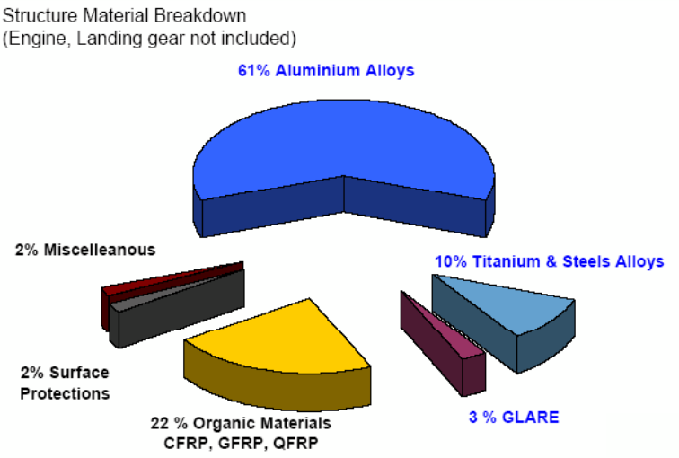
Answer and explanation
Answer: b)
Session 23, Slide 48: reading the pie chart of the A380-800 airframe (engines and landing gear excluded), organic composites (CFRP, GFRP, QFRP) represent 22 % and GLARE (glass/Al fibre-metal laminate) adds 3 %, giving 25 % combined. Aluminium alloys still hold the largest structural share at 61 % (with 10 % Ti/steel, 2 % surface protections, and 2 % miscellaneous).
Why the other options are wrong:
- a) Confuses the 61 % aluminium slice with titanium and steel alloys (10 %) and miscalculates the composite total.
- c) Swaps the 61 % aluminium alloy slice with the 22 % organic composite slice.
- d) Leaves out the 3 % GLARE slice from the combined share and exaggerates GLARE to half of airframe mass.
Session 23, Slide 48.
Question 4 · Military aircraft and rotorcraft composites
Which of the following statements regarding composites in military aircraft and helicopters is FALSE:
Answer and explanation
Answer: a)
Session 23, Slides 55-59: Slide 56 explicitly states that the variety of materials and technologies in military aircraft is much smaller than in civil aircraft, and prepreg technology still dominates military composite manufacturing. Statement a is false.
Why the other options are wrong:
- b) True: Slide 56 specifies 70 % surface area composite share on the Eurofighter and Slide 57 describes the B-2 as almost all-composite.
- c) True: Slide 58 explicitly cites a 200-fold increase in service life for GFRP helicopter rotor blades thanks to fatigue resistance.
- d) True: Slides 58-59 describe tuned anisotropy and integrated hinges on rotor heads plus high mass-specific crash energy absorption in the underfloor.
Session 23, Slides 55-59.
Question 5 · Space Shuttle Orbiter thermal protection and RCC
In the thermal protection system diagram of Space Shuttle Orbiter 102, where is Reinforced Carbon-Carbon (RCC) composite located, and why?

Answer and explanation
Answer: c)
Session 23, Slide 61: Reinforced Carbon-Carbon (RCC)—a carbon-carbon ceramic matrix composite—is placed selectively on the nose cap and wing leading edges (light gray border regions in the diagram), where peak re-entry temperatures exceed ceramic tile limits. Although RCC covers only $38.0\text{ m}^2$ of $1105\text{ m}^2$ ($\sim 3.4\%$ of total TPS area), its higher areal density accounts for $\sim 20\%$ of total TPS mass ($1697\text{ kg}$ of $8575\text{ kg}$).
Why the other options are wrong:
- a) The upper fuselage and bay doors experience lower heating and use coated Nomex felt (FRSI) or low-temperature tiles (LRSI).
- b) The broad lower belly uses black High-Temperature Reusable Surface Insulation (HRSI) silica tiles ($479.7\text{ m}^2$), not RCC.
- d) RCC is an extreme-temperature carbon-carbon composite (> $1500\,^\circ\text{C}$), not an internal polymeric cabin insulator.
Session 23, Slide 61.
Question 6 · Spacecraft dimensional stability and UHM carbon fibres
Satellite optical structures and telescope tubes (such as on XMM-Newton) use ultra-high-modulus (UHM) carbon-fibre composites primarily because:
Answer and explanation
Answer: d)
Session 23, Slides 46 and 60 (and Session 21, Slide 21): orbital satellites experience severe thermal cycling ($-200$ to $+200\,^\circ\text{C}$) where mirror alignment and structural geometry are critical. Combining low-CTE (slightly negative axial CTE) UHM carbon fibres with a positive-CTE matrix yields a composite with near-zero $\alpha$ and exceptional specific stiffness, preserving optical dimensional stability at minimal launch mass.
Why the other options are wrong:
- a) High-modulus carbon fibres are the most brittle carbon grade, failing well below 1 % strain (Session 21, Slide 40).
- b) Satellite optics require near-zero thermal expansion ($\alpha \approx 0$), not high expansion matching aluminium.
- c) Carbon fibres are electrically conductive rather than insulating (Session 21, Slide 21); dimensional stability and mass drive UHM selection.
Session 21, Slides 21 and 40; Session 23, Slides 46 and 60.
Question 7 · Building-block composite certification pyramid
In the building-block qualification and certification pyramid used for aerospace composite structures, how are the five testing levels ordered from smallest specimen scale up to full-scale structural certification?
Answer and explanation
Answer: a)
Session 22, Slide 3: expensive evaluation and certification programmes follow the five-tier building-block pyramid from the base up: coupons and details establish material qualification (large test counts on simple notched/unnotched specimens and joints), progressing upward through elements, sub-components, and full-scale component tests for aircraft certification.
Why the other options are wrong:
- b) Swaps details (second tier) and elements (third tier) in the pyramid hierarchy.
- c) Starts with details before basic material-property coupons and swaps sub-components with full component testing.
- d) Lists the pyramid in reverse order, descending from full-scale component down to small coupon specimens.
Session 22, Slide 3.
Question 8 · Low damage tolerance and impact delamination
Unlike ductile aluminium skins that show an obvious dent and yield plastically around stress concentrators, what happens when a brittle-matrix polymer composite laminate suffers a small accidental low-velocity impact?
Answer and explanation
Answer: b)
Session 21, Slide 15 and Session 22, Slide 3: two primary factors limit fibre-reinforced polymer composites—the absence of plasticity (critical around bolted joints) and low damage tolerance. Small accidental impacts produce internal delaminations (commonly termed barely visible impact damage, BVID, extension) that sharply degrade mechanical strength, especially under compression, without leaving an obvious metallic dent.
Why the other options are wrong:
- a) Polymer composites lack metal dislocation glide and work hardening; impacts crack the brittle matrix and delaminate plies.
- c) Crosslinked thermosets do not melt or self-heal under low-velocity tool drops or hail impacts.
- d) Carbon/epoxy laminates fracture below roughly 1-2 % strain rather than exhibiting > 20 % ductile elongation.
Session 21, Slide 15; Session 22, Slide 3.
Question 9 · Lightning strike protection and moisture knockdown in PMCs
Which of the following statements is TRUE regarding environmental and physical design drawbacks of polymer matrix composites in aircraft service:
Answer and explanation
Answer: a)
Session 22, Slides 3, 5 and 10; Session 23, Slide 55: Session 22 Slide 3 highlights low thermal/electrical conductivity (requiring additional protection for lightning and erosion), water entry in sandwich structures, and thermoset moisture absorption (Slides 4-5). Consequently, Slide 10 explicitly reports reduced Max (wet) Capability temperatures (e.g., $180\,^\circ\text{C}$-cured epoxies rated to $100\,^\circ\text{C}+$ wet, toughened BMI dropping from $230\,^\circ\text{C}$ to $180\,^\circ\text{C}$), and military programmes (Slide 55) highlighted moisture pick-up and crack sensitivity.
Why the other options are wrong:
- b) Inverts conductivity: PMCs conduct far worse than aluminium skins and explicitly need metallic mesh/foil lightning protection (Slide 3).
- c) Moisture plasticizes the resin, lowering effective $T_g$ and hot-wet service capability rather than strengthening it.
- d) Contradicts Slide 3, which directly lists water entry in sandwich structures as a major disadvantage (whereas freedom from metallic galvanic/rust corrosion applies to the polymer matrix itself).
Session 22, Slides 3-5 and 10; Session 23, Slide 55.
Question 10 · Structural advantages driving civil airframe composite adoption
Referring to the adoption of carbon-fibre polymer composites in modern civil airframes (such as the Boeing 787 and Airbus A350):
Answer and explanation
Answer: d)
Session 21, Slide 15 and Session 23, Slides 46–53: modern civil aircraft incorporate roughly 50 % composites by structural weight (fuselage, wings, empennage, cowlings) because high specific strength and specific stiffness deliver substantial weight savings and fuel-burn reductions, while integral composite manufacturing consolidates many metallic parts and fasteners into fewer co-cured components.
Why the other options are wrong:
- a) Composites have low damage tolerance (hidden delamination) and low electrical conductivity, so they still require dedicated non-destructive inspection and lightning-protection layers.
- b) Composite airframes are selected to reduce structural weight despite higher raw-material and certification costs, not for lower material price.
- c) Unlike ductile aluminium alloys, thermoset-matrix carbon composites lack plastic yielding around fastener holes, making stress concentrations a key design constraint.
Session 21, Slide 15; Session 23, Slides 46–53.
Unit 11 · Adhesives 8 blocks
B105 — Joining Methods, Adhesion and Cohesion
Ten test questions on adhesives, written for this portal in the style of Part I of Assessment Test III. Each question has four options and only one is right. Answer all ten before opening any explanation.
Question 1 · Joining families and chemical systems
Structural joining methods are grouped into physical, metallurgical, and chemical systems. Which method belongs to chemical joining systems?
Answer and explanation
Answer: b)
Session 24, Slide 2: joining methods are classified as physical systems (mechanical bonding with fasteners, bolts, nuts, and rivets), metallurgical systems (welding), and chemical systems (adhesives).
Why the other options are wrong:
- a) Fasteners, screws, bolts, and rivets belong to physical (mechanical) joining systems.
- c) Fusion welding is a metallurgical joining system that relies on localized melting and solidification.
- d) Brazing is a metallurgical joining process using a molten metallic filler rather than polymeric adhesive bonding.
Session 24, Slide 2.
Question 2 · Stress distribution across bonded, welded, and riveted joints

Comparing the three stress-distribution profiles shown for riveted, welded, and bonded joints under axial tension, why is adhesive bonding advantageous for thin aerospace skins?
Answer and explanation
Answer: d)
Session 24, Slide 2: the stress profiles show sharp peaks around rivet holes (notches) and along the irregular weld bead, whereas the chemical adhesive layer distributes stress uniformly across the entire overlap area.
Why the other options are wrong:
- a) Inverts the schematic: fastener holes cause sharp local stress peaks, whereas the bonded profile is uniform.
- b) Contradicts metallurgical welding behaviour: welding concentrates load along the bead and creates a heat-affected zone.
- c) Describes point-loaded mechanical fasteners rather than continuous adhesive overlaps.
Session 24, Slide 2.
Question 3 · Advantages of adhesive bonding in structural assemblies
Referring to the engineering advantages of adhesive bonding, which one of the following statements is TRUE:
Answer and explanation
Answer: a)
Session 24, Slide 3: because adhesive curing avoids melting the parts, it causes no substrate distortion, bonds dissimilar materials (such as composites to metals), seals the joint simultaneously, and electrically insulates metals to prevent galvanic corrosion.
Why the other options are wrong:
- b) Fusion welding melts substrates and creates thermal distortion; adhesive bonding requires no substrate melting.
- c) Limited temperature capability is a primary disadvantage of polymeric adhesives compared with welds or bolts.
- d) Adhesives remove drilled holes and provide uniform stress distribution rather than hole-induced stress concentrations.
Session 24, Slide 3.
Question 4 · Limitations of adhesive joints
Regarding the main disadvantages and limitations of adhesive bonding, which one of the following statements is FALSE:
Answer and explanation
Answer: c)
Session 24, Slide 3: typical drawbacks of adhesives include required surface preparation, curing time, limited temperature capability, poor peel strength, limited reliability in hostile environments, and toxicity. Statement c inverts both peel resistance and thermal capability.
Why the other options are wrong:
- a) True: surface preparation is listed on Slide 3 as a necessary requirement for reliable adhesion.
- b) True: chemically reactive and solvent-borne adhesives need curing or setting time before carrying full service loads.
- d) True: limited reliability in hostile environmental conditions and toxicity are explicit disadvantages on Slide 3.
Session 24, Slide 3.
Question 5 · Definition of adhesive, adhesion, and adherent
In adhesive bonding terminology, the solid substrate onto which the adhesive is applied is termed the:
Answer and explanation
Answer: b)
Session 24, Slide 3 defines the adherent (also written adherend) as the substrate over which the adhesive is applied, while adhesion is the state of two surfaces kept together through interfacial forces.
Why the other options are wrong:
- a) Refers to the polymer bulk holding itself together rather than the substrate being bonded.
- c) A tackifier is an adhesive additive added to improve instantaneous stickiness (Slide 10).
- d) A curing agent (hardener) initiates polymerization inside the adhesive rather than serving as the substrate.
Session 24, Slide 3.
Question 6 · Adhesion versus cohesion
Which of the following statements about adhesion and cohesion in a bonded joint is TRUE:
Answer and explanation
Answer: a)
Session 24, Slide 4: adhesion is the interfacial mechanism bonding the adhesive to the substrate, while cohesion is the intermolecular force holding the adhesive molecules together inside the bulk adhesive layer.
Why the other options are wrong:
- b) Swaps the definitions of adhesion and cohesion; cohesion acts within the bulk adhesive, not directly between bare substrates.
- c) Failure between two distinct material phases is adhesive (interfacial) failure, not cohesive failure.
- d) Failure inside the bulk polymer layer is cohesive failure, indicating sound interfacial adhesion.
Session 24, Slide 4.
Question 7 · Weakest link in series under load
A structural epoxy with high cohesive strength is applied onto a greasy metal sheet without surface cleaning, severely weakening interfacial bonding. When loaded in shear, what will happen?
Answer and explanation
Answer: d)
Session 24, Slides 4 and 30-31: adhesion and cohesion act in series, so the joint fails at its weakest link. Surface grease prevents interfacial bonding, causing premature adhesive (interfacial) failure well below the bulk cohesive strength of the epoxy.
Why the other options are wrong:
- a) Substrate failure occurs only when both adhesion and cohesion exceed the adherend's load capacity.
- b) Bulk cohesive failure requires a clean, sound interface stronger than the cured adhesive itself.
- c) Grease acts as a weak boundary contaminant that blocks wetting and lowers interfacial strength rather than curing.
Session 24, Slides 4, 22, and 30-31.
Question 8 · Wetting and contact angle condition
When a liquid adhesive droplet is placed onto a flat solid substrate, spontaneous spreading and good wetting require that the equilibrium contact angle $\theta$ satisfies:
Answer and explanation
Answer: c)
Session 24, Slides 9 and 21 (with the standard contact-angle criterion): good wetting corresponds to a small contact angle $\theta < 90^\circ$ (tending toward $0^\circ$ for total wetting), allowing the adhesive to spread spontaneously and fill surface roughness valleys.
Why the other options are wrong:
- a) A contact angle above $90^\circ$ indicates poor (deficient) wetting where the liquid beads up and avoids the surface.
- b) A $180^\circ$ contact angle represents complete non-wetting with point contact only, preventing interfacial bonding.
- d) $\theta = 90^\circ$ is the boundary separating wetting from non-wetting rather than an optimal spreading angle.
Session 24, Slides 9 and 21; Topic 11 extension on contact angle.
Question 9 · Surface tension of adhesive versus surface energy of substrate
Which of the following statements about wettability and surface energetics in adhesive bonding is FALSE:
Answer and explanation
Answer: a)
Session 24, Slide 21: to fill surface roughness and wet the adherent, the fluid adhesive must have a lower surface tension than the substrate's surface energy. Requiring the adhesive to have a higher surface tension causes beading and poor wetting.
Why the other options are wrong:
- b) True: low liquid surface tension on a high-energy solid drives spreading ($\theta < 90^\circ$).
- c) True: oily contaminants lower substrate surface energy and degrade wetting (Slides 9 and 22).
- d) True: Slide 21 explicitly links wetting both to lower surface tension and to adequate viscosity for filling roughness.
Session 24, Slides 9, 21, and 22.
Question 10 · Microstructural contact across wetting states
Moving from the leftmost droplet (MOJADO DEFICIENTE) to the rightmost film (MOJADO TOTAL) on the rough green substrate, what changes at the interface?
Answer and explanation
Answer: d)
Session 24, Slides 9 and 21: only total wetting (rightmost drop, contact angle near $0^\circ$) spreads into every roughness valley to make intimate molecular contact with the substrate, whereas deficient wetting (leftmost drop) perches on peak tips and leaves unbonded air gaps.
Why the other options are wrong:
- a) Inverts the contact-angle progression: $\theta$ is largest on the left and smallest near $0^\circ$ on the right.
- b) Inverts which drop penetrates the valleys; the high-angle droplet bridges across peaks without wetting the troughs.
- c) Hardening a poorly wetted droplet locks in trapped air pockets and drastically reduces the true bonded area.
Session 24, Slides 9 and 21.
B106 — Mechanisms of Adhesion and Surface Roughness
Ten test questions on adhesives, written for this portal in the style of Part I of Assessment Test III. Each question has four options and only one is right. Answer all ten before opening any explanation.
Question 1 · Coexistence of adhesion theories
Which of the following statements about the theories explaining adhesion is TRUE:
Answer and explanation
Answer: c)
Session 24, Slide 5: there is no universal adhesion theory; in practical bonded joints, mechanical, electrostatic, diffusive, physical adsorption, and chemical mechanisms act in combination depending on the materials and surface state.
Why the other options are wrong:
- a) Slide 6 explicitly states that mechanical interlocking does not suffice as the sole mechanism joining surfaces.
- b) Electrostatic adhesion applies to dissimilar metal/polymer contacts via electron transfer, not identical insulating polymers.
- d) Diffusive adhesion requires mutually soluble mobile polymer chains, which cannot migrate into a solid metal substrate.
Session 24, Slides 5-7.
Question 2 · Mechanical interlocking theory
Regarding mechanical adhesion (mechanical interlocking), which one of the following statements is FALSE:
Answer and explanation
Answer: a)
Session 24, Slide 6: although mechanical interlocking is the oldest theory and contributes meaningfully to rough or porous substrates, it does not suffice as the sole mechanism—and smooth glass exhibits strong adhesion without macroscopic interlocking.
Why the other options are wrong:
- b) True: Slide 6 describes mechanical interlocking into surface roughness and pores of the substrate.
- c) True: higher substrate surface area and adhesive pore penetration both enhance mechanical adhesion (Slide 6).
- d) True: Slide 6 cites sewing (at a large scale) and Velcro as mechanical-interlocking analogies.
Session 24, Slide 6.
Question 3 · Electrostatic adhesion mechanism
Which mechanism of adhesion explains attraction at metal-adhesive interfaces through electron transfer from the metal to the polymer, forming oppositely charged layers similar to a capacitor?
Answer and explanation
Answer: d)
Session 24, Slide 6: electrostatic adhesion applies to metal-adhesive joints where electron transfer across the dissimilar interface produces a charge difference, creating an electrical double layer resembling a capacitor whose opposite charges attract.
Why the other options are wrong:
- a) Diffusive adhesion arises from interdiffusion of mutually soluble polymer chains rather than electron transfer.
- b) Physical adsorption relies on secondary van der Waals or hydrogen-bond dipole interactions without net charge transfer.
- c) Mechanical adhesion is geometric keying into roughness or pores, independent of electron transfer.
Session 24, Slide 6.
Question 4 · Diffusive adhesion between polymers
Diffusive adhesion creates an interphase between two polymers primarily when their macromolecular chains are:
Answer and explanation
Answer: b)
Session 24, Slide 7: diffusive adhesion explains polymer-polymer bonding via chain migration across the boundary when molecules of both adhesive and adherent are mobile and mutually soluble, blurring the sharp interface into an interphase (similar to sintering).
Why the other options are wrong:
- a) Dense cross-linking immobilizes chains and prevents interdiffusion across the interface.
- c) An impermeable metal oxide layer blocks molecular mobility and eliminates polymer chain interdiffusion.
- d) Electron transfer across a metal interface describes electrostatic adhesion rather than polymer chain diffusion.
Session 24, Slide 7.
Question 5 · Physical adsorption and dispersive forces
Referring to adsorption (dispersive) adhesion, which one of the following statements is TRUE:
Answer and explanation
Answer: c)
Session 24, Slide 7: physical adsorption (dispersive adhesion) relies on secondary interfacial molecular forces—van der Waals attractions between molecules with positively and negatively charged ends, or hydrogen bonds—and requires good wetting for intimate contact.
Why the other options are wrong:
- a) Sharing outer electrons defines primary covalent chemisorption (Slide 8), not physical adsorption.
- b) Macroscopic melting and metallic diffusion do not occur in polymeric adsorption bonding.
- d) Secondary van der Waals interactions act only over sub-nanometer molecular distances and vanish across air gaps.
Session 24, Slide 7.
Question 6 · Chemical adhesion (chemisorption)
Which adhesion mechanism generates the strongest interfaces by establishing primary ionic or covalent bonds between reactive adhesives (such as epoxies or cyanoacrylates) and suitably prepared substrates?
Answer and explanation
Answer: b)
Session 24, Slide 8: chemical adhesion (chemisorption) creates primary ionic (electron-transfer) or covalent (electron-sharing) bonds across the interface, yielding much stronger joins than secondary interactions when reactive adhesives and surface treatments are used.
Why the other options are wrong:
- a) Mechanical keying provides geometric anchoring without forming primary interatomic bonds.
- c) Electrostatic attraction depends on capacitor-like charge separation rather than localized primary covalent or ionic bonds.
- d) Physical adsorption relies solely on secondary van der Waals or hydrogen bonds, which are substantially weaker.
Session 24, Slide 8.
Question 7 · Interfacial bond strength ordering
Order the following interfacial bond types from weakest to strongest across an adhesive-adherend boundary:
Answer and explanation
Answer: a)
Session 24, Slides 7-8 (and Topic 1 bonding hierarchy): van der Waals forces are weak secondary attractions; hydrogen bonds formed when O, N, or F share a hydrogen nucleus are stronger than typical van der Waals forces but weaker than primary ionic or covalent chemisorption bonds.
Why the other options are wrong:
- b) Reverses the secondary hierarchy: hydrogen bonds are noticeably stronger than general van der Waals attractions.
- c) Lists the mechanisms in decreasing order (strongest to weakest) instead of increasing order.
- d) Misplaces primary covalent/ionic chemisorption below hydrogen bonding.
Session 24, Slides 7-8.
Question 8 · Dual benefit of moderate surface abrasion
Increasing substrate surface roughness moderately by mechanical abrasion improves adhesive bond strength mainly because abrasion:
Answer and explanation
Answer: b)
Session 24, Slide 9: moderate roughening via abrasion enhances joint strength for two reasons: it raises the effective bonding surface area and strips away weak contaminants or loose surface films.
Why the other options are wrong:
- a) Mechanical abrasion removes surface layers without melting asperities into a glassy film.
- c) Lowering substrate surface energy below the adhesive's surface tension would worsen wetting rather than improve bond strength.
- d) Abrasion exposes reactive clean material for bonding but cannot turn polymeric interfaces into metallic bonds.
Session 24, Slides 9 and 22.
Question 9 · Optimum surface roughness and trapped air voids

As illustrated in this 3D interfacial schematic, why does raising surface roughness above an optimum value cause bond strength to drop?
Answer and explanation
Answer: b)
Session 24, Slide 9: while moderate roughness improves bonding, excessive roughness traps air pockets in deep valleys that the adhesive fails to wet out, shrinking true contact area and introducing crack-initiating flaws.
Why the other options are wrong:
- a) Roughness geometry affects physical wetting and void entrapment rather than bulk polymerization cross-link density.
- c) Dielectric breakdown of a polymer capacitor layer does not cause strength loss in over-roughened joints.
- d) Solid metal asperities do not dissolve into a structural adhesive to depress $T_g$.
Session 24, Slide 9.
Question 10 · Poor wetting and short-range adsorption forces
If a high-viscosity adhesive exhibits poor wetting on a substrate with deep machining grooves, what happens to physical adsorption adhesion across the bondline?
Answer and explanation
Answer: c)
Session 24, Slides 7, 9, and 21: physical adsorption relies on van der Waals and hydrogen bonds that decay over sub-nanometer molecular distances. When poor wetting and high viscosity leave air gaps in grooves, molecular contact is lost and adsorption strength collapses.
Why the other options are wrong:
- a) Electrostatic forces across macroscopic air pockets are negligible compared with intimate molecular contact.
- b) Structural polymers do not vaporize at bonding temperatures to form covalent bridges across voids.
- d) Mechanical interlocking requires the adhesive to actually penetrate and fill the grooves rather than bridge over trapped air.
Session 24, Slides 7, 9, and 21.
B107 — Adhesive Constituents and Classification
Ten test questions on adhesives, written for this portal in the style of Part I of Assessment Test III. Each question has four options and only one is right. Answer all ten before opening any explanation.
Question 1 · Base product and fillers in an adhesive
Referring to the general constituents of an adhesive formulation, which one of the following statements is TRUE:
Answer and explanation
Answer: a)
Session 24, Slide 10: an adhesive consists of a base product (the polymer forming the mass of the adhesive), additives (modifying physical/chemical properties before and after cure), and fillers (modifying rheology/flow, density, or cost).
Why the other options are wrong:
- b) Chemical cross-linking occurs in the base polymer/hardener network; inert fillers do not form covalent cross-links.
- c) Volatile liquids describe solvents in prepolymerized adhesives (Slide 12), whereas fillers are particulate solids modifying rheology and density.
- d) Applying a low-viscosity coating prior to bonding describes a primer (Slides 10 and 23), not the base polymer.
Session 24, Slide 10.
Question 2 · Role of plasticizers in adhesives
When a plasticizer is incorporated into a polymeric adhesive formulation, what happens to the polymer chains and the glass transition temperature $T_g$?
Answer and explanation
Answer: c)
Session 24, Slide 10: plasticizers act as solvents/spacers for the polymer that separate chains, facilitate deformation, and modify (reduce) the glass transition temperature $T_g$.
Why the other options are wrong:
- a) Cross-linking agents tie chains together and raise $T_g$, opposite to plasticizers.
- b) Separating chains reduces steric hindrance and lowers $T_g$ rather than driving crystallization.
- d) Coupling agents react across the interface, whereas plasticizers act within the bulk polymer and shift $T_g$.
Session 24, Slide 10.
Question 3 · Identification of tackifiers
Which additive is included in an adhesive specifically to increase instantaneous stickiness by reducing viscosity or improving substrate wetting?
Answer and explanation
Answer: b)
Session 24, Slide 10: tackifiers are added to improve tack (instantaneous ability to stick) by lowering viscosity or promoting wetting at contact.
Why the other options are wrong:
- a) Antioxidants protect the cured polymer against oxidative chain scission over time.
- c) Inert fillers increase or tailor rheology, modify density, and lower cost rather than raising instantaneous tack.
- d) Fluorescent substances enable visual or UV quality inspection of adhesive coverage.
Session 24, Slide 10.
Question 4 · Coupling agents and silanes
Coupling agents—such as organosilanes used on glass or oxidized metal surfaces—improve adhesive joint durability because they:
Answer and explanation
Answer: c)
Session 24, Slide 10 (with standard silane coupling-agent extension): coupling agents are chemically reactive additives that promote adhesion at the interface by chemical or physical adsorption, forming stable bridges (e.g., silanes between inorganic oxides/glass and organic resins).
Why the other options are wrong:
- a) Solvent evaporation describes prepolymerized glues (Slide 12) and causes undesirable shrinkage rather than chemical bridging.
- b) Inert pigments are fillers/colorants, not reactive coupling agents.
- d) Coupling agents modify the interface without converting cross-linked thermosets into thermoplastics.
Session 24, Slide 10.
Question 5 · Additives in adhesive formulations
Regarding additives and fillers used in adhesives, which one of the following statements is FALSE:
Answer and explanation
Answer: a)
Session 24, Slides 10 and 32: antioxidants are chemical stabilizers added to resist oxidative degradation and ageing, whereas inert fillers (such as mineral powders) are separate bulk constituents used to tailor rheology, density, cost, or moisture barrier properties. Statement a is false.
Why the other options are wrong:
- b) True: Slide 10 defines primers as low-viscosity adhesives applied before bonding to improve adherence and adjust surface energy.
- c) True: Slide 10 explicitly lists colorants and fluorescent substances among adhesive additives.
- d) True: Slide 10 notes rheology control by fillers and Slide 32 cites mineral fillers to mitigate moisture attack.
Session 24, Slides 10 and 32.
Question 6 · Classification by structural application
When adhesives are classified by their functional application into structural, light-duty (fixing), and sealant categories, which requirement defines a structural adhesive?
Answer and explanation
Answer: c)
Session 24, Slide 11: by application, structural adhesives must withstand and transmit high stresses from one surface to another, whereas support/light-duty/fixing adhesives merely hold the adherent's weight and sealants act as gap-filling barriers.
Why the other options are wrong:
- a) Describes sealants (gap-filling adhesives) rather than structural load-bearing adhesives.
- b) Describes support, light-duty, or fixing adhesives rather than structural joints.
- d) Describes temporary thermoplastic or pressure-sensitive adhesives, not high-strength structural bonds.
Session 24, Slide 11.
Question 7 · Classification by temperature stability and origin
Which of the following statements on the classification of adhesives by temperature stability and composition is FALSE:
Answer and explanation
Answer: d)
Session 24, Slide 11: casein (milk protein) is an animal-origin glue and dextrin (obtained from starch) is a vegetal-origin adhesive; neither is a synthetic aerospace thermoset derived from the chemical industry.
Why the other options are wrong:
- a) True: Slide 11 separates thermoplastics and thermosets by their thermal stability on reheating.
- b) True: Slide 11 lists animal proteins, egg white, spider web, and casein under animal-origin adhesives.
- c) True: Slide 11 lists starch, dextrin, rubber, and vegetable proteins under vegetal-origin adhesives.
Session 24, Slide 11.
Question 8 · Prepolymerized versus polymerizing adhesives
Referring to prepolymerized and polymerizing adhesives (with typical examples such as paper glue versus two-part epoxies), which one of the following statements is TRUE:
Answer and explanation
Answer: b)
January 2015 ordinary final exam, Q6(a) (and Session 24, Slides 11-12): polymerizing adhesives (such as epoxies, cyanoacrylates, or anaerobics) polymerize from monomers/reactants directly in the joint, so the joining process is controllable and yields high-resistance structural adhesives. Prepolymerized adhesives (such as paper glue or sticky tape) carry a polymer dissolved or suspended in a solvent that evaporates, causing volume shrinkage and residual trapped solvent that limits strength control.
Why the other options are wrong:
- a) Confuses the two classes: prepolymerized adhesives set by solvent evaporation, not in-situ polymerization.
- c) Solvent evaporation in prepolymerized adhesives inherently decreases joint volume and makes full solvent removal difficult.
- d) Inverts the mechanism: solvent evaporation characterizes prepolymerized adhesives, whereas polymerizing adhesives cure by chemical reaction.
MATERIALS_FINALEXAM_2015_ORD.pdf, p. 7 Q6(a); Session 24, Slides 11-12.
Official examQuestion 9 · Hot-melt and pressure-sensitive adhesives
Hot-melt adhesives solidify rapidly upon cooling a molten thermoplastic such as EVA or polyamide, whereas pressure-sensitive tape adhesives rely on:
Answer and explanation
Answer: c)
Session 24, Slide 36: pressure-sensitive adhesives are thermoplastic systems (polyacrylate esters or natural/synthetic rubbers) bonded to a tape backing via a primer, with a release agent on the back of the web so the roll can unwind.
Why the other options are wrong:
- a) Describes one-part anaerobic thread-locking adhesives rather than pressure-sensitive tapes.
- b) Describes oven-cured phenolic adhesives used in brake linings or honeycomb bonding (Slide 37).
- d) Describes slow room-moisture-curing thermoset silicone sealants rather than thermoplastic tapes.
Session 24, Slides 11 and 36-37.
Question 10 · Ordering curing classes by structural control
Order these three adhesive types from lowest to highest structural strength and process controllability in load-bearing joints:
Answer and explanation
Answer: a)
Session 24, Slides 11-12 and 36: prepolymerized solvent glues suffer shrinkage and trapped solvent (lowest control/resistance); thermoplastic hot-melts provide quick solidification without solvent loss but remain thermally softenable; chemically polymerizing adhesives (epoxies) cure controllably in situ to give the highest structural resistance.
Why the other options are wrong:
- b) Reverses the ranking from highest structural performance down to lowest.
- c) Incorrectly places solvent-evaporating prepolymerized glue above chemically polymerizing structural epoxy.
- d) Incorrectly ranks hot-melt thermoplastics above cross-linked polymerizing structural epoxies.
Session 24, Slides 11-12 and 36.
B108 — Structural and Specialized Adhesive Families
Ten test questions on adhesives, written for this portal in the style of Part I of Assessment Test III. Each question has four options and only one is right. Answer all ten before opening any explanation.
Question 1 · Rigid, tough, and flexible adhesive classes
Grouping adhesives by mechanical behaviour into rigid, tough, and flexible classes, which sequence lists one rigid, one tough, and one flexible adhesive in that order?
Answer and explanation
Answer: d)
Session 24, Slide 12 classifies anaerobics, cyanoacrylates, and epoxies as rigid; acrylics as tough (tougher than epoxies); and silicones and polyurethanes as flexible.
Why the other options are wrong:
- a) Starts with silicone (flexible) and places epoxy (rigid) in the middle tough slot.
- b) Swaps the rigid and tough slots: modified acrylic is tough and anaerobic is rigid.
- c) Starts with polyurethane (flexible) and places brittle cyanoacrylate (rigid) in the tough slot.
Session 24, Slide 12.
Question 2 · Structural epoxy adhesives
Referring to structural epoxy adhesives, which one of the following statements is TRUE:
Answer and explanation
Answer: b)
Session 24, Slides 12, 14, 36, and 38: epoxies (two-part resin + hardener or one-part heat-cured around 180 °C) deliver high strength, excellent moisture/solvent resistance, and high-temperature service (120–180 °C), though they are viscous (unsuitable for intricate work) and exhibit low peel strength (< 525 N/m).
Why the other options are wrong:
- a) Epoxies are cross-linked polymerizing thermosets, not solvent-evaporating systems, and resist much higher temperatures than 65 °C.
- c) 14 000 N/m peel strength belongs to flexible polyurethanes; rigid epoxies peel below 525 N/m (Slide 38).
- d) Epoxies are viscous with no tight gap restriction, whereas low-viscosity cyanoacrylates require gaps under 0.25 mm.
Session 24, Slides 12, 14, 36, and 38.
Question 3 · Polyurethane adhesive characteristics
Regarding polyurethane adhesives, which one of the following statements is FALSE:
Answer and explanation
Answer: c)
Session 24, Slides 14 and 38: polyurethanes are limited to low service temperatures (< 65 °C on Slide 14; up to 80 °C on Slide 38) and are explicitly sensitive to moisture (fair resistance) and chemical environments. Statement c is false.
Why the other options are wrong:
- a) True: Slide 38 reports excellent impact resistance and 14 000 N/m peel strength for polyurethanes.
- b) True: Slide 12 cites car windscreens and Slide 38 shows service temperatures down to −160 °C.
- d) True: Slides 14 and 37 describe two-component reactive urethane systems with good gap-filling qualities.
Session 24, Slides 12, 14, 37, and 38.
Question 4 · Modified acrylic structural adhesives
Which chemically reactive structural adhesive requires no heat cure or mixing, cures via activators, exhibits high tension-shear strength (~25.9 MPa) and toughness (~5250 N/m peel), yet has a strong odor and high flammability?
Answer and explanation
Answer: a)
Session 24, Slides 24 and 38: modified acrylics cure with activators (no heat cure or pre-mixing required), achieve the highest tension-shear strength (25.9 MPa) and high peel strength (5250 N/m), and are limited by a 0.75 mm gap, strong odor, and high flammability.
Why the other options are wrong:
- b) Epoxies require heat cure or two-part mixing, have mild odor, low flammability, and poor peel strength (< 525 N/m).
- c) Cyanoacrylates have low flammability, poor impact/moisture resistance, and peel strength below 525 N/m.
- d) Anaerobics have mild odor, low flammability, fair impact resistance, and cure strictly by oxygen exclusion on metals.
Session 24, Slides 12, 24, 36, and 38.
Question 5 · Cyanoacrylate moisture-triggered cure
Single-component cyanoacrylate adhesives cure within seconds at room temperature when two clean parts are pressed tightly together because:
Answer and explanation
Answer: d)
Session 24, Slides 13 and 24: almost all substrates carry a microscopic film of adsorbed water containing hydroxide ions ($\text{OH}^-$), which initiate rapid anionic chain polymerization of cyanoacrylate monomers within seconds.
Why the other options are wrong:
- a) Oxygen exclusion with metal ions triggers anaerobic adhesives rather than cyanoacrylates.
- b) Cyanoacrylates are 100 % reactive polymerizing monomers, not solvent-evaporating prepolymerized glues.
- c) Clamping parts together by hand does not heat a bondline to 180 °C.
Session 24, Slides 13, 24, and 38.
Question 6 · Anaerobic thread-locking behaviour
An anaerobic adhesive is applied onto clean steel bolt threads; one portion remains exposed to air outside the joint while the rest is trapped inside the engaged steel nut. What happens at room temperature?
Answer and explanation
Answer: b)
Session 24, Slides 13, 24, and 36: anaerobic acrylic resins are inhibited by atmospheric oxygen and cure at room temperature only when confined in a closed metallic gap (absence of $\text{O}_2$ plus catalytic metal ions). Consequently, adhesive exposed to air or on permeable substrates remains uncured.
Why the other options are wrong:
- a) Atmospheric oxygen inhibits anaerobic polymerization even when the adhesive touches metal outside the closed gap.
- c) Inverts the mechanism: surface moisture cures cyanoacrylates and silicones, not oxygen-inhibited anaerobics.
- d) Anaerobics are explicitly noted on Slide 13 as able to set without heating once oxygen is excluded.
Session 24, Slides 13, 24, and 36.
Question 7 · Phenolic and silicone adhesives
Which of the following statements comparing phenolic and silicone adhesives is TRUE:
Answer and explanation
Answer: a)
Session 24, Slides 12 and 37: phenolics are oven-cured thermosets (curing by solvent evaporation) giving strong, high-tensile, brittle bonds for brake linings, clutch pads, and honeycomb structures; silicones are slow room-moisture-curing flexible thermosets with high peel/impact strength for gaskets and sealants.
Why the other options are wrong:
- b) Reverses thermal/moisture triggers: silicones cure slowly with room moisture (Slide 12), whereas phenolics require oven curing.
- c) Phenolics are brittle with low impact resistance, whereas rubbery silicones achieve high impact and peel strength (Slide 37).
- d) Both phenolics and silicones are synthetic thermosets, not animal-protein glues.
Session 24, Slides 12 and 37.
Question 8 · Curing mechanisms across adhesive families
Which of the following statements matching adhesive systems to their curing triggers is FALSE:
Answer and explanation
Answer: c)
Session 24, Slides 13 and 24: cyanoacrylates cure rapidly at room temperature via anionic polymerization initiated by adsorbed surface moisture ($\text{OH}^-$), not by oxygen exclusion or 180 °C oven heating (which describe anaerobics and one-part epoxies, respectively).
Why the other options are wrong:
- a) True: Slide 24 explicitly lists UV/light radiation photoinitiation as a curing trigger.
- b) True: Slides 14 and 24 list thermal treatment around 180 °C for single-component epoxies.
- d) True: Slide 12 specifies that silicones need room moisture to cure.
Session 24, Slides 12-14 and 24.
Question 9 · Peel-load difference from structural adhesive properties
A flexible polyurethane (peel strength $14\,000\text{ N/m}$) and a modified acrylic (peel strength $5250\text{ N/m}$) are tested on $25\text{ mm}$ wide peel strips. By how many newtons does the polyurethane peel force exceed the modified acrylic peel force?
Answer and explanation
Answer: b)
Session 24, Slide 38 (Table 30.3): peel strength is expressed as force per unit bond width ($P_{\text{peel}} = F/w$). For width $w = 0.025\text{ m}$, the polyurethane carries $14\,000 \times 0.025 = 350\text{ N}$ and the modified acrylic carries $5250 \times 0.025 = 131.25\text{ N}$, giving a difference of $(14\,000 - 5250) \times 0.025 = 218.75\text{ N} \approx 219\text{ N}$.
Why the other options are wrong:
- a) Gives the peel force of the modified acrylic strip alone ($5250 \times 0.025 = 131.25\text{ N}$) rather than the difference.
- c) Gives the peel force of the polyurethane strip alone ($14\,000 \times 0.025 = 350\text{ N}$) without subtracting the acrylic value.
- d) Adds the two peel forces together ($(14\,000 + 5250) \times 0.025 = 481.25\text{ N}$) instead of taking their difference.
Session 24, Slide 38 (Table 30.3).
Question 10 · Peel strength ranking of reactive structural adhesives
Order the following chemically reactive structural adhesives by increasing peel strength:
Answer and explanation
Answer: d)
Session 24, Slide 38 (Table 30.3): published peel strengths are $< 525\text{ N/m}$ for rigid epoxy (and cyanoacrylate), $1750\text{ N/m}$ for anaerobic, $5250\text{ N/m}$ for tough modified acrylic, and $14\,000\text{ N/m}$ for flexible polyurethane.
Why the other options are wrong:
- a) Lists the four families in decreasing peel-strength order instead of increasing order.
- b) Swaps anaerobic ($1750\text{ N/m}$) and modified acrylic ($5250\text{ N/m}$).
- c) Incorrectly places anaerobic below rigid epoxy and polyurethane below modified acrylic.
Session 24, Slide 38 (Table 30.3).
B109 — Joint Design and Stress States
Ten test questions on adhesives, written for this portal in the style of Part I of Assessment Test III. Each question has four options and only one is right. Answer all ten before opening any explanation.
Question 1 · L-bracket joint orientation and stress minimization

In the middle pair of 90° L-joint brackets shown (top YES configuration versus bottom NO configuration), why is the top YES geometry structurally correct, and which stresses should be maximized and minimized in adhesive joint design?
Answer and explanation
Answer: b)
January 2017 ordinary final exam, Q10 (and Session 24, Slide 18): in the correct YES L-joint (left joint in 2017 Q10), the upper flange extends across the top of the vertical post so pulling right presses the vertical overlap together in shear and compression ("compressed peel"), avoiding opening at the loaded edge. In the NO geometry, pulling right pries the horizontal leg away from the post, initiating cleavage/peel at the top edge. Good joint design maximizes shear and compression while minimizing tensile peel, cleavage, and pure tension.
Why the other options are wrong:
- a) Inverts the stress design rules: pure tension and tensile peel cause premature edge fracture and must be minimized.
- c) Misreads the load path: the
NOflange peels outward at its upper edge, whereas theYESflange pushes against the post. - d) Reverses the two geometries: the bottom
NOconfiguration opens under peel/cleavage rather than compressing the bondline.
MATERIALS_FINALEXAM_2017_ORD.pdf, p. 5 Q10; Session 24, Slide 18.
Official examQuestion 2 · Butt joint versus simple lap joint in thin sheets
When joining two thin metallic sheets subjected to axial tensile forces, which statement explains why a simple lap joint is selected over a butt joint?
Answer and explanation
Answer: a)
January 2013 ordinary final exam, Q4B Case 2 (and Session 24, Slides 18-19): a butt joint between thin sheets has a bonding area equal only to the tiny sheet thickness and carries the load in unfavourable pure tension. Converting it to a simple lap joint enlarges the bonded area and transfers the axial force primarily in shear.
Why the other options are wrong:
- b) Reverses the stress modes: a butt joint under axial pull is in pure tension, while a simple lap joint carries shear (with minor end eccentricity).
- c) Attributes large bonding area to a thin-edge butt joint, which actually has the smallest possible bond area.
- d) Changing adhesive thickness does not compensate for the drastically smaller bonded area and pure tensile stress state of a butt joint.
MATERIALS_FINALEXAM_2013_ORD.pdf, p. 1 Q4B; Session 24, Slides 18-19.
Official examQuestion 3 · Shear and compression versus peel and cleavage
Regarding the stress states encountered by structural adhesive joints, which one of the following statements is FALSE:
Answer and explanation
Answer: d)
Session 24, Slides 18 and 27-28: adhesives perform best in shear and compression because the entire bonded surface shares the load uniformly, whereas peel and cleavage concentrate stress along one edge line and must be minimized. Statement d is false.
Why the other options are wrong:
- a) True: Slide 28 emphasizes that under normal compression and shear the joint operates over the whole surface.
- b) True: Slide 27 explicitly highlights that peel concentrates stresses along the narrow adhesion front line.
- c) True: Slide 18 pairs cleavage with peel and thin-sheet tension in the
NOrow of loading modes.
Session 24, Slides 18 and 27-28.
Question 4 · Symmetric overlap geometry and bending eccentricity
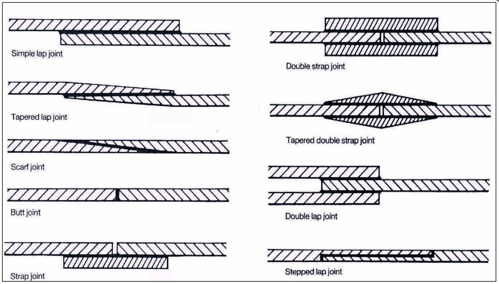
Examine the standard adhesive joint cross-sections shown. Which geometry joins a single central plate slotted symmetrically between two integrally forked outer tongues—without separate cover straps—to eliminate the out-of-plane bending eccentricity of a simple lap joint?
Answer and explanation
Answer: c)
Session 24, Slide 20: in a double lap joint, the central plate is sandwiched symmetrically between two upper and lower tongues of the mating member, doubling the shear area and balancing the load path so out-of-plane peel bending moments cancel out.
Why the other options are wrong:
- a) A simple lap joint has offset load axes that generate an eccentric bending moment and peel stresses at the overlap ends.
- b) A single strap joint is asymmetric on one face only, which still induces bending eccentricity under tension.
- d) A butt joint places the bond plane perpendicular to the load in unfavourable pure tension over a small area.
Session 24, Slide 20.
Question 5 · Tapered and scarf joints versus square-ended lap joints

In the design comparison shown, why does the scarf/tapered overlap configuration in row (c) Very good outperform the square-ended simple lap joint in row (b) Good?
Answer and explanation
Answer: a)
Session 24, Slides 19-20: row (b) Good (simple lap) improves on (a) Poor (butt) by loading the overlap in shear, while (c) Very good goes further by tapering or scarfing the adherends (reducing stiffness mismatch at the ends and aligning the load line) to suppress edge peel and shear stress spikes.
Why the other options are wrong:
- b) Good joint design aims for large bonding area and uniform load transfer, never shrinking the area to a single line.
- c) Inverts the mechanics: scarf and tapered joints reduce peel and edge spikes rather than converting shear into peel.
- d) All geometries in rows
(a)–(c)are purely bonded adhesive joints; fasteners appear only in row(d).
Session 24, Slides 19-20.
Question 6 · Mechanism of beveled overlap edges and adhesive fillets
Beveling (tapering) the outer edges of stepped or tapered lap adherends markedly increases joint fatigue resistance because tapering:
Answer and explanation
Answer: d)
Session 24, Slides 18-20 (with standard shear-lag beveling mechanics): abrupt square adherend ends create sharp stiffness jumps and peel/shear stress peaks at the overlap edges. Tapering or beveling those edges provides a gradual stiffness transition that suppresses stress concentrations where cracks nucleate.
Why the other options are wrong:
- a) Increasing adhesive thickness does not stop shrinkage and usually reduces apparent shear strength (Slide 26).
- b) Poor wetting at the overlap edges introduces unbonded flaws that accelerate fatigue crack growth rather than stopping it.
- c) Normal tension at the overlap tip would drive opening peel fracture rather than improving fatigue life.
Session 24, Slides 18-20.
Question 7 · Role of combination (hybrid) joints
Why do aerospace structures sometimes employ combination joints—combining an adhesive bondline with end rivets or spot welds?
Answer and explanation
Answer: b)
Session 24, Slide 19 ((d) Combination joints): pairing adhesive bonding with rivets or spot welds combines the uniform shear transfer of the adhesive with mechanical/metallurgical arrest of out-of-plane peel and crack propagation at joint boundaries.
Why the other options are wrong:
- a) Spot welding near an adhesive requires controlled weld-bonding sequencing so the adhesive is not thermally destroyed, not melted into a thermoplastic film.
- c) Reliable adhesive bonding in combination joints still demands full surface preparation and cleanliness.
- d) The purpose of bonding in a hybrid joint is to carry shear smoothly and relieve fastener hole loads, not leave the overlap unbonded.
Session 24, Slide 19.
Question 8 · Subassembly planning and curvature restrictions
To maximize manufacturability and bondline reliability across an airframe assembly, bonded subassemblies should be designed to:
Answer and explanation
Answer: c)
Session 24, Slide 19 explicitly specifies two practical design rules for adhesive assemblies: subassemblies should be designed to minimize adhesive operations, and parts with complex curvature should be avoided (since complex curvature complicates uniform pressure/jigging and bondline thickness control).
Why the other options are wrong:
- a) Adding sequential bonding steps and complex curves multiplies defect risk and tooling cost.
- b) Placing bondlines perpendicular to tension creates butt joints (explicitly discouraged on Slide 18).
- d) Excessive bondline gaps weaken structural shear strength (Slide 26) and exceed gap limits of fast-curing structural adhesives.
Session 24, Slides 18-19 and 26.
Question 9 · Coefficient of thermal expansion (CTE) compatibility in adhesive selection
When an aluminium wing rib ($\alpha \approx 23 \times 10^{-6}\text{ }^\circ\text{C}^{-1}$) is bonded to a quasi-isotropic carbon-epoxy spar ($\alpha \approx 2 \times 10^{-6}\text{ }^\circ\text{C}^{-1}$) with a stiff adhesive cured at 180 °C, what happens as the assembly cools to service temperatures?
Answer and explanation
Answer: d)
Session 24, Slides 17 and 32-33: compatible coefficients of thermal expansion are a key adhesive-selection criterion because differences in thermal expansion between bonded adherends generate residual stresses ($\sigma_{\text{residual}}$) on cooling and during thermal cycling.
Why the other options are wrong:
- a) Aluminium has roughly ten times the linear thermal expansion coefficient of carbon-epoxy, so contractions differ strongly.
- b) An adhesive cannot alter the intrinsic thermal expansion coefficients of bulk metallic or composite adherends.
- c) Cure shrinkage is a polymer cross-linking/volume contraction effect and never turns epoxy into a metal matrix.
Session 24, Slides 17 and 32-33.
Question 10 · Required overlap length for a single-lap shear joint
A single-lap joint of bond width $w = 25\text{ mm}$ must carry an axial tensile force $F = 6.0\text{ kN}$ while keeping the average adhesive shear stress below an allowable limit $\tau_{\text{allow}} = 8.0\text{ MPa}$. What minimum overlap length $L$ is required?
Answer and explanation
Answer: a)
Session 24, Slides 25 and 28: in a single-lap joint loaded in shear over a uniform bonded area $A = w L$, average shear stress is $\tau = F/(wL)$. Setting $\tau = \tau_{\text{allow}} = 8.0\text{ MPa} = 8.0\text{ N/mm}^2$ gives $L = F/(w\tau_{\text{allow}}) = 6000\text{ N} / (25\text{ mm} \times 8.0\text{ N/mm}^2) = 30\text{ mm}$.
Why the other options are wrong:
- b) Halves the required overlap ($15\text{ mm}$), which would correspond to a double-lap joint with two shear planes or double the allowable stress.
- c) Computes $6000/(25 \times 5)$ or misapplies a unit factor, giving an oversized overlap of 48 mm.
- d) Applies an extra factor of 2 ($60\text{ mm}$), corresponding to an unstated $4.0\text{ MPa}$ stress limit.
Session 24, Slides 25 and 28.
B110 — Surface Preparation, Primers and Joint Production
Ten test questions on adhesives, written for this portal in the style of Part I of Assessment Test III. Each question has four options and only one is right. Answer all ten before opening any explanation.
Question 1 · Production sequence of an adhesive joint
What is the correct sequential order of the main steps in producing a structural adhesive joint?
Answer and explanation
Answer: c)
June 2014 extraordinary final exam, Q6A (and Session 24, Slides 15-16): an adhesive joint is produced in a fixed sequence: (1) adhesive selection, (2) joint design, (3) adherent preparation/cleaning, (4) adhesive preparation, (5) adhesive application, (6) joint assembly/jigging, (7) formation of the joint, (8) curing, and (9) assessment of joint resistance (testing).
Why the other options are wrong:
- a) Places adherent preparation before adhesive selection and joint design, and puts curing before assembly.
- b) Applies the adhesive before preparing the adherends and before selecting the adhesive.
- d) Attempts assembly before preparing/cleaning the adherend surfaces, ruining interfacial adhesion.
MATERIALS_FINALEXAM_2014_EXTRA.pdf, p. 7 Q6A; Session 24, Slides 15-16.
Official examQuestion 2 · Importance of surface preparation and primer objectives
Referring to surface preparation and the objectives of applying a primer prior to adhesive bonding, which one of the following statements is TRUE:
Answer and explanation
Answer: d)
June 2013 extraordinary final exam, Q6A (and Session 24, Slides 22-23): surface preparation ensures a sound, reproducible adhesive-substrate interface free of weak oxide films and contaminants. Applying a low-viscosity primer protects the substrate surface (including from UV), prevents capillary absorption into porous adherends, optimizes wetting and reactivity, raises union strength and stress transfer, and provides processing flexibility.
Why the other options are wrong:
- a) Surface preparation seeks controlled roughness rather than a mirror finish, and primers accelerate/improve wetting rather than slowing it.
- b) Surface preparation is essential for metals, composites, and plastics alike, and primers are functional interfacial layers, not decorative coatings.
- c) A primer strengthens the interface but cannot overcome poor joint geometry that subjects thin sheets to peel loading.
MATERIALS_FINALEXAM_2013_EXTRA.pdf, p. 3 Q6A; Session 24, Slides 22-23.
Official examQuestion 3 · Conditions for adhesive adaptation before curing
Regarding the conditions needed for a liquid adhesive to adapt to a prepared substrate before hardening, which one of the following statements is FALSE:
Answer and explanation
Answer: a)
Session 24, Slide 21 states three adaptation conditions: appropriate surface roughness, wettability requiring the adhesive to have a lower surface tension than the substrate, and adequate viscosity to penetrate the roughness. Beading up on peaks prevents interfacial contact. Statement a is false.
Why the other options are wrong:
- b) True: Slide 21 lists appropriate surface roughness as the first requirement for adaptation.
- c) True: Slide 21 states that adhesive viscosity must be adequate to enable wetting of substrate roughness.
- d) True: Slide 21 explicitly requires lower surface tension in the fluid adhesive than in the solid substrate.
Session 24, Slide 21.
Question 4 · Chemical solvent degreasing
Which surface-preparation method uses solvents such as acetone or alcohol specifically to remove oils, greases, and mold-release agents prior to bonding?
Answer and explanation
Answer: b)
Session 24, Slide 22 distinguishes chemical contaminant-removal methods (degreasing with solvents such as acetone or alcohols) from mechanical abrasion/oxide removal and surface-modification steps (grit blasting, anodizing).
Why the other options are wrong:
- a) Anodizing is an electrochemical surface modification that grows a controlled porous oxide film rather than washing off oil.
- c) Grit blasting is a mechanical surface-roughening and oxide-removal process performed on clean substrates.
- d) Corona discharge oxidizes polymer surfaces chemically via ionized air rather than dissolving grease with liquid solvents.
Session 24, Slide 22.
Question 5 · Sequence of degreasing before mechanical abrasion
If an aluminium bracket coated with machining oil is grit blasted directly without first performing solvent degreasing, what is the most likely result?
Answer and explanation
Answer: c)
Session 24, Slides 9 and 22 (standard degrease-abrade-degrease practice): abrading or grit blasting an uncleaned oily surface drives grease and contaminants into newly cut micro-crevices, creating weak boundary spots that trigger interfacial failure.
Why the other options are wrong:
- a) Mechanical blasting does not chemically convert liquid machine oil into an adhesion-promoting primer.
- b) Grit blasting still roughens the metal, but embeds oily contamination inside the resulting topography.
- d) Structural adhesives do not absorb and neutralize trapped machining oils without degrading interfacial adhesion.
Session 24, Slides 9 and 22.
Question 6 · Chemical etching and chromate-free anodizing of aluminium
Chemical etching and chromate-free anodizing prepare aerospace aluminium alloys for structural bonding primarily by:
Answer and explanation
Answer: a)
Session 24, Slide 22 (with standard aerospace anodizing extension): removing weak native oxides and growing a controlled, stable, porous anodic oxide film (as in chromate-free phosphoric or tartaric-sulfuric anodizing) avoids low-adhesion films and enables both micro-mechanical keying and stable chemical bonding.
Why the other options are wrong:
- b) Weak, loose oxide films are explicitly named on Slide 22 as low-adhesion defects to be avoided.
- c) Etching and anodizing are room- or warm-bath chemical/electrochemical treatments that never melt aluminium.
- d) Lowering surface energy with PTFE would prevent adhesive wetting and destroy bond strength.
Session 24, Slide 22.
Question 7 · Plasma and corona treatment of polymer adherends
Which dry physical-chemical surface treatment is commonly applied to low-surface-energy polymer or composite substrates to introduce polar functional groups, increase surface energy, and boost adhesive wettability?
Answer and explanation
Answer: d)
Session 24, Slides 21-22 (with standard polymer-pretreatment extension): polyolefins and many engineering polymers have low surface energy and poor wettability. Ionized plasma or corona discharge treatment activates and oxidizes the outer molecular layer, raising substrate surface energy above the adhesive's surface tension without bulk heating.
Why the other options are wrong:
- a) Mineral oil acts as a low-energy contaminant that blocks wetting and causes adhesive failure.
- b) Extended hot-water immersion promotes moisture uptake and hydrolysis rather than activating polymer surfaces.
- c) Silicone mold release intentionally prevents adhesion and is a critical contaminant to remove before bonding.
Session 24, Slides 21-22; Topic 11 surface-modification extension.
Question 8 · Primer prevention of capillary starvation
Applying a low-viscosity primer before bonding a porous substrate prevents bondline starvation primarily because the primer:
Answer and explanation
Answer: b)
Session 24, Slide 23 explicitly lists preventing capillary absorption of the adhesive solution into a porous adherent as a primary function of primers, alongside optimizing wetting and interfacial reactivity.
Why the other options are wrong:
- a) Primers form thin interfacial films rather than swelling to multi-millimeter gap-filling layers.
- c) Primers promote wetting and reactivity rather than freezing the bulk adhesive prior to contact.
- d) Primers are thin organic/organometallic interfacial coatings, not metallic layers.
Session 24, Slide 23.
Question 9 · Primer functions and limitations
Which of the following statements about primers in adhesive joint production is FALSE:
Answer and explanation
Answer: a)
Session 24, Slides 22-23: primers are applied after surface cleaning/preparation to protect the prepared surface, optimize interaction, improve stress transfer, protect against UV, and give processing flexibility (holding time before bonding). A primer never replaces degreasing oily contamination.
Why the other options are wrong:
- b) True: Slide 23 lists facilitating processing flexibility (protecting cleaned surfaces until bonding) as an explicit primer objective.
- c) True: Slide 23 explicitly lists substrate surface protection and UV protection among primer objectives.
- d) True: Slide 23 lists increasing union strength and improving stress transfer among primer objectives.
Session 24, Slides 22-23.
Question 10 · Jigging and pressure during joint assembly
Which of the following statements regarding adhesive application, joint assembly, and curing is TRUE:
Answer and explanation
Answer: c)
Session 24, Slides 16 and 24-25: after application (by brush, film, gun, or spray), joint assembly uses jigging and controlled pressure to align components, control bondline thickness, maintain intimate contact, and squeeze out air pockets until curing completes.
Why the other options are wrong:
- a) Leaving air bubbles in the bondline reduces bonded area and initiates premature failure; clamping pressure expels trapped air.
- b) Multi-component adhesives still require accurate proportioning and mixing in the adhesive-preparation step regardless of application tool.
- d) Joint testing (assessment of joint resistance) is the final step after curing, never prior to bonding (Slide 16).
Session 24, Slides 16 and 24-25.
B111 — Adhesive Testing and Failure Modes
Ten test questions on adhesives, written for this portal in the style of Part I of Assessment Test III. Each question has four options and only one is right. Answer all ten before opening any explanation.
Question 1 · Geometric parameters of an adhesive test joint
Which set of four geometric parameters characterizes a lap-bonded adhesive joint specimen during mechanical testing?
Answer and explanation
Answer: d)
Session 24, Slide 25 explicitly defines the geometric factors characterizing an adhesive joint: the width of the bond, the overlapping length, the adhesive thickness, and the substrate thickness.
Why the other options are wrong:
- a) Describes microstructural parameters of polycrystalline ceramics or metals rather than adhesive lap geometry.
- b) Describes bulk polymer molecular and morphological characteristics (Unit 9), not bonded joint dimensions.
- c) Mixes wetting and process variables with surface roughness rather than the four standard specimen dimensions.
Session 24, Slide 25.
Question 2 · Tack (instantaneous adhesion) testing
Referring to tack testing of adhesives, which one of the following statements is TRUE:
Answer and explanation
Answer: c)
Session 24, Slide 25 defines tack as instantaneous adhesion (ability to stick and wettability), illustrated by touching and lifting a vertical probe from an adhesive layer and by the distance a sphere/drop rolls along an adhesive-coated inclined plane.
Why the other options are wrong:
- a) Thermal ageing durability is a physical-chemical long-term criterion (Slide 34), not instantaneous tack.
- b) Destructive shear strength of cured structural joints is measured by single-lap shear testing (Slides 28 and 30).
- d) Driving a wedge into a cured specimen tests environmental crack-growth durability, not instantaneous tack.
Session 24, Slide 25.
Question 3 · Peel test geometries and bondline thickness effect

According to the peel-test schematic and the accompanying Shear strength versus thickness curve shown, which statement is correct?
Answer and explanation
Answer: b)
Session 24, Slide 26: the plot shows shear strength decreasing as adhesive thickness increases (thicker bondlines contain more defects and higher bending eccentricity). The 90°, 180°, and T-peel tests assess tape/bond compatibility and depend on substrate properties, peel angle, rate, adhesion mechanism, and temperature, though joints must not be loaded in peel in service.
Why the other options are wrong:
- a) Inverts the plotted curve: shear strength falls rather than rises as adhesive thickness increases.
- c) T-peel tests peel two flexible adherends pulled in opposite directions into a T shape, not rigid compression blocks.
- d) Contradicts Slide 26, which explicitly lists substrate nature/roughness, peeling angle, rate, adhesion mechanism, and temperature as governing peel factors.
Session 24, Slide 26.
Question 4 · Specialized peel and wedge durability tests
While T-peel tests two flexible adherends and climbing drum peel measures thin skin-to-honeycomb sandwich peel resistance, which test drives a wedge into a bonded double-cantilever interface under hot-wet exposure to screen surface-preparation durability?
Answer and explanation
Answer: a)
Session 24, Slides 25-28 (with standard aerospace testing extension): in the wedge durability test, a metal wedge is driven into the bondline of two thick adherends to open a crack tip under sustained cleavage stress; exposing the wedged specimen to hot-wet environments tracks crack growth to detect weak or poorly prepared interfaces.
Why the other options are wrong:
- b) Rolling-ball tack tests measure instantaneous surface stickiness of uncured/pressure-sensitive adhesives, not cured interfacial durability.
- c) Compression block tests apply uniform normal compressive loads rather than driving an opening crack tip.
- d) Vicat softening measures thermoplastic needle penetration temperature rather than adhesive interfacial durability.
Session 24, Slides 25-28; Topic 11 aerospace test extension.
Question 5 · Brittle versus tough adhesives under peel loading

Compare the left and right peel-front schematics shown. Which pairing correctly identifies the two adhesive classes and explains their difference in peel resistance?
Answer and explanation
Answer: d)
Session 24, Slide 27: in a rigid/brittle adhesive such as epoxy (left), only the narrow line at the peel front carries the stress, creating high local concentration and low peel energy (< 525 N/m). In a tough/flexible adhesive such as polyurethane (right), a large volume of deforming/fibrillating adhesive shares the stress over a wider surface, yielding much higher peel strength (up to 14 000 N/m).
Why the other options are wrong:
- a) Swaps the left (line-concentrated brittle) and right (volume-deforming tough) schematics.
- b) Mislabels both panels: rigid epoxy does not absorb high peel energy, and the right schematic illustrates tough/flexible fibrillation rather than creep.
- c) Equal peel angle does not equalize peel energy when one adhesive restricts deformation to a front line and the other spreads strain over a large volume.
Session 24, Slides 27 and 38.
Question 6 · Normal and shear qualification tests
Unlike peel tests, single-lap shear (UNE-EN 1465), tension, and compression tests characterize structural adhesives fairly because:
Answer and explanation
Answer: c)
Session 24, Slides 28 and 30: in compression, tension, and shear specimens, the adhesive joint operates over its entire surface area with nearly uniform stress distribution, directly testing the high strength required of structural adhesives.
Why the other options are wrong:
- a) Line concentration describes peel tests rather than normal/shear qualification tests.
- b) Structural testing aims to measure adhesive shear/normal strength rather than prematurely yielding the adherend.
- d) Bonded area ($w \times L$) and surface cleanliness strongly affect measured failure load in lap-shear testing.
Session 24, Slides 25, 28, and 30.
Question 7 · Failure modes of an adhesive joint
Regarding the failure modes of an adhesive joint (cohesive in adhesive, cohesive in substrate, interfacial/adhesive, and mixed), which one of the following statements is FALSE:
Answer and explanation
Answer: b)
June 2016 extraordinary final exam, Q10 (and Session 24, Slides 30-31): cohesive failure of the adhesive, surface-ply delamination of composite adherends, and adherend failure are acceptable failure modes because the adhesive-adherend interface held. Interfacial (adhesive) failure between two phases is unacceptable because it reveals surface contamination, defective preparation, or environmental interfacial attack. Statement b is false.
Why the other options are wrong:
- a) True: Slide 31 explicitly classifies cohesive failure of the adhesive as an acceptable failure mode.
- c) True: Slides 30-31 classify substrate (adherend) failure and composite surface-ply delamination as acceptable modes (indicating an over-dimensioned adhesive or sound bond).
- d) True: Slide 30 illustrates 50 % cohesive failure alongside 100 % cohesive, adhesive, and substrate failures under UNE-EN 1465.
MATERIALS_FINALEXAM_2016_EXTRA_SOL.pdf, p. 5 Q10; Session 24, Slides 30-31.
Official examQuestion 8 · Diagnosing failure locus from the adhesion-cohesion schematic

If a tensile-shear specimen fractures exclusively across the vertical interfacial links (Adhesión) along Sustrato 1 while leaving all internal bulk links (Cohesión) intact on Sustrato 2, what failure mode has occurred and what does it diagnose?
Answer and explanation
Answer: a)
Session 24, Slides 4 and 30-31: breaking across the interfacial Adhesión bonds at Sustrato 1 leaves Sustrato 1 bare with all adhesive remaining on Sustrato 2. That defines interfacial (adhesive) failure—an unacceptable mode pointing to contamination, poor surface preparation, or interfacial moisture degradation.
Why the other options are wrong:
- b) Cohesive failure breaks the internal
Cohesiónlinks inside the adhesive molecules, leaving adhesive on both substrates. - c) Substrate failure breaks
Sustrato 1orSustrato 2outside the bondline rather than parting the interfacial links. - d) Creep flow appears as progressive time-dependent shear slip inside the adhesive layer, not brittle interfacial parting.
Session 24, Slides 4 and 30-31.
Question 9 · Unacceptable failure modes in service
Two failed aerospace bonded panels are examined: Panel X failed by excessive out-of-plane deflection peeling the skin from the bondline edge, whereas Panel Y experienced slow time-dependent shear slip while held under static load in a warm cabin. How are these failures classified?
Answer and explanation
Answer: c)
Session 24, Slide 31 explicitly groups three unacceptable failure modes: (1) adhesion failure at the interface, (2) adhesive peel due to excessive out-of-plane loads, and (3) adhesive creep (flow) under sustained load/temperature. Both Panel X and Panel Y represent unacceptable design or material-selection failures.
Why the other options are wrong:
- a) Failure outside the metal skin does not make peel or creep acceptable; only cohesive adhesive failure and surface-ply delamination are acceptable non-adherend modes.
- b) Out-of-plane peeling at the interface is unacceptable adhesive peel, and slow shear flow is unacceptable creep, not cohesive fracture.
- d) Uncontrolled viscous creep causes permanent joint slip and eventual rupture, so it is classified as unacceptable on Slide 31.
Session 24, Slide 31.
Question 10 · Apparent lap-shear strength calculation
In a standard single-lap shear test (UNE-EN 1465), a bonded specimen has bond width $w = 25\text{ mm}$ and overlap length $L = 12.5\text{ mm}$. It fails cohesively at a maximum tensile load $F_{\max} = 5.0\text{ kN}$. What is the apparent lap-shear strength?
Answer and explanation
Answer: b)
Session 24, Slides 25, 28, and 30: the bonded shear area is $A = w L = 25\text{ mm} \times 12.5\text{ mm} = 312.5\text{ mm}^2$. Dividing the failure load $F_{\max} = 5000\text{ N}$ by $A$ gives $\tau_{\max} = 5000 / 312.5 = 16.0\text{ N/mm}^2 = 16.0\text{ MPa}$.
Why the other options are wrong:
- a) Divides the result by 2 ($8.0\text{ MPa}$), as if two separate shear planes shared the load in a double-lap specimen.
- c) Uses an incorrect overlap length of $10\text{ mm}$ ($5000 / 250 = 20.0\text{ MPa}$) instead of $12.5\text{ mm}$.
- d) Doubles the correct stress ($32.0\text{ MPa}$), corresponding to halving the bonded area.
Session 24, Slides 25, 28, and 30.
B112 — Environmental Degradation and Durability
Ten test questions on adhesives, written for this portal in the style of Part I of Assessment Test III. Each question has four options and only one is right. Answer all ten before opening any explanation.
Question 1 · Primary limitation and durability factors of bonded joints
Referring to the environmental durability of structural adhesive joints, which one of the following statements is TRUE:
Answer and explanation
Answer: a)
Session 24, Slide 32 identifies gradual degradation—which lowers properties and triggers failure—as the main problem of adhesive bonds, driven by five factors: temperature, moisture, electrochemical corrosion of adherents, combined temperature + moisture + mechanical loads, and UV/thermal ageing.
Why the other options are wrong:
- b) Even cross-linked thermosets absorb water, suffer oxidative ageing, and degrade at elevated temperature or under thermal mismatch.
- c) Slide 32 explicitly cites the synergistic combination of temperature, moisture, and mechanical loads, and Slide 33 notes moisture degradation increases with temperature.
- d) Gradual environmental degradation reduces strength over service life even below initial static overload levels.
Session 24, Slides 32-33.
Question 2 · Temperature effect on adhesive tensile stress-strain curves
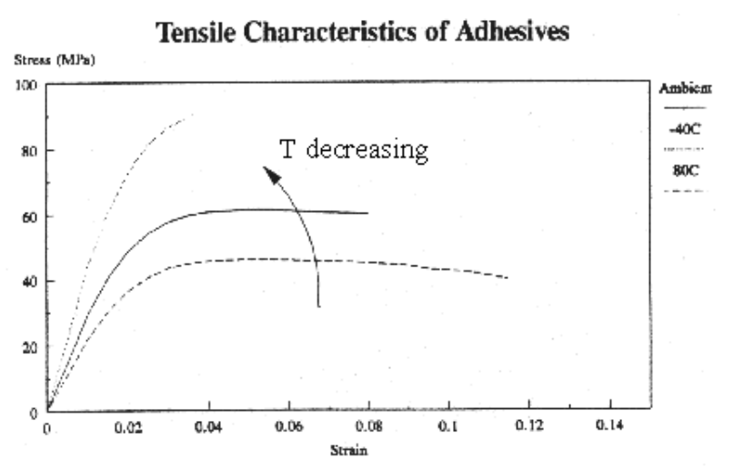
Examine the tensile stress-strain curves measured at $-40\,^\circ\text{C}$, ambient temperature, and $+80\,^\circ\text{C}$. How does lowering the service temperature affect the adhesive's mechanical response?
Answer and explanation
Answer: b)
Session 24, Slide 33: as the plot indicates with the arrow T decreasing, cooling from $+80\,^\circ\text{C}$ through ambient down to $-40\,^\circ\text{C}$ steepens the initial elastic slope (higher modulus) and raises tensile strength (~90 MPa at $-40\,^\circ\text{C}$ vs ~47 MPa at $+80\,^\circ\text{C}$), while shortening fracture strain below ~0.04 (embrittlement).
Why the other options are wrong:
- a) Describes increasing temperature toward $+80\,^\circ\text{C}$, where the polymer softens and reaches higher strain (~0.115) at lower stress.
- c) Peak stress clearly doubles between $+80\,^\circ\text{C}$ (~47 MPa) and $-40\,^\circ\text{C}$ (~90 MPa), falsifying constant strength.
- d) The highest elongation curve belongs to $+80\,^\circ\text{C}$, whereas $-40\,^\circ\text{C}$ breaks earliest at low strain.
Session 24, Slide 33.
Question 3 · Thermal softening above the glass transition temperature
If an aircraft epoxy bondline is operated continuously under shear load above its glass transition temperature $T_g$, what happens to joint behaviour?
Answer and explanation
Answer: c)
Session 24, Slides 31-33 (with polymer $T_g$ fundamentals from Topic 9): heating an adhesive up to and above $T_g$ drops modulus and adherence sharply, activating viscoelastic chain flow that leads to unacceptable adhesive creep (Slide 31) and premature bond failure.
Why the other options are wrong:
- a) Freezing chain mobility into a rigid glass occurs below $T_g$, not above it.
- b) Elevated temperature lowers interfacial adherence (Slide 33) rather than increasing covalent bond density.
- d) Cross-linked thermoset epoxies soften and creep above $T_g$, then thermally degrade at higher temperatures rather than melting reversibly like thermoplastics.
Session 24, Slides 31-33.
Question 4 · Differential thermal mismatch strain after curing
An epoxy cures at $120\,^\circ\text{C}$ between an aluminium alloy ($\alpha_{\text{Al}} = 23 \times 10^{-6}\text{ }^\circ\text{C}^{-1}$) and a carbon-epoxy composite ($\alpha_{\text{CFRP}} = 1 \times 10^{-6}\text{ }^\circ\text{C}^{-1}$), and then cools by $\Delta T = 100\,^\circ\text{C}$ to room temperature. What differential free thermal strain $\Delta\varepsilon_{\text{th}} = (\alpha_{\text{Al}} - \alpha_{\text{CFRP}})\Delta T$ (in percent) must be accommodated by residual bondline stresses?
Answer and explanation
Answer: d)
Session 24, Slides 17 and 32-33 (with thermal strain $\varepsilon_{\text{th}} = \alpha\Delta T$ from Topic 7): the CTE difference is $\Delta\alpha = (23 - 1) \times 10^{-6}\text{ }^\circ\text{C}^{-1} = 22 \times 10^{-6}\text{ }^\circ\text{C}^{-1}$. Over $\Delta T = 100\,^\circ\text{C}$, the differential thermal strain is $\Delta\varepsilon_{\text{th}} = 22 \times 10^{-6} \times 100 = 2.2 \times 10^{-3} = 0.22\text{ \%}$.
Why the other options are wrong:
- a) Drops a factor of 10 in converting the dimensionless strain $2.2 \times 10^{-3}$ into percent ($0.022\text{ \%}$ instead of $0.22\text{ \%}$).
- b) Uses an incorrect temperature step or arithmetic slip when multiplying $\Delta\alpha$ by $\Delta T$.
- c) Doubles the differential thermal strain ($0.44\text{ \%}$), corresponding to $\Delta T = 200\,^\circ\text{C}$ instead of $100\,^\circ\text{C}$.
Session 24, Slides 17 and 32-33; Session 15, Slide 45.
Question 5 · Interfacial moisture attack mechanisms
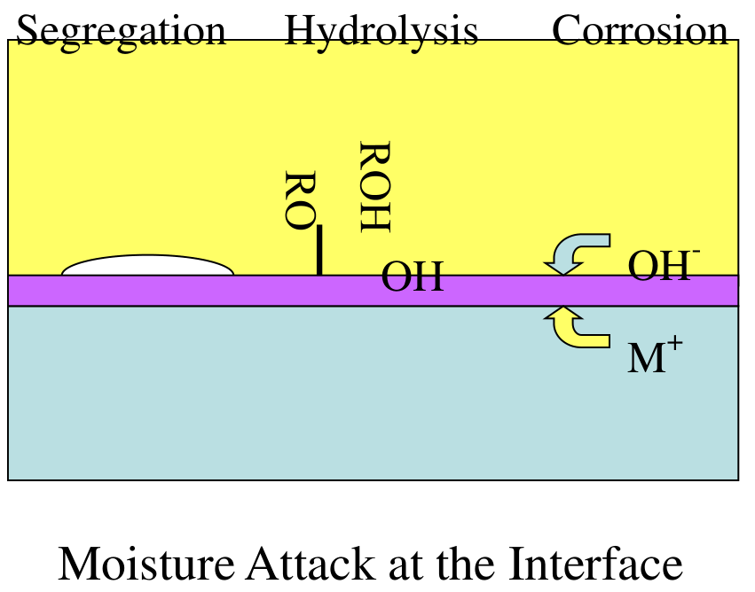
In the schematic of moisture attack at an adhesive-metal interface, what does the leftmost mechanism labeled Segregation represent compared with Hydrolysis and Corrosion?
Answer and explanation
Answer: b)
Session 24, Slide 33 defines the three moisture attacks shown at the interface: segregation occurs when water is preferentially attracted to the high-energy interface and physically displaces the adhesive bond; hydrolysis chemically cleaves interfacial bonds or hydrated oxide layers ($\text{RO} \to \text{ROH}$); and corrosion dissolves the metal adherend ($\text{M}^+$, $\text{OH}^-$).
Why the other options are wrong:
- a) Water weakens and breaks interfacial adhesion rather than forming durable primary covalent bonds.
- c) Precipitation of mineral crystals is not shown; segregation opens an unbonded water-filled gap at the interface.
- d) Ambient moisture causes gradual interfacial displacement and degradation, not rapid curing.
Session 24, Slide 33.
Question 6 · Bulk and interfacial effects of moisture ingress
Regarding the effects of absorbed moisture on an adhesive joint, which one of the following statements is FALSE:
Answer and explanation
Answer: a)
Session 24, Slides 32-33: water acts as a plasticizer inside the polymer (making the adhesive more plastic and softer, lowering $T_g$ rather than cross-linking it), displaces interfacial bonds (segregation), hydrolyses oxides, corrodes metals, and drives micro-cracking. Statement a is false.
Why the other options are wrong:
- b) True: Slides 32-33 explicitly state that moisture weakens the adhesive by making it more plastic.
- c) True: Slide 33 highlights chemical change of adherents via metal corrosion and hydrolysis of the oxide layer.
- d) True: Slides 32-33 list micro-cracking and explicitly note that moisture effects grow with temperature and humidity.
Session 24, Slides 32-33.
Question 7 · Mitigating moisture ingress in adhesive joints
Which formulation and joint-protection strategy is specifically used to reduce moisture diffusion and interfacial water degradation in service?
Answer and explanation
Answer: d)
Session 24, Slide 32 explicitly recommends countering moisture degradation (plasticization, hydrolysis, micro-cracking) with mineral fillers (which lengthen diffusion tortuosity) and protective edge sealants (blocking moisture ingress paths).
Why the other options are wrong:
- a) Water-base vegetable glues swell and soften readily in moisture rather than resisting hostile environments.
- b) Trapped air pockets from over-roughening become moisture-accumulation sites that worsen interfacial attack.
- c) Leaving bond edges unprimed and unsealed exposes the high-stress interface directly to humid air and condensed water.
Session 24, Slide 32 (and Slides 23 and 37).
Question 8 · Galvanic and crevice corrosion at metal-composite joints
Although an intact polymer adhesive electrically isolates dissimilar adherends, moisture ingress into a damaged or unsealed carbon-fibre composite-to-aluminium lap joint can accelerate aluminium degradation because:
Answer and explanation
Answer: c)
Session 24, Slides 3 and 32-33 (with standard galvanic/crevice corrosion mechanisms): an intact adhesive layer prevents galvanic coupling by electrical isolation (Slide 3). Once moisture penetrates debonded crevices or bridges exposed conductive carbon fibres to aluminium, crevice corrosion and galvanic attack (with aluminium as the active anode) rapidly undermine the interface.
Why the other options are wrong:
- a) Absorbed electrolyte water lowers electrical resistance rather than raising it to cause sparking.
- b) Aluminium is anodically active relative to noble graphite/carbon fibres, so aluminium corrodes preferentially.
- d) Solid carbon fibres cannot diffuse through cured epoxy into metallic aluminium at room temperature.
Session 24, Slides 3 and 32-33; Topic 11 durability extension.
Question 9 · UV and thermal oxidation ageing mechanism
Under combined ultraviolet light, elevated temperature, and oxygen diffusion into an adhesive, oxidation ageing degrades mechanical strength because oxygen first forms polymer hydroperoxides ($\text{polymer–O–O–H}$) that subsequently decompose into:
Answer and explanation
Answer: d)
Session 24, Slide 32 writes the exact ageing sequence: oxygen diffuses into the adhesive to form hydroperoxides ($\text{polymer–O–O–H}$), which split with temperature and UV light into $\text{R–O}\cdot + \cdot\text{OH}$ free radicals that attack and destroy the polymer chains.
Why the other options are wrong:
- a) Mineral silica is an inorganic filler added during formulation, not a decomposition product of polymer hydroperoxides.
- b) Hydroperoxide breakdown destroys bulk polymer chains rather than forming protective interfacial silane links.
- c) Free radicals cleave existing cured chains and reduce strength rather than catalyzing fresh polymerization.
Session 24, Slide 32.
Question 10 · Mechanical versus physical-chemical performance criteria
Which of the following statements correctly separates the mechanical and physical-chemical criteria used to qualify structural adhesive performance?
Answer and explanation
Answer: b)
Session 24, Slide 34 groups adhesive performance assessment into mechanical criteria (resistance to static loading, fatigue, and impact) and physical-chemical criteria (temperature resistance, ageing with temperature, resistance to moisture, and resistance to chemical agents).
Why the other options are wrong:
- a) Swaps the two groups: fatigue and impact belong to mechanical criteria, whereas moisture resistance is physical-chemical.
- c) Contradicts aerospace qualification practice on Slide 34, which mandates static, fatigue, impact, thermal, moisture, and chemical criteria.
- d) Creep under load at elevated temperature reflects bulk viscoelastic temperature resistance (Slides 31 and 34), not instantaneous tack.
Session 24, Slides 31 and 34.